论基础模型的机遇与风险
论文发布日期
作者： Rishi Bommasani、Drew A. Hudson、Ehsan Adeli、Russ Altman、Simran Arora、Sydney von Arx、Michael S. Bernstein、Jeannette Bohg、Antoine Bosselut、Emma Brunskill、Erik Brynjolfsson、Shyamal Buch、Dallas Card、Rodrigo Castellon、Niladri Chatterji、Annie Chen、Kathleen Creel、Jared Quincy Davis、Dorottya Demszky、Chris Donahue、Moussa Doumbouya、Esin Durmus、Stefano Ermon、John Etchemendy、Kawin Ethayarajh、Li Fei-Fei、Chelsea Finn、Trevor Gale、Lauren Gillespie、Karan Goel、Noah Goodman、Shelby Grossman、Neel Guha、Tatsunori Hashimoto、Peter Henderson、John Hewitt、Daniel E. Ho、Jenny Hong、Kyle Hsu、Jing Huang、Thomas Icard、Saahil Jain、Dan Jurafsky、Pratyusha Kalluri、Siddharth Karamcheti、Geoff Keeling、Fereshte Khani、Omar Khattab、Pang Wei Koh、Mark Krass、Ranjay Krishna、Rohith Kuditipudi、Ananya Kumar、Faisal Ladhak、Mina Lee、Tony Lee、Jure Leskovec、Isabelle Levent、Xiang Lisa Li、Xuechen Li、Tengyu Ma、Ali Malik、Christopher D. Manning、Suvir Mirchandani、Eric Mitchell、Zanele Munyikwa、Suraj Nair、Avanika Narayan、Deepak Narayanan、Ben Newman、Allen Nie、Juan Carlos Niebles、Hamed Nilforoshan、Julian Nyarko、Giray Ogut、Laurel Orr、Isabel Papadimitriou、Joon Sung Park、Chris Piech、Eva Portelance、Christopher Potts、Aditi Raghunathan、Rob Reich、Hongyu Ren、Frieda Rong、Yusuf Roohani、Camilo Ruiz、Jack Ryan、Christopher Ré、Dorsa Sadigh、Shiori Sagawa、Keshav Santhanam、Andy Shih、Krishnan Srinivasan、Alex Tamkin、Rohan Taori、Armin W. Thomas、Florian Tramèr、Rose E. Wang、William Wang、Bohan Wu、Jiajun Wu、Yuhuai Wu、Sang Michael Xie、Michihiro Yasunaga、Jiaxuan You、Matei Zaharia、Michael Zhang、Tianyi Zhang、Xikun Zhang、Yuhui Zhang、Lucia Zheng、Kaitlyn Zhou、Percy Liang
机构： 斯坦福大学以人为本人工智能研究院（HAI）基础模型研究中心（CRFM） 预印本： arXiv:2108.07258v3（2022 年 7 月 12 日） 共同贡献： Rishi Bommasani 与 Percy Liang；通讯作者：Percy Liang
摘要
随着在广泛数据上训练、通常以大规模自监督方式训练，并能够适配到众多下游任务的模型兴起，人工智能正在经历一次范式转变；BERT、DALL-E 和 GPT-3 都是其中的例子。我们把这些模型称为“基础模型”，以强调它们既处于关键中心位置、又仍不完整的特征。本报告全面梳理基础模型的机遇与风险，范围包括它们的能力，例如语言、视觉、机器人操控、推理和人机交互；技术原理，例如模型架构、训练流程、数据、系统、安全、评估和理论；应用，例如法律、医疗保健和教育；以及社会影响，例如不平等、滥用、经济与环境影响、法律与伦理问题。基础模型虽然建立在标准深度学习和迁移学习之上，但其规模会产生新的涌现能力，而它们在众多任务上的有效性又形成了同质化激励。同质化能够提供强大杠杆，却也要求我们保持谨慎，因为基础模型的缺陷会被所有下游适配模型继承。尽管基础模型即将得到广泛部署，但由于其涌现性质，我们目前仍不清楚它们如何工作、何时失败，甚至不知道它们究竟具备哪些能力。要解决这些问题，我们认为，大量关键的基础模型研究都需要与其根本上的社会技术性质相称的深度跨学科协作。
1. 引言
本报告研究一种正在兴起的人工智能（AI）系统构建范式，它以我们称为“基础模型”的一类通用模型为基础。1 基础模型是指任何在广泛数据上训练、通常采用大规模自监督训练，并且能够适配到大量下游任务，例如通过微调进行适配的模型；当前例子包括 BERT [Devlin 等，2019]、GPT-3 [Brown 等，2020] 和 CLIP [Radford 等，2021]。从技术角度看，基础模型并不新鲜：它们建立在深度神经网络和自监督学习之上，而这两者都已存在数十年。然而，过去几年基础模型展现出的巨大规模与广阔范围，已经扩展了我们对可能性的想象。例如，GPT-3 拥有 1750 亿参数，虽然没有针对许多任务接受明确训练，却可以通过自然语言提示进行适配，在大量任务上达到尚可的水平 [Brown 等，2020]。与此同时，现有基础模型可能加剧危害，而且人们通常并不充分理解它们的特性。鉴于这些模型即将得到广泛部署，它们已经成为严格审视的对象 [Bender 等，2021]。
1.1 涌现与同质化
基础模型的重要性可以用两个词概括：涌现和同质化。涌现是指系统行为通过隐式诱导产生，而不是经由显式构造得到；它既是科学兴奋感的来源，也会引发人们对意外后果的焦虑。同质化是指，构建机器学习系统的方法在大量应用之间逐渐统一；它能为许多任务提供强大杠杆，却也会形成单点故障。为了更好地理解涌现与同质化，让我们回顾过去 30 年中它们在人工智能研究里的兴起过程。
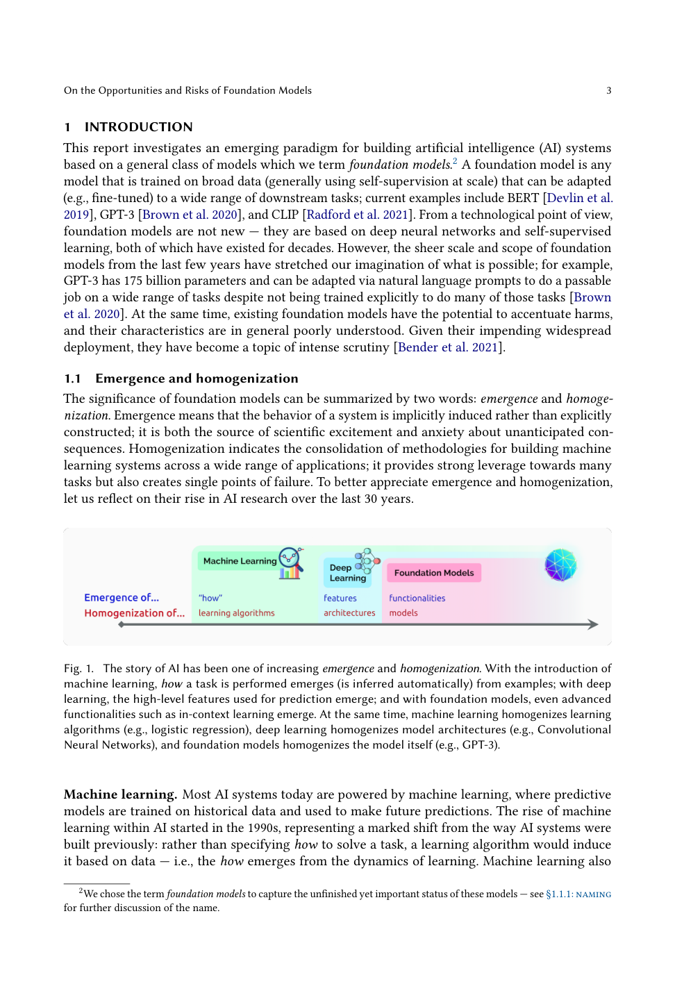
图 1： 人工智能的发展历程，是涌现与同质化不断增强的历程。机器学习出现后，任务的执行方式从样例中涌现出来，即自动推断得到；深度学习出现后，用于预测的高层特征开始涌现；到了基础模型阶段，就连上下文内学习等高级功能也会涌现。与此同时，机器学习使学习算法同质化，例如逻辑回归；深度学习使模型架构同质化，例如卷积神经网络；基础模型则使模型本身同质化，例如 GPT-3。
机器学习。 当今大多数人工智能系统都由机器学习驱动：预测模型在历史数据上训练，再用于预测未来。机器学习在人工智能领域中的兴起始于 20 世纪 90 年代，它标志着人工智能系统构建方式发生明显转变：人们不再明确规定如何解决某项任务，而是让学习算法根据数据诱导出解决方式；换言之，“如何做”从学习动态中涌现。机器学习也向同质化迈出了一步：大量应用现在可以由逻辑回归等单一通用学习算法驱动。
尽管机器学习已经遍布人工智能领域，自然语言处理（NLP）和计算机视觉中语义复杂的任务，例如输入为句子或图像的问答、物体识别，仍然需要领域专家进行“特征工程”，即编写领域专用逻辑，把原始数据转换成更适合流行机器学习方法的高层特征，例如计算机视觉中的 SIFT [Lowe，1999]。
深度学习。 2010 年前后，深度神经网络以“深度学习”之名复兴，并开始在机器学习领域获得关注 [LeCun 等，2015]。更大的数据集、更多计算资源，尤其是 GPU 的普及，以及更大胆的研究尝试共同推动了深度学习。深度神经网络直接在原始输入上训练，例如像素，而高层特征通过训练涌现，这一过程被称为“表示学习”。它在标准基准上带来了巨大性能提升，例如 AlexNet [Krizhevsky 等，2012] 在 ImageNet 数据集 [Deng 等，2009] 上的奠基性工作。深度学习也反映了同质化的进一步发展：人们不再为每个应用建立定制特征工程流水线，而是可以把同一种深度神经网络架构用于许多应用。
基础模型。 基础模型在自然语言处理领域形成得最为鲜明，因此我们暂时从这里讲起。不过，正如深度学习在计算机视觉中普及、却并不限于计算机视觉一样，我们把基础模型理解为一种通用的人工智能范式，而不是任何意义上只属于自然语言处理的技术。到 2018 年末，自然语言处理领域即将经历又一次剧烈变化，基础模型时代由此开启。从技术层面看，迁移学习 [Thrun，1998] 与规模共同促成了基础模型。迁移学习的思想是，把从一个任务学到的“知识”，例如图像中的物体识别，应用到另一个任务，例如视频中的活动识别。在深度学习中，预训练是迁移学习的主导方法：先在一个替代任务上训练模型，这个任务往往只是达到最终目的的手段，再通过微调把模型适配到感兴趣的下游任务。
迁移学习使基础模型成为可能，而规模使它们变得强大。扩大规模需要三项条件：（1）计算机硬件进步，例如过去四年 GPU 吞吐量和内存提高了 10 倍，见第 4.5 节“系统”；（2）Transformer 模型架构 [Vaswani 等，2017] 的发展，它利用硬件并行能力，训练出比过去表达能力强得多的模型，见第 4.1 节“建模”；（3）更多训练数据的可用性。
数据是否可用、以及能否有效利用这些数据，其重要性怎么强调都不过分。在计算机视觉领域，使用带标注数据集进行迁移学习至少已有十年的普遍实践，例如在用于图像分类的 ImageNet 数据集 [Deng 等，2009] 上预训练。然而，标注成本并不低，它从实践上限制了预训练所能带来的收益。
相比之下，自监督学习的预训练任务会自动从无标注数据中得到。2 例如，用于训练 BERT [Devlin 等，2019] 的掩码语言建模任务，是根据一个词周围的上下文预测句子中缺失的词，例如“我喜欢____甘蓝”。自监督任务只依赖无标签数据，因此更容易扩展；同时，这类任务还被设计为迫使模型预测输入的一部分，所以与在更有限标签空间上训练的模型相比，它们可以学习更丰富、也可能更有用的内容。
自监督学习早已取得大量进展。早期工作包括词嵌入 [Turian 等，2010；Mikolov 等，2013；Pennington 等，2014]：它为每个词关联一个与上下文无关的向量，并为大量自然语言处理模型奠定基础。不久之后，基于自回归语言建模的自监督学习开始流行，即根据前面的词预测下一个词 [Dai 和 Le，2015]。由此产生了能够在上下文中表示词的模型，例如 GPT [Radford 等，2018]、ELMo [Peters 等，2018] 和 ULMFiT [Howard 和 Ruder，2018]。3
下一波自监督学习发展很快接踵而至，包括 BERT [Devlin 等，2019]、GPT-2 [Radford 等，2019]、RoBERTa [Liu 等，2019]、T5 [Raffel 等，2019] 和 BART [Lewis 等，2020a]。这些工作采用 Transformer 架构，引入表达能力更强的深层双向句子编码器，并扩展到更大的模型和数据集。
虽然可以只从自监督学习角度理解这最后一波技术发展，但 BERT 的出现还带来了一个社会学意义上的转折点。2019 年以前，使用语言模型进行自监督学习，本质上是自然语言处理的一个子领域，与该领域其他发展并行推进。2019 年以后，随着使用 BERT 成为常态，基于语言模型的自监督学习越来越像是自然语言处理的底层基质。人们接受单个模型可以用于如此广泛的任务，这标志着基础模型时代开始。
基础模型带来了前所未有的同质化程度：现在，几乎所有最先进的自然语言处理模型，都是从 BERT、RoBERTa、BART、T5 等少数基础模型之一适配而来。这种同质化产生了极高杠杆：基础模型的任何改进，都能立即使整个自然语言处理领域受益；但它同时也是一种负担，因为所有人工智能系统都可能继承少数基础模型中相同的问题偏差 [Bolukbasi 等，2016；Caliskan 等，2017；Abid 等，2021，等等]。进一步讨论见第 5.1 节“公平”和第 5.6 节“伦理”。
我们也开始看到研究共同体之间的同质化。例如，类似的、基于 Transformer 的序列建模方法，现在已经应用于文本 [Devlin 等，2019；Radford 等，2019；Raffel 等，2019]、图像 [Dosovitskiy 等，2020；Chen 等，2020d]、语音 [Liu 等，2020d]、表格数据 [Yin 等，2020]、蛋白质序列 [Rives 等，2021]、有机分子 [Rothchild 等，2021] 和强化学习 [Chen 等，2021b；Janner 等，2021]。这些例子指向一种可能的未来：我们拥有一套统一工具，可以跨越大量模态开发基础模型 [Tamkin 等，2021b]。
除了方法的同质化，我们也看到实际模型以多模态模型形式跨研究共同体同质化，例如同时在语言和视觉数据上训练的基础模型 [Luo 等，2020；Kim 等，2021a；Cho 等，2021；Ramesh 等，2021；Radford 等，2021]。某些领域的数据天然就是多模态的，例如医疗保健中的医学图像、结构化数据和临床文本，见第 3.1 节“医疗保健”。因此，多模态基础模型是融合某一领域全部相关信息、并适配到同样跨越多个模态任务的自然方式，如图 2 所示。
基础模型还带来了由规模产生的意外涌现。例如，GPT-3 [Brown 等，2020] 拥有 1750 亿参数，而 GPT-2 只有 15 亿参数；GPT-3 能够进行上下文内学习，只需向语言模型提供提示，即对任务的自然语言描述，就能把它适配到下游任务。这种涌现性质既没有经过专门训练，也没有被预期会出现。
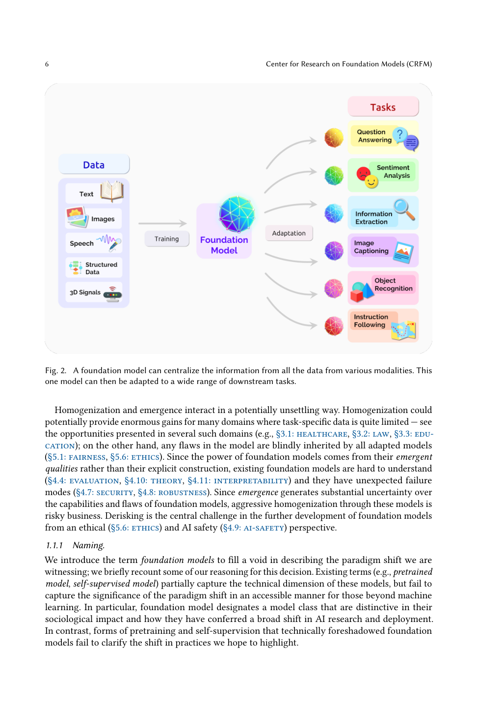
图 2： 基础模型可以把来自多种模态的全部数据信息集中到一起，再把这一个模型适配到大量下游任务。
同质化与涌现以一种可能令人不安的方式相互作用。在任务专用数据相当有限的许多领域，同质化可能带来巨大收益；多个这类领域所呈现的机遇，可参见第 3.1 节“医疗保健”、第 3.2 节“法律”和第 3.3 节“教育”。另一方面，模型中的任何缺陷也都会被所有适配模型不加辨别地继承，见第 5.1 节“公平”和第 5.6 节“伦理”。由于基础模型的力量来自涌现性质，而不是显式构造，人们很难理解现有基础模型，见第 4.4 节“评估”、第 4.10 节“理论”和第 4.11 节“可解释性”；它们还会出现意外的失效模式，见第 4.7 节“安全”和第 4.8 节“鲁棒性”。涌现使基础模型究竟拥有哪些能力和缺陷充满重大不确定性，因此，通过这些模型激进推动同质化是一项高风险活动。从伦理和人工智能安全角度看，降低风险是基础模型进一步发展所面临的核心挑战，分别见第 5.6 节“伦理”和第 4.9 节“人工智能安全”。
1.1.1 命名
我们引入“基础模型”一词，是为了填补描述我们正在见证的范式转变时存在的空白；这里简要回顾这一决定背后的部分理由。现有术语，例如预训练模型、自监督模型，只捕捉到这些模型的一部分技术维度，却无法以机器学习领域之外的人也容易理解的方式，表达这场范式转变的重要意义。特别是，“基础模型”指称的是一类在社会学影响上具有独特性、并推动人工智能研究和部署发生广泛转变的模型。相比之下，技术上预示了基础模型的预训练和自监督形式，并不能清楚揭示我们希望强调的实践转变。
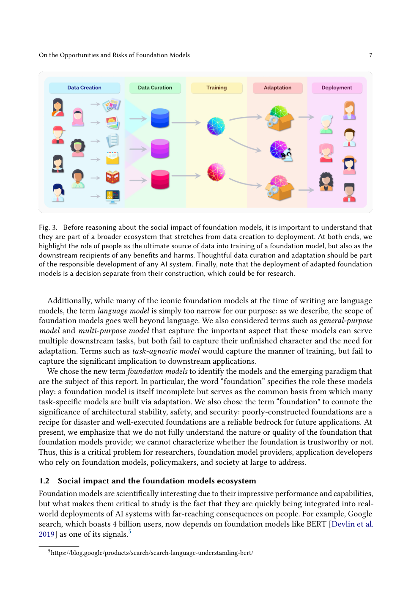
图 3： 在讨论基础模型的社会影响之前，必须认识到基础模型属于一个更广阔的生态系统，这一系统从数据创建一直延伸到部署。在生态系统的两端，我们都突出人的作用：人既是基础模型训练数据的最终来源，也是下游所有收益与危害的承受者。周密的数据策展与适配应当成为任何人工智能系统负责任开发的一部分。最后需要注意，部署经过适配的基础模型，是一个与构建模型相互独立的决定；模型构建本身也可能只服务于研究。
此外，虽然本报告写作时许多标志性的基础模型都是语言模型，但“语言模型”对我们的目的而言实在太过狭窄：正如后文所述，基础模型的范围远远超出语言。我们还考虑过“通用模型”和“多用途模型”等术语，它们捕捉到这些模型可以服务多个下游任务这一重要方面，却都无法表达模型尚未完成、仍需适配的特征。“任务无关模型”等术语可以表达训练方式，却无法体现它们对下游应用的重大影响。
我们选择“基础模型”这个新术语，用来指称本报告所讨论的模型和正在兴起的范式。具体而言，“基础”一词规定了这些模型所扮演的角色：基础模型本身并不完整，却充当共同基础，许多任务专用模型都通过适配在它之上构建。我们也选择“基础”一词来暗示架构稳定性、安全与保障的重要意义：构造拙劣的基础注定会酿成灾难，执行良好的基础则是未来应用可以信赖的根基。目前，我们强调自己还没有完全理解基础模型所提供基础的性质或质量；我们无法判断这个基础是否值得信任。因此，这是一项需要研究人员、基础模型提供者、依赖基础模型的应用开发者、政策制定者和整个社会共同处理的关键问题。
1.2 社会影响与基础模型生态系统
基础模型因其出色性能和能力而具有科学研究价值，但它们之所以必须得到认真研究，是因为这些模型正在迅速融入现实世界的人工智能系统部署，并将对人产生深远影响。例如，拥有 40 亿用户的 Google 搜索，如今已经把 BERT [Devlin 等，2019] 等基础模型作为其信号之一。4
因此，我们必须停下来问：这种社会影响究竟具有什么性质？本报告讨论这个问题的多个方面：可能加剧社会不平等，见第 5.1 节“公平”；能力提高所带来的经济影响，见第 5.5 节“经济”；计算需求增加带来的环境影响，见第 5.3 节“环境”；放大虚假信息的潜在担忧，见第 5.2 节“滥用”；强大生成能力所产生的法律后果，见第 5.4 节“合法性”；同质化导致的伦理问题；以及基础模型开发和部署所在的更广阔政治经济环境，见第 5.6 节“伦理”。考虑到基础模型多变的性质以及尚未绘制清楚的能力边界，我们如何才能负责任地预见并处理它们提出的伦理与社会问题？报告反复出现的一个主题是：与分析可以适配成数量不限、无法预见的下游系统的基础模型相比，分析部署给特定用户的具体系统所造成的社会影响要容易得多。
在尝试回答这些问题之前，我们需要先打下一些基础。首先，应当区分基础模型研究与基础模型部署。公众所知的大部分内容都属于基础模型研究，它们通过学术论文、演示和排行榜上的进展呈现。知识生产可以在塑造未来方面发挥重要作用，但直接社会影响来自这些模型的实际部署；这种部署受专有实践支配，并且常常使用私有数据。有时部署通过新产品进行，例如基于 OpenAI Codex 模型 [Chen 等，2021f] 的 GitHub Copilot；5 但更常见的方式是升级现有产品，例如 Google 搜索使用 BERT。研究模型通常没有经过广泛测试，可能存在未知的失效模式；不适合部署的研究模型应当附加警示标签。另一方面，那些已经部署并真实影响人们生活的基础模型，则应当接受严格得多的测试和审计。
为了进一步理解基础模型研究与部署，我们必须拉远视角，考察这些基础模型所处的完整生态系统，从数据创建一直到实际部署。重要的是，基础模型只是人工智能系统的一个组件，尽管它正变得越来越重要。简化来看，我们可以把基础模型生态系统理解为一系列阶段，它扩展了前文所述的训练和适配阶段。6 由于我们关注社会影响，理所当然，人处于这条流水线的两端。这种生态系统视角使我们看到，基础模型的不同问题，例如某个基础模型是否合乎伦理，实际上应当针对不同阶段来回答。
- 数据创建： 数据创建从根本上是以人为中心的过程：全部数据都由人创建，而且大多数数据至少隐含地与人有关。有时，人们以电子邮件、文章、照片等形式为其他人创建数据；有时，数据是对人的测量，例如基因组数据，或者是对人所生活环境的测量，例如卫星图像。必须注意，所有数据都有所有者，也都有其创建目的，而这个目的可能包括、也可能不包括训练基础模型。
- 数据策展： 随后，人们把数据策展为数据集。不存在唯一、自然的数据分布；即使最宽松的互联网抓取也需要一定选择和后处理过滤。在遵守法律与伦理约束的同时确保数据相关性和质量至关重要，却也非常困难。工业界已经认识到这一点，人工智能研究中却没有给予它足够重视，见第 4.6 节“数据”。
- 训练： 在这些经过策展的数据集上训练基础模型，是人工智能研究中广受关注的中心环节，尽管它只是许多阶段之一。7
- 适配： 在机器学习研究语境中，适配是指以基础模型为起点，创建一个能够执行某项任务的新模型，例如文档摘要。对于部署而言，适配则意味着创建一个系统：它可能需要许多不同模块、定制规则，例如对输出空间施加限制，或者需要分类器，例如毒性分类器；它还需要与其他互补信号结合，例如用相关文档验证问答模型生成的答案。举例来说，如果在下游采取了适当预防措施，那么一个能够生成有毒内容的问题模型或许仍然可以容忍。额外的应用专用逻辑对于减轻危害至关重要。
- 部署： 人工智能系统在部署给人们使用时，会产生直接社会影响。我们不希望部署那些在可疑数据上训练、可能造成伤害的基础模型；但允许它们用于研究以推进科学理解，或许仍有价值，不过即使如此也必须保持谨慎。更普遍地说，在大规模部署中进行渐进发布是一项标准实践，即逐步向更大比例的用户部署；这能够在一定程度上缓解潜在危害。
尽管本报告讨论基础模型，但必须注意，许多影响都来自流水线其他阶段做出的决定；每一个阶段都需要周密的监控和干预。大型组织可能拥有整条流水线，但每个阶段也可能由不同组织完成。例如，某家公司可以专门针对不同领域创建定制基础模型，再由应用开发者使用。
从生态系统出发思考，在模型层面采取行动。 虽然社会影响取决于整个生态系统，但由于许多研究者和实践者的工作范围仅限训练阶段，我们仍然需要能够分析一个基础模型的社会含义。这很困难，因为基础模型是尚未完成的中间对象，可以适配到许多下游应用；有时，完全不同的实体会出于无法预见的目的进行适配。我们需要两样东西：（1）覆盖一组有代表性潜在下游评估的替代指标，见第 4.4 节“评估”；（2）承诺记录这些指标 [Mitchell 等，2019]，方式类似金属、塑料等材料的数据表，因为这些材料同样可以适配到许多下游用途。
刻画基础模型潜在的下游社会影响是一项挑战，它要求我们深入理解技术生态系统和社会。若不认识模型将如何部署，就无法完整评估基础模型的危害，见第 5.1 节“公平”；若不考虑丰富的社会与历史背景，也不能只是定义一些自动指标。
1.3 基础模型的未来
基础模型已经展示出原始潜力，但我们仍处于早期阶段。尽管它们已经部署到现实世界，这些模型在很大程度上仍是不被充分理解的研究原型。甚至连围绕基础模型的职业规范，也就是 Robert Merton 所称的科学精神 [Merton，1979]，都还没有发展成熟。例如，对模型在何时才算“安全到可以发布”、或者共同体应如何应对方法论不端行为等基本问题，人们仍缺乏共识。因此，基础模型的未来充满不确定性，而一个重大问题是：谁来决定这个未来？
学科多样性。 基础模型背后的技术建立在机器学习、优化、自然语言处理、计算机视觉和其他领域数十年的研究之上。这些技术贡献既来自学术界，也来自工业研究实验室。然而，对如何构建基础模型本身的研究，几乎完全发生在工业界：包括 Google、Facebook、Microsoft、Huawei 等大型科技公司，以及 OpenAI、AI21 Labs 等初创公司；AI2 是一个值得注意的例外 [Peters 等，2018；Zellers 等，2019b]。
技术进步的狂飙速度以及中心化造成的固化，引发了强烈担忧；除了技术人员，人文学者和社会科学家也必须关注这些问题。我们不应依赖对伦理和社会后果进行事后审计，即等技术架构与部署决策都已做出后才开始审计。相反，从一开始，我们就需要把社会考量与伦理设计深入注入基础模型及其周边生态系统的技术开发。学术机构的独特之处，在于它们把最广泛的学科集中在同一个屋檐下，从而汇聚计算机科学家、社会科学家、经济学家、伦理学家和法律学者等。理解和解决同时包含技术、伦理、法律、社会和政治维度的问题时，学科多样性极其重要 [Hong 和 Page，2004；Solomon，2006；Steel 等，2018]。因此，我们认为学术界在基础模型开发中发挥着关键作用：它既应推动模型带来社会收益、减轻社会危害，也应判断从数据策展到部署的生态系统各阶段中，哪些情形应当严格禁止相关行动，见第 1.2 节“生态系统”。
激励。 基础模型的设计、开发和部署所在的政治经济环境，不可避免地为每个阶段的决策提供了一套激励结构。人和机构会对激励做出反应，这是经济学的基础课程。市场驱动的商业激励可以与社会收益很好地一致：在寻找多种潜在用途的同时，让基础模型更加准确、可靠、安全和高效，可以创造大量社会效用。然而，商业激励也可能导致市场失灵，并使某些领域投资不足；在这些领域，股东无法获得创新所创造的价值。正如制药业几乎没有动力把大量资源投入疟疾治疗研发，因为穷人无力购买药物一样，8 科技行业也几乎没有动力把大量资源投入旨在改善贫困和边缘群体处境的技术 [Reich 等，2021]。此外，商业激励还可能使企业忽略社会外部性 [Acemoglu，2021；Reich 等，2021]，例如技术造成的劳动力替代、民主制度所需信息生态系统的健康状况、计算资源的环境成本，以及出于盈利目的向非民主政权出售技术。最后，任何一家具体公司都几乎没有动力建立开放、去中心化、鼓励广泛参与的基础模型开发生态系统。
相比之下，大学长期而根深蒂固的研究使命，是生产和传播知识，并创造全球公共产品 [Kerr，2001；Rhoten 和 Calhoun，2011；Nussbaum，2010]。我们认为，学术界处在一个独特位置，可以塑造基础模型的发展，确保我们抓住那些可能产生巨大社会收益、却未必会被工业界优先考虑的方向。
可及性的丧失。 遗憾的是，由于可及性降低，学术界一直无法尽可能充分地参与其中。深度学习革命有一个经常被忽略的影响，就是它提高了可复现性并推动了开放科学：公开发布代码和数据集越来越成为常态；TensorFlow [Abadi 等，2016]、PyTorch [Paszke 等，2019] 等软件包让人们更容易协作，并在他人工作之上继续构建。机器学习可复现性挑战等倡议，9 主要会议采用的可复现性检查清单 [Pineau 等，2020]，以及 CodaLab Worksheets 等平台，10 共同推动了共同体的可复现性标准。这促成了技术创新和进步的快速增长。
基础模型开始逆转这一积极趋势。有些模型，例如 GPT-3，根本没有发布，只允许少数人通过 API 访问。甚至连某些数据集，例如 GPT-2 的数据集，也没有发布。虽然训练好的模型可能可用，例如 BERT，但由于计算成本高得多、工程要求也很复杂，绝大多数人工智能研究者都无法亲自训练基础模型。
在学术预算可承受的范围内训练较小模型，仍然可以开展一些有意义的研究。扩展定律 [Kaplan 等，2020] 所预测的规律性出人意料地稳定；当规模造成的差异是定量差异时，例如准确率提高，这确实使训练小模型成为一种可行策略。然而，由于这些基础模型具有涌现性质，上下文内学习等部分功能只在足够大的模型中得到展示；因此，要想提出正确的问题，规模本身就是必要条件。
研究已经发布的现有模型，也能够产生有价值的成果。事实上，这促成了自然语言处理领域一个大型子共同体，专门探测这些模型 [Rogers 等，2020；Manning 等，2020]。访问现有模型可以帮助驱动下游应用，或者识别缺陷，例如偏差；但如果要设计能够修复这些缺陷，例如缓解偏差的更好基础模型架构或训练目标，这种访问可能仍然不够。值得反思的是，当今自然语言处理研究有多大比例建立在 BERT 这一特定、而且多少带有任意性的基础模型上。考虑到我们需要把社会意识和伦理设计注入这些模型的构建，可能有必要构建与现有模型截然不同的基础模型，而这将要求在大规模条件下进行密集实验。
EleutherAI11 和 Hugging Face 的 BigScience 项目12 等共同体行动正尝试训练大型基础模型；不过，如果没有新的变化，工业界能够训练的私有模型与共同体拥有的开放模型之间的差距很可能继续存在，甚至扩大。如今，OpenAI、Anthropic、AI21 Labs 等初创公司的资源比学术界丰富得多，所以它们仍然负担得起训练最大的基础模型，例如 OpenAI 的 GPT-3。然而，大型科技公司在资源上处于完全不同的层次，特别是它们因市场地位而拥有的基础设施、用户和数据。基础模型从根本上具有中心化性质，这意味着开发门槛会继续提高；即使初创公司很灵活，也会发现自己难以竞争，搜索引擎的发展已经反映出这一趋势 [Radinsky，2015]。
缩小资源差距的一种方法，是由政府投资公共基础设施。哈勃空间望远镜和大型强子对撞机等大科学项目可以提供启发：大量投资促成了原本不可能实现的基础科学发现。我们可以设想一种类似的计算基础设施，基础模型的学术研究将从中大幅受益。在美国，刚刚起步的国家研究云计划13正朝这个方向迈出一步。
另一种互补方法是依靠志愿计算：数十亿计算设备，也就是节点，其中任何一台都可以连接中央服务器并贡献算力。Folding@home 项目已经成功使用这种方法模拟蛋白质动态 [Beberg 等，2009]。最近，Learning@home 项目正尝试利用志愿计算训练基础模型 [Ryabinin 和 Gusev，2020]。节点之间的高延迟连接，以及训练基础模型对高带宽的要求，使这仍然是一项开放的技术挑战。
小结。 推动基础模型能力与规模增长存在巨大经济激励，因此我们预计未来几年技术将稳步进步。但一种主要依靠涌现行为的技术，是否适合广泛部署给人们使用，目前并不清楚。可以确定的是，我们必须保持谨慎；现在正是建立职业规范的时候，这些规范将使基础模型能够得到负责任的研究与部署。学术界和工业界需要为此展开合作：最终由工业界做出基础模型如何部署的具体决定，但我们也应借助学术界的力量。凭借学科多样性，以及围绕知识生产和社会收益的非商业激励，学术界能够为基础模型的开发与部署提供同时具有技术和伦理基础的独特指导。
1.4 本报告概览
2021 年 3 月，我们在斯坦福大学建立了一个非正式共同体，成员包括对基础模型某一方面感兴趣的学生、教师和研究人员。14 从一开始，这个共同体就不仅包括人工智能研究者，还包括希望把基础模型应用到自己领域的人，例如医疗保健和法律领域的研究者，以及关注伦理、经济等社会问题的人。随着讨论推进，我们发现彼此理解中存在许多空白：技术如何工作、工业界如何开发基础模型、应当如何思考伦理问题，等等；现有文献只覆盖其中的零散片段。因此，我们希望更完整地呈现基础模型，识别其中的机遇与风险，并为未来负责任地开发基础模型建立一种建设性愿景。
本报告的写作本身是一次实验：一百多位来自不同背景的人聚在一起，共同撰写一份报告，覆盖基础模型的广泛方面。本报告很大一部分内容是对现有工作的综述，但通过多次讨论，我们把这些内容统一到一份报告中，以突出所有跨学科联系。
结构。 报告分为 26 节，每节讨论基础模型的一个方面。这些章节被归为四部分：能力，即第 2 章；应用，即第 3 章；技术，即第 4 章；社会，即第 5 章；不过，各节之间还存在许多联系。这些联系突出一种整合式方法：技术与能力的开发既要对真实社会问题保持敏感，也要受到应用启发，并在应用中获得现实基础。
我们虽然试图涵盖基础模型周围的大多数重要主题，但本报告不可避免地仍不完整，特别是因为该领域发展很快。例如，许多应用领域并未纳入，包括自然科学、音乐、金融、农业；但它们受到影响的可能性，并不低于我们选择讨论的应用。研究基础模型与神经科学、认知科学和心理学之间的关系，也会很有意义：这可以帮助解释智能，并促进计算社会科学理解社会的努力。
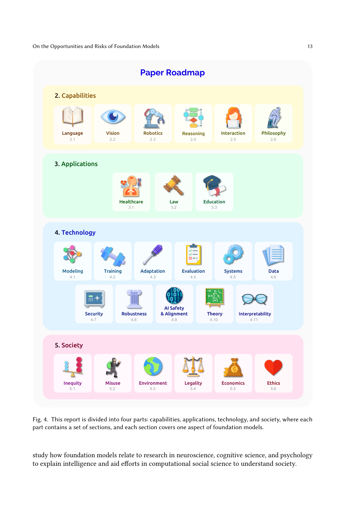
图 4： 本报告分为能力、应用、技术和社会四部分；每部分包含一组章节，每一节覆盖基础模型的一个方面。
作者贡献。 Percy Liang 发起并构思了整份报告的框架与结构。他与 Rishi Bommasani 共同领导这种去中心化写作，并为各节提供指导。Drew A. Hudson 创建了报告中的全部图示，并与各节作者讨论图示的结构和内容。报告 26 节中的每一节都由一部分作者撰写，其姓名列在相应章节开头。不过，许多讨论跨越多个章节，因此每节的实际贡献通常来自更广泛的人群。最后需要说明，本报告表达的观点并非全部作者都完全认同。
1.4.1 能力概览
基础模型会获得能够驱动应用的多种能力。我们选择讨论五种潜在能力：处理不同模态的能力，例如语言和视觉；影响物理世界的能力，即机器人；执行推理的能力；以及与人交互的能力。最后，我们以哲学讨论收尾，探讨其能力可能存在的边界。
第 2.1 节：语言。 自然语言处理这一领域为基础模型开辟了道路。虽然这些模型主导标准基准，但它们当前获得的能力，与把语言作为人类交流和思维复杂系统时所呈现的能力之间，仍存在明显差距。针对这一点，我们强调语言变化的完整范围，例如不同风格、方言和语言；考虑到部分变体的数据有限，这既是机会也是挑战。此外，儿童语言习得的样本效率高于基础模型训练；我们考察文本之外的信号和语义落地，如何帮助缩小这种差距。语言的这两个特征，都为未来基础模型研究提供了明确方向。
第 2.2 节：视觉。 计算机视觉率先在人工智能中采用深度学习 [Russakovsky 等，2015]，证明在大型带标注数据集上预训练的模型能够迁移到众多下游环境。现在，计算机视觉领域的基础模型正在兴起 [例如 Radford 等，2021]；它们不再只在经过策展的数据集上预训练，而是使用网络规模的原始数据。这些模型在图像分类、物体检测等领域标准任务上展现出有希望的结果；在图像之外的多模态和具身数据上训练，可能推动重大挑战取得进展，例如三维几何与物理理解、常识推理。我们还讨论建模方面的若干关键挑战，例如有效扩展到视频的能力；评估方面的挑战，例如衡量高阶能力；以及将决定视觉基础模型未来影响的应用，例如面向医疗保健的环境智能，和社会问题，例如监控。
第 2.3 节：机器人。 机器人研究的一项长期目标，是开发能够跨越物理性质各异的环境执行大量任务的“通才型”机器人。语言和视觉拥有大量可供训练模型的原始数据，也拥有可供应用模型的虚拟场景，因此在基础模型上走在前面；与它们不同，机器人由于锚定物理世界而面临根本挑战。为机器人开发新型基础模型时，首要挑战是获得形式正确、数量充足、有利于学习的数据；这种模型的性质也不同于语言和视觉模型。我们研究不针对特定环境的大量数据，例如普通人类视频，以及跨模态数据，例如语言和视觉，如何帮助缩小差距。这些新的机器人基础模型可以简化任务说明和学习，促成新的应用，例如为家务提供更好的机器人辅助；与此同时，它们也会进一步提高鲁棒性与安全的重要程度，例如需要开展形式化安全评估。
第 2.4 节：推理与搜索。 定理证明和程序合成等推理与搜索问题，长期以来一直是人工智能的挑战。组合搜索空间会使传统搜索方法难以处理。然而，众所周知，人类即使在最具数学性的领域也会凭直觉行动 [Lakoff 和 Núñez，2000]；AlphaGo 等现有工作已经表明，深度神经网络能够有效引导搜索空间。但人类还会在任务之间迁移知识，从而更高效地适配，并能进行更抽象的推理。基础模型提供了弥合这一差距的可能性：它们具有多用途性质以及强大的生成和多模态能力，为控制搜索固有的组合爆炸提供了新杠杆。
第 2.5 节：交互。 基础模型显然有潜力改变人工智能系统的开发者体验与用户体验。由于适配时具有较高样本效率，基础模型降低了人工智能应用原型设计与构建的难度门槛；其多模态和生成能力又提高了新型用户交互的上限。这形成一种我们希望未来继续发展的协同关系：开发者可以提供更符合用户需求与价值观的应用，同时引入更动态的交互形式和更多反馈机会。
第 2.6 节：理解哲学。 基础模型最终能够理解多少训练数据中的内容？我们聚焦自然语言，识别关于理解本质的不同立场，并探讨它们与这个核心问题之间的关系。我们的暂时结论是，对未来基础模型理解自然语言的能力持怀疑态度，可能为时过早，尤其当模型在多模态数据上训练时。
1.4.2 应用概览
目前，基础模型研究很大程度上局限于计算机科学和人工智能领域；基础模型及其所支持应用的影响，也大多集中在科技行业。展望未来，基础模型明显具有改变科技行业之外许多部门、并扩大人工智能覆盖范围的潜力，这意味着它们会更普遍地影响人们的生活。虽然可考虑的应用和领域非常多，但我们选择医疗保健、法律和教育三项应用，因为它们代表社会的基础支柱。基础模型要为这些应用领域做出重大贡献，就需要具备特定能力，见第 2 章“能力”，也需要技术创新，以处理每个领域独有的问题，见第 4 章“技术”。此外，由于这些领域对社会运行至关重要，见第 5 章“社会”，把基础模型用于这些领域就必须处理具有深刻社会技术性质的问题，例如数据，见第 4.6 节；隐私，见第 4.7 节；可解释性，见第 4.11 节；公平，见第 5.1 节；伦理，见第 5.6 节。
第 3.1 节：医疗保健与生物医学。 医疗保健任务，例如通过疾病治疗照料患者，以及生物医学研究，例如发现新疗法，都需要数量有限、成本高昂的专家知识。基础模型在这些领域提供了明确机会：一方面，有大量跨越多种模态的数据可用于训练基础模型，例如图像、文本和分子；另一方面，专家时间和知识成本很高，所以适配时提高样本效率具有很大价值。此外，基础模型可能改善医疗服务提供者和患者与人工智能系统交互的界面设计，见第 2.5 节“交互”；它们的生成能力也表明，药物发现等开放式研究问题存在新的可能。与此同时，它们也会带来明确风险，例如加剧医学数据集和临床试验中的历史偏差。要负责任地释放这种潜力，就必须深入处理数据来源、隐私等社会技术问题，以及模型可解释性和说明能力，并对基础模型在医疗保健和生物医学中的使用进行有效监管。
第 3.2 节：法律。 法律应用要求律师阅读和生成连贯的长篇叙事，理解不断变化的上下文，并解释含糊的法律标准。基础模型可能在这一领域带来收益：法律文书提供了丰富数据，而模型的生成能力非常适合处理法律工作所需的多种生成任务；但要可靠地综合推理多个信息来源并生成真实的长篇文档，基础模型仍需大幅改进。和医疗保健一样，由于法律领域的专家时间和知识成本高，基础模型适配的样本效率具有更高价值；这可能使专业知识重新分配到迫切的司法与政府服务问题上。负责任地开发法律基础模型，需要专门考虑隐私问题；这一领域还突出了现有基础模型的核心局限，要求我们在行为来源追踪以及生成内容事实性保证上取得根本进展。
第 3.3 节：教育。 教育是一个复杂而微妙的领域；有效教学需要对学生认知进行推理，也应体现学生的学习目标。基础模型的性质为教育人工智能带来尚未实现的希望：教育领域许多单独的数据流都太小，不足以训练基础模型；但利用领域外相关数据，例如互联网数据，以及联合使用多种模态的数据，例如教材、数学公式、图示和视频教程，有望得到广泛适用于教育任务的基础模型。如果基础模型显著提高与教育有关的能力，就显然有可能产生与其开放式生成特点相适应的新应用，例如生成题目，以及与其交互特点相适应的应用，例如向教师提供反馈。基础模型能够以较高样本效率完成适配，也意味着自适应个性化学习会变得更可行。如果出现这种情况，就需要重新考虑把技术用于教育时的一些典型问题，例如学生隐私；某些担忧也会变得更加关键，例如教育技术获取机会不平等、技术辅助作弊。
1.4.3 技术概览
下面讨论构建更好模型架构、训练与适配流程，以及扩展系统规模背后的技术。数据是一个关键却经常被忽略的主题：数据来自哪里，由什么构成？此外，我们希望基础模型能够抵抗分布偏移，并能防御攻击者。最后，我们还希望从数学和实验两个角度理解基础模型为何有效。
第 4.1 节：建模。 哪些结构性质会产生基础模型？建模章节研究基础模型背后的底层架构，并识别五项关键属性。首先讨论计算模型的表达能力，即灵活捕捉并吸收现实世界信息；以及可扩展性，即熟练处理大量高维数据。现有架构已经成功实现这些属性，例如支撑迄今大多数基础模型的 Transformer 网络 [Vaswani 等，2017]。接着讨论下一代模型可能必不可少的属性：多模态性，即接收、处理并可能生成来自不同来源和领域的内容；记忆容量，即有效存储和检索获得的知识；最后是组合性，即促进模型成功泛化到新场景与新环境。我们认为，要实现人们为基础模型设想的全部潜力，关键在于通过建模进步满足这些要求。
第 4.2 节：训练。 训练目标以数学方式规定模型应如何从训练数据中学习和获取能力。目前训练基础模型的标准做法，是使用模态专用目标，例如面向文本的掩码语言建模 [Devlin 等，2019]、面向图像的 SimCLR [Chen 等，2020c]；这些目标通常凭启发式经验选择。我们设想，未来基础模型训练目标会出现两项变化：根据系统证据与评估进行有原则的选择，见第 4.4 节“评估”；以及具备领域通用性，从而跨越数据来源和模态提供丰富、可扩展、统一的训练信号。我们还讨论重要的设计权衡，包括生成式训练与判别式训练、输入数据表示的选择，以及显式表示目标的未来训练目标所具有的潜力。
第 4.3 节：适配。 基础模型是中间资产；它们尚未完成，通常不应直接使用，而是需要针对具体下游任务进行适配。微调已经成为事实上的适配方法，近期工作则表明，轻量微调替代方案和基于提示的方法，可能取得更有利的准确率-效率权衡。展望未来，我们设想一种更广阔的适配观，它不再只把基础模型专门化以执行目标任务：适配还会缓解独立基础模型的缺陷，例如进行时间适配，以反映世界随时间发生的变化；或者引入约束，例如遵守 GDPR 中与被遗忘权有关的要求，见第 4.7 节“安全”。这种更广阔的适配观，也意味着需要新的评估方案，见第 4.4 节“评估”；新方案应系统评估适配方法，同时控制适配涉及的资源，例如运行时间、内存，以及访问要求。
第 4.4 节：评估。 评估为基础模型提供上下文，它使我们能够追踪进展、理解模型，并记录其能力和偏差。基础模型与具体任务相隔一步，因此使机器学习中的标准评估范式很难实现这些目标。为了设想适合基础模型的新评估范式，我们讨论：（1）直接评估基础模型，以测量其内在能力，并为基础模型训练方式提供信息；（2）在控制适配资源与访问条件的前提下评估任务专用模型；（3）设计更广泛的评估，在准确率之外提供更丰富的上下文，例如鲁棒性，见第 4.8 节；公平性，见第 5.1 节；效率，见第 4.5 节；环境影响，见第 5.3 节。改革评估实践，将使评估能够充分服务基础模型范式涉及的多元目标和利益相关者。
第 4.5 节：系统。 训练数据决定基础模型理论上可获得的信息，见第 4.6 节；模型架构和训练目标决定能够从中提取多少信息，分别见第 4.1 节和第 4.2 节；计算机系统则决定实践中可以实现什么。系统是扩大数据量和模型规模的关键瓶颈，而这两者似乎都能可靠地伴随能力提高。为了高效地训练下一代基础模型，无论从时间还是成本角度衡量，我们都需要协同设计算法、模型、软件和硬件。多种形式的协同设计已经开始出现，从经过细致调优的并行策略，到基于检索和混合专家模型等新架构。除训练外，我们还考虑在基础模型之上部署应用需要满足的条件，例如高效推理。
第 4.6 节：数据。 数据是基础模型的命脉；这些模型的训练数据在很大程度上决定它们可以获得哪些能力。数据的中心地位并非基础模型独有；近期有关“以数据为中心的人工智能”的呼吁 [Press，2021；Ré，2021]，说明管理、理解和记录机器学习模型训练所用数据具有普遍重要性。具体到基础模型，当前做法是按照没有说明或并不清晰的原则选择训练数据，而且普遍缺乏有关训练数据性质的透明度。我们认为，需要一种替代方法来重新设想基础模型周围的数据生态系统：借鉴数据可视化和数据管理工作，我们提出面向基础模型的数据枢纽。我们说明这一提案与基础模型许多相关的数据中心问题之间的关系，包括选择、策展、文档记录、访问、可视化与检查、质量评估，以及法律监管。
第 4.7 节：安全与隐私。 基础模型的安全与隐私目前在很大程度上仍是未开垦领域。从根本上说，基础模型是一个具有高杠杆效应的单点故障，因此会成为首要攻击目标：现有工作已经证明这些模型存在多种安全漏洞，例如通过对抗性触发词生成不理想输出，也存在隐私风险，例如记忆训练数据。此外，基础模型的通用性会进一步加剧这些担忧，提高功能蔓延或双重用途，也就是用于非预期目的的风险。在安全方面，我们把基础模型看作传统软件系统中的操作系统；本报告讨论走向安全基础模型的步骤，如果能够实现，它们将提供一个强大的抽象层，供人们在其上构建可靠的机器学习应用。在隐私方面，基础模型可以利用来自公共数据的知识迁移，以更高样本效率适配到敏感数据分布；换言之，使用基础模型构建的隐私保护应用可能只需承受较小的准确率下降。
第 4.8 节：对分布偏移的鲁棒性。 标准机器学习的一项主要局限是，它生成的模型无法抵抗分布偏移，即训练分布与下游任务测试分布不匹配。现有工作表明，对一个在广泛无标签数据上训练的基础模型进行适配，可以提高适配模型面对多种分布偏移时的鲁棒性。这为提高基础模型训练和适配的鲁棒性打开了一组有希望的新方向。不过，我们不认为基础模型是鲁棒性问题的万能药；跨时间外推和虚假相关等挑战不太可能因此得到彻底解决。
第 4.9 节：人工智能安全与对齐。 在考虑基础模型潜在的现实应用时，确保模型可靠、鲁棒、可解释变得越来越重要，分别见第 4.5、4.8 和 4.11 节。除了关键而迫切的问题，我们还考虑基础模型与更大规模风险、危险和危害之间的关系；随着模型能力继续进步，这些问题可能变得更加重要。例如，我们考虑对齐基础模型的重要性，以免它们带着错误设定的目标或价值观进行部署。我们还讨论预测基础模型涌现行为的重要性，例如欺骗或战略规划能力；这些行为可能使人们很难把模型适配到具体任务，也可能要求可解释性或评估采用新方法，分别见第 4.11 和 4.4 节。
第 4.10 节：理论。 学习理论为应用机器学习中遇到的多种情境提供广泛基础；除了实验发现，理论还能提供理解、原则和保证。目前，基础模型研究主要以实验为主：标准监督学习理论虽然相对成熟，却不足以完整解释基础模型。特别是，基础模型范式中的训练阶段与适配阶段存在差异，这精确揭示了现有理论的不足，因为这两个阶段可能对应完全不同的任务和数据分布。尽管如此，我们期望理论进步能够解决这种差异；即使是在简单而有限的环境中，也会提供有用见解。
第 4.11 节：可解释性。 可解释性为基础模型带来清晰度。支撑基础模型的深度神经网络并不透明，而基础模型预计又将无处不在，这使理解这些模型及其能力的需求变得更迫切。现有可解释性方法一般用于解释任务专用模型的行为；基础模型的性质，也就是它们有益于大量不同任务、并会获得意外涌现性质，为可解释性研究带来新挑战。为了组织基础模型可解释性的讨论，我们提出“一个模型-多个模型”范式，目标是判断一个模型，即基础模型，与它的多个模型，即经过适配的衍生模型，在多大程度上共享相同的决策构件。除了说明决策涉及的组件，我们还讨论基础模型语境下的说明能力，例如模型生成的事后解释是否有效，以及驱动模型行为的机制；这些机制可能帮助澄清，对基础模型的理解能在多大程度上延伸到经过适配的衍生模型。鉴于我们认为可解释性在基础模型研究中具有关键作用，本节最后评估可解释性与不可解释性所产生的社会影响。
1.4.4 社会概览
我们认为，基础模型快速发展、适配并部署到多种应用，将对社会健康产生广泛影响。这些模型既令人兴奋又令人不安的原因，在于它们与任务无关。当我们讨论部署给用户的具体系统时，理解和分析社会影响会更容易一些，虽然仍然绝不简单；但在开发基础模型时，我们如何考虑所有可能系统和用途的社会影响？
第 5.1 节：不平等与公平。 事实表明，在许多情境中，机器学习会助长、并可能放大社会不平等。基础模型可能延续这种趋势，即进一步不公正地对待那些历史上受到歧视的人。然而，要理解不平等与基础模型之间的关系，必须正视基础模型的抽象性：基础模型是中间资产，会被适配成影响用户的应用。因此，我们区分内在偏差，也就是基础模型中预示危害的性质，与外在危害，也就是在使用基础模型构建的具体应用中产生的危害。我们对造成这些偏差和危害的多种来源进行分类，例如训练数据、基础模型开发者缺乏多样性、更广泛的社会技术环境；同时强调来源追踪对于理解伦理和法律责任的重要性，以及其技术难度。我们不认为不公平是基础模型范式不可避免的结果：为了处理基础模型造成的不公平结果，我们同时考虑主动干预，例如反事实数据增强等技术方法，和事后补救，例如反馈传播机制以及道德、法律责任的归属机制。
第 5.2 节：滥用。 我们把基础模型滥用定义为：按照基础模型在技术上的预定方式使用它，例如生成语言或视频，但目的在于造成社会危害，例如生成虚假信息，或者制作深度伪造内容进行骚扰。我们认为，基础模型进步会产生质量更高的机器生成内容，而且更容易为滥用目的创建和个性化这些内容。例如，虚假信息行动者可以使用它们快速生成文章集合，分别针对国籍、政党、宗教等不同人口群体。这些新能力可能限制人类现有的有害内容检测方法，例如跨来源追踪相似文本；但基础模型自身也可能成为有希望的自动滥用检测器。
第 5.3 节：环境。 基础模型是计算成本高昂的训练过程所产生的结果，而当前发展轨迹偏向计算量更大的模型；训练所需能源与向大气释放更多碳以及环境退化相伴。目前，相关讨论主要关注一次性训练的巨大成本，以及通过重复使用分摊这些成本的可能性。我们试图通过识别影响基础模型环境影响计算的假设，使讨论更加清晰。此外，我们设想基础模型周围的生态系统需要采用多方面方法：（1）计算效率更高的模型、硬件和电网，都可能减轻模型的碳负担；（2）环境成本应成为基础模型评估中的明确因素，见第 4.4 节“评估”，使基础模型能够与更环保的基线进行更全面比较；（3）围绕环境影响开展成本收益分析，需要整个共同体进行更充分的文档记录和测量。
第 5.4 节：合法性。 基础模型当前建立在不稳固的法律基础之上；法律如何作用于这些模型的开发和使用，在很大程度上仍不清楚。除了面向人工智能技术整体的法律与监管框架，还需要专门针对基础模型的框架，用来影响、约束甚至促进研究、开发和部署实践。我们聚焦美国法律环境；在这个环境中，对算法工具的现有法律考虑仍普遍具有不确定性。我们重点讨论模型预测的责任与模型行为所获保护等相关问题。对于两类问题，我们都说明：考虑到基础模型只是中间对象，而不是面向用户的任务专用模型，法律标准需要怎样继续发展，才能加以处理。
第 5.5 节：经济。 基础模型具有新能力，并可能应用于大量行业和职业，因此很可能产生重大经济影响。我们考察基础模型的开发和使用对美国及全球经济未来的影响，重点关注生产率、工资不平等和所有权集中。
第 5.6 节：规模伦理。 除了第 5.1 节“公平”所讨论的加剧不平等风险，广泛采用基础模型还会提出其他伦理、政治和社会担忧。我们讨论与基础模型应用规模相关的伦理问题，例如同质化、权力集中，以及适合处理这些问题的规范和发布策略。
2. 能力
基础模型会获得多种能力，其中有些能力会在学习过程中出人意料地涌现，并由此驱动下游应用，见第 3 章“应用”。具体而言，我们讨论语言能力，见第 2.1 节；视觉能力，见第 2.2 节；影响物理世界的能力，即机器人，见第 2.3 节；执行推理和搜索的能力，见第 2.4 节；以及与人交互的能力，见第 2.5 节。此外，我们还讨论自监督这一当前大多数基础模型采用的技术学习方式，与理解能力之间的哲学关系，见第 2.6 节。
2.1 语言
作者： Isabel Papadimitriou、Christopher D. Manning
2.1.1 人类语言的本质
语言是人类大多数交流和互动的基础。然而，语言并不只是人类实现共同目标的手段：语言是人类思维的核心，是社会关系和情感关系形成的核心，也是我们在社会和个人层面确认自我的方式，更是人类记录知识、发展社会智能的方式。每个人类社会都会出现口语或手语；世界各地的语言在表达和组织所传递信息的方式上极其多样，同时又在构成语言丰富性的方面呈现出惊人的一致性 [Comrie，1989]。语言是极其复杂却高效的系统，儿童能够在短时间内稳定地习得语言；语言还会随着语言共同体的需要和条件变化而演化。由于语言在人类活动中处于中心地位，语言理解与生成是人工智能研究的关键组成部分。自然语言处理（NLP）是人工智能中关注语言的子领域；它与自动语音识别（ASR）和文本转语音（TTS）等相关领域共同努力，目标是让计算机以接近人类的方式理解和生成自然语言。
截至 2021 年，自然语言处理是受基础模型影响最深刻的领域。第一代基础模型展示了令人印象深刻的语言能力，也展现出对大量语言情境的惊人适应性。自 2018 年早期基础模型 ELMo [Peters 等，2018] 和 BERT [Devlin 等，2019] 出现以来，自然语言处理领域很大程度上围绕使用和理解基础模型展开。这个领域开始把基础模型作为主要工具，把更通用的语言学习作为核心方法和目标。本节回顾基础模型在自然语言处理中的近期成功，详细说明基础模型如何改变语言机器学习模型的训练流程和思维方式，并讨论当基础模型应用到更广泛的语言以及更真实、更复杂的语言情境时所面临的理论与实践挑战。
2.1.2 基础模型对自然语言处理的影响
基础模型对自然语言处理领域产生了巨大影响，如今已经成为大多数自然语言处理系统和研究的中心。首先，许多基础模型都是熟练的语言生成器：例如 Clark 等（2021）证明，非专业人士很难区分 GPT-3 写出的短篇英文文本与人类写出的文本。不过，基础模型在自然语言处理领域最有影响力的特征并不是原始生成能力，而是令人意外的通用性与适应性：单个基础模型可以通过不同方式适配，从而完成许多语言任务。
自然语言处理历来关注定义和构建具有挑战性的语言任务系统，背后的愿景是：在这些任务上表现良好的模型，最终可以为下游应用带来有能力的语言系统。自然语言处理任务包括：针对整句或整篇文档的分类任务，例如情感分类，即预测电影评论是正面还是负面；序列标注任务，即对句子或文档中的每个词或短语分类，例如预测每个词是动词还是名词，或者判断哪些词语片段指代人物或组织；跨度关系分类，例如关系抽取或句法分析，即判断人物与地点之间是否存在“当前居住地”关系，或者动词与名词之间是否存在“主谓”关系；以及生成任务，即生成强烈依赖输入的新文本，例如翻译或摘要文本、识别或生成语音，或者在对话中作答 [Jurafsky 和 Martin，2009]。过去，自然语言处理任务拥有各自独立的研究共同体，并开发任务专用架构；这些架构往往是由多个模型组成的流水线，每个模型执行一个语言子任务，例如词元切分、句法分析或指代消解。
相比之下，如今执行各项任务的主流方法，是使用一个基础模型，再用数量相对较少、针对任务标注的数据对它进行轻微适配，例如情感分类、命名实体标注、翻译和摘要，最终创建适配模型。这种方法极其成功：对于前面描述的绝大多数任务，针对某项任务稍作适配的基础模型，都大幅超过了过去专门构建来执行该项任务的模型或模型流水线。举一个例子：在基础模型出现前的 2018 年，回答开放式科学问题的最佳系统在纽约州 Regents 八年级科学考试上只能达到 73.1%；一年后的 2019 年，一个适配后的基础模型就取得了 91.6% [Clark 等，2019]。
基础模型大多接受语言生成训练，它们的出现改变了语言生成在自然语言处理中的角色。直到大约 2018 年，生成通用语言都被视为极难、几乎无法处理的问题；除非通过其他语言子任务，否则几乎无法接近这一目标 [Paris 等，2013]。自然语言处理研究主要集中在分析和理解文本，而不是直接生成文本。现在，只需采用简单的语言生成目标，例如“预测这个句子中的下一个词”，就可以训练出高度连贯的基础模型。这些生成模型如今成为语言机器学习的主要载体，其中也包括过去被认为是生成前提的分析与理解任务。基础模型展现出的成功生成能力，还促成了摘要和对话生成等语言生成任务研究的繁荣。
基础模型范式的兴起，在书面语言之外也开始对口语产生类似作用。现代自动语音识别模型，例如 wav2vec 2.0，先只在大规模语音音频数据上训练，再在带有对应转写文本的音频上适配 ASR 任务 [Baevski 等，2020]。
由于基础模型范式带来的变化，自然语言处理的研究与实践重点已经从为不同任务制作定制架构，转向探索如何最好地利用基础模型。适配方法研究迅速发展，详见第 4.3 节“适配”；基础模型取得的意外成功，也使研究兴趣转向分析和理解基础模型，详见第 4.11 节“可解释性”。
2.1.3 语言变异与多语言性
虽然基础模型能够从预训练中获得令人惊讶的语言知识并表现出多用途性，但这种适应性存在边界：目前还不清楚基础模型处理语言变异的能力究竟有多好。语言具有极大变化。世界上存在数千种不同语言，这一点自不必说；即使在同一种语言内部，或者同一个说话者身上，语言也会变化。举几个例子：非正式对话与书面语言的表现不同；人们与朋友交谈时使用的语法结构，与和权威人士交谈时使用的结构非常不同；同一种语言内部的说话者共同体也会使用不同方言。社会与政治因素嵌入人们看待和评价语言变异的方式，也嵌入不同变体在自然语言处理研究中得到多少代表的方式。关于自然语言处理未能处理非裔美国英语，可参见 Blodgett 和 O’Connor（2017）；基础模型不平等问题的深入讨论见第 5.1 节“公平”。基础模型具有学习语言信息和灵活适配语言知识的巨大容量，因此有望扩展自然语言处理，使其涵盖更多语言多样性。一个仍然开放的研究问题是：我们能否构建出鲁棒而公平的基础模型，让模型同时充分表示语言的主要变异和细微变异，并平等而敏锐地表现每种语言变体的独特之处 [相关研究包括 Ponti 等，2019；Bender，2011；Joshi 等，2020]。
继基础模型在英语上的成功之后，多语言基础模型被发布，以把这种成功扩展到非英语语言。世界上 6000 多种语言中，大多数可用文本数据不足以训练大规模基础模型。举一个例子：西非语言富拉语拥有超过 6500 万使用者，但几乎没有可供自然语言处理使用的资源 [Nguer 等，2020]。多语言基础模型通过同时在多种语言上联合训练来解决这个问题。迄今的多语言基础模型，包括 mBERT、mT5 和 XLM-R，都在约 100 种语言上训练 [Devlin 等，2019；Goyal 等，2021；Xue 等，2020]。多语言联合训练依赖一个合理假设：语言之间共享的结构和模式，可以让高资源语言向低资源语言进行共享与迁移，从而使原本无法单独训练模型的语言也拥有基础模型。对多语言基础模型的实验和分析表明，不同语言之间确实存在惊人程度的迁移，并且多语言基础模型能够并行编码不同语言 [Wu 和 Dredze，2019；Choenni 和 Shutova，2020；Pires 等，2019；Libovický 等，2019；Chi 等，2020；Papadimitriou 等，2021；Cao 等，2019]。
然而，这些模型在多语言方面是否真正鲁棒，仍是开放问题。对于那些与英语截然不同、或几乎没有语言资源的语言，使用这些数据训练的模型能够表示其哪些方面，仍不清楚 [Wu 和 Dredze，2020]；它们看似多语言的表现，究竟有多少依赖于同化，也仍不清楚 [Lauscher 等，2020；Virtanen 等，2019；Artetxe 等，2020]。对于训练数据中与最高资源语言相似的语言，多语言模型往往表现更好；研究还表明，多语言模型中的语言会竞争有限的模型参数，因此单个模型究竟能容纳多少变异并不清楚 [Wang 等，2020d]。一个突出问题来自用于训练多语言基础模型的数据：在许多多语言语料库中，英语数据不仅比低资源语言多几个数量级，而且往往更干净、更广泛，也包含展示更深、更复杂语言现象的样例 [Caswell 等，2021]。关于构建参与式而鲁棒的多语言数据集，可参见 Nekoto 等（2020）。不过，答案并不只是创建更平衡的语料库：语言变异存在如此多的轴，以至于不可能在所有方面都构建平衡且具有代表性的语料库。基础模型的未来、多用途性和公平性，都取决于在数据不平衡的情况下鲁棒处理语言变异 [例如 Oren 等，2019]。
当前多语言基础模型的原始形式，以及把朴素无监督多语言训练作为方法，可能无法充分建模语言和语言变体的细微之处。不过，它们仍然可以用于某些多语言应用，例如把多语言模型适配到原始训练集未包含的低资源语言 [Wang 等，2020b]。此外，非公开的 GShard 神经机器翻译模型结果表明，相对于单语基线，最低资源语言的收益最大，而且收益会随模型规模增加而提高 [Lepikhin 等，2021]。研究共同体应当批判性地考察基础模型如何处理语言变异，理解基础模型在为自然语言处理带来公平与代表性方面的边界，并且不能满足于推广那些抹平语言变异、主要服从训练数据中语言多数的基础模型。
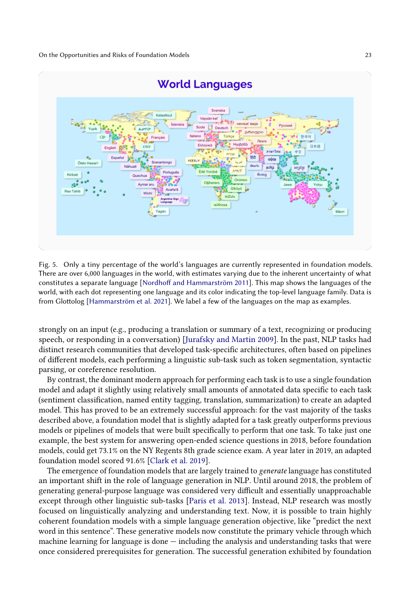
图 5： 目前基础模型只代表了世界语言中的极小一部分。世界上有 6000 多种语言；由于“独立语言”究竟应如何界定本身存在不确定性，相关估计会有所不同 [Nordhoff 和 Hammarström，2011]。图中展示世界语言，每个点代表一种语言，颜色表示其顶层语系；数据来自 Glottolog [Hammarström 等，2021]。图中标注了少数语言作为例子。
2.1.4 从人类语言习得获得启发
基础模型在创建更像人类的自然语言处理系统方面带来了巨大进步，但它们获得的语言系统以及学习过程，仍然存在一些与人类语言显著不同的地方。理解机器语言学习与人类语言学习之间这种差距的含义，是建立对基础模型语言边界和可能性有充分认识的研究共同体所必需的。
人类语言习得非常高效：GPT-3 等基础模型接触的语言数据，大约是大多数人一生听到或读到的数据量的三到四个数量级，当然也远远多于儿童在基本具备语言能力之前接触到的数据量。基础模型与人类语言习得之间一个显著差异，是人类语言落地于现实世界 [Saxton，2017]。例如，婴儿和照料者在语言发展期间会指向物体 [Colonnesi 等，2010]；婴儿会先学习指称常见物体的词语的具身意义，再学习语言系统的许多其他方面 [Bergelson 和 Swingley，2012]。另一方面，自然语言处理中使用的大多数基础模型从原始、未落地文本的分布信息中学习；Zhang 等（2021）还表明，与人类学习者不同，RoBERTa 模型会在获得可用意义之前，就表现出抽象句法特征。婴儿确实也存在强大的、未落地的统计学习 [Saffran 等，1996]，因此这无疑是语言习得的重要因素。然而，推进基础模型的具身语言学习，仍然是接近人类习得效率的重要方向 [Dupoux，2018；Tan 和 Bansal，2020；Zellers 等，2021a，等等]。基础模型的多模态潜力还见第 2.2 节“视觉”和第 2.3 节“机器人”；基础模型在没有落地的情况下是否能够理解语言，则见第 2.6 节“哲学”。另一个重要方向，是研究基础模型中的归纳偏置，以及它们与人类心智归纳偏置之间的关系，包括语言学习专有的归纳偏置和人类认知普遍具有的归纳偏置 [Linzen 和 Baroni，2021]。虽然人类大脑在架构上可能更适合高效语言习得，但基础模型并不是白板学习者 [Baroni，2021]；理解并对齐这些语言归纳偏置，是基础模型研究的重要未来方向。
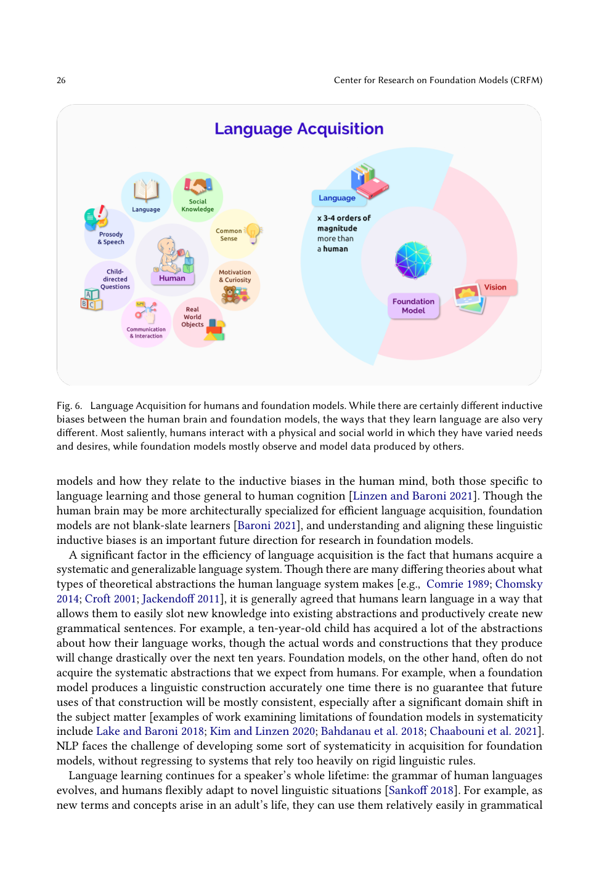
图 6： 人类大脑与基础模型之间当然存在不同的归纳偏置，但二者学习语言的方式也非常不同。最显著的区别是：人类与一个物理和社会世界互动，并且拥有各种需要与欲望；基础模型则主要观察和建模他人产生的数据。
语言习得高效的一个重要因素，是人类获得了系统化、可泛化的语言系统。关于人类语言系统会形成何种理论抽象，存在许多不同理论 [例如 Comrie，1989；Chomsky，2014；Croft，2001；Jackendoff，2011]；但人们通常同意，人类学习语言的方式能够让新知识轻易嵌入已有抽象，并能有生产力地创造新的语法句子。例如，十岁儿童已经习得许多关于其语言运作方式的抽象知识，尽管在接下来的十年中，他们实际使用的词语和结构会发生巨大变化。另一方面，基础模型常常无法获得我们期待的人类那样的系统抽象。例如，某个基础模型一次准确地产生了一个语言结构，并不能保证它之后使用这个结构时大体保持一致；如果主题发生显著领域偏移，尤其如此。考察基础模型系统性局限的研究包括 Lake 和 Baroni（2018）、Kim 和 Linzen（2020）、Bahdanau 等（2018）以及 Chaabouni 等（2021）。自然语言处理面临的挑战，是让基础模型的习得过程具有某种系统性，同时又不退回过度依赖僵硬语言规则的系统。
语言学习会持续贯穿说话者的一生：人类语言的语法会演化，人类也会灵活适应新的语言情境 [Sankoff，2018]。例如，成年人一生中会遇到新的术语和概念，并且通常能够相对容易地把它们放进语法句子；人类还经常调整语法模式，以适应不同社会群体 [Rickford 等，1994]。相比之下，基础模型的语言系统大多由训练数据确定，而且相对静态 [Lazaridou 等，2021；Khandelwal 等，2020]。适配方法可以让基础模型为不同任务做好准备，见第 4.3 节“适配”；但如果没有大量训练，如何改变基础模型更基本的语言基础，仍然不清楚。构建能够自然模仿人类语言调适和语言演化的可适配模型，是基础模型未来的重要研究领域。
基础模型已经彻底改变了自然语言处理的研究和实践，也为共同体带来了许多新的研究方向：把生成理解为语言的基本方面；研究如何最好地使用和理解基础模型；理解基础模型可能如何加剧自然语言处理中的不平等；考察基础模型能否令人满意地涵盖语言变异与多样性；以及寻找利用人类语言学习动态的方法。过去研究共同体重点关注的大多数复杂自然语言处理任务，如今都可以借助少数公开发布的基础模型，以接近人类的水平得到处理。然而，这种表现与在复杂下游环境中有用且安全地部署基础模型的要求之间，仍存在重大差距。
2.2 视觉
作者： Shyamal Buch、Drew A. Hudson、Frieda Rong、Alex Tamkin、Xikun Zhang、Bohan Wu、Ehsan Adeli、Stefano Ermon、Ranjay Krishna、Juan Carlos Niebles、Jiajun Wu、Li Fei-Fei
视觉是生物体理解环境的主要方式之一。视觉能力使生物体能够几乎持续、远距离地收集密集信号；这是在漫长进化时间尺度上、由多种生命形态发展出的关键能力 [Parker，2003；Zhang 和 Shu，2021]。即使简单生物也能毫不费力地执行这一技能，但把同样能力转移给机器却异常困难；这促使计算机视觉和机器人研究者 Hans Moravec 在 1988 年提出一个悖论：在人工智能中，（被认为）困难的问题反而容易，容易的问题反而困难；而所有问题中“最容易”的问题之一，就是人类每天用来在毫秒内持续解释复杂场景的视觉敏锐度 [Moravec，1988；Thorpe 等，1996；Fei-Fei 等，2007]。
与这一艰巨挑战相对应的是计算机视觉能够开启的大量变革性应用：自动驾驶汽车可以让通勤者摆脱交通拥堵，见第 2.3 节“机器人”；拯救生命的人工智能工具可以帮助过度劳累的专家检测罕见医疗事件，见第 3.1 节“医疗保健”；下一代工具可以支持多媒体创作和编辑，见第 2.5 节“交互”，等等。思考人类感知发挥关键作用的应用与环境，可以让我们感受到计算机视觉能够提供帮助、并带来改变的领域。
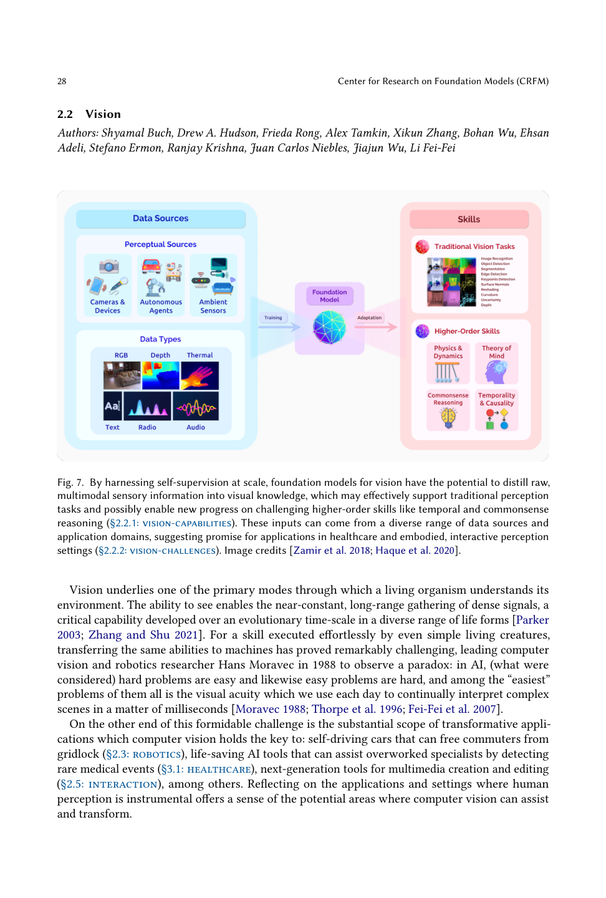
图 7： 通过利用大规模自监督学习，视觉基础模型有潜力把原始多模态感知信息提炼为视觉知识，从而有效支持传统感知任务，并可能推动时间推理、常识推理等具有挑战性的高阶技能，见第 2.2.1 节“视觉能力”。这些输入可以来自多种数据源和应用领域，因此在医疗保健以及具身、交互式感知场景中具有应用希望，见第 2.2.2 节“视觉挑战”。图片来源：[Zamir 等，2018；Haque 等，2020]。
计算机视觉领域及其所定义的挑战，在许多方面都受到人类感知能力启发。若干经典理论 [例如 Biederman，1972；McClelland 和 Rumelhart，1981；Marr，1982] 认为，人类可能通过把部分内容放进更大的整体语境来感知现实场景，并由此指引计算机视觉技术逐步以不断提高的抽象层次建模物理世界 [Lowe，1992；Girshick 等，2014]。Gibson（1979）提出，人类视觉从根本上是具身的，交互式生态环境可能在视觉发展中发挥关键作用。这些思想仍然推动着计算机视觉系统持续发展，使其朝着具有上下文、交互性和具身性的世界感知方向迭代。
在计算机视觉语境中，基础模型把来自不同来源和传感器的原始感知信息转换成视觉知识，再将这些知识适配到大量下游环境，如图 7 所示。在很大程度上，这项努力是过去十年计算机视觉领域关键思想自然演化的结果。ImageNet [Deng 等，2009] 的引入和监督预训练的出现，促成了计算机视觉中的深度学习范式转变。这个转变标志着一个新时代：我们不再依赖早期经典方法和任务专用特征工程 [Lowe，2004；Bay 等，2006；Rosten 和 Drummond，2006]，而是训练模型一次性处理大量数据，再把模型适配到多种任务，例如图像识别、物体检测和图像分割 [Krizhevsky 等，2012；Szegedy 等，2015；He 等，2016a；Simonyan 和 Zisserman，2015]。这一思想仍然是基础模型的核心。
过去范式的局限，构成了通往基础模型的桥梁。传统监督技术依赖昂贵、精心收集的标签和标注，这限制了模型的鲁棒性、泛化性和适用范围；相比之下，近期自监督学习进展 [Chen 等，2020c；He 等，2020] 提供了另一条基础模型发展路径，可以利用海量原始数据，获得对视觉世界的上下文理解。相对于计算机视觉领域更广阔的目标，目前视觉基础模型的能力仍处于早期阶段，见第 2.2.1 节“视觉能力”：我们已经观察到传统计算机视觉任务的改进，尤其是泛化能力方面 [Radford 等，2021；Ramesh 等，2021]，并预计近期进展会沿着这条趋势继续。不过从长期看，基础模型减少对显式标注依赖的潜力，可能推动一些当前完全监督范式很难处理的基本认知技能取得进展，例如常识推理 [Zellers 等，2019a；Martin-Martin 等，2021]。接下来，我们讨论基础模型对下游应用的潜在影响，以及未来必须解决的核心挑战和前沿问题，见第 2.2.2 节“视觉挑战”。
2.2.1 关键能力与方法
从高层次看，计算机视觉是人工智能的核心子领域，研究如何赋予机器解释和理解视觉世界的能力。它涵盖大量任务、子领域和下游应用；过去几十年中，共同体不断取得进展 [Zamir 等，2018]。以下是一些示例任务：15
- 语义理解任务： 旨在发现视觉场景中实体的属性与关系，包括图像分类、物体检测、语义分割、动作识别和场景图生成等 [例如 Krizhevsky 等，2012；He 等，2016a；Krishna 等，2017；Russakovsky 等，2015；Krizhevsky 等，2009；Kay 等，2017；Lin 等，2014]。
- 几何、运动与三维任务： 寻求表示静止或运动物体的几何、姿态和结构，包括深度估计、运动恢复结构、表面法线检测、曲率线估计和关键点估计等 [例如 Laina 等，2016；Agarwal 等，2011；Wang 等，2015a；Zamir 等，2018；Ullman，1979]。
- 多模态整合任务： 把语义和几何理解与自然语言等其他模态结合起来，包括视觉问答、图像描述和指令跟随 [例如 Antol 等，2015；Chen 等，2015b；Anderson 等，2018；Goyal 等，2017b；Hudson 和 Manning，2019b；Johnson 等，2017；Luo 等，2020；Akbari 等，2021；Huang 等，2021c；Tsimpoukelli 等，2021]。图 7 突出展示了其中一部分传统核心任务。
在 2010 年代初 ImageNet [Deng 等，2009] 出现的推动下，处理这些任务的主流范式通常围绕一个熟悉的核心思想展开：首先，在大量经过精心标注的数据上，以完全监督的训练任务预训练模型，例如图像分类 [Russakovsky 等，2015]；然后，在任务专用数据集和领域上对模型进行下游适配 [Lin 等，2014；Chen 等，2015b；Antol 等，2015]，通过微调达到最先进性能 [Krizhevsky 等，2012；Simonyan 和 Zisserman，2015；He 等，2016a；Xu 和 Saenko，2016]。如今我们对基础模型的定义，仍然保留这种“预训练之后适配”的概念，见第 1 节“引言”。完全监督范式的局限，促使我们转向基础模型：依赖外部监督标注，限制了过去方法以可扩展、鲁棒且可泛化的方式捕获多样视觉输入的能力上限。视觉合成和无监督学习领域的近期发展，提供了一条有说服力的替代路径。以生成对抗网络为例，它包含一个生成器和一个判别器，两个网络相互监督，只根据图像集合就能学习生成高保真、逼真且多样的视觉内容 [例如 Goodfellow 等，2014；Hudson 和 Zitnick，2021]。其他神经模型通过变分自编码、对比学习或其他自监督技术，在没有显式标注监督的情况下推断物体和场景的视觉属性 [例如 Kingma 和 Welling，2014；Chen 等，2020c；He 等，2020]。例如，He 等（2021）在掩码图像编码表示学习的早期工作 [例如 Pathak 等，2016；Vincent 等，2008] 基础上，把灵活架构的近期进展，例如视觉 Transformer [Dosovitskiy 等，2021；Zhai 等，2021]，与规模扩大结合起来。
基础模型的发展使这类自监督技术能够在更大的视觉数据规模上训练 [Changpinyo 等，2021]，数据的范围和潜在多样性都随之扩大。因此，我们已经看到传统视觉任务在标准准确率指标和少样本泛化方面取得早期进展。对于图像分类和物体检测，自监督技术报告了与过去完全监督方法相当的性能 [He 等，2019；Chen 等，2020c；Radford 等，2021；Hénaff 等，2021]，并且训练时不需要显式标注，在适配时具有更高样本效率。视觉合成的显著例子包括 DALL-E [Ramesh 等，2021] 和 CLIP 引导的生成 [Radford 等，2021；Galatolo 等，2021]；研究者利用多模态语言和视觉输入，渲染出有吸引力的视觉场景。短期内，我们预计这些基础模型的能力会沿着这些方向继续提升：训练目标得到改进 [Chen 等，2020a；Hénaff 等，2021；Selvaraju 等，2021]，架构被设计为纳入更多模态 [Jaegle 等，2021b]。
值得注意的是，相对于自然语言处理中的基础模型，见第 2.1 节“语言”，当前计算机视觉基础模型仍处于萌芽阶段：有希望的早期工作主要集中在 RGB 图像输入和一部分核心传统视觉任务上。不过，围绕具身、交互式感知场景的更广泛挑战仍在持续推进，这些挑战对机器人基础模型至关重要，见第 2.3 节“机器人”。图 7 突出展示了一组高阶目标，包括物理场景理解、视觉常识和时间事件推理，以及面向社会可供性的感知。这些目标过去都曾由完全监督系统追求，但由于很难大规模标注相关任务，一直难以实现。例如，标准视觉问答系统难以回答需要常识理解的问题，因为这类问题经常需要像素之外的外部知识 [Zellers 等，2019a]。在交互式智能体中，鲁棒感知人类注视和社会可供性，仍然是具身视觉系统持续面对的挑战 [Martin-Martin 等，2021]。基础模型减少对显式标注的依赖，可能让这些目标取得过去难以实现的进一步进展。语言基础模型的相关进展，也提示了在多模态视觉输入上实现类似能力的可能路径：语言基础模型已经能够捕获语言事件的一定程度常识 [Brown 等，2020]。目前，基础模型如何实现这些能力的确切路线图仍是开放问题；但高效而灵活的新架构，见第 4.1 节；大规模训练，见第 4.5 节；自监督技术，见第 4.2 节；以及少样本适配方案，见第 4.3 节，可能共同打开通往这些长期难以达到能力的大门。
2.2.2 核心研究挑战
我们对研究挑战的讨论，受到基础模型可能进一步推动视觉模型整合并产生影响的下游应用领域启发。这里突出几个领域：（1）医疗保健与家庭环境中的环境智能：以这些场景已有的环境智能方法为基础 [Haque 等，2017；Lyytinen 和 Yoo，2002；Hong 和 Landay，2004]，基础模型可能更好地检测细粒度人类活动和医疗事件，并改善临床医生、患者及普通消费者得到的辅助交互，另见第 3.1 节“医疗保健”；（2）移动和消费应用：具备更强多模态落地能力的基础模型，可能让移动环境中的服务互动更有能力；视觉和语言输入带来的生成能力基础性提升，也能改善计算摄影与内容编辑应用 [Delbracio 等，2021；Ramesh 等，2021；Park 等，2019]，另见第 2.5 节“交互”；（3）具身、交互式智能体：感知模型已经在机器人场景中作为输入 [Sermanet 等，2018] 和奖励函数 [Chen 等，2021c；Shao 等，2020] 证明有效；在大规模第一视角视觉数据集合上训练的基础模型，这些数据可以来自真实或模拟环境、来自人或机器人 [Damen 等，2018；Chen 等，2021e]，可能通过捕获更广泛的视觉场景、物体和动作分布，进一步推动这项进展，另见第 2.3 节“机器人”。
基础模型能在多大程度上进一步影响这些应用场景，取决于第 2.2.1 节“视觉能力”所列能力能否实现。为了弥合当前能力、短期预期能力和长期预期能力之间的巨大差距，我们必须处理视觉基础模型当前的局限，包括训练和评估方面的局限。下面列出相应的一部分关键挑战。
语义系统性与感知鲁棒性。 人类拥有惊人的能力，能够把视觉理解泛化到未见过的组合，并推理新物体和场景的物理、几何性质 [Lake 等，2015]。虽然当前基础模型已经显示出有希望的图像合成能力，也在把细粒度语言输入泛化到新情境上取得早期结果，但它们仍难以泛化到由简单形状和颜色组成的组合 [Ramesh 等，2021；Radford 等，2021；Rong，2021]。泛化能力不只涉及语义；视觉场景和物体在物理动态与几何属性上也存在自然规律。基础模型已经显示出早期的场景和物体几何理解迹象 [Ramesh 等，2021]。此外，感知模型在物理场景与几何理解方面的早期努力，可以为基础模型持续发展提供指导 [Yi 等，2019；Bakhtin 等，2019；Li 等，2020b]。基础模型持续纳入多种模态，例如音频，也可能有助于实现这些目标 [Zhang 等，2017；Gao 等，2020b；Jaegle 等，2021a]。然而，要让模型把最初观察到的能力鲁棒地泛化到广泛自然场景和物体，并达到人类水平，具体需要哪些技术，仍是基础模型面对的开放研究挑战。
计算效率与动态建模。 人类处理连续不断的物体、场景和事件视觉流时，效率高得令人惊讶；这些视觉流对于理解事件动态是必要的 [Zacks 等，2001；Tversky 和 Zacks，2013]。语言基础模型已经初步展示出对较长时间事件连贯性的建模能力，见第 2.1 节“语言”；如果视觉输入也能捕获长距离时间相关性和因果连贯性，将有利于机器人等下游场景 [Dai 等，2019；Alyamkin 等，2019；Goel 等，2020b；Feng 等，2019]。然而，相比语言中的词元级输入，低层计算机视觉输入的维度极高：单个 1080p 帧就包含超过 200 万像素。在这种背景下，对长视频序列中更丰富的事件动态进行建模，尤其是还要加入语音、光流等其他模态并提高分辨率，似乎是一项艰巨任务。显然，逐个处理每个像素的朴素方法很可能不可行。当前视觉模型 [例如 Radford 等，2021；Sun 等，2019a；Tan 和 Bansal，2019；Kim 等，2021a] 经常处理对图像块、甚至整组帧进行总结的嵌入，但这种做法可能损失细粒度细节 [Ramesh 等，2021]。除了原始输入空间的考量，视觉基础模型可能还需要重新思考基础架构原语的设计，见第 4.1 节“建模”：替代三维卷积的方法可能更好地处理其立方复杂度 [Fan 等，2020；Sitzmann 等，2019]；基于粒子的表示可能更适合建模物理动态 [Bear 等，2021]。此外，把这些视觉模型部署到下游应用场景，也需要系统设计进步，见第 4.5 节“系统”。综合来看，如何高效而有效地建模更大规模、动态变化的视觉输入，仍是一个多方面的研究方向，必须在未来解决。
训练、环境与评估。 要实现基础模型潜力，训练和评估所需的支撑要素同样关键。当前视觉基础模型主要关注图 7 所示的一小部分模态，例如 RGB 图像和文本数据集，因为这些输入可能最容易获得 [Changpinyo 等，2021；Radford 等，2021]。这促使人们开发和使用新的大规模训练数据集，包含广泛模态谱系上多样化的输入。虽然额外标注未必严格必要，但输入质量会影响模型学习效率；利用其他类型的基础模型，例如语言基础模型，帮助提高数据质量，是有希望的未来路径 [Zellers 等，2021b]。我们还希望考虑静态数据集之外的环境：经典研究认为，人类的感知理解与具身性、交互式生态环境相关 [Gibson，1979]。作为通往长期具身和交互能力的踏脚石，见第 2.3 节“机器人”，继续开发能够体现物理、视觉和生态真实感的模拟环境，并纳入多种模态和视角，可能在提供可扩展、高保真视觉输入方面发挥重要作用 [Kolve 等，2017a；Savva 等，2019b；Gan 等，2020；Shen 等，2021a；Srivastava 等，2021]。最后还有指标问题：如何评估生成式基础模型输出相对于语义的忠实性？Fréchet Inception Distance 等标准指标存在已知缺陷 [Bińkowski 等，2018]；这与自然语言处理中的类似问题相呼应，例如 BLEU 等指标与人类的因果判断并不相关。把人类判断纳入评估可能是一条路径，但成本很高，而且难以同样扩展 [Zhou 等，2019；Khashabi 等，2021]。围绕视觉基础模型训练、数据和评估的突出开放问题十分微妙，也将成为未来的核心研究领域，分别见第 4.2、4.6 和 4.4 节。
总结性评论。 本节从计算机视觉早期范式中识别基础模型的根源，到说明视觉基础模型当前和预期能力，再到提出未来研究方向，全面考察了计算机视觉语境下的基础模型。最后简要讨论基础模型在计算机视觉中的更广泛社会影响及其持续发展，另见第 5 章“社会”。摄像头在社会中的无处不在，意味着计算机视觉技术进步可能带来破坏性影响；与此相应，我们也肩负着认真考虑风险的责任。计算机视觉模型中存在记录充分的学习偏差历史：代表性不足群体的准确率更低、错误更相关，从而导致模型被不恰当地过早部署到某些现实场景 [例如 Buolamwini 和 Gebru，2018；见第 5.1 节“公平”]。当前基础模型仍然存在许多相同底层问题 [Agarwal 等，2021]。随着额外传感器模态的数据，例如可穿戴或环境传感器数据，被纳入基础模型，隐私和监控担忧会变得至关重要，见第 5.6 节“伦理”。此外，随着视觉基础模型的语义能力与生成能力继续增长，生成的深度伪造图像和虚假信息会带来更大风险 [Dolhansky 等，2020；Ramesh 等，2021；见第 5.2 节“滥用”]。计算机视觉与基础模型面前存在吸引人的开放挑战和重要机遇，但同时处理这些风险以及相关风险仍然不可或缺。
2.3 机器人
作者： Siddharth Karamcheti、Annie Chen、Suvir Mirchandani、Suraj Nair、Krishnan Srinivasan、Kyle Hsu、Jeannette Bohg、Dorsa Sadigh、Chelsea Finn
机器人研究长期以来的一项挑战，是让机器人能够应对现实环境中会遇到的无数条件。本节讨论基础模型背后的思想如何有望带来“通才型”机器人，例如让机器人在一所新房子、一个新厨房中烹饪一顿新的餐食。要实现这一目标，现有基础模型并不够用；我们需要训练新型模型，数据源必须多样，既包括落地的机器人交互数据，也包括人类执行任务的视频等。我们关注这样一个问题：机器人如何控制自己的物理具身，以成功执行不同任务。这是一个高维、闭环的决策问题：机器人采取的动作会直接影响下一刻它能感知到的内容，而后者又会影响机器人的下一个动作。这种闭环特征在语言和计算机视觉中并不是传统研究重点，因为这两个领域以大规模离线数据集为主，基础模型已经取得成功。我们重点研究，如何把基础模型已经展现出的优势，即大规模自监督学习，应用到这种新的闭环数据环境中。
新型机器人基础模型的希望在于，它能够放大机器人改善日常生活关键方面的潜力，范围包括制造业 [Nof，1999；Sanneman 等，2020]、建筑业 [Khoshnevis，2004；Bock，2007]、自动驾驶 [Thorpe 等，1988；Badue 等，2020]、家务辅助 [Thrun 和 Mitchell，1995；Brooks，2002；Dillmann，2004；Goodrich 和 Schultz，2007；Gupta 等，2018；Shridhar 等，2020] 和个人辅助 [Dragan 和 Srinivasa，2013；Javdani 等，2018]，以及其他领域。本节主要聚焦执行家务任务的移动操作机器人，但我们预计其核心思想可以广泛适用于上述其他机器人用例。
开发机器人新型基础模型的关键路径，在于拥抱任务说明和任务学习方面的机会，同时解决数据获取、安全性和鲁棒性方面的挑战。设想如下机器人学习范式：从一段描述任务的文字开始，这段描述表达用户希望机器人做什么，例如“做早餐”；然后学习对应策略，生成所需的机器人动作。策略可以用不同方式参数化，但一种常见选择，是使用一个函数，把任务表示和环境观测，例如固定相机或第一视角相机拍摄的场景图像，或 LIDAR 等替代传感器的输入，映射为机器人动作 [Andrychowicz 等，2017；Nair 等，2018]。机器人以任务为条件执行动作时，后续状态会反馈给策略，策略继续生成动作，直到任务完成。
然而，在实践中实现这种范式很困难。首先，描述目标的正确接口是什么？对于某个情境中的某个用户，“做早餐”意味着包含煎蛋、吐司和一杯橙汁的完整早餐；对另一个用户而言，“做早餐”可能意味着配有桑巴酱的印度米糕和一杯过滤咖啡。一般来说，像这样的高层、依赖上下文的目标并不独立存在，可能引入大量歧义。怎样规定一个目标及其子目标，才能充分消解这些歧义，并让机器人在给定任务上取得进展？此外，怎样设计通用任务表示，帮助机器人泛化到相似目标，例如把“取一杯橙汁”泛化成“取一杯牛奶”？再进一步，怎样构建方法，帮助机器人学习新任务和新环境中的策略，例如一个摆放全新餐具、器具、家电和布局的厨房？
近期把基础模型应用到语言和视觉的突破，见第 2.1 和第 2.2 节，表明大规模自监督预训练可能有助于提高泛化能力。利用多样数据流学习有意义的表示先验，例如 BERT 和 GPT-3 所学习的先验，有望训练出功能强大的机器人基础模型，以完成任务说明。多样化的机器人交互数据可以用于学习以动作作为条件的动力学模型，或者学习能够索引通用、具有语义意义技能的策略，因此也为任务学习带来希望。然而，尽管存在这些机会，关键障碍仍是收集正确的数据。与语言和视觉数据不同，机器人数据既不丰富，也不能代表足够多样的具身、任务和环境；作为一个领域，我们仍未就哪些数据对实现通才型机器人最有用达成共识，例如离线演示、第三人称人类记录、第一视角视频、自动经验等。除获取足够规模和多样性的数据外，还要确保安全和鲁棒性：面对新环境时，机器人如何行动而不造成损坏？
因此，构建新型机器人基础模型形成一组机会与挑战的二分：任务说明和学习提供机会，数据收集与安全部署构成挑战。本节同时探索两方面，描述机器人基础模型如何帮助我们开发通才型机器人；这种开发既要有意义地处理构建此类系统的挑战，也要拥抱多模态潜力，把感知、执行和语言结合起来，并使用人机交互完成任务说明与学习。
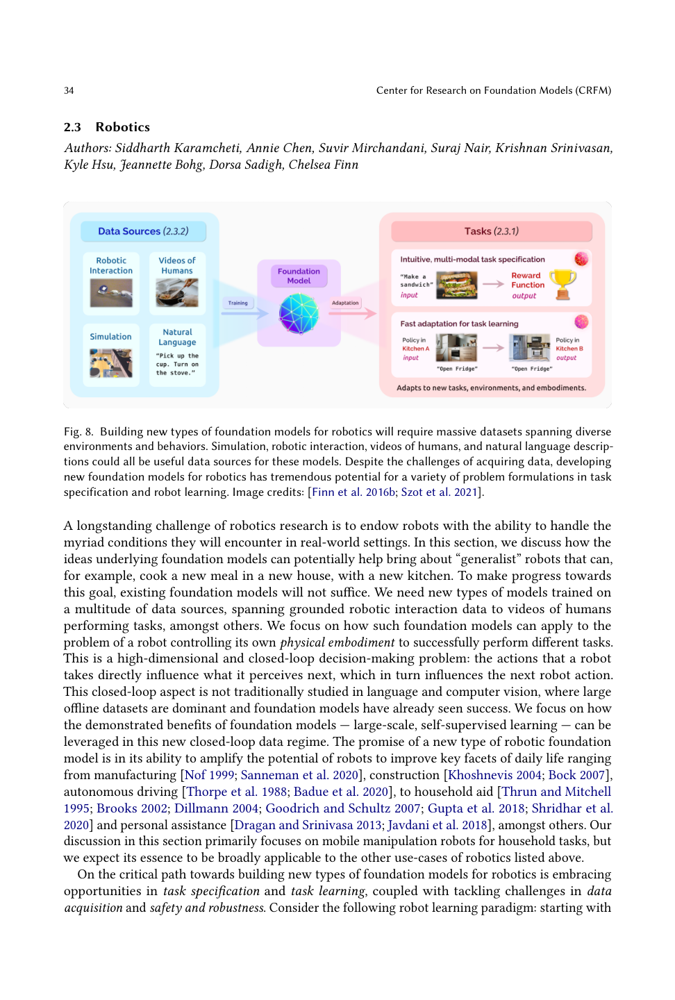
图 8： 构建新型机器人基础模型，需要覆盖多种环境和行为的大规模数据集。模拟环境、机器人交互、人类视频和自然语言描述，都可能成为这些模型有用的数据源。尽管获取数据存在挑战，开发机器人新型基础模型仍然有巨大潜力，可以服务任务说明和机器人学习中的多种问题表述。图片来源：[Finn 等，2016b；Szot 等，2021]。
2.3.1 机遇
机器人基础模型可以采取多种形式：机器人问题很难服从一种适用于所有情况的模型，因为不同问题具有不同输入输出特征；这与自然语言处理等领域不同，后者的许多问题都可以统一成“输入文本、输出文本”的形式。我们聚焦跨任务、跨环境和跨机器人具身的可泛化任务说明与任务学习机遇。
用于任务说明的基础模型。 在机器人能够以通用方式学习解决任务之前，它必须理解目标任务是什么。例如，要在新厨房中发挥作用，机器人需要知道我们希望它烹饪什么，也需要知道我们希望它避免什么行为。因此，开发通才型机器人的必要第一步，是构建一种新型基础模型，可靠地完成任务说明，即直观而有效地传达任务目标、偏好和约束。我们把任务说明形式化为一个过程：把人类提供的任务描述转换成一个定量指标，用来测量机器人完成任务的程度和进展，例如奖励函数。这个信号对于优化机器人行为、诊断失败以及提示人类反馈至关重要。由于最自然的任务描述会随用户、环境或任务不同而变化，任务说明机器人基础模型应当接受多种描述模态，例如目标状态 [Fu 等，2018；Singh 等，2019]、自然语言 [MacGlashan 等，2015；Karamcheti 等，2017；Misra 等，2017b；Co-Reyes 等，2019；Shao 等，2020]、人类视频 [Shao 等，2020；Chen 等，2021c；Liu 等，2018]、成对或排序比较 [Biyik 和 Sadigh，2018]、交互式纠正 [Co-Reyes 等，2019；Karamcheti 等，2020]，以及物理反馈 [Ross 等，2011；Bajcsy 等，2017]。
通用任务说明模型的一项重要要求，是能够迁移到新环境和新任务。可靠地把任务描述转换为可泛化的机器人学习奖励信号，仍然是开放问题 [Taylor 等，2016]；而机器人基础模型或许特别适合处理这一问题。应用于任务说明时，模型应通过广泛、大规模数据学习，提供更鲁棒的奖励信号，见第 4.8 节“鲁棒性”；它甚至可以利用前面列出的多个描述模态。一种新的任务说明基础模型可能这样实例化：通过多样语言和视觉数据集训练一个映射，把任意的“语言、当前观测”对映射为奖励信号 [Bahdanau 等，2019；Fu 等，2019；Chen 等，2021c]。如果模型从这些广泛而多样的数据集中学习到信息丰富的先验，就可能泛化到未见过的语言指令、未见过环境中的观测。总体而言，新型基础模型跨模态连接并广泛泛化的潜力，使它们很适合用于通用任务说明。
用于任务学习的基础模型。 除了实现更通用的任务说明，机器人基础模型还可以让学习解决新任务变得更高效、更可靠。在这一语境下，新型基础模型可能表现为动作、传感器观测、奖励以及其他感兴趣属性的联合分布。以联合分布的不同维度为条件，就能得到不同推理问题，每种问题对应不同输入输出特征：
- 动力学建模： $p(\text{未来观测}\mid\text{动作，过去观测})$ [Finn 和 Levine，2017；Hafner 等，2019；Wu 等，2021d]。
- 策略学习： $p(\text{动作}\mid\text{观测，目标})$ [Kaelbling，1993；Schaul 等，2015；Ding 等，2019]。
- 逆强化学习： $p(\text{奖励函数}\mid\text{观测，动作})$ [Ng 和 Russell，2000；Ziebart 等，2008；Finn 等，2016a]。
一种合理的机器人基础模型训练目标，是以自回归方式预测上述联合分布的不同元素 [Janner 等，2021；Chen 等，2021b；见第 4.1 节“建模”]。然而，这并不是唯一选择。特别是，机器人数据集包含大量无标签数据：许多不同传感器模态的同步观测，例如 RGB 和深度摄像机、触觉传感器、麦克风等，以及机器人为生成这些观测而执行的一系列动作。除上述目标外，机器人基础模型还可以训练为：根据一种传感器模态预测另一种传感器模态的观测，或者预测两条感知流是否来自同一时间片段。这类自监督目标可以利用多模态对应关系，为高维数据产生低维表示；还可以与上述目标结合，在这些表示之上得到模型、策略和奖励。如果数据展现出多样而有意义的行为，这些目标就可能帮助利用无标签数据训练强大的机器人基础模型；第 2.3.2 节“机器人挑战”将进一步讨论收集这类数据的难点。
在语言和视觉领域，基础模型已经证明能够从大规模、多样数据集中学习广泛适用的先验，并随后适配到下游任务，见第 2.1 和第 2.2 节。机器人基础模型也有潜力通过不同于现有语言、视觉模型的数据、自监督目标和模态，让感知与控制少样本适配到新的环境、任务和具身。回到厨房例子：要在新厨房中烹饪，机器人需要适应具体环境，包括空间布局、可用设备等。人类离线视频、机器人交互、文本和模拟数据所学到的先验，可能编码厨房的一般性质，例如炉灶通常靠墙放置，而且必须打开才能产生热量。这样的常识、物理先验和视觉先验，可以让机器人以更高样本效率适应新环境。同样，开发任务学习基础模型，可能让训练数据集使用大量烹饪视频，从而把“煎鸡蛋”等常见技能的策略，通过少量演示适配到特定用户偏好。最后，凭借学习前述跨模态表示的潜力，机器人基础模型可能帮助适配到新的机器人具身。这一方面对于让模型广泛有用至关重要。
2.3.2 挑战与风险
尽管愿景令人兴奋，仍有多项挑战需要克服。为了实现前文讨论的泛化，我们必须收集规模和多样性足够的机器人数据集。此外，还需要机制确保学习到的行为能够安全部署到现实世界。
数据需求与挑战。 学习一个机器人策略，传统上需要大型数据集：机器人通过传感器感知环境状态，再采取动作完成任务，并在现实世界中与环境交互。另一方面，计算机视觉和自然语言处理中的许多学习任务依赖大规模、多样化的离线数据集，而这些数据集可以轻易从网络抓取。受到语言和视觉基础模型进展的启发，我们期待利用大型离线数据源训练新的机器人基础模型。
实现这一目标的一条路径，是收集用于离线学习的大型数据集，例如通过遥操作 [Mandlekar 等，2019]、动觉示教 [Sharma 等，2018] 或自主方法 [Pinto 和 Gupta，2016；Gupta 等，2018；Levine 等，2018；Dasari 等，2019；Kalashnikov 等，2021；Chen 等，2021d]。这些方法已经显示出一些有希望的泛化迹象。把机器人数据收集扩展到视觉和语言数据集的规模 [Deng 等，2009；Krishna 等，2017；Raffel 等，2019；Gao 等，2020a] 仍是开放挑战，但机器人数据集规模和质量的持续增长表明，它们可以在学习机器人基础模型中发挥重要作用。此外，机器人能够主动、自动地塑造环境，因此应当能够大规模生成有针对性的无标签数据。
考虑到控制学习具有挑战性的闭环性质，收集规模与视觉、语言数据集相当的数据，可能还不足以解决机器人问题。另一个令人兴奋的选择，是额外利用外部的非机器人数据源，例如人类视频，或已有的视觉和自然语言数据集。这类数据多样且数量巨大，网络上随处可得 [Deng 等，2009；Lee 等，2012；Heilbron 等，2015；Goyal 等，2017a；Damen 等，2018；Gao 等，2020a；Grauman 等，2021]；如果利用得当，就有可能实现广泛泛化。如何优雅地弥合机器人领域与网络视频或语言领域之间的差距，仍是开放挑战；不过，领域适配近期进展 [Smith 等，2019；Schmeckpeper 等，2020]，以及在机器人中使用预训练视频和语言模型的工作 [Lynch 和 Sermanet，2020；Shao 等，2020；Chen 等，2021c]，都为缩小这一差距提供了有希望的方向。
最后，模拟环境提供了取之不尽的丰富交互数据源，机器人可以从中学习，输入包括渲染视觉、点云、模拟触觉和模拟音频。不过，模拟与现实之间的差距是一项重大挑战，差距既存在于底层物理，也存在于环境和任务的语义分布。近期工作表明，通过广泛的领域随机化，机器人可以把在模拟中学习的技能迁移到真实环境并取得一定成功；这些技能包括飞行 [Sadeghi 和 Levine，2017]、接触丰富的操控 [Mahler 等，2017；OpenAI 等，2019] 和运动 [Peng 等，2020；Hwangbo 等，2019]。此外，把现实世界扫描到模拟环境中，也可以模拟现实世界的语义与视觉分布 [Chang 等，2017；Kolve 等，2017b；Savva 等，2019a；Szot 等，2021；Shen 等，2021a]。这些都是弥合模拟到现实差距的有希望步骤，但有效且通用地把操控和运动技能从模拟迁移到现实，仍然是开放挑战。模拟数据、真实机器人数据、人类视频和自然语言数据，都可能是学习机器人基础模型不可或缺的要素。
安全与鲁棒性。 在现实世界训练或部署新型基础模型时，确保安全和鲁棒性，会进一步增加机器人基础模型开发的复杂性。由于具身智能体能够直接操控和交互物理世界，我们可以预期，机器人基础模型的安全风险会不同于语言基础模型。基于学习的系统面临的一项核心安全挑战，是“先有鸡还是先有蛋”的问题：必须在收集数据之前规定系统安全约束，但收集数据后又可能出现需要额外约束、事先没有预料到的不安全行为。例如，一个智能体要适应训练分布之外的新厨房，就需要足够的安全保证，才能安全收集数据；这些保证可能不利于任务性能，或者导致智能体以新的方式失败。一种解决方式，是限制环境复杂性，或者提高机器人复杂性，使不可恢复状态或不安全动作在结构上被避免。还可以要求机器人自动重置环境，以便在大规模数据收集过程中不间断地学习或适配 [Eysenbach 等，2017；Gupta 等，2021b]。这可能意味着确保厨房中的任何物品都不会破碎，或者在智能体尝试收集数据时，确保并替换它可能打碎的物品。
为了处理机器人基础模型无法泛化到新刺激、或对新刺激产生意外行为所带来的风险，未来可能的方向包括：开发智能体的因果分析 [Déletang 等，2021]；新的形式化安全评估工具；以及真实感更强的模拟环境 [Corso 等，2020；Dreossi 等，2017；Julian 和 Kochenderfer，2019]。最后，为机器人基础模型推导形式化安全保证，例如使用 Hamilton-Jacobi 可达性分析安全集合 [Chow 等，2018；Fisac 等，2019；Herbert 等，2021]，或者开发人类操作员能够理解的学习安全边界，见第 4.11 节“可解释性”，都有助于降低这些模型带来的风险 [Berkenkamp 等，2017]。随着这些新型基础模型的开发和研究推进，解决这些挑战将至关重要。
结论。 机器人基础模型的前景很多，覆盖从任务说明到任务学习的机器人流水线多个层次；但挑战同样重大。在现实世界中以足够规模收集覆盖多种环境和具身的数据，是一道高门槛；确保系统安全、鲁棒也同样迫切。尽管如此，我们仍然乐观：在开发模型之前就处理这些挑战，让我们有机会找到合适的方法，从正确来源、以正确规模收集合适数据，进而构建具备所需能力、安全而可靠的机器人基础模型。
本节始终贯穿一个主题：多模态。机器人基础模型无论采取何种形式，都已经并将继续从人工智能其他子领域的工作中受益，例如语言和视觉，见第 2.1 和第 2.2 节。然而，当我们把其他领域的扩展纳入模型时，前方也会出现触及基础模型其他方面的跨学科挑战：训练并部署实时机器人基础模型所需的系统创新，见第 4.5 节；鲁棒人机交互接口的创新，见第 2.5 节；以及更好理解此类模型安全性和鲁棒性后需要吸收的经验，见第 4.9 和第 4.8 节。要实现这些目标，建立围绕基础模型、尤其是机器人基础模型的可靠生态系统和周密研究实践，是关键。
2.4 推理与搜索
作者： Yuhuai Wu、Frieda Rong、Hongyu Ren、Sang Michael Xie、Xuechen Li、Andy Shih、Drew A. Hudson、Omar Khattab
推理和搜索一直是人工智能历史中的核心主题。从策略游戏到抽象数学发现，经典智力测试充当启发目标，推动人们不断突破“机器智能”的边界，因为机器必须设计越来越聪明的方法去搜索获胜方案。早期人工智能中，符号方法是推理的主导路径 [Russell 和 Norvig，2020]；但处理这类方法所需的工程投入，以及必须形式化启发式方法才能应对难以处理的搜索空间，很快被证明十分繁琐。近来，使用神经网络的数据驱动方法展现出令人鼓舞的结果：例如，神经网络击败了围棋领域最优秀的人类棋手 [Silver 等，2016]；围棋的动作空间远大于经典挑战国际象棋。神经网络通过利用统计结构和学习有用启发式方法，取得了这一成就。
本节概述现有推理任务，其中一些任务要求扩展到越来越大的搜索空间，并广泛理解世界，见第 2.4.1 节“推理任务”。随后在第 2.4.2 节“推理角色”中，我们论证基础模型应当在通用推理中发挥核心作用，具体作为三种能力的载体：捕捉无界搜索空间中的统计规律，即生成性；实现跨任务、跨情境的积极迁移，即普适性；以及利用多模态环境中的知识落地，即落地能力。
2.4.1 当前有哪些任务？
许多推理问题都具有无界搜索空间，系统必须处理大量开放式替代方案。考虑如下问题：对于等腰三角形 $\triangle ABC$，已知 $AB=AC$，要证明角 $B$ 与角 $C$ 相等，见图 9。系统在每个推理步骤中都可以执行任意数量的动作。例如，它可以添加一个新的辅助点，并进行任意构造，例如画垂线、平行线或切圆；随着图形变得更复杂，搜索空间只会不断扩大。证明这一命题的一种方法，是画出 $AD$，使其成为角 $A$ 的角平分线，再利用三角形 $\triangle ABD$ 与 $\triangle ACD$ 全等，证明 $\angle B=\angle C$；但系统如何才能找到这种方法，而不进行大规模搜索？
更一般地说，数学家并不局限于搜索图形构造和欧几里得定理：他们可以应用数学各分支的大量定理，提出高层猜想，形式化新的数学概念，或者寻找反例。这与围棋等结构更加明确的人工智能挑战不同；围棋的搜索空间被认为小得多。16
除定理证明之外，许多现实问题也具有无界搜索空间，包括程序合成 [Gulwani 等，2017]、药物发现 [Drews，2000]、化学合成 [Segler 等，2018]、计算机辅助设计 [Haigh，1985]、组合优化 [Bengio 等，2021] 等。这些推理问题往往具有相似结构；如图 10 所示，药物发现中的逆合成与命题逻辑定理证明之间存在双射：两类问题都在构建一棵合成树，一边的节点是化学产物，另一边的节点是命题；一边的叶节点是产品，另一边的叶节点是最终公理。在这些问题中，通常会提供一个模拟环境，使求解器能够启动多条搜索线程来构建解树。模拟器还经常提供中间反馈，例如告知在证明完成前仍需建立哪些命题。求解器则需要选择最有希望的搜索线程，并根据中间反馈继续推进。
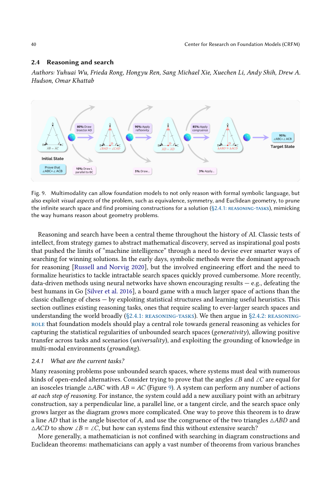
图 9： 多模态能力使基础模型不仅可以使用形式化符号语言推理，还能利用问题的视觉方面，例如等价性、对称性和欧几里得几何，从而剪枝无穷搜索空间、找到有希望的解构造，见第 2.4.1 节“推理任务”；这模仿了人类处理几何问题的方式。
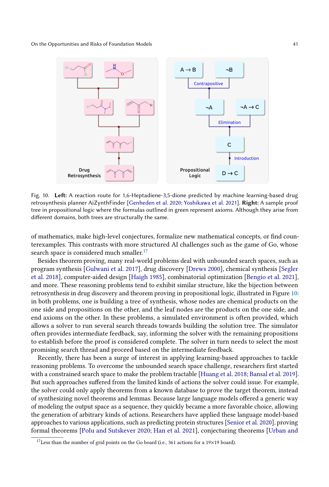
图 10： 左图：机器学习药物逆合成规划器 AiZynthFinder 预测的 1,6-庚二烯-3,5-二酮反应路线 [Genheden 等，2020；Yoshikawa 等，2021]。右图：命题逻辑中的一棵示例证明树，绿色轮廓表示公理。尽管两棵树来自不同领域，但它们的结构相同。
近来，使用基于学习的方法处理推理问题成为研究热点。为了克服无界搜索空间挑战，研究者最初先限制搜索空间，使问题变得可处理 [Huang 等，2018；Bansal 等，2019]。但这种方法遭遇一个问题：求解器能够发出的动作种类有限。例如，求解器只能从已知数据库中应用定理来证明目标定理，而不能合成新定理和引理。由于大型语言模型提供了一种把输出空间建模为序列的通用方法，它们很快成为更有吸引力的选择，能够生成任意种类的动作。研究者已把这些基于语言模型的方法应用于多种任务，包括预测蛋白质结构 [Senior 等，2020]、证明形式化定理 [Polu 和 Sutskever，2020；Han 等，2021]、猜想定理 [Urban 和 Jakubuv，2020；Rabe 等，2021；Li 等，2021b]、从自然语言合成程序 [Chen 等，2021f；Ling 等，2016]，以及修复、生成和理解代码 [Yasunaga 和 Liang，2021；Lu 等，2021b；Guo 等，2020；Svyatkovskiy 等，2020；Kim 等，2021b；Zügner 等，2021]。研究还表明，扩大模型规模能够显著提高推理能力 [Polu 和 Sutskever，2020]；语言建模中的标准技术，例如预训练，也能大幅提高这些任务的性能 [Rabe 等，2021；Polu 和 Sutskever，2020]。
2.4.2 基础模型在推理中扮演什么角色？
生成性。 我们认为，基础模型的生成能力对于有效推理至关重要。由于搜索空间无界，枚举所有可能性变得不可处理。相比之下，使用基础模型可以建模最优决策的分布，并生成适合进入下一步的候选方案。特别是，基础模型提供了一种把输出空间作为序列建模的通用方法，因此下一决策的生成完全不受约束，也就具有普适性。对于前文讨论的许多推理挑战，这种灵活性十分关键：它允许在数学猜想 [Li 等，2021b] 和新程序合成 [Chen 等，2021f] 等领域进行创造性生成。随着基础模型规模扩大，它们捕捉这类统计结构的能力也会大幅增长 [Polu 和 Sutskever，2020]。
普适性。 正如上一节所述，许多推理问题展现相似的潜在结构。我们认为，基础模型提供的统一框架可以在任务之间迁移和共享重要启发式方法：既可以把某项任务中有效的低层技术泛化到新情境，也可以直接找到适用于大量问题类型的元技术。此外，由于基础模型在许多领域上训练，它能够在任务和领域之间积极迁移权重中编码的元知识 [Papadimitriou 和 Jurafsky，2020；Wu 等，2021f；Lu 等，2021a]。基础模型训练与适配框架鼓励分离关注点：基础模型训练学习元知识，例如药物逆合成与命题逻辑证明共享的搜索树结构；适配阶段则可以专注于学习任务专用词汇。因此，基础模型可以降低适配阶段学习问题的复杂度，提高样本效率和泛化能力。
落地。 推理问题往往很容易用符号语言表达，例如数学、代码和分子的 SMILES 表示。然而，这些符号背后有深层语义：在人的心智中，说出“等腰三角形”会描绘出鲜明图像。基础模型能够提供深层落地和语义。首先，把表示落地到视觉或物理等其他模态，对于把握推理任务中的抽象概念并赋予其具体意义至关重要 [Larkin 和 Simon，1987；Jamnik，2001]。由于模型可能在多种模态上训练，基础模型可以帮助理解多种数据源，例如图像和文本。因此，在几何例子中，基础模型如果已经从自然图像中学习到几何形状，就可以有效利用问题的图示表示。然而，推理领域对齐的多模态数据很稀缺；基础模型能否以无监督方式发现不同模态之间的联系，例如发现交换图与相应代数方程之间的对应关系，仍是开放问题。此外，即使在符号领域内部，符号也可能有不同解释层次。例如，高级编程语言可以转换为低级汇编代码。基础模型可以学习一种共享表示，覆盖这些不同视角。过去工作表明，自监督任务 [Han 等，2021；Peng 等，2021；Li 等，2021a] 能让模型理解高级代码脚本背后的内部运作，并进一步帮助下游任务。
2.4.3 推理中的未来挑战
由于这些问题本身难度高，与原始图像和文本相比，高质量标注数据稀缺且更难收集。研究者已经提出若干缓解方法。在数学领域，有人提出生成合成定理，希望能够泛化到现实定理 [Wang 和 Deng，2020；Wu 等，2021a；Firoiu 等，2021；Zhou 等，2021c]。另一种方法是设计自监督任务来扩充数据集 [Yasunaga 和 Liang，2020；Ren 等，2020；Han 等，2021；Rozière 等，2021；Yasunaga 和 Liang，2021]，或者设计更好的预训练目标 [Wu 等，2021f]。但我们仍缺乏设计自监督任务的一般原则性方法，因为大多数现有工作都针对具体问题设置定制 [Yasunaga 和 Liang，2020；Ren 和 Leskovec，2020；Han 等，2021]。构建基础模型将推动一个统一框架，用来构造能够适用于所有推理问题的一组自监督任务。此外，如果具备足够可扩展性，交互也可能通过把人类纳入循环来缓解数据稀缺：人类可以最少量地引导学习课程或数据增强过程，例如选择要添加的公理或要探索的猜想。交互式工具本身也构成基础模型用于推理的一个动机 [Han 等，2021；Chen 等，2021f]，因为它们可以帮助人们处理最需要认知能力或最费力的部分。方便理解的交互式工具还可以用于教育，借助高能力基础模型帮助人类学习，见第 3.3 节“教育”。
提高高层推理能力，是现有基础模型面临的核心挑战。人在处理困难问题时会执行抽象推理和高层规划 [Miller 等，1960]。例如，构建软件工具或证明定理时，我们通常先画出高层草图，再深入低层细节 [Koedinger 和 Anderson，1990]。现有基础模型没有接受生成这类高层计划的训练，而往往只关注预测下一个低层步骤 [Polu 和 Sutskever，2020；Han 等，2021；Chen 等，2021f]。遗憾的是，要训练基础模型模拟类似人类的推理，我们再次遇到数据收集挑战。虽然有限情境中确实存在这样的数据 [Li 等，2021b]，但总体而言，高层推理数据稀缺且难以收集。一条研究路线是让抽象和模块化层级在学习过程中自行涌现 [Ellis 等，2021；Hong 等，2021]；但如何把这些方法扩展到更通用、更现实的情境，仍是开放问题。
除上述挑战外，还有许多开放问题也与其他章节讨论的主题密切相关：怎样的架构才能可靠推理，见第 4.1 节“建模”？如何从理论上和实践上理解、解释这些模型，见第 4.10 节“理论”和第 4.11 节“可解释性”？我们能否训练鲁棒的推理模型，使其泛化到领域外问题，见第 4.8 节“鲁棒性”和第 4.3 节“适配”？我们认为，基础模型在这些方面的研究，都能极大拓宽其对推理领域的影响。
2.5 交互
作者： Joon Sung Park、Chris Donahue、Mina Lee、Siddharth Karamcheti、Dorsa Sadigh、Michael S. Bernstein
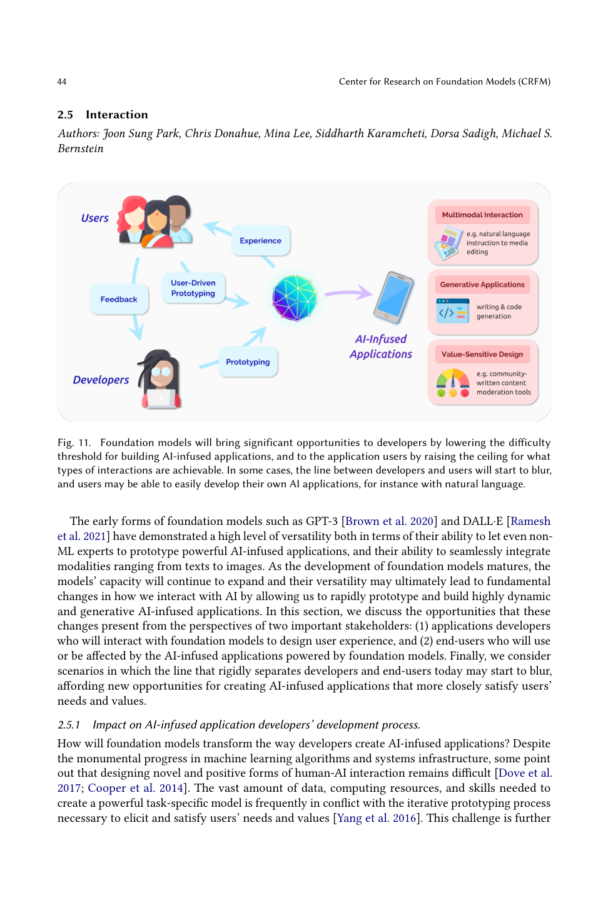
图 11： 基础模型将通过降低构建人工智能增强型应用的难度门槛，为开发者带来重大机会；同时，它们也会提高可实现交互类型的上限，为应用用户带来更多可能。在某些情况下，开发者与用户之间的界线会开始模糊，用户甚至可以通过自然语言等方式轻松开发自己的人工智能应用。
GPT-3 [Brown 等，2020] 和 DALL·E [Ramesh 等，2021] 等早期基础模型已经展现出高度的多功能性：一方面，即使不是机器学习专家，也能借助它们快速原型化功能强大的人工智能增强型应用；另一方面，它们能够无缝整合从文本到图像的不同模态。随着基础模型不断成熟，模型能力会继续扩展，其多功能性最终可能改变我们与人工智能交互的基本方式，让我们能够快速原型化并构建高度动态、具有生成能力的人工智能增强型应用。本节从两个重要利益相关方的角度讨论这些变化带来的机会：（1）将与基础模型交互、设计用户体验的应用开发者；（2）使用由基础模型驱动的人工智能增强型应用，或受其影响的终端用户。最后，我们讨论这样一些情形：今天严格分隔开发者和终端用户的界线可能开始模糊，从而出现新的机会，创造更贴近用户需求和价值观的人工智能增强型应用。
2.5.1 对人工智能增强型应用开发者开发过程的影响
基础模型将如何改变开发者创建人工智能增强型应用的方式？尽管机器学习算法和系统基础设施取得了巨大进步，但有人指出，设计新颖且积极的人机交互形式仍然很困难 [Dove 等，2017；Cooper 等，2014]。创建强大特定任务模型所需的大量数据、计算资源和技能，往往与为了发现并满足用户需求和价值观而必须进行的迭代式原型开发过程相冲突 [Yang 等，2016]。人工智能响应具有不可预测性，模型又能产生极其庞大的生成式输出空间，这使问题更加复杂，因为人们很难建立关于模型表现的有效心智模型。交互式机器学习方面的工作（例如 Crayon [Fails 和 Olsen，2003]、Regroup [Amershi 等，2012]），以及向终端用户传达人工智能不确定性的设计框架（例如混合主动原则 [Horvitz，1999]），已经在应对这些挑战方面取得了一些进展。然而，要克服这些障碍仍需要更多工作 [Yang 等，2020]。
基础模型为处理上述许多挑战提供了重要机会。例如，基于语言的基础模型能够接收自然语言输入，并泛化到许多下游任务，这可能显著降低应用开发的“难度门槛” [Myers 等，2000]：开发者不必收集大量数据，也不必从零开始训练大型模型，就能开发复杂模型。这样，即使不是机器学习专家，也可以快速原型化人工智能增强型应用。同时，基础模型强大的生成能力以及潜在的多模态能力，可能大幅提高可实现交互类型的“上限” [Myers 等，2000]，既提高交互质量，也扩大交互多样性。不过，我们能否成功利用这些能力，取决于能否有效地把基础模型整理成应用开发者更容易管理的形式。
遗憾的是，赋予基础模型优势的泛化能力和高上限，也会让模型更难使用，因为它们可能比单一用途的人工智能模型更加不可预测、更加复杂。近期研究表明，要让 GPT-3 这类模型持续、稳定地执行预期任务并不容易 [Reynolds 和 McDonell，2021]；而理解它究竟具备什么能力，仍是一个活跃的研究方向 [Hendrycks 等，2021a]。为了提高人工智能增强型应用的可靠性和可信度，我们建议未来继续研究如何让基础模型表现出更可预测、更鲁棒的行为，例如通过微调；在主要交互方式是自然语言提示时，可以采用提示工程 [Reynolds 和 McDonell，2021；Liu 等，2021d]、校准 [Zhao 等，2021]，或预先格式化特定任务的端点。有关细节请参见第 4.8 节“鲁棒性”。
2.5.2 对终端用户与人工智能增强型应用交互的影响
除了开发者创建人工智能增强型应用的新方式之外，基础模型还会给终端用户与这些应用交互的体验带来什么变化？现有面向用户的人工智能应用设计框架，关注增强而非替代用户能力，这一思想由 Douglas Engelbart 提出 [Engelbart，1963]。我们预计，这些框架在未来人工智能增强型应用的开发中仍然相关，也应当继续发挥作用。例如，保持用户的自主性、反映用户价值观，仍会是基础模型驱动应用的核心主题。此外，在让人工智能代理主动采取行动并自动化用户日常事务，与等待用户直接操控之间，必须谨慎权衡二者的收益 [Shneiderman 和 Maes，1997；Horvitz，1999]。还应当通过参与式设计 [Lee 等，2019] 和价值敏感设计 [Smith 等，2020] 等过程，直接收集并反映用户价值观；这些方法主张在设计人工智能增强型应用时主动让所有利益相关方参与其中。
基础模型可能以让用户和社群感到意外、失望的方式行事，因此这些问题在基础模型情境下会特别突出。模型的生成能力可能暴露与社群目标相悖的偏见或观点；更隐蔽地，它还可能在社群并不知情的情况下利用这些关联来产生行为。这会给使用基础模型的组织带来沉重负担：它们必须监控模型行为，并在可能的范围内调整模型，使其以适当方式行动。
虽然用于思考“如何通过人工智能增强用户能力”的设计框架应保持不变，但基础模型强大的生成和多模态能力，可能使实际可实现的交互形式大幅多样化。早期可以视为基础模型驱动的软件工具，已经开始推动多媒体创作与编辑的新前沿，让普通的新手内容创作者也能根据粗略、直观的要求生成高质量多媒体，例如面向写作者的协作式创作 [Lee 等，2022]、面向数字艺术家的文本生成图像、面向音乐人的母带制作，以及面向程序员的代码补全。更好的基础模型可能支持更加雄心勃勃的工具：例如，歌迷提供一首歌曲的主题材料，系统便以其喜爱乐队的风格生成歌曲；企业主提供产品的简单描述，系统便据此制作完整网站。此外，基础模型还会用于丰富静态多媒体，例如自动把旧式多媒体内容重新制作成新格式，或为新电子游戏中的每位玩家生成独特体验；它们甚至可能带来新形式的多模态交互，使用本身就混合了多种模态的界面，例如视觉与手势交互。
我们已经开始在从 AI Dungeon 到 Microsoft PowerApps 和 CoPilot 的应用中看到基础模型具体形成交互的迹象。随着我们构想新的交互形式，批判性思考这些交互可能对个人用户和社会产生的影响越来越重要，这样才能最大化其积极作用。例如，基础模型驱动的应用会如何改变我们彼此沟通的方式？强大的模型是否会代替我们写电子邮件？如果会，知道邮件作者可能根本没有亲自写信，这会如何改变人们的信任、可信度和身份，又会如何改变我们的写作风格 [Hancock 等，2020]？模型生成内容的著作权归谁？同意的责任和所有权发生转移后，可能如何被滥用 [Weiner，2018]（更深入的讨论见第 5.5 节“经济”）？基础模型对我们的工作、语言和文化会产生哪些长期影响 [Hancock 等，2020；Buschek 等，2021]？最后一个问题尤其值得注意，因为基础模型是在观察到的数据上训练的，并不一定能告诉我们因果关系。因此，我们如何确保基础模型的使用会把我们带向期望的未来，而不是重复过去？这些问题并非基础模型独有，但随着基础模型加速创建有效的人工智能增强型应用，它们会被放大，也会变得更加普遍。
2.5.3 开发者与终端用户之间的界线逐渐模糊
如今，人工智能模型开发者与终端用户之间存在一道坚固的界线：终端用户很少拥有数据、计算资源和专业知识，因而无法开发出真正适合自身价值观和需求的新模型。通用模型，即不针对某个特定用户或社群的模型，在某些情况下可能已经足够；但近年来，越来越多的情形表明，这类模型无法服务用户。例如，为某个在线社群识别有问题评论而设计的文本分类模型，可能在该社群中表现良好，却无法适应规范和文化差异很大的其他社群。Reddit 上的 NSFW 社群可能更能容忍某些内容，而科学社群可能会拒绝那些看似平淡、却没有科学研究依据的轶事 [Chandrasekharan 等，2018]。再如，为某一目标人群设计的人工智能传感器和机器人工具，如果不能根据能力和需求不同的用户快速进行上下文适配，也可能失效 [Karamcheti 等，2021]。近期研究已经提出一些有前景的方向，让终端用户通过手动提供模型参数或数据集来共同创建人工智能模型，例如 WeBuildAI [Lee 等，2019]；但这些结果仍处于初步阶段，而且往往只关注较为简单的模型。
如果基础模型能够充分降低构建人工智能增强型应用的难度门槛，就可以让用户积极参与模型开发，从而把用户需求和价值观与模型行为更紧密地结合起来。这将带来重要机会。近期研究表明，只要在自然语言提示中提供恰当的任务描述，GPT-3 就能以少样本甚至零样本方式稳定完成分类任务 [Brown 等，2020]。一个希望管理自身内容的在线社群，或许可以利用这种能力创建定制的人工智能分类器，根据社群共同认可的分类任务描述过滤内容。当然，这种能力也可能被滥用，用来压制某些成员的声音；关于这一点，参见第 5.2 节“滥用”。此外，基础模型将展现出的强大上下文学习能力，可能使基础模型驱动的应用能够更有效地针对每位用户优化界面。这有望帮助处理人机交互和人与机器人交互中的许多重要问题，例如在混合自主设置中平衡用户直接操控与自动化之间的关系。
当然，要真正实现用户与开发者界线模糊化的潜力，我们仍需克服重要挑战。这些挑战包括缓解基础模型中已有的偏见，以及让模型行为更加鲁棒、即使非机器学习专家也能管理。与机器学习专家相比，非机器学习专家可能更难理解基础模型的全部能力和机制，从而在开发周期中遇到意外陷阱 [Yang 等，2018]。未来研究应探索如何把基础模型置于交互式机器学习的情境中，并研究如何支持机器学习经验有限的人以鲁棒方式利用这些模型。尽管如此，让终端用户参与开发人工智能增强型应用的能力，仍是一个令人兴奋的机会，可能为我们未来与这些应用交互的方式引入新范式。
2.6 理解的哲学
作者： Christopher Potts、Thomas Icard、Eva Portelance、Dallas Card、Kaitlyn Zhou、John Etchemendy
基础模型能够理解它所训练数据中的什么？回答这个问题，将为我们判断基础模型总体上能否促进智能系统提供极有价值的信息。本节聚焦自然语言，因为语言使用是人类智能的标志，也是人类经验的核心。
目前最好的基础模型能够以惊人的流畅度理解和生成语言，但它们始终会陷入某种不连贯状态，让人觉得它们不过是“随机鹦鹉” [Bender 等，2021]。这些失误是否说明模型存在固有局限？还是说未来的基础模型真的可能理解自己处理的符号？
本节旨在澄清这些问题，并帮助组织围绕它们展开的讨论。我们首先解释“基础模型”这一概念，特别关注基础模型如何训练，因为训练机制限定了模型能够从世界获得哪些信息。接着，我们讨论为什么必须澄清这些问题，才能进一步发展此类模型。最后，我们澄清“理解”的含义：既讨论理解是什么这一问题，即形而上学问题，也讨论如何可靠地判断模型是否已经达到理解，即认识论问题。
最终，我们得出结论：现在就怀疑未来模型理解自然语言的能力，可能为时过早。基础模型单独是否最终能够实现理解，当然并不明显；但我们同样不知道有什么决定性理由可以证明它们做不到。
2.6.1 什么是基础模型？
基础模型没有精确的技术定义。它更像是一个非正式标签，用来指代一大类模型；随着新研究出现，这一类模型很可能不断扩展和变化。这给推理其基本性质带来了挑战。不过，可以说所有基础模型都共享一个定义性特征：它们都是自监督的。本节聚焦于自监督是模型唯一正式目标的情形。
在自监督中，模型唯一的目标，是学习训练数据中符号序列的抽象共现模式。这项任务也让许多模型能够生成看似合理的符号字符串。例如，许多基础模型的结构允许我们向它提供“这份三明治含有花生”这样的序列，并要求模型生成续写，例如“酱和果冻”。另一些模型更擅长填补空缺：向模型提供“这份三明治含有____和果冻”，期待它填入“花生酱”。这两种能力都来自模型从训练数据中提取共现模式的能力。
很难说这种自监督以明显方式告诉模型符号究竟意味着什么。模型直接获得的唯一信息，是哪些词倾向于和哪些其他词共同出现。表面看来，知道“这份三明治含有花生”很可能接着出现“酱和果冻”，并不能告诉模型三明治是什么、果冻是什么，或这些对象将如何组合。这似乎暗示着基础模型能够达到的程度存在固有局限。然而，我们没有必要把模型限制在只能看到文本输入。基础模型可以在范围广泛的不同符号上训练：不仅包括语言，还包括计算机代码、数据库文件、图像、音频和传感器读数。只要模型仍然只是学习所接触序列的共现模式，按照我们的定义，它就仍然属于基础模型。在这一学习过程中，模型可能学会表示某段文本与某个特定传感器读数之间的强关联，也可能学会表示一串像素值与某条数据库记录之间的强关联。这些关联可能反映我们所处世界的重要方面，也可能反映我们用来谈论世界的语言。
2.6.2 问题的利害关系
在分析理解是什么之前，值得先思考：我们为什么在意基础模型能否实现理解？这些模型即将被部署到许多目的和功能各不相同的场景中。我们的某些部署目标，只有在模型具备理解能力的程度上才能实现。下面列出其中几个目标：
- 信任： 有人可能认为，如果系统不理解自己所使用的语言，我们就无法信任它的语言行为。当然，我们现在会信任工程系统完成某些事情，例如制造汽车零件，而无需提出理解问题；但语言在这方面或许特殊，因为它是人类独有的。此外，语言可以用来欺骗和歪曲事实，因此理解本身显然并不意味着值得信任。总的来说，在语言使用情境中，理解可能被视为信任的必要条件。
- 可解释性： 如果真正的自然语言理解在某种程度上包含维护并更新世界的内部模型（包括言语语境等内容），并且我们作为工程师能够分析语言输入输出如何与这一内部模型连接，那么系统的可解释性、可预测性和可控性都可能得到大幅提升。
- 问责： 与前面几点相关，未来我们可能希望以某种方式让人工代理对其生成的语言负责 [The HAI Adaptive Agents Group，2021]。根据我们如何理解问责、责任、代理性等概念，语言理解可能会成为先决条件。
理解可能在这些事项中的任何一项里发挥不可或缺的作用，这一可能性本身就强烈促使我们建立关于理解的理论框架。
2.6.3 什么是理解？
我们的核心问题是：基础模型能否理解一种自然语言？基于前面的讨论，我们可以把问题进一步明确为：自监督是否足以产生理解，同时注意这里对自监督使用的数据没有任何限制？要回答这一问题，首先必须定义“理解”的含义。
首先，我们发现有必要明确区分理解的形而上学与认识论，这两者在相关讨论中有时会被混为一谈。形而上学关注代理者实现理解在“原则上”意味着什么；认识论则关注我们如何在“实践中”知道代理者是否已经实现了相关类型的理解。简言之，形而上学更关心我们最终要达到的目标，认识论更关心我们是否能够知道自己何时达到目标。因此，我们的认识论在一定程度上取决于我们的形而上学。
理解的形而上学。 语言哲学为“理解自然语言是什么”提供了多种选择。为简洁起见，我们把相关观点概括为三类，它们都与人工智能和自然语言处理中的研究路线有关：
- 内在主义： 语言理解就是根据语言输入，检索正确的内部表征结构。因此，如果没有适当类型的丰富内部概念体系，语言理解甚至不可能发生。
- 指称主义： 粗略地说，当代理者能够知道一种语言中的不同句子在特定语境下需要满足什么条件才为真时，它就理解了这种语言。也就是说，词语有指称对象，陈述性话语可以进行真假评估；理解包含根据所呈现的情形或场景对话语进行评估的能力。
- 实用主义： 理解不需要内部表征或计算，真理和指称也不是根本性的。重要的是代理者是否倾向于以正确方式使用语言。这可能包括对推断或推理模式的倾向、恰当的会话动作等。关键在于，相关的语言能力本身就构成理解。
虽然这只是对可能空间的简化描述，但我们已经可以看到，这些观点与前面所说目标的关系截然不同。例如，按照实用主义观点，实现语言理解并不意味着系统值得信任或可解释，因为该观点没有保证代理者的内部结构，也没有保证其与非语言世界之间的关系。相反，按照内在主义观点，至少可以强烈推断出相当稳健的内部或因果可解释性。基础模型原则上能否理解语言，这个问题会随着我们采用的形而上学刻画不同而呈现出完全不同的面貌。
内在主义和指称主义都可以被表述为一个映射问题：把语言符号与“意义”或“语义值”关联起来。对内在主义而言，这个对象可以是表征或概念、计算某个值的程序，或其他类型的内部对象；对指称主义而言，它可以是从词到外部指称对象的映射，也可以是从情形到真值的映射，且都相对于某个语境而言。自监督是否足以让基础模型学会这种期望的映射？训练样例的性质可能很重要。如果模型只接收语言输入，那么它学习这种映射的能力可能受到根本限制，无法以相关意义学会指称。（Merrill 等 [2021] 确实指出了一些理论限制，但他们对“学习符号意义”的含义作了很强的假设。）然而，如果输入符号流包含世界事物的多种数字痕迹，例如图像、音频和传感器数据，那么共现模式可能包含足够信息，让模型为所需映射归纳出高保真代理。对于指称主义来说，还需要进一步追问这些代理与真实世界之间的关系；但人类语言使用者同样面对这一问题。
Bender 和 Koller [2020] 提出了一个把指称主义与实用主义结合起来的有趣论证。他们设想一个代理者 O，截获两名使用自然语言 L 的人类之间的通信。O 所处的世界与人类的世界非常不同，因此没有指称主义要求的、能够把人类话语扎根于其世界中的经验。尽管如此，O 仍然从人类话语的模式中学习，甚至能够成功伪装成其中一名人类。Bender 和 Koller 希望激发这样一种直觉：我们很容易想象某些情形，O 无法把 L 扎根于人类世界的事实会暴露出来，进而说明 O 并不理解 L。他们背后的假设似乎是，世界的复杂性如此之高，任何数量的文本交流都不可能完整覆盖它，缺口最终会暴露出来。用我们前面定义的术语来说，这种无法指称的能力被认为意味着代理者没有处于理解所需的正确倾向状态。
从根本上看，Bender 和 Koller 描述的是这样一种情形：理解所需的某些关键信息缺失，而一个简单的行为测试就揭示了这一点。我们可以同意这种判断，同时不必因此得出基础模型总体上无法理解的结论。这又把我们带回训练数据的具体细节。如果修改 Bender 和 Koller 的情境，让通信中包含来自人类世界的数字编码图像、音频和传感器读数，并且 O 能够学习这些数字痕迹与语言单元之间的关联，那么我们或许会更加乐观。这里可能存在 O 难以获得足够数据以实现泛化的实践问题，但未必存在关于 O 能够达到什么程度的原则性限制。
我们暂时得出结论：没有简单的先验理由可以认为，属于上述三种观点的任何一种理解都不可能以相关方式被学习。既然这种可能性仍然开放，我们就面临一个困难的认识论挑战：如何评估理解是否真正实现。
理解的认识论。 实用主义的一个优点是，它把成功定义为具体行为的表现，因此如何测试理解并不存在很大的概念谜题。我们只需确信，迄今对系统行为的有限观察，显示出一种可靠倾向，使其能够表现出我们作为目标的一般行为类别。当然，就适当目标达成一致非常困难。人们提出具体方案后，往往会遭到反驳，而且通常是在声称系统成功之后才出现反驳。
图灵测试的历史在这里很有启发性：尽管许多人工代理已经通过了实际图灵测试，但没有哪个代理因此被广泛接受为智能系统。同样，近年来自然语言处理领域提出了许多基准任务，用于评估理解的特定方面，例如回答简单问题、执行常识推理。当系统超过我们对人类表现的估计时，社群通常会认为测试有缺陷，而不是认为目标已经达到。我们真正的目标也许是一组行为，只是很难把它界定清楚，或转化为实际测试。另一方面，这也可能说明我们一直真正想要的是内在主义或指称主义所说的理解。
如果我们把内在主义或指称主义视为最终目标，也就是理解的黄金标准，那么行为测试至多只能不完美地评估理解是否实现。不完美有两个方面。第一，行为测试总会存在缺口，让不够复杂的模型钻空子。第二，系统可能已经实现了这些观点所要求的映射，但我们无法通过行为测试展示这一点。最近 GPT-3 的经历说明了这种困难：根据所使用的提示不同，我们可能看到令人惊讶的连贯输出，也可能看到胡言乱语；因此，提示工程需要深厚的专业知识 [Rong，2021]。
因此，内在主义和指称主义都要求采用结构性评估方法：研究模型的内部表征并探测其中的信息 [Tenney 等，2019；Manning 等，2020]，研究模型内部动态 [Sundararajan 等，2017]，也许还要按照支持因果推断的特定实验方案主动操纵内部表征 [Vig 等，2020；Geiger 等，2020]。关于复杂基础模型的内部运作，我们从实践实验中能够了解什么，可能存在根本限制；但只要我们的目标与内在主义或指称主义一致，这些方法显然会有用。
2.6.4 推进讨论
基础模型未来是否会理解语言，显然没有简单答案。要开始回答这个问题，必须先解决一个困难的形而上学问题，而这个问题存在若干实质不同的观点。形而上学问题又会引出带来许多实践挑战的认识论问题。尽管如此，上述讨论确实引出了一个实践结论：如果把基础模型作为人工代理实现语言理解的路径，多模态训练机制很可能是最可行的策略，因为它们似乎最有可能为模型提供必要信息。自监督是否足够，则完全是一个开放问题。
3 应用
基础模型的能力表明，它们有潜力改变不同部门和行业，扩展人工智能在社会中发挥的作用。在基础模型可能应用的众多领域中，我们聚焦三个对社会运行具有基础性作用的学科：医疗保健（第 3.1 节）、法律（第 3.2 节）和教育（第 3.3 节）。在每个领域中，我们都会讨论基础模型带来的机会，以及相应的挑战和担忧。
3.1 医疗保健与生物医学
作者： Michihiro Yasunaga、Jing Huang、Camilo Ruiz、Yuhui Zhang、Giray Ogut、Saahil Jain、William Wang、Yusuf Roohani、Hongyu Ren、Antoine Bosselut、Ehsan Adeli、Jure Leskovec、Russ Altman
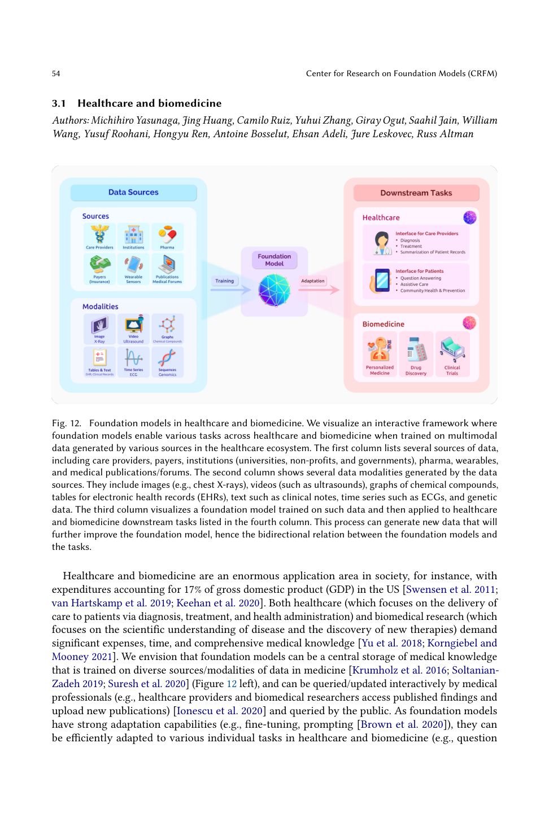
图 12： 医疗保健和生物医学中的基础模型。图中展示了一个交互式框架：基础模型在医疗生态系统不同来源生成的多模态数据上训练后，可以支持医疗保健和生物医学中的多种任务。数据来源包括医疗服务提供者、支付方、大学、非营利组织、政府、制药企业、可穿戴设备，以及医学出版物和论坛；数据模态包括图像、视频、化合物图、电子健康记录表格、临床文本、心电图等时间序列和遗传数据。模型应用于医疗保健和生物医学的下游任务后，还会产生新数据，进一步改进基础模型，因此模型与任务之间是双向关系。
医疗保健和生物医学是社会中规模巨大的应用领域。例如，美国医疗保健支出占国内生产总值的 17% [Swensen 等，2011；van Hartskamp 等，2019；Keehan 等，2020]。医疗保健关注通过诊断、治疗和健康管理向患者提供服务；生物医学研究则关注疾病的科学理解和新疗法发现。二者都需要巨额费用、漫长时间和全面的医学知识 [Yu 等，2018；Korngiebel 和 Mooney，2021]。我们设想，基础模型可以成为医学知识的中心存储，利用医学领域多种来源和模态的数据进行训练 [Krumholz 等，2016；Soltanian-Zadeh，2019；Suresh 等，2020]，并由医疗专业人员交互式查询和更新；公众也可以查询模型 [Ionescu 等，2020]。由于基础模型具有微调、提示等适配能力 [Brown 等，2020]，它们可以高效适配患者问答应用 [Klasnja 和 Pratt，2012；Zhu 等，2019；Daniel 等，2019；Liu 等，2020a] 和临床试验匹配系统 [Ni 等，2015；Harrer 等，2019；Beck 等，2020]。这样，基础模型可以成为连接数据、任务和人的中心接口，提高医疗保健和生物医学应用的效率与准确性 [Elbattah 等，2021]。
与此同时，医疗保健和生物医学应用也提出了独特挑战，例如整合多模态数据 [Miura 等，2021；Liu 等，2021a]，以及遵守医学领域的伦理和法律规范，包括隐私、安全与可解释性 [Guan，2019；Xu 等，2019]。
3.1.1 医疗保健中的机会
基础模型可以通过医疗服务提供者和医院改善患者获得医疗服务的过程。当前，医疗成本逐年上涨 [Keehan 等，2020]；研究估计，由于行政效率低下和可预防的医疗错误，医疗支出中可能有 30% 属于浪费 [Kocher，2021]。随着医疗需求增长，社会还面临医疗服务提供者严重短缺 [Kirch 和 Petelle，2017]。因此迫切需要面向医疗服务提供者和患者的快速、准确接口，例如诊断和治疗自动辅助系统、患者记录摘要系统，以及患者问答系统 [Davenport 和 Kalakota，2019；Nie 等，2018；Wang 等，2021b]。尤其是在 COVID-19 这类紧急大流行危机中，自动分析胸部 X 光片、症状检查、护理建议和疾病预防问答，对于减少疾病传播、分配医疗资源和挽救生命至关重要 [Lalmuanawma 等，2020]。
医疗服务提供者接口。 医疗服务提供者会把不必要的时间花在编辑电子健康记录上，可预防的医疗错误也会造成资源浪费 [Kocher，2021；Shrank 等，2019；Shah 等，2020]。基础模型可以适配为电子健康记录的高效、准确接口，处理临床记录、检验值历史和影像文件 [Li 等，2020c；Steinberg 等，2021；Percha，2021]，帮助生成患者就诊摘要 [Krishna 等，2020]，检索相关病例和文献，并建议实验室检查、诊断、治疗和出院方案 [Zhang 等，2019b；Rasmy 等，2021]。它们还可以帮助外科机器人监控和执行精确手术 [Diana 和 Marescaux，2015；Agrigoroaie 和 Tapus，2016；Yu 等，2019]。
患者接口。 基础模型可以提供临床预约信息 [Bates，2019]，回答预防性护理问题 [Demner-Fushman 等，2020]，提供解释病情的文字和图形 [Chaix 等，2019]，并辅助患者护理机器人 [Jeong 等，2015；Abdi 等，2018]。它们还可以面向公众回答公共卫生和大流行病预防问题 [Bharti 等，2020；Herriman 等，2020]。但接口必须保证事实准确，以维持公众对医学建议的信任 [Kreps 和 Kriner，2020]。
3.1.2 生物医学中的机会
基础模型可以促进药物发现和疾病理解等生物医学研究，并最终转化为更好的医疗解决方案 [Hanney 等，2015]。药物开发从识别蛋白质靶点、发现有效分子的基础研究，到临床试验和最终审批，通常超过 10 年，成本超过 10 亿美元 [Wouters 等，2020]。利用现有数据和已发表成果加速生物医学发现，是生物医学领域的紧迫问题 [Yu 等，2018]；对 COVID-19 这类新发疾病尤其如此 [Lalmuanawma 等，2020；McKibbin 等，2020]。
基础模型可以从两方面帮助生物医学发现。第一，强大的生成能力可用于生成实验方案和设计有效分子 [Kadurin 等，2017；Harrer 等，2019]。第二，多模态整合能力使研究者能够从分子、患者和人群等多个尺度，以及影像、文本和化学描述等多个知识来源研究疾病；若只使用单模态数据，这些发现往往难以获得 [Lanckriet 等，2004；Aerts 等，2006；Kong 等，2011；Ribeiro 等，2012；Wang 等，2014，2015c；Ruiz 等，2020；Wu 等，2021h]。基础模型还可以在不同模态之间迁移知识，例如把在自然语言上训练的变换器模型适配到蛋白质折叠预测 [Lu 等，2021a；Jumper 等，2020]。
药物发现。 研究者必须先识别与疾病存在因果关联的蛋白质、基因和 RNA 等靶点，再寻找能够结合靶点并治疗疾病的化合物和抗体。基础模型的生成能力可以改善搜索空间和效率，减少实验数量，并帮助发现更新、更好的药物 [Hughes 等，2011；Schenone 等，2013；Schneider，2018；Jin 等，2018；You 等，2018；Walters 和 Barzilay，2020；Stokes 等，2020]。由单个基础模型同时解决靶点识别、疗效预测和副作用预测等关联问题，也可能改善每个问题的结果 [Ramsundar 等，2015；Camacho 等，2018；Duran-Frigola 等，2020；Huang 等，2021a]。语言模型建模蛋白质已经显示出治疗设计潜力，包括预测能够逃逸疫苗诱导免疫反应的病毒突变，以及预测蛋白质对接潜力以设计治疗性抗体 [Bepler 和 Berger，2021；Hie 等，2021；Tsaban 等，2021；Wu 等，2021b；Rives 等，2021]。
个性化医疗。 个性化医疗根据患者健康史、遗传信息、影像和其他个人测量结果选择最佳治疗方案 [Collins 和 Varmus，2015；Ashley，2016]。给定药物集合和患者基因组，基础模型可以预测哪种药物最可能治疗该患者且副作用最小 [Whirl-Carrillo 等，2012；Tatonetti 等，2012；Gerstung 等，2017；Grinfeld 等，2018；Adam 等，2020]。它们可以整合电子健康记录 [Rajkomar 等，2018]、医学影像 [Bera 等，2019；Ouyang 等，2020]、药物和分子测量结果 [Gottlieb 等，2011；Ruiz 等，2020]，作出更优预测。
临床试验。 传统临床试验效率低、成本高：80% 的试验会因无法证明疗效或安全性，或因患者匹配问题而失败 [Ali 等，2020；Liu 等，2021c]。基础模型可以根据已有研究预测潜在失败并设计临床试验方案，例如患者纳入标准；还可以根据包含电子健康记录、基因序列等多模态数据的患者资料，自动匹配符合条件的患者 [Harrer 等，2019]。
3.1.3 基础模型面临的挑战与未来研究
多模态。 医学数据包含文本、图像、视频、数据库和分子等类型，覆盖分子、基因、细胞、组织、患者和人群等尺度 [Kong 等，2011；Ruiz 等，2020]，还同时存在专业语言和通俗语言 [Lavertu 和 Altman，2019；Li 等，2019]。当前自监督模型通常分别针对文本 [Lee 等，2020b]、图像 [Chaitanya 等，2020]、基因 [Ji 等，2021] 和蛋白质 [Jumper 等，2020] 开发。未来需要研究特征级和语义级融合，以学习模态间和跨模态信息，并统一生物医学知识。
可解释性。 可解释性，即为决策提供证据和逻辑步骤，在医疗保健和生物医学中至关重要 [Holzinger 等，2019]，并受到《通用数据保护条例》强制要求。诊断和临床试验必须解释患者症状及其时间相关性，知情同意同样需要可解释性 [Amann 等，2020]。然而，当前基础模型的训练目标并不包括可解释性，未来需要在这一方向开展研究 [Linardatos 等，2021]。引入知识图谱可能进一步提高模型可解释性 [Roberts 等，2020；Xu 等，2020；Jin 等，2021]。
法律与伦理规范。 基础模型的预测必须与既有医学知识一致并在事实层面准确；当模型不确定时，必须量化不确定性或交由专家处理 [Challen 等，2019；Mozannar 和 Sontag，2020]。使用患者健康记录必须遵守隐私法律，例如美国的《健康保险流通与责任法案》；联邦学习可以在训练中保留原始敏感数据的隐私 [Chamikara 等，2021]。训练和评估数据还应充分代表不同性别、种族、民族和社会经济背景，避免加剧已有社会不平等 [Chen 等，2019；Wiens 等，2019；Chen 等，2020b；Martinez-Martin 等，2020；Kaushal 等，2020]。当代表性数据稀缺时，需要研究去除偏见和正则化模型的方法 [Zhao 等，2020a]。开发者应咨询伦理和法律研究者，并遵守部署所在国家和地区的法规。
外推。 生物医学发现包含外推。基础模型必须快速适应新的检测方法、高分辨率显微镜等实验技术，或 COVID-19 这类新疾病 [Jaroch 等，2018；Benam 等，2019]。利用现有数据集外推到新情境，是生物医学中的关键机器学习挑战 [Snell 等，2017；Ma 等，2021b]。GPT-3 展现出生成未见文本等外推行为，但其机制尚不清楚，相关研究仍处于早期阶段。未来需要提高基础模型的外推能力，尤其要考虑医疗保健和生物医学固有的多种数据模态和任务。另见第 4.8 节“鲁棒性”。
3.2 法律
作者： Peter Henderson、Lucia Zheng、Jenny Hong、Neel Guha、Mark Krass、Julian Nyarko、Daniel E. Ho
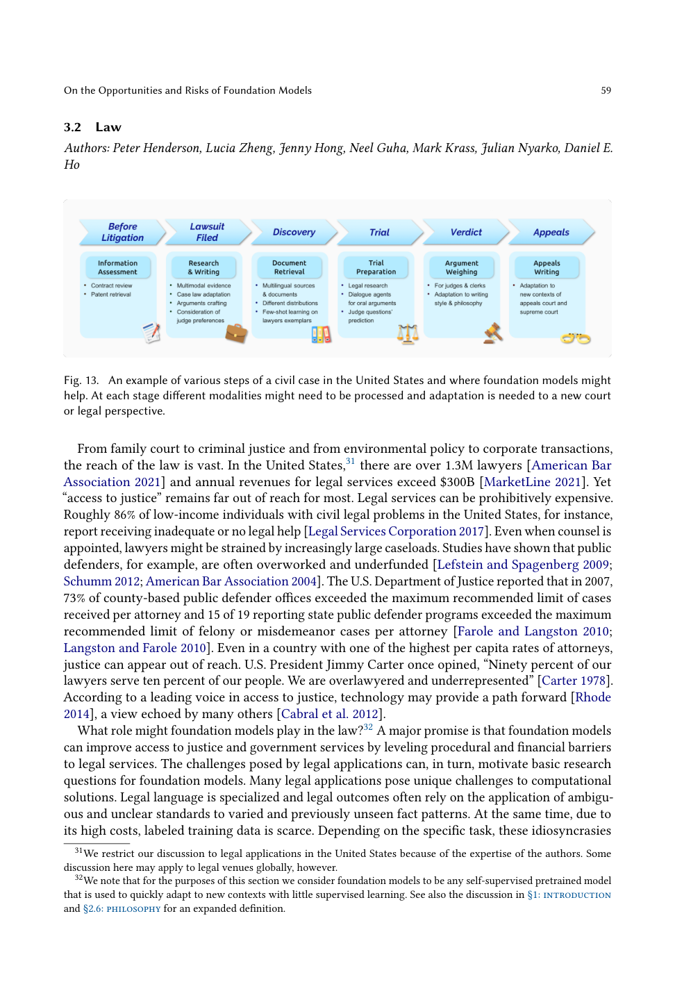
图 13： 美国民事案件的不同阶段，以及基础模型可能提供帮助的位置。每个阶段可能需要处理不同模态的数据，并适配新的法院或法律观点。
从家庭法院到刑事司法，从环境政策到公司交易，法律覆盖范围极其广泛。在美国，有超过 130 万名律师 [American Bar Association，2021]，法律服务年收入超过 3000 亿美元 [MarketLine，2021]。然而，“诉诸正义”对大多数人仍然遥不可及，法律服务可能昂贵到无法负担。例如，美国有民事法律问题的低收入人群中，约 86% 表示得到的法律帮助不足，或完全没有得到帮助 [Legal Services Corporation，2017]。即使法院指定了律师，律师也可能因不断增大的案件量而不堪重负。研究表明，公设辩护人经常过度劳累且资金不足 [Lefstein 和 Spagenberg，2009；Schumm，2012；American Bar Association，2004]。在一个人均律师数量最高的国家之一，正义仍可能遥不可及。美国总统 Jimmy Carter 曾说：“90% 的律师服务于 10% 的人。我们律师过多，却没有得到充分代表。” [Carter，1978]。诉诸正义领域的重要声音认为，技术可能提供前进路径 [Rhode，2014]。
基础模型可以在法律领域发挥什么作用？一个重要承诺，是通过降低法律服务的程序和经济门槛，改善诉诸正义和政府服务的机会。反过来，法律应用的挑战也能推动基础模型的基础研究。法律语言高度专业化，法律结果往往依赖于把模糊、不清晰的标准应用到多变且此前未见的事实模式上；由于成本高昂，带标签训练数据又很稀缺。传统模型可能无法克服这些障碍，而基础模型具有灵活性和少样本学习能力，或许特别适合应对这些问题。
在本节中，基础模型可以把审判过程中的音频、取证阶段的视频和图像，以及法律研究中的文本作为证据上下文。不过，大多数适合依赖基础模型的法律任务仍然是文本输入和文本输出，因此我们主要聚焦文本领域，只简要讨论其他领域。图 13 描述美国民事诉讼的阶段和基础模型可能介入的位置；图 14 展示生成法律文书一段文字所需的逻辑流程。
重要注意事项。 在法律或政府情境中应用基础模型前，必须特别审查伦理、法律和公平问题，因为这些应用往往对受影响者产生重要的现实后果 [Surden，2020]。部署前还必须彻底评估模型（见第 4.4 节“评估”）。法律系统尤其重视，甚至可能强制要求透明度、问责和可解释性。因此，当前模型是否适合解决许多最紧迫的法律问题仍然值得怀疑。不过，扩大和改善法律及政府服务的机会，仍是基础模型值得追求的目标。
3.2.1 法律中的机会
法律应用可以从政府场景中的机器学习 [Engstrom 等，2020；Coglianese 和 Ben Dor，2020；Re 和 Solow-Niederman，2019]，延伸到帮助律师提供法律服务 [Zheng 等，2021；Huang 等，2021b；Ostendorff 等，2021；Vold 和 Conrad，2021]。由于本节作者主要熟悉美国法律体系，以下讨论以美国为主，涵盖三类应用：私法或民事司法、刑法，以及非刑事公法。
民事法律。 美国民事诉讼通常要求当事人寻找并支付律师，因此低收入者尤其难以获得足够法律代理 [Rhode，2004]。基础模型有潜力降低成本、提高质量并扩大法律服务覆盖范围。甚至在律师介入前，模型也可以从当事人对事实的通俗描述中识别相关法律问题，推荐所需法律行动或专门律师；其他工作也在尝试提供针对客户需求的信息 [Cabral 等，2012；Brescia 等，2014；Queudot 等，2020；Westermann 等，2019]。
客户与律师接触后、民事诉讼开始前，基础模型可以评估合同、审查服务条款、查找相关专利，并执行其他诉前工作 [Betts 和 Jaep，2017；Elwany 等，2019；Lippi 等，2019；Lee 和 Hsiang，2019；Hendrycks 等，2021c；Hegel 等，2021]。模型还可以翻译客户交流和法律文件，降低法律服务成本和障碍 [Cuéllar，2019]。但法律翻译需要精确理解高度技术化语言，客户陈述和庭审记录的翻译还需要理解当地方言，因此高质量训练数据很难收集；基础模型可能通过低资源情境中的快速适配，优于完全监督方法 [Vieira 等，2020]。
诉讼期间，基础模型可以帮助律师开展法律研究、起草法律语言，或评估法官如何看待其主张 [Zheng 等，2021；Huang 等，2021b；Ostendorff 等，2021；Vold 和 Conrad，2021；Chalkidis 等，2020，2019]。预训练模型可以推荐法律文本中的相关引文和裁判要旨，改善法律问答和法律搜索，还可以辅助合同起草与审查 [Hendrycks 等，2021c；Betts 和 Jaep，2017]。更有吸引力的是，基础模型可能帮助律师生成法律陈述书，发现新论点或识别律师草稿中的问题；模型可以直接使用原始语言，而不必依赖手工抽取的特征，从而给出更有信息量的修改建议 [Tippett 等，2021]。
在开庭陈述和答辩陈述提交后，当事人进入取证过程。现有系统需要通过监督学习和主动学习给多模态文件（视频、图像、音频、文本）贴标签，成本很高 [Grossman 和 Cormack，2010；Oard 等，2018；Yang 等，2021]。基础模型可能实现少样本或零样本文件检索，从而降低成本。庭审开始后，模型可以根据法官过去发布的意见适配当前情境，预测法官询问时可能关注的内容；还可以分析庭审音视频，判断结果是否因被告的种族或方言而产生偏见。庭审结束后，模型可以帮助法官和法律助理评估双方主张，利用上下文嵌入协助解释法律条文 [Nyarko 和 Sanga，2020；Choi，2020]，发现判决中的明显错误或种族偏见，帮助法官修改意见 [Engstrom 等，2020；Ray 和 Lubbers，2014；Rice 等，2019]。
刑法。 政府尤其是刑事司法中的风险评分，是争议最大的领域之一。有人可能希望使用基于语言的基础模型，根据事件叙述辅助决定起诉或假释；但语言数据可能带来偏见，因此使用基础模型进行风险评分前必须谨慎 [Bender 等，2021；Berk 等，2021；Laufer，2020]。基础模型还可以帮助检察官和辩护律师完成民事诉讼中描述的任务，减轻公设辩护人的负担，识别错误并自动完成简单工作。但它们不是单独的解决方案。预训练模型还可以处理假释听证记录，寻找异常结果；去除警方报告中关于嫌疑人种族的语言线索，以促进不考虑种族的起诉决定；识别不尊重的警务沟通 [Bell 等，2021；Chohlas-Wood 等，2020；Voigt 等，2017]。由于这类敏感数据标注成本很高，基础模型可以先进行预训练，再快速适配标签稀缺的下游任务。
公法。 政府机构监管社会的广大领域，基础模型在公法中有广泛应用，包括分析法规制定中的公众意见、协助专利审查、响应《信息自由法》请求检索相关文件，以及辅助大规模裁决 [Engstrom 等，2020；Coglianese 和 Ben Dor，2020]。许多场景标签稀缺、资源受限且上下文持续变化，因此需要基础模型的适配性和灵活性。比如，在公众意见论坛中，预测模型可以帮助普通用户改进论证、识别评论中的错误陈述；美国交通部已经部署了类似系统 [Park 等，2012]。不过，政府机构必须遵守宪法、成文法和行政义务，因此这些场景需要格外谨慎。
3.2.2 基础模型能够提供哪些独特帮助？
法律应用有两个独特特点。第一，数据标注成本非常高：高质量标签通常只能由律师制作，而律师每小时可能收费数百美元；某些敏感数据即使完成标注，也不能汇集起来训练大型语言模型。鉴于少样本学习的进展 [Brown 等，2020]，基础模型是利用有限标注学习模型的最有希望路径之一。第二，法律决策要求在多个尺度上理解上下文：所有历史判决和标准、当前仍然有效的判例法，以及具体案件的细节。基础模型有潜力学习历史和法律上下文的共享表征，同时以足够语言能力和精度建模个案。
3.2.3 基础模型缺少什么，还需要哪些研究？
为说明当前基础模型要实现真实部署必须克服的缺陷，我们以自动生成提交法院的法律陈述书为例。陈述书要在听证前向法官说明论点；原告提交开庭陈述后，被告提交答辩，法官在听证中评估双方陈述并提问，随后作出决定。模型可以把律师指定的相关文件和案件事实，以及期望结果的粗略草图作为上下文，生成包含复杂法律论证的陈述书。
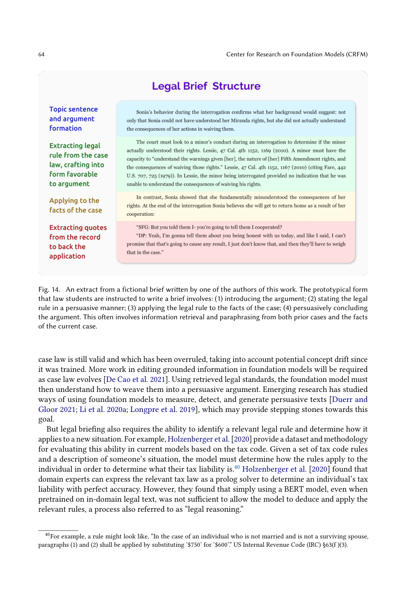
图 14： 一份虚构法律陈述书的节选。法律专业学生通常被要求按照以下典型形式撰写陈述书：（1）介绍论点；（2）以有说服力的方式陈述法律规则；（3）把法律规则应用于案件事实；（4）有说服力地总结论证。这一过程通常需要从先前案件和当前案件事实中检索并改写信息。
长文档与叙事。 模型必须阅读很长的上下文并生成很长的叙事。美国最高法院判决平均约 4700 词，最高法院实体陈述书可达 15000 词，法律评论文章通常有 20000 至 30000 词，假释记录可达数百页，审判记录甚至更长。当前基础模型难以处理如此长的上下文和输出（见第 4.1 节“建模”）。
检索、概念漂移、论证形成与逻辑推理。 模型不仅要读取案件文件，还必须检索相关判例法，判断哪些判例仍然有效、哪些已经被推翻，并考虑训练后法律概念可能发生的变化 [De Cao 等，2021]。随后，它必须把检索到的法律标准编织成有说服力的论证。法律陈述还要求识别相关法律规则，并判断规则如何适用于新情形。研究发现，即使 BERT 在法律文本上预训练，也不足以根据税法规则和个人情形推导税务责任；这一过程通常被称为法律推理 [Holzenberger 等，2020]。
GPT-3 的实际交互进一步说明了这一缺陷。模型能够复述“如果约定的违约金过高，法院通常不会执行”的抽象规则，却无法推断一辆丰田卡罗拉迟交所约定的 100 万美元属于过高金额；即使在提示中明确写出抽象规则和适用事实，模型仍可能错误地判定当事人应获得 100 万美元赔偿。这表明当前模型无法完成法律推理所需的逻辑应用。
精确性。 基础模型还可能在生成过程中编造事实 [Gretz 等，2020；Zellers 等，2019b]。法律情境尤其要求具体和真实，含糊陈述可能产生严重、无法预料的后果，虚假陈述还可能导致律师受到制裁。
少样本学习。 少样本学习仍处于早期阶段 [Perez 等，2021]。基础模型不仅要在事实层面准确，还要精确处理技术性法律语言，因此从一个语料库获得的信息能否用于另一领域的语料库仍不清楚。少样本方法与扩大法律语料库的研究需要同步推进。
适配。 在无标签法律语料上进行领域自适应预训练，已经观察到性能收益；当预训练语料与下游任务高度相关且带标签数据有限时，收益最明显 [Zheng 等，2021]。利用领域特定无标签语料进行自监督训练，可能为少样本方法提供互补改进。
清洁的领域内数据。 自动化方法或法律专家志愿标注，已经用于创建更具挑战性的法律基准数据集 [Zheng 等，2021；Hendrycks 等，2021c]。更大模型和更多预训练数据在部分任务上带来性能提升，但具有法律意义且从自然语言处理角度困难的基准数据集本身也很难创建：专家标注昂贵，传统分词和句子切分还可能忽略法律引用等法律文本的独特结构 [Bommarito 等，2018；Savelka 等，2017]。许多现有法律数据集因此规模小、不公开，或只反映基础模型出现以前就已解决的简单任务。公开法律数据也可能不具代表性，因为只有一部分案件会形成公开判决；如果训练数据集中在大型律师事务所，基础模型甚至可能进一步集中少数拥有领域数据的参与者的权力。
可靠性。 即使基础模型能够完成法律领域的所有任务，部署仍是重大挑战：法律领域的模型失败会给客户和律师造成真实损害。某些法院已经认定机器翻译软件不可靠，不能作为证据使用，尽管其他法院仍在依赖它。综合这些复杂性，法律陈述和法律推理可能超出现有模型能力，但似乎属于未来有望实现的范围，也因此可以作为基础模型持续发展的目标。
3.3 教育
作者： Ali Malik、Dorottya Demszky、Pang Wei Koh、Moussa Doumbouya、Drew A. Hudson、Allen Nie、Hamed Nilforoshan、Alex Tamkin、Emma Brunskill、Noah Goodman、Chris Piech
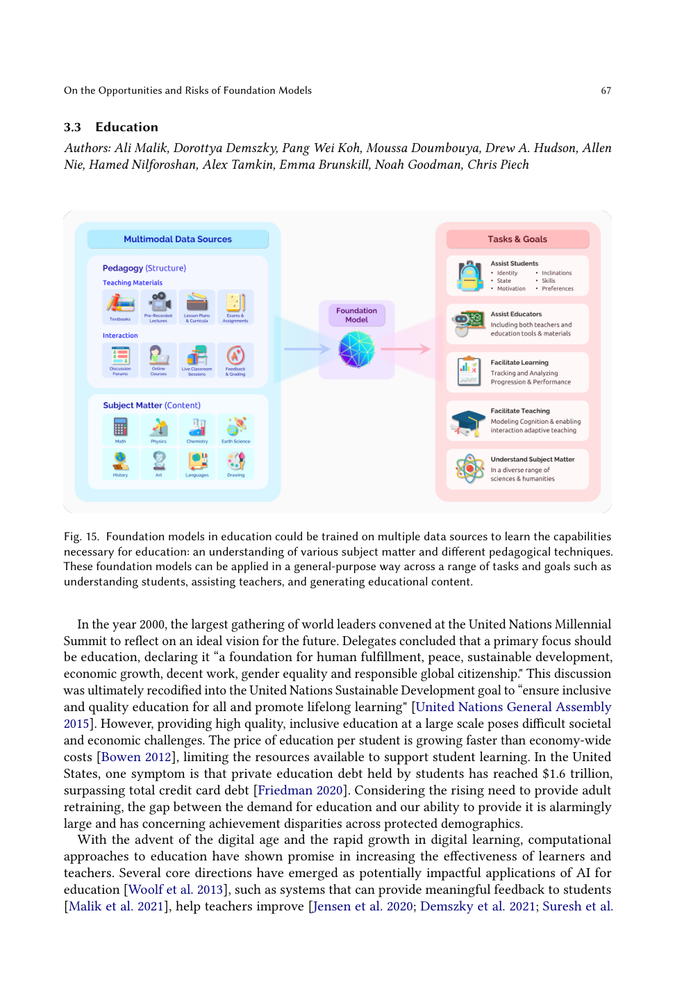
图 15： 教育中的基础模型可以在多种数据源上训练，学习教育所需的能力，包括理解不同学科内容和不同教学方法。训练后的模型可以以通用方式应用于多种任务和目标，例如理解学生、辅助教师和生成教育内容。
2000 年，世界各国领导人在联合国千年首脑会议上聚集，讨论未来的理想图景。与会代表认为教育应当成为重点，并宣称教育是“人类实现、和平、可持续发展、经济增长、体面工作、性别平等和负责任全球公民身份的基础”。这一讨论后来被重新表述为联合国可持续发展目标：“确保包容和公平的优质教育，促进全民终身学习” [United Nations General Assembly，2015]。然而，大规模提供高质量、包容性教育带来了困难的社会和经济挑战。每名学生的教育成本增长速度超过整体经济成本 [Bowen，2012]，限制了支持学生学习的资源。在美国，学生持有的私人教育债务已经达到 1.6 万亿美元，超过信用卡债务总额 [Friedman，2020]。随着成人再培训需求增长，教育需求与供给能力之间的差距令人担忧，不同受保护人群之间还存在明显的成就差距。
数字时代和数字学习快速发展后，计算方法显示出提高学习者和教师效率的潜力。人工智能教育的几个核心方向包括：为学生提供有意义反馈 [Malik 等，2021]，帮助教师改进 [Jensen 等，2020；Demszky 等，2021；Suresh 等，2021]，以及创建根据学生需求和倾向定制学习过程的个性化、自适应学习体验 [Connor，2019]。
尽管潜力很大，要以包容且高质量的方式扩大教育规模，技术解决方案仍然异常困难。现有工作通常针对高度具体的任务定制方案，每项任务都需要从零收集大量训练数据。由于创建大型数据集困难且昂贵，独立解决每一项教育任务的方式存在根本局限。更值得探索的问题是：能否创建可在多种任务和学科间复用的通用方法？基础模型已经开始提升教育中的一些旗舰任务，例如使用 MathBERT [Shen 等，2021b] 进行知识追踪，即根据学生过去的回答跟踪其理解随时间的变化；以及“反馈挑战”，即解释学生对结构化开放任务（如编程题）的回答 [Wu 等，2021e]。基础模型能否带来更具变革性的改变？将其应用于教育有哪些已知和想象中的风险？本节先讨论伦理考量，再围绕两个具体任务展开：理解学生的错误观念，以及通过教学改善学生理解。
3.3.1 在教育研究中采用基础模型的重要担忧
教育人工智能的未来令人期待，尤其是在基础模型背景下；但对教育应用人工智能研究的影响必须保持特别谨慎。教育目标与复杂、长期的社会影响深度交织。即使我们积极改进数字教育，也必须认真设想该领域任何破坏性变化的复杂后果 [Piech 和 Einstein，2020]。伦理挑战包括数据偏见、法律约束和数字社会化影响。这些问题并非基础模型独有，但随着教育人工智能研究取得进展，应当持续反思。特别是在研究从“新人工智能技术能够提供什么”出发时，更要先考虑影响。
第 5.6 节“伦理”中的许多问题同样适用于教育。基础模型训练数据中的微小偏见可能很难追踪，却会影响教育机会公平 [Dixon 等，2018；Bolukbasi 等，2016]。系统还可能产生高度“反馈”：收集到的数据不断强化模型原有决策。偏见问题不仅涉及收集了什么数据，也涉及研究者选择开发什么应用。许多问题都围绕“谁受益”和“新技术是为谁创造的”。
让教师退出闭环。 数字教育，尤其是人工智能教育的目标之一，是提高学习体验的生产率，让单位时间或单位成本产生更多学习。决策者可能利用这种生产率把人类教师排除在闭环之外，但其长期影响很难预先知道。与一个以最大化“学习”为目标的教育系统交互，是否会损害社会情感技能发展？是否会减少与他人互动的机会？年轻一代的孤独感正在上升 [Cigna，2018]，而教师能够调节人工智能研究者可能没有预见的压力。
这项工作是学习者完成的，还是基础模型完成的？ 教师还必须学会有效教授使用基础模型工具的学生。如果学生与强大的生成模型合作，教师将更难判断学生贡献的范围，也更难规范无效合作和检测抄袭。Visual Studio 发布了基于 GPT-3 的人工智能结对程序员 GitHub CoPilot [Chen 等，2021f]。这会如何改变计算机科学教育？初学者程序员面临的许多挑战，对 CoPilot 或其技术后继者来说可能微不足道，从而削弱新手的学习体验。可以借鉴计算器进入数学课堂、Google 翻译进入语言课程的历史：这些技术曾经打乱相关教育，但如今已与传统教学并存。
隐私与安全。 教育人工智能的重要伦理问题，还体现在关于学生作品隐私的严格法律规定上。在美国，学生信息受《家庭教育权利和隐私法案》保护；13 岁以下儿童的数据隐私和安全还受到《儿童在线隐私保护法》保护。该法限制教师分享含有可识别个人信息的学生作品，可能直接影响用于训练和评估基础模型的数据共享计划。此外，基础模型权重是否会泄露训练数据中可能存在的私人信息，仍是开放问题 [Nasr 等，2018；Song 等，2017]。这些问题及其应对方式，与第 3.1 节医疗保健中的挑战相似。
3.3.2 学生思维的基础模型
要构建包容、愉快的教育人工智能工具，许多任务都可以使用基础模型。尤其在开放式作业情境中，很多任务首先要求我们理解试图帮助的学习者。
基础模型要具备推理学生理解程度的能力，需要什么？让模型正确回答数学问题并不难想象，但根据学生答案诊断其理解错误则更加困难。我们以为开放任务（写短段落、画物理图、写代码）的学生提供反馈为例。这个“反馈挑战”说明基础模型可以开箱即用地帮助学习者，也展示了基础模型研究中的开放领域。
有效反馈需要两项核心能力：（1）理解任务学科内容，例如物理或编程；（2）具有教育学上称为“注意”的诊断能力，即推断学生为什么犯错。在典型课堂中，学生交互数据不足以让人工智能模型从零学习这两项能力；即使课程有数百万学生，监督算法也很难理解四行程序背后的复杂学生推理 [Malik 等，2021]。因此，反馈任务必然需要从外部数据和经验转移理解。
现有基础模型直接有助于第一项能力，即理解具体学科。例如，为短编程题提供反馈时，GPT-3 这类模型通过少量示例就能有效理解流畅代码的样子。近期研究开始探索让基础模型快速适配新学科问题 [Wu 等，2021e；Condor 等，2021]。基础模型还可以整合任务提示文本、题目图表和助教评分标准等多种信息，通过统一表征从更丰富来源理解学科内容。一个具体案例是，研究者利用这些思想构建算法，以与人类助教相同的效果为斯坦福大学计算机科学入门课程期中考试评分 [Wu 等，2021e]。该算法在 GitHub 代码上适配基础模型，再为每道题使用相应的小型数据集。一般而言，数学适配可以使用数学网站、教材或 Gradescope 上的历史学生答案；口语理解可以使用广播档案或播客；创意写作则可以使用 Project Gutenberg 等大型数字档案。
与学科内容不同，把观察到的错误映射到学生思维缺陷的能力研究得少得多。教师“注意到”学生为什么犯某个错误，是反馈挑战的关键。例如，学生学习两位数加法，回答“26 + 19 等于多少？”时写出“315”。这要求我们推断其答案背后的原因和错误观念。训练基础模型完成这种“注意”可以被视为适配任务，甚至是推理任务。虽然困难，但训练人工智能系统注意学生错误是可实现目标。不同课堂、同一领域的不同学习任务之间，学生得出答案的方式存在可泛化模式。教师写给学生作品的反馈通常私下保存、分散在不同数据集中，但 StackOverflow 等公开交互数据也可能用于适配模型。研究者还探索了从教师那里提取学生错误生成性描述的方法 [Malik 等，2021；Gulwani 和 Singh，2013]，这些手写生成模型也可以生成适配数据，帮助基础模型诊断学生错误。
3.3.3 用于教学的基础模型
推理学生理解是实现第二个目标的重要一步，即提供包容、高质量的教学。计算教学方法关注内容个性化 [Connor，2019]、问题生成 [Guo 等，2016；Willis 等，2019；Srivastava 和 Goodman，2021]、自适应课程设计 [Mandel 等，2014；Doroudi 等，2017]，以及预测教师干预 [Chandrasekaran 和 Kan，2019；Alrajhi 等，2021]。
有效教学需要推理学生理解，因此前面对学科内容和“注意”的讨论都很相关；但有效教学还需要额外能力，即理解教学法 [McKenzie，2003]。这包括掌握引导学生的技巧：提出苏格拉底式问题或提供类比和对比案例，使用鼓励和支持性语言，根据学生调整问题难度，以及生成与学生兴趣和背景相关的例子。
可以使用以教学为主要作用的数据源来适配基础模型。例如，StackOverflow 等问答论坛可用于构建能够复述常见苏格拉底式问题的辅导模型；在 Wikipedia 等百科全书上适配的模型，可能能够给出通常事实正确的学生问答。教材、讲座视频、教案和评分反馈等公开数据，也共同包含可供基础模型适配的重要教学行为（图 15）。
教学适配的另一个挑战，是学习像教师一样与学生说话。教师语言通常不同于普通人语言；教师应当以尊重学生的方式说话，并有意识地帮助学生对所学学科形成积极身份 [Truax，2018]。微软 2016 年的 Twitter 机器人 Tay 上线 24 小时内开始生成仇恨言论，说明教育系统必须明确考虑这一因素。可以利用讲座视频或教师答疑录像等数据，让语言模型更多受到专业教师影响。
不同教育情境适合的语言差异很大：五年级科学课的有效教学，与大学物理课甚至大学文学课都不同。这超出了普通自然语言处理领域迁移的技术挑战，因为基础模型需要灵活适配语调和语言，而不仅是适配生成内容的事实。
基础模型如何提供更有洞察力的教学？本报告第 2.1 节“语言”指出，婴儿可以在很短时间内习得极其复杂的语言；人与基础模型训练的一个显著区别是，人类语言扎根于现实世界，婴儿的照顾者会在谈论物体时指向它们。这一洞察也可以启发生成式教育。人类似乎能从现实类比和对比中有效学习，而且这些类比和对比可以跨越当前情境与过去经验。例如，教授手语时，教师可以说“‘早晨’这个词的手形像太阳升起”，也可以指出刚才的手形与另一个词很相似，并集中讲解差异。再如，向已经懂阿拉伯语和英语的学习者教授斯瓦希里语时，可以指出斯瓦希里语中表示 8 的词 nane 在发音上类似英语表示 9 的 nine，是一个“假朋友”。能够整合多模态数据的基础模型，有潜力生成儿童语言学习中常见的丰富类比和比较（图 16）。
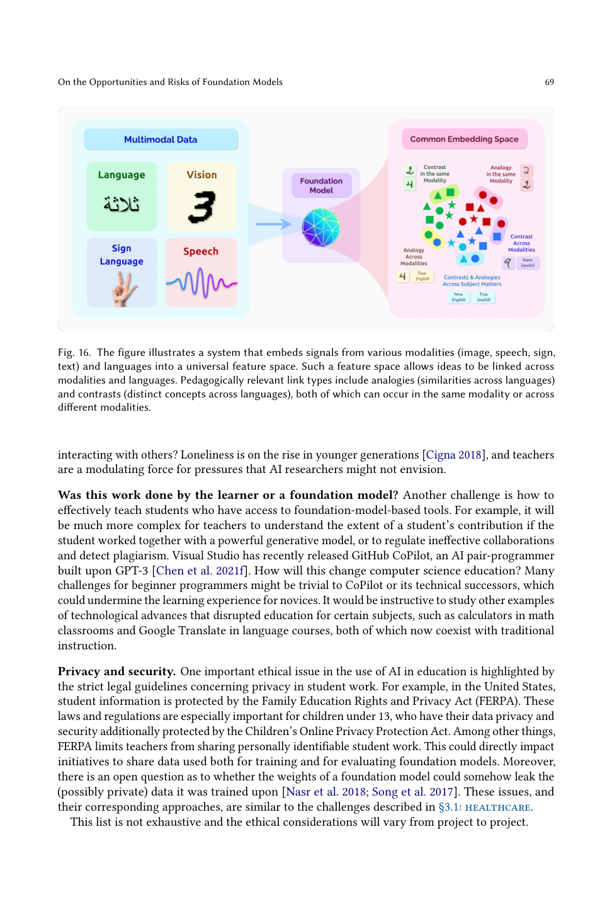
图 16： 该系统把图像、语音、手语、文本等多种模态和多种语言的信号嵌入统一特征空间，使不同模态和语言中的思想能够相互关联。与教学相关的关联类型包括类比（跨语言的相似性）和对比（不同语言或概念之间的差异），二者既可以发生在同一模态中，也可以跨模态发生。
4 技术
基础模型的技术基础产生了决定其潜力的能力（第 2 章“能力”）。为了理解开发过程中使用的技术，我们讨论用于训练（第 4.2 节）和适配（第 4.3 节）这些模型的数据（第 4.6 节）、模型架构（第 4.1 节）和系统（第 4.5 节），以及理解这一范式所需发展的理论（第 4.10 节）。为了理解最终得到的模型，我们还讨论如何评估（第 4.4 节）和解释（第 4.11 节）它们，以及鲁棒性（第 4.8 节）、安全与隐私（第 4.7 节）和长期人工智能安全（第 4.9 节）对确保模型在社会中部署时可靠性的重要性。
4.1 建模
作者： Drew A. Hudson、Antoine Bosselut、Alex Tamkin、Omar Khattab、Jared Quincy Davis、Jiaxuan You、Trevor Gale
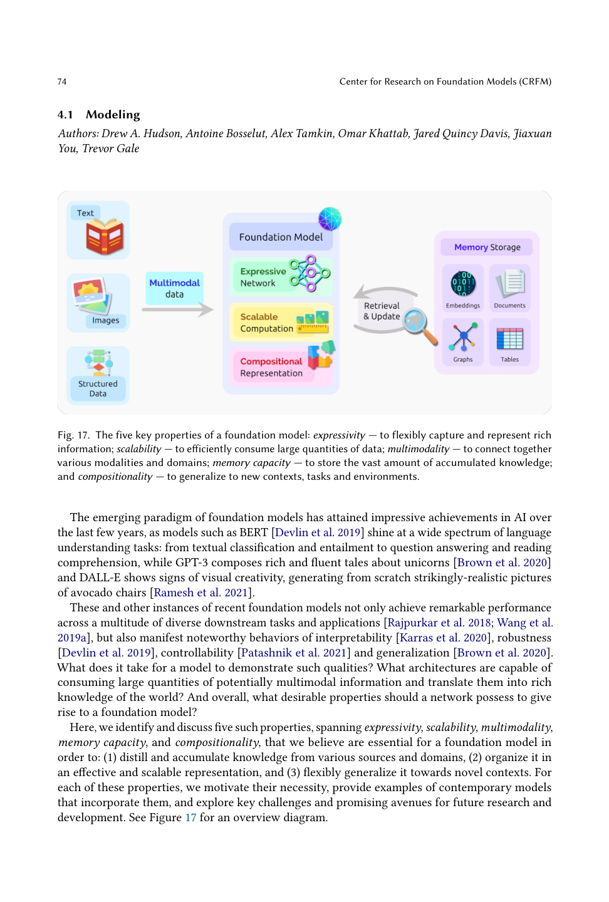
图 17： 基础模型的五项关键性质：表达能力，用于灵活捕获和表示丰富信息；可扩展性，用于高效消化大量数据；多模态性，用于连接不同模态和领域；记忆容量，用于存储积累的大量知识；组合性，用于泛化到新的上下文、任务和环境。
过去几年，基础模型范式在人工智能中取得了令人瞩目的成就。BERT [Devlin 等，2019] 在文本分类、蕴含判断、问答和阅读理解等广泛语言理解任务上表现出色；GPT-3 [Brown 等，2020] 能够创作关于独角兽的丰富流畅故事；DALL-E [Ramesh 等，2021] 则展示了视觉创造力，可以从零生成逼真的牛油果椅图像。
这些以及其他近期基础模型，不仅在大量不同的下游任务和应用中取得卓越表现 [Rajpurkar 等，2018；Wang 等，2019a]，还表现出值得注意的可解释性 [Karras 等，2020]、鲁棒性 [Devlin 等，2019]、可控性 [Patashnik 等，2021] 和泛化能力 [Brown 等，2020]。模型怎样才能具备这些性质？什么样的架构能够消化大量、可能是多模态的信息，并把它们转化为关于世界的丰富知识？总体而言，网络需要具备哪些期望性质，才能形成基础模型？
我们在这里讨论五项性质：表达能力、可扩展性、多模态性、记忆容量和组合性。我们认为，基础模型需要这些性质才能：（1）从不同来源和领域提炼并积累知识；（2）以有效、可扩展的表征组织知识；（3）把知识灵活泛化到新的情境。对于每项性质，我们说明其必要性，介绍体现它的当代模型，并探讨未来研究与发展的关键挑战和有希望方向。
4.1.1 表达能力
表达能力关注网络建模训练数据分布、并以灵活方式表示该分布的理论和实践能力。已有工作提出形式化表达能力指标，用于描述网络能够计算或近似的函数复杂度；这主要受网络深度、宽度、连接方式和结构模式影响 [Raghu 等，2017]。
正如“没有免费午餐”定理所指出的，不存在适用于所有情形的单一最佳模型或算法 [Wolpert 和 Macready，1997]。因此，我们尤其关心哪些模型能够有效捕获自然信息的各个方面，例如人类语言和现实世界图像 [Goodfellow 等，2016]。这些模态可以是连续的（视觉）或离散的（语言），具有明显层级结构和高维性，组成元素无论是像素、词语还是物理对象，都存在复杂关系与交互。
近期生成式建模突破为神经网络的高表达能力提供了有力证据：模型能够表示文本 [Brown 等，2020；Devlin 等，2019；Lieber 等，2021；Wang 和 Komatsuzaki，2021]、音频 [van den Oord 等，2016] 和视觉 [Karras 等，2020；Brock 等，2018] 领域的分布，并生成高保真、多样且逼真的样本。
归纳偏置。 过去十年神经网络建模自然数据的成功，很大程度上来自网络较深的结构。深度可以粗略理解为堆叠的非线性层数量，或链式推理经过的计算步骤。较深网络能够形成强大的层级和分布式表征，使模型从训练数据泛化到未见样例 [He 等，2016b；Levine 等，2020]。
通用逼近定理 [Lu 等，2019b] 表明，即使简单的多层感知机也能表示广泛函数；而循环神经网络和卷积神经网络实现的不同归纳偏置，可以提高学习效率，并增强网络建模不同信息形式的能力 [Goodfellow 等，2016]。前者适合语言、语音和时间序列等顺序数据，后者适合图像和视频等空间不变信息。
变换器网络与注意力。 变换器网络 [Vaswani 等，2017] 展示了捕获长距离依赖以及元素之间成对或高阶交互的重要性。它建立在自注意力机制上，使计算路径更短，并能直接比较输入中相距很远的元素，例如句子中的代词与其先行词，或指向同一主题的两个句子 [Vaswani 等，2017；Bahdanau 等，2014]。
注意力和门控结构（如 LSTM [Hochreiter 和 Schmidhuber，1997] 或混合专家 [Shazeer 等，2017]）中的乘法交互，为多层感知机和卷积网络固定权重的计算方式提供了更灵活替代。它们可以根据输入动态调整计算。以句子“她用 X 吃了冰淇淋”为例，前馈网络总是以相同方式处理，而注意力模型可以根据 X 是“勺子”还是“草莓”调整“吃”的上下文表征，分别把它连接到介词短语中的工具或冰淇淋 [Zavrel 等，1997]。
通用计算。 注意力相较早期架构的另一个优势，是更强的通用性。卷积的局部感受野和循环网络的顺序假设，分别反映视觉和语言模态的固有性质；注意力则不强绑定于某个任务或领域。我们推测，注意力和变换器的通用性质促成了它们在广泛研究问题和应用中的适用性 [Liu 等，2019；Dosovitskiy 等，2020；Hudson 和 Zitnick，2021]。
这体现了任务专门化与表达能力之间的取舍。结构先验更强的模型可以在依赖这些假设的特定任务上提高样本效率；归纳偏置较弱的模型学习更慢，却能扩展到更大数据量和更多样领域，因为它们不依赖限制性或任务专用假设。随着数据和计算资源变得更容易获得，探索最小归纳偏置、让数据“自行说话”的模型，似乎是更有希望的方向。
挑战与未来方向。 尽管神经网络和基础模型在表达能力方面取得巨大进展，重要挑战仍然存在。领先方法仍难以建模书籍、电影甚至 DNA 序列中的极长距离依赖，这可能与当前变换器方法的二次计算复杂度有关 [Choromanski 等，2020；Dosovitskiy 等，2020；Wang 等，2020c；Lin 等，2021]。
这实质上体现效率与表达能力之间的取舍：通过短而直接的计算路径显式建模远距离交互可以提高表达能力，却会因连接增加带来更高计算量，从而损害可扩展性 [Child 等，2019；Kitaev 等，2020；Choromanski 等，2020]。GANformer [Hudson 和 Zitnick，2021] 和 Perceiver [Jaegle 等，2021a，b] 探索了用二部注意力或瓶颈注意力平衡两者，并提出线性复杂度的变换器，在保持高表达能力的同时提高计算效率。寻找二者之间的有效平衡，是值得研究的方向。
另一个方向，是把主要集中于语言领域的基础模型扩展到结构模态 [Scarselli 等，2008；Veličković 等，2017] 和感知模态 [Tolstikhin 等，2021；Jaegle 等，2021b；Tan 和 Le，2021]。同样，探索需要迭代计算链并与符号信息交互的推理架构（第 2.4 节），也是基础模型研究的重要目标。
4.1.2 可扩展性
可扩展性与模型表达能力密切相关。随着不同来源的丰富数据越来越容易获得，计算资源也变得更强、更高效（第 4.5 节），我们需要匹配这种进步速度并利用它提高人工智能的能力和多功能性。为了拟合图像或文本的复杂高维分布，基础模型应在所有维度上可扩展，包括模型深度和宽度、训练时间、参数数量以及能够处理的数据量。
优化。 基础模型既应易于训练（第 4.2 节），能够抵抗数据噪声和不完美，并避免梯度消失或爆炸等不稳定现象；也应易于适配（第 4.3 节），能够克服灾难性遗忘并支持少样本学习。我们仍处于理解学习算法可扩展性原理的早期阶段，虽然近期工作开始揭示一些规律 [Liu 等，2020c；Kuditipudi 等，2019；Nakkiran 等，2019]，但仍有大量工作待完成。
硬件兼容性。 除鲁棒性和优化外，基础模型还应在实践中高效（第 4.5 节），并利用当代及未来硬件 [Hooker，2020]。并行化就是一个重要性质，刻画 GPU 支持的计算；事实上，变换器相较此前占主导地位的循环方法取得成功，很大程度上来自更高并行度。展望未来，模型应能够与硬件发展共同适配，支持分布式训练，利用混合专家等结构，并利用计算或表征稀疏性，例如 Longformer、BigBird 和 Sparse Transformer [Beltagy 等，2020；Zaheer 等，2020；Child 等，2019]。
4.1.3 多模态性
传统上，计算机视觉、机器人和自然语言处理分别独立发展，各自社群为单一模态开发专门方法。深度学习兴起带来的一个积极结果，是在人工智能不同社群和研究领域之间建立桥梁：看似不同的问题可以用相近方法解决，原本相距遥远的主题也开始汇聚到共同基础。这一突破推动了语言落地 [Lynch 和 Sermanet，2020]、视觉语义 [Conser 等，2019]、具身环境 [Savva 等，2019a] 和交互式代理 [Gray 等，2019] 等多模态研究。
多模态性是智能的关键组成，也是形成全面、广泛世界理解的关键因素。语言学习在有现实落地的环境中比在真空中更有效；反过来，语言也会促使视觉中出现连接低层感知信号与对象、属性、代理和动机等语义概念的抽象，从而丰富并提升视觉表征。
因此，理想的基础模型应连接不同模态，把具身信息提炼到共享的多面表征中，并捕获模态之间完整的连接和关系，从而提供广泛能力（见第 2.1、2.2、2.3 和 2.4 节）。
通用性与专门化。 多模态基础模型的重要设计选择，是不同模态模块的专门化程度和结构共享程度。不同领域数据拥有不同结构，例如语言离散而视觉连续，表面看来为每种模态设计专门归纳偏置可能有帮助。然而，随着训练规模扩大、模型更多依赖数据而不是结构先验，只有少量宽泛假设的通用方法，实际上比任务专门方法更成功。变换器在语言和视觉模态上的成功证明了通用性对提升人工智能能力至关重要 [Liu 等，2019；Lan 等，2019；Dosovitskiy 等，2020；Hudson 和 Zitnick，2021]。
多模态交互。 另一个关键问题是权重共享：各模态是否应使用相同参数，还是为各自组件使用不同参数？已有工作表明跨模态迁移确实有益，但理想共享程度仍不清楚，也缺少发现共享程度的原则性方法。
多模态模型还要决定模态如何交互。跨模态或后融合模型，如 ConVIRT [Zhang 等，2020a] 和 CLIP [Radford 等，2021]，为每个数据源保留独立编码器，只在最终计算阶段比较空间；早融合模型，如 ViLBERT [Lu 等，2019a；Cho 等，2021]，则联合推理视觉推理和问答所需的多模态信息。确定何时、以何种方式合并各自向量空间，仍是开放问题 [Nagrani 等，2021]。总体上，社群已经认可多模态性的重要性，但超越视觉与语言浅层对齐的模型仍不存在，具身环境中的落地语言学习还有很大探索空间。
4.1.4 记忆
基础模型的目标，是在大规模多种模态上收集和积累信息。这些知识既包括对世界的广泛理解，也包括对小众主题或具体事实的掌握。表示如此庞大的学习信息并不简单，由此产生了如何访问、存储、检索和操作特定记忆的问题。
显式存储。 一项重要设计原则，是把计算与记忆分离 [Weston 等，2014；Graves 等，2016；Hudson 和 Manning，2018，2019a]，使模型能够把已经获得的抽象技能迁移到新的具体情境。这里需要区分显式事实和隐式知识：前者可以存放在外部记忆中，后者通过网络可训练权重体现。相较于把所有信息隐式编码在权重中，二者分离可以减少存储不断增长知识所需的模型规模和参数数量 [Guu 等，2020]，通过记录知识来源提高信任和可靠性 [Cheney 等，2009]，更重要的是支持记忆更新、操作和适配 [Lewis 等，2020b]，从而有助于泛化到新的情境和下游任务。
深度学习和自然语言处理研究长期追求记忆与计算解耦，例如 Memory Networks、神经图灵机、神经状态机和 MAC [Weston 等，2014；Sukhbaatar 等，2015；Graves 等，2014，2016；Hudson 和 Manning，2018，2019a]。使用键值结构访问外部记忆，对建模长期依赖也十分有效 [Miller 等，2016；Henaff 等，2016；Bosselut 等，2018；Lample 等，2019]。截至目前基础模型的主流架构变换器，同样在逐步构建的上下文词表征之间执行键值记忆访问和计算 [Geva 等，2020]。
信息检索。 模型训练完成、收集信息后，有多种方式检索下游应用和任务所需事实。一类方法使用显式提示，通过输入序列查询模型知识 [Petroni 等，2019；Kassner 等，2021；Jiang 等，2020]；另一类方法在适配阶段隐式回忆并重塑已有知识 [Bosselut 等，2019；Hwang 等，2021]；第三类方法把神经计算与符号聚合结合起来，从非结构化文本库 [Karpukhin 等，2020；Lewis 等，2020b；Khattab 等，2020] 或知识图谱 [Zhang 等，2019a；Peters 等，2019；Liu 等，2020e；Verga 等，2020；Yasunaga 等，2021] 中检索信息。
检索机制的强记忆能力与信息瓶颈下学习到的丰富表征之间存在取舍。过度依赖检索，会减少模型学习紧凑、抽象地表示信息、从大量输入中提炼关键概念的机会。GPT-3 的上下文学习能力可能就是有限记忆架构迫使网络表示顺序输入数据的副产物 [Brown 等，2020]。因此，依赖外部检索的模型可能不如具有边界、紧凑且抽象表征的模型有效泛化。
知识操作。 在长时间进行大规模学习时，还必须注意知识具有动态性：随着世界变化，事实的正确性和有效性也会变化，昨天真实或相关的内容明天可能不再如此。因此，模型必须以支持终身学习的方式表示知识，能够高效更新和操作事实。
4.1.5 组合性
组合性是指整体意义由组成部分的意义以及组合它们所用规则共同决定的原则 [Janssen 和 Partee，1997；Bottou，2014]。它是人类智能的重要组成，支撑我们规划、推理并从少量样例中高效学习 [Lake 等，2017]。组合性可能是实现分布外、尤其是组合泛化的关键。它借鉴符号人工智能思想，为神经网络带来可解释性、可控性和数据效率等性质，并可以体现在多种元素中。
模型。 组合性可以体现在模型层面，即架构性质、结构和模块化程度；这些因素可以提高大型神经模型训练和推理效率 [Shazeer 等，2017]。它还与可解释性和多模态性相连，因为模型由哪些模块组成、模块如何交互、接口是否透明都很重要。
计算。 Module Networks 和混合专家进一步沿这一方向发展，不仅具有结构模块化，还具有组合计算：子网络专门执行不同操作，并根据输入调整模型行为 [Andreas 等，2016；Shazeer 等，2017]。有些方法拼接人工设计模块，另一些方法则让网络专门化在学习过程中自然出现。MAC 和 Dynamic Memory Networks 执行显式迭代计算，把任务分解为多个推理步骤，逐步从初始事实得到新的推断和结论 [Hudson 和 Manning，2018；Xiong 等，2016]。
训练与数据。 模型和计算可以组合，数据和训练过程也可以组合 [Andreas，2020]。与其在完整数据集上训练一个模型，不如把数据拆成子集，分别训练不同模型，再通过集成方法在测试时重新组合 [Dietterich，2000]。这可能对基础模型的训练和部署产生深远的实践及社会影响。
表征。 学习到的表征本身也可以具有组合性 [Andreas，2019]。一种有前景的知识表示方式，是使用结构化、可能基于图和面向对象的表征，围绕实体和事件节点建立连接、类比和关系边 [Zhang 等，2019a；Wang 等，2021a]。这是一种组织世界信息的自然方式，可以把不同模态输入围绕多面语义概念进行通道化和聚合，支持多跳推理，并可能通过重组提高分布外泛化 [Washington 等，1995；Sun 等，2020b；Yu 等，2020c]。
不过，组合性也可能损害表征的表达能力，使其难以处理特殊性、例外和上下文关联。整体有时大于部分之和，例如红葡萄酒并不等于红洋葱。过去十年占主导地位的方法往往只关注谱系的一端，学习单一的分布式表征；探索在上下文性与组合性之间取得更好平衡，是有希望的方向。
4.1.6 小结
我们介绍了下一代基础模型需要的五项性质：表达能力，用于灵活捕获并吸收现实信息；可扩展性，用于处理高容量高维数据；多模态性，用于消费、处理并可能生成来自不同来源和领域的内容；记忆容量，用于有效存储和检索获得的知识；组合性，用于成功泛化到新任务、设置和环境。基础模型要实现本报告设想的全部潜力，需要研究新的架构和建模方法来满足这些要求。
4.2 训练
作者： Alex Tamkin
训练目标是描述如何把模型架构和大量广泛数据转化为基础模型的数学函数。例如，GPT-3 使用语言建模目标训练，该目标奖励模型正确预测下一个词 [Shannon，1948]。本节先说明这些训练方法的目标，再介绍当前方法的重要设计取舍，并概述未来方向的关键目标。
4.2.1 训练目标的目标
利用广泛数据。 自监督学习算法的兴起释放了互联网规模数据集的力量；这些数据如果依靠人工标注将无法处理。广泛数据包括图像、音频和视频（第 2.2 节）；机器人和传感器数据（第 2.3 节）；以及独立文本或与图像等其他模态配对的文本（第 2.1 节）。由于缺少外部标注，研究者的重要任务是设计定制自监督算法，利用每种数据内部的独特结构，为基础模型产生训练信号。
领域完备性。 基础模型训练算法应当具有领域完备性，即完成训练任务需要具备在该领域下游任务中广泛有用的能力（见第 2.1、2.2 和 2.3 节）。这是基础模型通用性的关键。例如，语言建模要求模型学习共指、情感和翻译等广泛能力，因为模型要预测文档中的下一个词；相比之下，情感分类这类监督任务可能只产生更狭窄的能力。然而，哪些任务能够带来领域完备能力并不显然，模型能力的完整范围也难以评估（见第 4.4 节和第 4.10 节）。
扩展与计算效率。 训练流程必须可靠地把数据、模型架构和计算转化为广泛有能力的模型。为了最大化基础模型能力，我们可以识别这一过程的瓶颈，并提出消除瓶颈的新算法。自监督算法兴起后，模型大小和计算资源越来越成为关键瓶颈 [Kaplan 等，2020；Henighan 等，2020]，模型评价也不再只看能力，还要看达到这些能力所需的计算量和计算类型（第 4.4 节）。不同训练目标的效率可能相差巨大，因此在固定预算下，训练方法设计对强大能力的涌现非常重要。训练研究者应设计训练信号更丰富的目标，使模型学习更快、能力更强。不同架构、数据规模和计算量的能力具有令人惊讶的可预测扩展规律 [Hestness 等，2017；Kaplan 等，2020]，这使开发者能够依据清晰趋势作出选择，而不必依赖昂贵的随机搜索。
4.2.2 当前自监督方法的设计取舍
当前用于训练基础模型的自监督学习方法很多，但它们共同之处在于：从无标签数据中产生预测问题，不需要人工标注。自监督目标通过精心设计的约束制造丰富训练信号，约束可以施加于数据本身（如遮盖或加噪），也可以施加于模型表示和处理数据的方式（如潜在瓶颈）。这些约束在一定程度上预先嵌入了模型适配下游任务时所需的能力（第 4.3 节）。
应在什么抽象层级建模？ 一个根本问题是，基础模型的输入表征应处于什么层级。可以在原始字节层建模，但高维输入可能让模型关注较少语义的信息，例如草叶、音频压缩伪影或词语拼写，减慢通用能力学习；当训练变换器等计算复杂度随输入大小二次增长的模型时，这类方法也会变得不可行。另一种选择是利用领域知识降低输入空间，例如图像块嵌入和固定或学习得到的词元化 [Dosovitskiy 等，2020；Schuster 和 Nakajima，2012；Sennrich 等，2016；Kudo 和 Richardson，2018；van den Oord 等，2017；Ramesh 等，2021]。这些方法缓解了生成式方法的部分挑战，却可能丢弃输入中有用的信息。连续输入和离散输入对适配也有不同取舍，如何同时获得两者优点仍需研究。
生成式模型与判别式模型。 生成式训练在概念上优雅而且强大：它训练模型学习训练输入的联合分布或条件分布。主要生成式基础模型包括自回归模型，它们逐步生成输入 [van den Oord 等，2016；Radford 和 Narasimhan，2018；Chen 等，2020d；Yang 等，2019；Ramesh 等，2021]；以及去噪基础模型，它们先破坏输入，再恢复输入 [Devlin 等，2019；Raffel 等，2019]。训练中执行的具体生成方式决定了适配阶段可用的交互形式：GPT-3 这类自回归模型支持基于前缀的条件控制，T5 或 BERT 这类去噪模型则支持利用双向上下文替换任意长度片段或修正拼写。
判别式方法不能支持基于生成的交互，却可能在图像、音频和视频等高维连续设置下更高效地学习分类或回归任务。多数方法输出输入（或输入部分）的向量，并训练不同“视图”的向量相似 [Wu 等，2018；van den Oord 等，2018；Chen 等，2020c；He 等，2020；Grill 等，2020；Caron 等，2021；Zhang 等，2020a；Radford 等，2021]，或预测输入部分是真实还是伪造 [Clark 等，2020；Iida 等，2021]。更好理解生成式和判别式训练之间的取舍，并同时获得两者优点，仍是有趣研究方向。
捕获多模态关系。 捕获多种数据之间的关系日益重要，具体含义取决于模型情境和目标。CLIP [Radford 等，2021] 和 ViLBERT [Lu 等，2019a] 都是视觉语言多模态模型，却以不同方式实现多模态：前者分别把图像和文本编码为向量，使用户能够利用单一模态的例子检索、评分或分类另一模态的例子；后者在早期联合处理图像和文本，使视觉问答等下游应用能够对相关图像和问题共同推理。多模态基础模型仍是新兴研究领域，模型可以采用哪些多模态方式，以及附加模态带来哪些能力，还有很多未知。
4.2.3 前进路径
开箱即用的自监督学习。 当前自监督目标高度依赖领域：自然语言处理、计算机视觉和语音处理各自占主导的方法不同。这带来两个缺点：不同技术让我们难以理解它们为何有效的共同脉络和科学原则；而且每进入新领域，包括医学、科学和新的多模态场景，都需要从零开发训练方法。能够在任何数据上高效训练基础模型的通用目标，将是基础模型训练社群的重要里程碑 [Tamkin 等，2021b]。
获得丰富训练信号。 不同训练目标的效率并不相同，有些方法比其他方法高效很多，因此在同一计算预算下产生能力更强的基础模型。是否存在比当前方法高出数量级的训练方法？如果存在，如何找到它们？研究会受到未来软件和硬件进步的影响（第 4.5 节）。数据和训练算法也不应被视为独立因素：数据质量与可用性会影响训练信号，训练算法本身还可以在模型改进时主动寻找或构造更丰富的样例，加速学习 [Tamkin 等，2021c]。
目标导向的基础模型训练。 提示等适配方法利用了训练过程中几乎作为副产品出现的涌现性质。我们能否训练基础模型，把理解复杂世界中的目标并可靠执行目标直接纳入训练目标？这一方向关注获得通用能力，不同于通过强化学习把已有基础模型适配到特定任务 [Stiennon 等，2020]。一种想法是发展当前方法的更复杂版本，从原始在线或离线交互中获得多种现实能力，无需人工标注或任务构造 [Klyubin 等，2005；Singh 等，2005；Salge 等，2013；Shakir Mohamed，2015；Florensa 等，2017；Pathak 等，2017；Haber 等，2018；Precup 等，2000；Lange 等，2012；Ajay 等，2021；Yang 和 Nachum，2021；Schwarzer 等，2021]。这些方法可能采用与现有自监督算法相近的技术，例如在目标导向情境中训练序列模型，通过条件输入直接要求模型执行任务（UDRL 或决策变换器 [Schmidhuber，2019；Srivastava 等，2019；Chen 等，2021b]）。简单交互环境中已经涌现的复杂行为 [Baker 等，2020]，说明多任务、多代理、多模态的目标导向基础模型训练值得研究。
4.3 适配
作者： Xiang Lisa Li、Eric Mitchell、Sang Michael Xie、Xuechen Li、Tatsunori Hashimoto
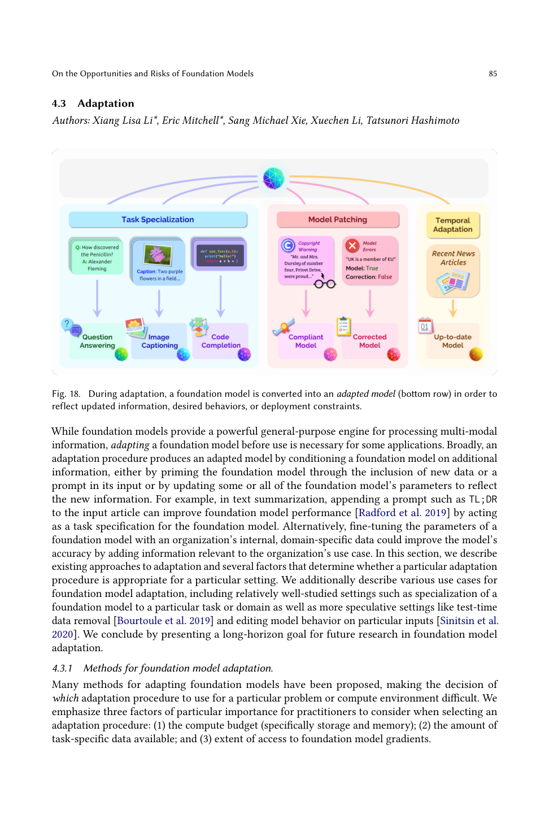
图 18： 在适配过程中，基础模型被转换为适配模型，以反映更新后的信息、期望行为或部署约束。
基础模型提供了处理多模态信息的强大通用引擎，但某些应用在使用前仍然需要适配。广义而言，适配过程通过让基础模型接收额外信息，产生一个适配模型；额外信息可以通过输入中的新数据或提示来引导模型，也可以通过更新部分或全部参数来反映新信息。例如在文本摘要中，在文章输入后追加“TL;DR”提示，可以作为任务说明并提高表现 [Radford 等，2019]。另一种做法是使用组织内部的领域数据微调参数，通过加入与组织用途相关的信息提高准确性。本节介绍现有适配方法，以及决定某种适配过程是否适合特定情境的因素；还讨论把基础模型专门化到任务或领域等较成熟用例，以及测试时删除数据、编辑特定输入上的模型行为等较具探索性的用例 [Bourtoule 等，2019；Sinitsin 等，2020]。最后，我们提出基础模型适配研究的长期目标。
4.3.1 基础模型适配方法
已有许多基础模型适配方法，因此在给定问题和计算环境下选择何种过程并不容易。实践者尤其应考虑三个因素：（1）计算预算，特别是存储和内存；（2）可用的任务特定数据量；（3）能否访问基础模型梯度。
因素一：计算预算。 对拥有数十亿或数万亿参数的基础模型，微调整个模型可能需要无法承受的内存；为许多任务分别微调还会带来不可接受的存储成本。低存储适配方法通常冻结大部分预训练参数，只学习少量任务特定参数，例如微调部分预训练参数或添加新模块，从而降低每项任务的存储开销。
这类算法的关键选择，是决定适配哪些参数。最简单的方法可能只调整预训练模型最后一层；其他方法只调整偏置向量 [Zaken 等，2021]、权重张量的低秩残差 [Hu 等，2021]，或覆盖模型参数的掩码 [Zhao 等，2020b]。另一条路线学习“软提示” [Li 和 Liang，2021；Qin 和 Eisner，2021；Liu 等，2021e；Lester 等，2021；Hambardzumyan 等，2021]：它们是任意参数向量序列，而非词表中的词元嵌入，再把软提示与输入激活拼接，在输入层或所有层对基础模型施加条件。还有方法冻结全部模型参数，在现有模型层之间交错插入可训练的多层感知机模块 [Houlsby 等，2019]。这些轻量适配技术似乎在参数效率和下游任务性能之间存在取舍，但有时只更新少于完整微调 1000 倍的参数，也能达到相近表现 [Zaken 等，2021；Li 和 Liang，2021；Hu 等，2021]。模型规模增大时，完整微调与轻量适配之间的差距甚至可能消失 [Lester 等，2021]，但轻量方法如何随规模扩展仍不确定 [Aghajanyan 等，2020]。
GPU 内存通常比磁盘存储更受限，因此低内存适配可能比低存储适配更能促进基础模型普及。已有多种低内存训练技术，可以直接应用于基于微调的适配过程（第 4.5 节）。不过，梯度检查点等方法以计算换内存，可能加剧基础模型显著的能源消耗 [Chen 等，2016；Bender 等，2021]。
因素二：数据可用性。 任务专门化通常需要任务特定的带标签数据。不同任务和语言的标注成本差异巨大：标注 MRI 数据需要医学专家知识，而给英语文本标注情感只需常识判断。适配数据充足时，可以使用传统微调或轻量微调；在低资源语言设置中，结合提示与微调显示出有前景的方向 [Schick 和 Schütze，2021a，b；Gao 等，2020c；Perez 等，2021；IV 等，2021；Min 等，2021]。研究表明，一个精心调好的提示可能相当于约 100 个训练样例；对经过提示的基础模型微调，比对未加条件的模型微调更节省数据 [Le Scao 和 Rush，2021]。
因素三：基础模型梯度访问。 尽管基础模型已经影响许多研究社群，超过 500 亿参数的大规模模型仍缺少统一的分发实践。随着我们逐渐认识到基础模型被滥用的潜在危害（见第 5.2 节），开放所有参数供微调可能带来伦理问题；而且多数用户没有足够计算资源利用全部参数。未来提供者可能限制完整参数访问，转而提供代理 API，早期基础模型 GPT-3 就是例子。
如果提供者只允许访问模型输出，例如提示的文本续写、生成图像或图文对齐评分，就可以使用上下文学习进行适配 [Brown 等，2020]。上下文学习冻结基础模型参数，通过任务说明或示范组成的提示引导输出；为了提高效果，提示需要人工搜索或自动设计，并在适配数据上验证 [Jiang 等，2020；Shin 等，2020]。如果提供者允许访问相对于模型参数的梯度，则可以完整微调所有参数；作为中间方案，只访问模型输入的梯度，这些输入的维度远低于参数，就可以使用轻量适配技术冻结参数，为每项任务优化连续前缀或提示 [Liu 等，2021e；Li 和 Liang，2021；Lester 等，2021]。
4.3.2 适配的用例
当模型的目标用途不同于训练基础模型时采用的相对通用目标，适配就会有用。最常见的情形是把基础模型适配为执行具体任务，例如文本摘要或图像动物分类，从而缩小模型范围。除此之外，还可以进行与任务无关的本地模型编辑，修正特定输入上的不良预测，或给训练好的基础模型添加隐私约束。
任务专门化。 研究最充分的用例，是优化基础模型在某个任务或任务集合上的表现。例如专门用于摘要，会让模型从输入文档中提取关键思想，并重新组织成简短摘要句。各种适配过程已经证明能够显著优于未适配模型 [Howard 和 Ruder，2018；Brown 等，2020]。但基础模型规模和计算需求也让其他任务无关的适配问题越来越难：持续训练以让模型预测跟上时事，成本很高；收集训练基础模型所需的大规模匿名数据时，个人信息进入训练集的可能性不可忽视，因此需要在事后高效删除训练数据。
时间适配。 理想的基础模型应存储接近世界当前状态的知识，不受模态限制。但世界不断变化：国家领导人更替、服装风格改变、社会规范和信念变化，语言使用也演化，导致输入分布、目标预测分布或二者发生变化。这种时间漂移带来分布变化的统计问题（第 4.8 节），也带来计算问题。由于训练基础模型计算成本高昂 [Shoeybi 等，2019；Brown 等，2020]，从头重新训练可能造成无法接受的财务和环境影响 [Bender 等，2021]，或耗时过长而无法及时更新模型。
在语言模型中，按时间划分的诊断数据集可以量化大语言模型过时的速度 [Lazaridou 等，2021；Hombaiah 等，2021；Dhingra 等，2021]。重新加权训练数据和动态评估（在生产时用新数据更新参数）能够部分缓解但不能完全解决问题；明确把模型限定到要建模的时间段也有一定效果。另一种策略是检索式半参数模型，用从大型、可被人理解的数据库（如维基百科）检索的上下文增强输入 [Karpukhin 等，2020；Lewis 等，2020b；Guu 等，2020；Khandelwal 等，2020；Khattab 等，2020]。这时更新知识库中的单个信息单元即可完成适配，而不必重新训练模型；但检索式方法仍面临训练准确检索机制、准确利用检索信息的挑战。
领域专门化。 除任务专门化外，通常还需要把基础模型专门化到特定领域，例如法律文件，同时不限制模型可以完成的任务范围。这会造成基础模型训练分布与适配数据分布不匹配，需要新的适配方法。多样、通用的预训练数据有时会给当前适配方法带来负迁移：只在 iNaturalist 动物分类数据集上预训练的模型，可能比在 iNaturalist 加另外 75 万张图像上预训练的模型微调效果更好；只在法律文件上预训练的 LegalBERT，也可能优于在更多样数据上训练的 BERT。一个方法是在中间增加适配步骤，让模型继续在领域无标签数据上训练；这种方式能够提高卫星图像和专业文本主题的下游表现 [Reed 等，2021；Gururangan 等，2020]，但某些领域（如法律文件）持续训练可能不如从头训练 [Chalkidis 等，2020]。
本地模型编辑。 有时只希望改变单个输入或其附近局部区域的预测分布，而不影响无关输入。例如，模型对特定短语和目标语言产生严重误译时，希望修正该误译而不改变其他短语行为。已有研究提出通过新的预训练目标、预测底层模型参数编辑的高阶网络，以及受约束微调来进行近似局部更新 [Sinitsin 等，2020；Cao 等，2021；Mitchell 等，2021；Hase 等，2021；Zhu 等，2020]。然而，各方法在不损害全局性能的情况下可靠编辑模型的能力不同；由于规模巨大，以及高阶梯度训练目标的计算成本，把这些方法扩展到基础模型并不直接。
施加约束。 基础模型可能需要适配隐私约束。已有研究表明，基础模型会记忆训练数据中的敏感信息，并在标准 API 查询时复述这些信息 [Carlini 等，2021]。除了改进数据整理，还可以开发适配过程，消除或降低特定样例对训练模型的影响，从而帮助遵守《通用数据保护条例》赋予用户的被遗忘权。机器遗忘研究已开始受到关注 [Bourtoule 等，2019；Cao 和 Yang，2015]，但在基础模型上仍研究不足。互联网数据整理不足还会导致性别和种族偏见，并产生有毒输出 [Bender 等，2021；Basta 等，2019；Kurita 等，2019；Sheng 等，2019；Gehman 等，2020]。在精心整理的数据上进一步微调，或使用可控生成，能够部分缓解有害行为 [Solaiman 和 Dennison，2021；Keskar 等，2019]；不过，要训练公平、安全的基础模型，仍需在数据收集、训练和适配各阶段共同努力，并咨询领域专家。
4.3.3 基础模型适配研究的长期目标
适配关注高效整合模型已有知识与新数据或新目标；自然延伸方向是持续学习或持续适配 [McCloskey 和 Cohen，1989；Parisi 等，2019]。无论是让模型持续跟上世界事件和文化变化、不断加入新的领域或模态数据，还是随着社会价值和法律变化持续编辑模型记忆，持续适配都很有价值。然而，持续学习通常会导致神经网络灾难性遗忘：训练分布变化后，旧任务或数据迅速被遗忘 [McCloskey 和 Cohen，1989；Ratcliff，1990；Kirkpatrick 等，2017]。
我们把基础模型持续适配视为未来研究的重大挑战：需要缩小“在不同任务、领域或时间段的非平稳数据流上持续训练”与“在独立同分布的聚合混合数据上训练”之间的性能差距 [Lopez-Paz 和 Ranzato，2017]。模型架构和训练目标都可能需要创新。记忆机制长期被认为是持续学习的关键，对基础模型也显示出一定潜力 [French，1999；Lewis 等，2020b；Guu 等，2020；Borgeaud 等，2021]，但如何有效利用更新后的记忆仍然困难。定位基础模型中的知识、进行定向参数更新，或学习这类更新规则，可能有助于防止遗忘 [Dai 等，2021a；Cao 等，2021；Mitchell 等，2021]，但重复更新仍会造成显著遗忘 [Hase 等，2021]。还需要理解灾难性遗忘如何在基础模型规模上表现，并发展元学习技术，提高已学知识向新设置的前向迁移 [Schmidhuber，1987；Santoro 等，2016；Finn 等，2017]。
在部署后的基础模型经验上持续训练，甚至在多个模型汇总经验上训练，可能加快基础模型发展，但也会带来反馈循环、模型行为与利益相关方价值观逐渐失配的风险。尽管挑战很多，持续适配仍有潜力更快响应社会文化价值变化，更好利用已有知识学习新概念，减少从头训练的环境影响，提高基础模型可及性，并减少因遗忘而重新学习旧概念的程度。
4.4 评估
作者： Rishi Bommasani、Kawin Ethayarajh、Omar Khattab
4.4.1 引言
评估为机器学习模型提供背景，承担三种作用：（1）追踪进展，即衡量模型表现并设计更好的模型；（2）理解模型，即了解模型表现出什么行为，以及在不同数据切片上的表现；（3）记录模型，即高效总结模型行为，并向不同利益相关方传达信息。对基础模型而言，这三种作用都十分关键，但基础模型带来了新挑战：追踪进展需要相对比较，而基础模型必须以可能不同的方式适配任务；理解模型需要事先规定评估内容，但基础模型会获得难以预见的涌现技能，例如上下文学习；记录模型需要清晰目标，但基础模型可以适配为大量应用，因而很难做到全面记录。
为了讨论基础模型评估，我们区分两类评估。第一类是基础模型的内在评估；由于基础模型与具体任务无关，它本质上脱离特定任务。第二类是任务特定模型的外在评估；它必然取决于基础模型和适配机制。模型提供者、应用开发者、审计者、政策制定者、实践者和研究者等利益相关方，都需要评估基础模型及其任务特定衍生模型；不同利益相关方的评估目的和目标也不同。传统机器学习评估范式并非为基础模型设计，因此需要特别关注内在评估、适配在外在评估中的作用，以及评估设计。
4.4.2 内在评估
机器学习系统的评估传统上以任务为基础，通常是对应用有用的功能，例如翻译和对象识别。基础模型是必须进一步适配或专门化才能执行有用任务的中间资产，因此需要改变标准范式，以直接理解和比较基础模型。
一种方法是根据训练目标关联的任务评估基础模型。例如，GPT-3 通过根据前文预测下一个词训练，可以根据它在留出测试数据上给词语分配的概率评估，即语言建模基准（如 LAMBADA）的困惑度。这种方法在自然语言处理中已有成效，但有两个根本局限：依赖训练目标缺少通用性，不同且不兼容目标训练的基础模型无法在统一框架中直接比较；这种评估还依赖训练目标测量与更有意义量之间的代理关系，这一关系在评估更广泛能力、更多样环境和领域行为，以及领域内准确率以外的性质时很可能失效。因此需要互补的两种方法。
从广泛外在评估推断内在评估。 可以把基础模型适配到一系列任务，测量生成的任务特定模型表现。由于所有模型共享同一基础，整体表现会反映这一共享基础的性质和质量。许多人工智能子领域已经构建元基准，把不同任务和领域的评估合并起来 [Wang 等，2019b，a；Hu 等，2020；Santurkar 等，2020；Gehrmann 等，2021；Hendrycks 等，2021b；Koh 等，2021；Tamkin 等，2021b]。但元基准至少要把基础模型专门化到每个任务，难以区分能力来自强大的基础模型还是良好适配实践，也难以识别数据选择、训练目标和架构等基础改进；它还难以理解或记录基础模型自身性质，向政策制定者等利益相关方传达时可能误导。
直接评估内在性质。 除元基准外，还应脱离具体任务直接测量基础模型的能力和偏见。例如，可以直接测量模型识别语法正确和错误句子的语言能力。明确能力、技能和偏见的存在及强度，能够指出改进方向、揭示当前潜力，并高效记录相关方面。这种评估也更容易被技术专家、政策制定者、社会科学家和公众理解；刻画模型的说服和修辞能力，有助于理解其虚假信息和滥用潜力 [Buchanan 等，2021]。
直接评估也有助于处理基础模型的涌现性质。GPT-3 研究首次把上下文学习明确识别为一种适配和交互方式；传统任务外在评估并不能清楚发现这一能力，必须直接与基础模型交互。未来评估应当结构化这种探索，甚至提出新的性质，再对它们进行严格测试。内在评估还可能降低展示基础模型潜力的门槛：即使暂时没有合适的适配方法，只要内在评估改善，也足以说明新方法有前景。
内在评估如何实施仍是开放问题。可以考虑三条原则：（1）借鉴人类评估。人类心理语言学能力测量可以修改后评估基础模型语言能力，人类社会偏见测量也可用于评估模型社会偏见 [Levy，2008；Frank 等，2013；Greenwald 等，1998；Caliskan 等，2017]。（2）人在环评估。人类直接与基础模型互动，更容易发现涌现能力和局限，也能支持模型审计、记录与透明。（3）内在测量的有效性。虽然内在测量直接评估模型、独立于适配和具体任务，但要建立对其有效性的信任仍困难；外在评估结果能否统计预测相关下游结果，可能是验证内在测量设计的关键。
4.4.3 外在评估与适配
任务特定模型的评估通常是在特定留出测试集上报告性能，通常指准确率。不同模型使用不同、可能不平等的资源时，比较会不公平，也难以衡量进展。基础模型进一步加剧这一问题：BERT 和 GPT-3 等不同基础模型可能分别支撑任务特定模型，而它们训练所用数据和计算量差异巨大。
为了体现达到特定性能所需资源，预训练资源应在评估中被记录 [Linzen，2020]。不考虑训练资源比较基础模型，很可能产生误导。但基础模型创建成本极高，并受商业激励等社会因素影响，实践中不同模型可获得资源差异很大。因此，外在评估还必须记录适配资源：不仅是用于适配模型的数据，还包括选择适配方法时使用的数据，以及适配模型所需的访问权限。某些方法通常性能更好，却要求更高访问权限；微调需要梯度，提示可能只需黑盒输入访问。
记录适配资源，可以让任务特定模型评估得出更合理结论，帮助研究者识别最能利用给定资源的适配方法和流程，而不只是比较某个具体模型。所有结论都应限定在给定基础模型上，因为这种评估不足以证明某种适配方法在所有基础模型上都最好。
4.4.4 评估设计
评估理论上要测量准确率、鲁棒性、公平性、效率和环境影响等构念，以服务进展、理解和记录等目的；但实际效用取决于评估如何设计和执行。自动测量生成能力的事实正确性，可能无法捕获其真正性质；人在环评估反而能够更好地解释这些能力。
传统机器学习评估使用训练集学习模型、可选验证集设定超参数、测试集评估留出数据泛化 [Bishop，2006]。基础模型的优势往往与适配样本效率（少样本或零样本）和应用多样性相联系，因此未来任务基准可以更小、更丰富：适配数据更少，但覆盖更多样场景，从而捕获内在能力并在真实情境中进行外在评估。这意味着基准设计应从数量转向质量和多样性；BIG-Bench 和 FLEX 等基准已经显示出这一趋势，也降低了社群参与评估设计的门槛。
评估结果的呈现方式也会影响决策。机器学习通常使用排行榜，依据单一准确率标准排序模型；基础模型及其衍生模型的目标很少只有一个，应用范围和社会影响要求考虑鲁棒性、公平性、效率和环境影响等标准。评估应报告这些不同方面；如果仍使用排行榜，就需要明确潜在取舍。不同利益相关方拥有不同偏好和价值观，排行榜应允许他们交互调整排序，使结果符合自身价值。
4.4.5 要点
评估承担追踪进展、理解和记录三种对所有机器学习范式都重要的作用。基础模型给既有评估框架带来新挑战，因此应设计直接面向基础模型的评估。评估需要结合两条互补路线：从广泛任务特定衍生模型评估推断基础模型性质，并直接测量基础模型性质。既有评估常忽略创建被评估模型所需资源，导致不公平比较；基础模型评估应记录所有适配数据和访问要求。评估设计还应扩大指标范围，覆盖鲁棒性、公平性、效率和环境影响，并利用适配模型的样本效率，把资源重新分配给更加多样的评估。
4.5 系统
作者： Deepak Narayanan、Trevor Gale、Keshav Santhanam、Omar Khattab、Tianyi Zhang、Matei Zaharia
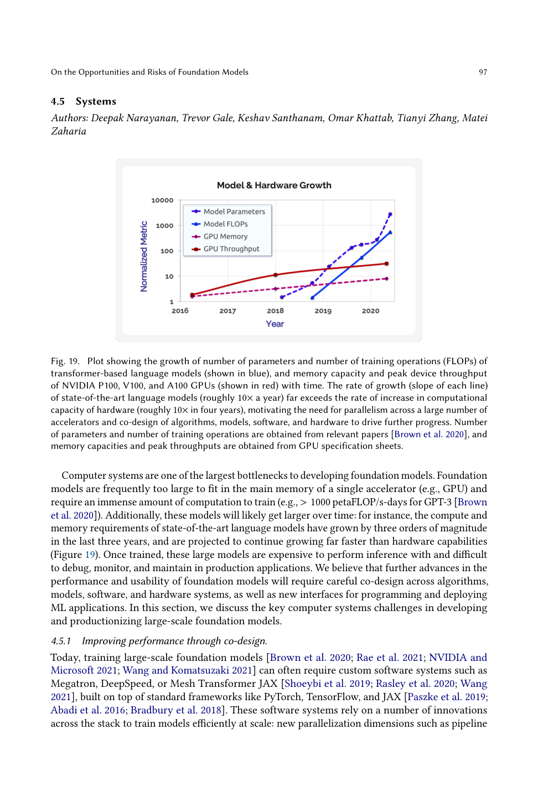
图 19： 蓝色表示基于变换器的语言模型参数数量和训练运算量（FLOPs）的增长，红色表示 NVIDIA P100、V100 和 A100 GPU 的内存容量与峰值设备吞吐量随时间的增长。最先进语言模型的增长速度约为每年 10 倍，而硬件计算能力约每四年增长 10 倍，因此需要大量加速器上的并行，以及算法、模型、软件和硬件的协同设计。
计算机系统是开发基础模型最大的瓶颈之一。基础模型通常无法装入单个加速器（如 GPU）的主存，训练还需要巨大计算量，例如 GPT-3 超过 1000 petaFLOP/s-day。近年最先进语言模型的计算和内存需求增长了三个数量级，并且预计仍将远快于硬件能力。训练后，大模型推理成本高昂，也难以在生产应用中调试、监控和维护。基础模型性能和可用性的进一步提升，需要算法、模型、软件、硬件的协同设计，以及用于编程和部署机器学习应用的新接口。
4.5.1 通过协同设计提高性能
训练大规模基础模型通常需要 Megatron、DeepSpeed 或 Mesh Transformer JAX 等定制软件系统，建立在 PyTorch、TensorFlow 和 JAX 等标准框架上 [Shoeybi 等，2019；Rasley 等，2020；Wang，2021；Paszke 等，2019；Abadi 等，2016；Bradbury 等，2018]。这些系统跨越整个技术栈采用多种创新：流水线并行限制通信并保持设备繁忙，状态切分优化器降低内存占用，即时编译器优化计算图，cuDNN 和 NCCL 等库优化底层操作 [Huang 等，2019；Narayanan 等，2019；Rajbhandari 等，2020；PyTorch，2021；NVIDIA，2021]。然而，扩展到更多 GPU 仍然困难：数据并行受批量大小限制，流水线并行受模型层数限制，张量模型并行受单服务器 GPU 数量限制。
硬件仍会带来性能提升，但大模型资源需求增长远超代际硬件改进 [Brown 等，2020]。为了实现模型容量下一次跃升并让更多人获得模型质量提升，训练算法、模型、软件和硬件的协同设计越来越重要，因为许多性能优化会改变训练计算的语义。低精度运算（如 fp16）可以提高吞吐量，却会影响优化数值；利用权重稀疏性可以只计算非零参数，从而加快训练和推理，但需要不同训练算法。其他协同设计还包括更适配硬件的架构、高效优化器、新词元化方案、专用硬件平台，以及放宽权重更新语义的分布式并行策略。
案例：高效知识表示。 检索式模型 REALM、RAG、ColBERT-QA 和 RETRO 采取了不同于单纯增加参数的设计 [Guu 等，2020；Lewis 等，2020b；Khattab 等，2020；Borgeaud 等，2021]。它们不把越来越多隐式知识直接写入拥有数十亿参数的深度网络，而是把知识存储在模型参数之外的文本段落中，再用稠密向量表示段落内容。模型利用可扩展的 top-k 搜索机制提取与输入相关的知识，同时保持深度网络较小。这既提高计算效率，也改善生产环境的可维护性：开发者只需替换文本段落，就能更新模型知识而无需重新训练大型网络。
4.5.2 自动优化
系统研究的另一项挑战，是自动组合跨越算法、模型、软件和硬件的优化。优化与并行策略的联合搜索空间呈组合增长，且彼此会以非平凡方式交互；在数千 GPU 规模上手动实验尤其昂贵。近期工作主要针对保持语义的优化，包括自动发现数学等价的计算图替换、通过高层 API 和低层编译器分布式执行算子图，以及自动选择混合分布策略 [Jia 等，2019a，b；Wang 等，2021c；Rasley 等，2020；Santhanam 等，2021]。这些系统已经帮助工业界部署许多基础模型。但当组合会改变语义时，自动优化更加困难，因为很难联合建模其统计影响，例如达到特定准确率需要多少训练迭代。未来需要新的软件工具、库和编译器，自动寻找针对达到准确率所需时间等综合指标的优化组合，并需要系统专家和机器学习专家紧密协作。
4.5.3 执行与编程模型
基础模型独特的多任务性质，提供了在大量应用之间摊销训练和推理成本的机会。适配意味着模型实例之间可以共享更多内容 [Raffel，2021]。例如，从同一预训练模型进行前缀微调的两个模型可以共享模型“主干”，减少存储占用，并让执行过程能够在多个模型之间共享和批处理 [Li 和 Liang，2021；Shen 等，2019；Narayanan 等，2018]。因此，具体适配机制会影响系统优化。
如何用编程接口声明多个适配模型来自同一预训练模型，或声明两个模型的部分组件共享参数，仍是开放问题。Ludwig 和 PyTorch Module 可以在单个模型内部组合功能，但目前没有系统支持跨模型依赖。允许用户提供这些注释，训练和推理系统就能更高效地优化和编排计算；模型的适配历史也有助于调试，例如适配模型的错误可能源于预训练模型，而不是适配过程。PyTorch 和 HuggingFace Transformers 等框架目前还不能指定完整模型实例之间的细粒度谱系信息。
维护数千个加速器组成的集群也需要巨大投入。Learning@Home 等新训练范式尝试利用互联网志愿计算协作训练基础模型 [Ryabinin 和 Gusev，2020；Diskin 等，2021]。这种执行模型可以降低单个实体的训练成本，但需要安全、分布式系统和众包等多个领域协作，分别处理恶意志愿者、志愿者退出导致的容错问题等。
4.5.4 基础模型的生产化
要实现基础模型潜力，必须解决资源密集模型生产部署的挑战，包括在严格延迟目标下进行推理，以及自动监控模型和数据。对成本和延迟要求严格的应用，可以使用蒸馏、量化、剪枝和稀疏化，把大模型转换为满足推理时要求的模型 [Hinton 等，2015；Polino 等，2018；LeCun 等，1990；Gale 等，2020]。这些技术最初用于低内存环境下的小模型，如手机中的 BERT-L；如今它们对于数据中心部署的超大规模基础模型也已必不可少。张量模型并行也可能降低推理延迟，并在多个 GPU 间提供额外内存以容纳模型参数。
基础模型和训练数据集的规模、复杂性增长，还给模型与数据生命周期管理带来新挑战。参数量巨大的模型难以人工检查，需要更好的自动数据整理和模型质量保证系统。行为测试和模型断言可以像单元测试一样帮助生产维护，提供运行时监控和持续改进机制，处理公平性和偏见问题并减少错误预测 [Ribeiro 等，2020；Kang 等，2020]。
4.6 数据
作者： Laurel Orr、Simran Arora、Karan Goel、Avanika Narayan、Michael Zhang、Christopher Ré
基础模型代表一种范式转变：为了提高适配性能，越来越大量的数据被“喂给”模型，通行经验是“数据越多越好” [Devlin 等，2019；Radford 等，2021；Tolstikhin 等，2021；Kaplan 等，2020]。这种数据整理重点带来了生命周期问题：（1）如何在如此大规模上管理数据；（2）如何整合新模态数据；（3）如何处理许可证和治理规则，尤其是基础模型使用大规模网络爬取数据时；（4）如何理解数据质量。
这些问题与数据管理、数据分析和工业机器学习流水线中的核心挑战相似。数据管理长期研究可扩展的声明式分析、版本、来源和整合系统；工业界也有管理多样许可证、降低数据违规风险的流水线；交互式数据分析和可视化研究则支持理解数据质量。虽然这些方案尚未完全为基础模型准备，我们仍应从它们汲取经验。
本节讨论基础模型数据生命周期管理。首先提出四项要求：大规模数据管理、支持异构数据源、数据治理和数据质量监控；随后设想把它们整合进称为“数据中心”的整体方案。数据中心是一套数据管理工具包，可供私营或公共部门交互式管理基础模型数据生命周期。
4.6.1 数据管理要求
当前基础模型开发从数据整理、数据文档到模型监控和修补，通常都采用临时方法 [Gebru 等，2018；Bandy 和 Vincent，2021；Bender 和 Friedman，2018]。数据管理研究表明，定义良好的平台可以通过数据摄取、版本管理、来源记录、高效分析和模型监控，支持大规模机器学习模型开发 [Hellerstein 和 Stonebraker，2005；Agrawal 等，2019；Vartak 等，2016；Ikeda 和 Widom，2010]。
（1）可扩展性。 基础模型使用的数据规模不断增长，WuDao 2.0 已在 4.9 TB 多模态数据上训练。随着模型主要使用公开数据，规模还会增加；与每天收集并用于工业流水线的数 PB 商业和个人数据相比，公开数据只是极小部分。因此需要能够处理多模态基础模型数据集的高度可扩展技术。
（2）数据整合。 整合结构化和非结构化数据，可以帮助模型更好泛化到稀有概念并改善事实知识召回 [Orr 等，2020；Logeswaran 等，2019；Zhang 等，2019a；Peters 等，2019；Poerner 等，2020]。但基础模型数据集整合仍然困难。未来需要把文本、视频、眼动数据和机器人模拟等多种模态整合到工业规模，并覆盖政府、商业和科学等领域。
（3）隐私与治理控制。 基础模型训练数据可能侵犯数据主体隐私：数据可能在未经同意，或超出原始同意情境的情况下被披露、收集或使用 [Jo 和 Gebru，2020]。网络抓取数据进一步放大了问题；网络数据的治理和版权仍存在法律疑问，公共和私人模型提供者使用网络数据的后果并不清楚。需要工具帮助提供者适应不断变化的法规和指南，实现安全、负责的数据管理。
（4）理解数据质量。 数据质量会影响模型表现 [Lee 等，2021b]，但系统、可扩展地理解训练数据和相关子集的工具仍处于早期。数据创建过程可能混乱，包含偏见、投毒、错误或重复信息 [Blodgett 等，2020；Bender 等，2021；Chang 等，2020；Carlini 和 Terzis，2021；Buchanan 等，2021]。数据还会持续更新，出现新实体、分布变化和概念含义变化 [Kiela 等，2021；Fetahu 等，2015；Chen 等，2021a；Kenter 等，2015；Lazaridou 等，2021]。部署后，模型可能在关键的细粒度子人群上表现出不良行为，提供者必须检测并缓解。因此需要能交互、迭代检测和修复不同类型不良数据的工具包。
4.6.2 数据中心方案
受到数据管理、数据科学和数据分析多年工作的启发，我们提出基础模型生命周期的数据管理方案“数据中心”。现有机器学习数据中心和传统数据管理系统，通常不能把数据整合作为一等原语，不能原生支持包含模型预测的端到端生命周期，也不能支持在访问控制下交互式整理和改进数据集。数据中心应满足四项要求。
数据规模。 数据中心需要存储并维护随时间变化的大型数据集，并提供可扩展接口查询、选择和过滤数据集；还应支持异构计算和云基础设施。
数据整合。 数据整合应是一等能力，支持跨模态、跨领域合并结构化和非结构化知识，并存储和查询异构数据集与来源。
访问控制。 数据中心应支持数据集说明书和数据声明等文档，让整理者记录流程，透明说明预期用途、潜在偏见和局限。平台需要规定上传数据必须提供的信息（如来源和描述）及建议提供的信息（如可用于哪些任务），并在数据集演化后更新文档。数据源通常附带许可证，平台必须整合不同法律条件；还要确保数据集不泄露个人可识别信息，匿名数据聚合不会重新识别个人，并且数据主体已知情同意传播数据。平台还应支持高效、安全维护和共享数据资源，识别许可证违规并降低治理违规影响。
数据质量工具。 当用户交互式选择、过滤和改进训练或适配数据时，数据中心需要工具快速理解当前数据集及其对模型行为的影响 [Hohman 等，2020]。平台还可以通过切片发现、相关子集验证和数据估值实现端到端模型监控 [Chung 等，2019；Goel 等，2021；Ribeiro 等，2020；Ghorbani 和 Zou，2019]。用户能够监控模型行为，尤其是稀有但关键子人群后，平台应提供纠正错误、维护模型的方法。模型修补仍是开放问题，但已有工作表明，可以通过数据工程修改数据而不是模型，纠正生产自监督系统的不良行为。数据中心还应支持用户注入定向数据修改，并建立共享指标和分析流水线的社群。
开放问题。 如何支持数据版本控制，既更新数据集又保留旧版本以保证可复现？如何在保护主体隐私的同时记录原始数据来源和谱系？公共部门由开放社群运营数据中心时，谁存储数据、谁支付计算、许可证违规由谁负责？什么数据统计量能提供足够文档且成本不过高？如何支持定向数据增强和数据编程？监控工具如何检测模型是否因动态评估数据上的性能下降而需要更新？数据中心方案仍不完整，但它为基础模型生命周期的数据挑战和改进数据管理提供了起点。
4.7 安全与隐私
作者： Florian Tramèr、Rohith Kuditipudi、Xuechen Li
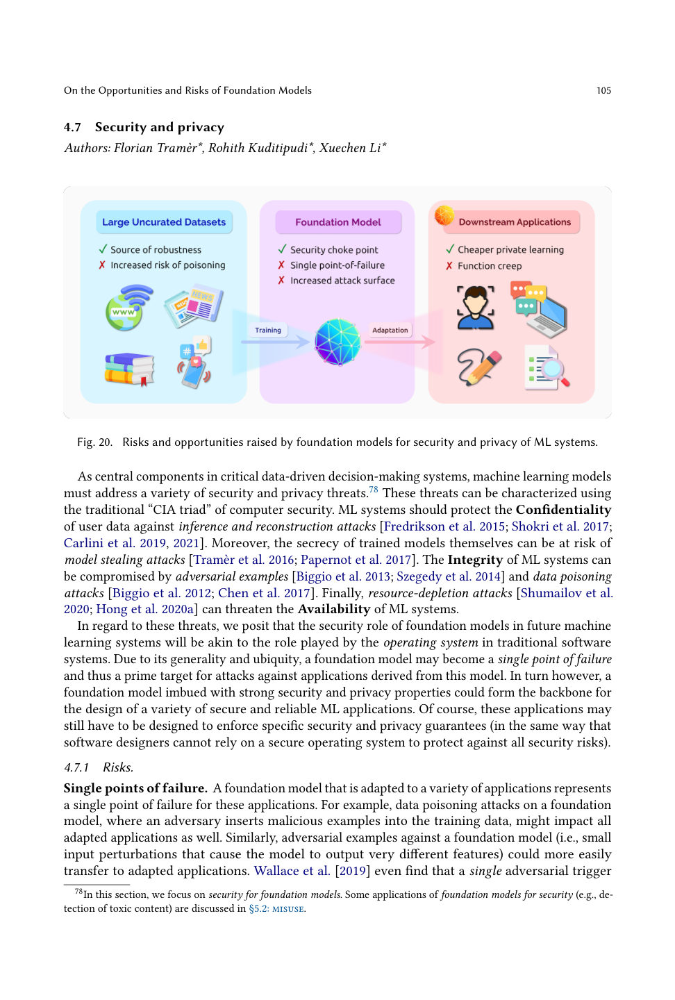
图 20： 基础模型给机器学习系统安全与隐私带来的风险和机会。
机器学习模型作为关键数据驱动决策系统的核心组件，必须应对多种安全和隐私威胁。这些威胁可以用计算机安全传统的“CIA 三元组”描述：系统应保护用户数据的机密性，抵御推断和重建攻击；训练模型本身的秘密也可能遭到模型窃取；系统完整性可能受到对抗样例和数据投毒破坏；资源耗尽攻击则威胁系统可用性。
基础模型在未来机器学习系统中的安全角色，可能类似操作系统在传统软件系统中的角色。由于通用且无处不在，它可能成为单点故障和攻击所有衍生应用的首要目标；反过来，具有强安全和隐私性质的基础模型也能成为多种安全、可靠应用的骨干。当然，具体应用仍需自行实施安全和隐私保证，就像软件设计者不能只依赖安全操作系统防范全部风险。
4.7.1 风险
单点故障。 适配到多种应用的基础模型，是这些应用共同的单点故障。攻击者把恶意样例插入基础模型训练数据，可能影响所有适配应用；针对基础模型的小输入扰动也可能更容易迁移到衍生应用。研究甚至发现，在任意输入中加入一个对抗触发器，就能让 GPT-2 等语言模型输出预定义文本 [Wallace 等，2019]。基础模型也可能成为数据隐私单点故障：如果模型在公司私有数据上预训练并记住部分数据，所有下游应用都有暴露数据的风险 [Carlini 等，2021]。
模型提供者还可能成为应用数据隐私的单一信任点。GPT-3 API 要求把用于微调或推理的潜在敏感数据上传到 OpenAI 服务器，如何避免这种信任集中是重要问题。如果基础模型参数公开，攻击者只需逆向相对于公开模型的“差量”，就更容易窃取适配应用。对提供者的拒绝服务攻击，也可能利用特殊高成本输入加剧。
数据投毒。 成功基础模型通常在从网络抓取、缺少整理的大型数据集上训练；宽松数据收集和缺少直接监督，使攻击者更容易向训练数据注入恶意内容。模型规模和准确率增长甚至可能放大投毒威力。代码补全系统只需在 GitHub 数据中注入少量恶意文件，就会建议不安全代码；针对 CLIP 式模型的定向攻击，只需修改 300 万个训练样例中的两个 [Schuster 等，2021；Carlini 和 Terzis，2021]。
功能蔓延与双重用途。 基础模型学习通用特征，可以轻松适配大量任务，但这种灵活性意味着模型可能超出原本预想的用途。CLIP 原本训练用于预测图文配对，却也学会丰富面部特征；即使其模型卡明确把人脸识别和监控列为范围之外，CLIP 仍然可以被重新用于这些任务 [Goh 等，2021；Radiya-Dixit 和 Tramèr，2021]。设计模型时很难限制，甚至难以预见所有恶意用途。
多模态不一致。 多模态性会扩大攻击面，让攻击者利用模态之间的不一致。著名例子是，CLIP 把贴有“iPod”字样的苹果识别成 iPod [Goh 等，2021]。当适配任务主要依赖一个模态时，这尤其危险：使用 CLIP 特征做人脸识别虽然是纯视觉任务，模型特征仍会受文字信号影响，攻击者可能穿印有文字的衣服逃避识别；自动驾驶系统也可能看到写着“绿色”的广告牌，误把它理解成绿灯。
4.7.2 机会
安全控制点。 适配应用能继承基础模型的漏洞，也能继承抵抗对抗样例或投毒攻击等安全性质。基础模型因此可以充当安全控制点：对对抗样例鲁棒的模型，在适配到其他任务后可能保留鲁棒性；能够防御投毒、模型窃取或资源耗尽攻击的提供者，也可以为客户应用提供相应保证。这与操作系统、数据库和浏览器等软件抽象层的安全取舍相似：抽象层服务许多应用，因此是首要攻击目标，但也能调动远多于单一应用的资源增强安全。
更便宜的隐私学习。 从公开网络汇集大量数据进行训练，可能违反用户对数据使用情境的隐私期待。去重或差分隐私预训练能减少模型记忆，但未必满足用户对文本数据的广泛隐私期望。另一方面，公开数据预训练也可能帮助处理稀缺敏感数据的应用。医疗任务如果从头训练差分隐私模型，需要大量敏感数据才能获得合理的隐私效用平衡；而在公开数据上预训练的基础模型，常常只需少量机密数据即可适配具体任务。
大规模对抗鲁棒性。 训练抵抗对抗样例的模型，可能比标准训练需要多得多的数据，但无标签数据或许足以弥合差距；模型规模和过参数化在某些情境下也可能是对抗鲁棒性的必要条件。基础模型在模型和数据规模上前所未有，特别适合推进这一方向。遗憾的是，当前基础模型对最坏情况对抗扰动的鲁棒性提升仍很小；但 CLIP 等多模态模型对非对抗分布变化出奇地鲁棒。分布鲁棒性是否能转化为对真实攻击的抵御能力，尤其是在攻击者查询和计算预算受限时，是一个重要开放问题。
4.8 对分布变化的鲁棒性
作者： Sang Michael Xie、Ananya Kumar、Rohan Taori、Tony Lee、Shiori Sagawa、Pang Wei Koh、Tatsunori Hashimoto
现实机器学习系统需要对分布变化鲁棒：测试分布不同于训练分布时仍应良好工作。资源不足国家的贫困测绘、自动驾驶和医学诊断等高风险应用，都要求模型泛化到训练数据中没有见过的国家、驾驶条件或医院。已有研究表明，即使最先进模型，在这些分布变化下也可能出现显著性能下降。
设基础模型在来自预训练分布的大型多样无标签数据集上训练，再适配到许多下游任务。对于每个任务，模型在领域内训练分布的带标签数据上适配，随后在分布外测试分布上评估。例如贫困预测模型可以先在全球无标签卫星数据上预训练，再用尼日利亚带标签样例微调，最后在标签稀缺的马拉维评估。
基础模型是提高鲁棒性特别有前景的方法。无标签数据预训练能够以通用方式提高分布外准确率，而许多鲁棒性干预只适用于狭窄变化类型。但基础模型并不总能缓解虚假相关或时间变化等分布变化。预训练得到的归纳偏置来自比下游训练数据更广泛的多样数据，有助于外推；同一归纳偏置也可能编码有害关联，在分布变化时造成表征和资源分配伤害。
4.8.1 优势
基础模型在大型多样训练分布上学习表征，可以提高适配衍生模型在下游分布外测试上的准确率。CLIP 在 ImageNet 上与标准 ResNet50 都达到 76% 准确率，但在 ImageNetV2 上高出 6%，在 ImageNet Sketch 上高出 35% [Radford 等，2021]。相比之下，对抗训练、不变风险最小化和简单增大模型等许多干预，在不知道具体分布变化时对有效鲁棒性帮助很小。大数据预训练还能够提高对常见图像破坏、标签变化和标签错误的鲁棒性，改善卫星图像的现实空间变化，以及自然语言理解中的主题变化；多语言训练还显著提高未见语言对上的表现。
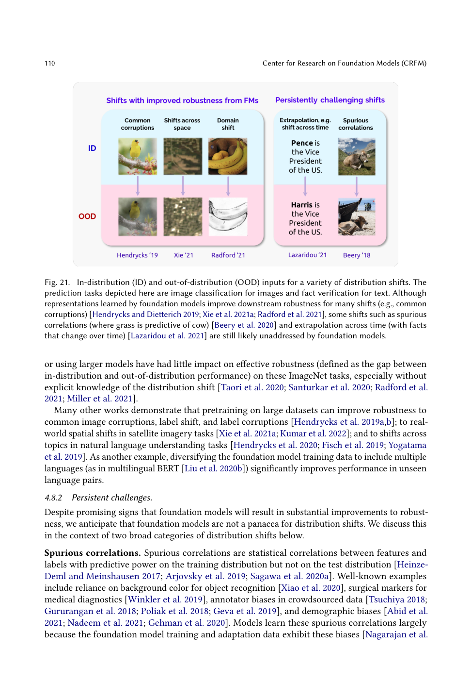
图 21： 多种分布变化中的领域内和分布外输入。图像任务是图像分类，文本任务是事实核验。基础模型表征能够提高许多变化上的下游鲁棒性，例如常见破坏；但虚假相关（草地被错误用来预测奶牛）和跨时间外推（事实随时间变化）仍可能无法解决。
4.8.2 持续存在的挑战
虚假相关。 虚假相关是特征与标签之间在训练分布上有预测力、在测试分布上却失效的统计相关 [Heinze-Deml 和 Meinshausen，2017；Arjovsky 等，2019；Sagawa 等，2020a]。例子包括对象识别依赖背景颜色、医学诊断依赖手术标记、众包数据中的标注者偏见和人口统计偏见。模型学习这些相关，主要因为预训练与适配数据本身包含偏见，简单增大模型无法解决。
基础模型可能缓解也可能加剧虚假相关，取决于具体下游任务以及它与训练数据、算法的关系。多样数据可能让模型看到反例，从而避免只存在于部分数据中的虚假相关；但模型也可能引入训练数据中的人口统计偏见，GPT-3 和其他自然语言模型就观察到这一问题。仅扩大训练规模不能识别哪些特征只在下游训练集有预测力、在测试集无效。未来需要理解并管理预训练归纳偏置，开发抵抗虚假相关的适配算法。
外推与时间漂移。 少样本和零样本能力意味着基础模型会越来越多地用于远离训练分布的场景，但外推能力存在极限。现有语言模型不重新训练就无法处理世界知识或语言变化；CLIP 在卫星图像领域的零样本迁移表现大幅下降；ImageNet 预训练也不能显著改善大模型在医学图像上的表现。不能假设基础模型会在某个模态内部自动外推，必须明确区分基础模型新实现的外推类型与仍然无法实现的类型。基础模型究竟对哪些分布变化有效，是鲁棒性研究的重大开放问题。
4.8.3 机会
理解基础模型表征。 当前鲁棒性研究主要是经验性的，我们很少理解提升背后的机制。一种假设是，预训练表征让领域内和分布外数据等不同领域彼此更接近，从而改善从带标签领域内数据到分布外数据的泛化。通过受控实验比较有无预训练时领域表征的距离，可以解释这一效应。对比学习的谱图分解等理论和归纳偏置研究提供了起点，但尚不能解释 GPT-3 和 image-GPT 等完全生成式模型。进一步理解这些偏置在分布变化下为何有用，可能形成更完整的基础模型鲁棒性理论。
训练中的数据增强。 训练时采用的统计偏置可能持续到适配阶段。许多自监督算法高度依赖数据增强选择，而不同增强会带来不同鲁棒性。例如，用旋转增强进行对比学习的视觉基础模型，可能提高要求旋转不变的下游任务分布外表现，却不能提高需要其他不变性的任务。需要研究哪些增强能在广泛下游任务中提高鲁棒性，包括从数据学习的增强和跨模态通用增强。
编码结构。 探索把已知结构和不变性编码进训练，是重要方向。现实任务常有额外元数据，例如贫困预测中的地理坐标和辅助卫星气候信息，可以为跨地理区域泛化提供结构。元数据可作为预训练目标提高分布外准确率；在语言中建模 HTML 标签也能提供接近下游任务的监督，支持新的提示形式并提高数据效率。利用元数据可能比手工增强更自动地确定应纳入的结构和不变性。
专门化与多样性。 训练数据选择会影响下游表现，多样数据并不总比专门数据更好。在卫星图像和专业文本等领域，在专门数据上继续预训练能显著改善下游表现。这形成张力：一方面希望使用大型多样数据以提高分布变化下的鲁棒性，另一方面又需要专门化以提高特定任务的领域内和分布外表现。理解专门化如何影响二者，能帮助设计更有效的训练集。
适配方法。 适配方法如何利用预训练信息也会影响鲁棒性。适配器、前缀和提示微调等轻量方法只优化少量参数并冻结基础模型，其分布外表现似乎更好。视觉研究也发现，冻结基础模型只训练输出头，有时比完整微调获得更好的分布外表现；完整微调可能扭曲预训练特征。但冻结参数为何改善分布外表现仍缺少一般解释。未来应研究领域适配、领域泛化和半监督学习等分布变化方法如何与基础模型适配交互，开发更能利用基础模型鲁棒性的适配方法。
4.9 人工智能安全与对齐
作者： Alex Tamkin、Geoff Keeling、Jack Ryan、Sydney von Arx
人工智能安全研究先进模型可能造成的事故、危害和风险，尤其是对社群或社会的大规模风险。当前基础模型可能距离造成此类风险尚远，但其能力和潜在应用范围令人瞩目，明显不同于以往机器学习范式。基础模型向通用性转变，为人工智能安全研究者提供了重新审视核心问题、评估其近期相关性的机会。
4.9.1 人工智能安全的传统问题
人工智能安全的重要分支研究先进系统的影响，包括在广泛认知任务上达到或超过人类表现的系统。核心目标是降低开发先进人工智能带来的大规模风险，尤其是全球灾难性风险，即影响全球或跨代、导致死亡或显著降低福利的风险，例如核战争或快速生态崩溃。人工智能安全研究要刻画先进人工智能可能造成哪些灾难性风险，并开发可行技术方案降低其概率或严重程度。理想结果是解决控制问题：既获得先进系统的计算收益，又保持足够控制，避免部署引发全球灾难。技术方案并不足够，还需要社会技术措施和制度，确保现实系统真正采用安全算法且不部署不安全系统。
过去十年，人工智能安全主要关注强化学习。关键难点是为人工智能指定和实现与人类价值一致的奖励函数，至少保证不会造成全球灾难。价值对齐看似简单，但人类价值多样、模糊且难以量化，因此系统可能通过“奖励黑客”找到意料之外的策略，最大化只是人类福祉代理的奖励，却因目标规定错误造成严重伤害。许多工作关注可纠正性，即系统运行后仍能纠正设计错误；但带有既定目标的强化学习代理可能阻止人类更改目标，因为更改目标不利于实现原目标。
纯强化学习不是先进人工智能的唯一路径。基础模型可以用下一个词元预测等简单自监督目标训练，却仍能以交互和目标导向方式使用，也可以进一步接受强化学习训练。通过扩大计算、参数和数据集，许多方法似乎会增强能力。基础模型情境下价值对齐和可纠正性的含义，与纯强化学习不同，因此必须重新严谨理论化。
4.9.2 当前基础模型与人工智能安全
强化学习风险往往来自为执行目标而优化的模型；近期基础模型的挑战在于，即使没有显式优化，目标导向行为也可能涌现。大型语言模型在包含说服性文本等目标导向语言使用的语料上训练，为了预测下一个词元，可能学会一般推理和论证能力。其他人类数据也会携带目标导向行为：模仿视频中人类的机器人，如果训练数据包含拳击比赛，可能尝试击打操作员。决策变换器等方法则直接训练目标导向代理，通过在轨迹前加入回报，再用高回报提示生成高回报轨迹；这会重新引出奖励黑客问题。
安全研究希望对代理行为获得原则性控制和解释，而不是依赖黑盒神经网络不可理解的决定。当前基础模型因此是有价值的研究对象，对齐它们可能成为对齐更先进模型的前置步骤。一个挑战是训练目标与期望行为不一致：语言模型训练为预测所有文档的下一个词，不论真假；用户却希望它只输出真实、有帮助的文字。可以用自然语言动作描述训练代理，使语言既能引导模型，也能让模型输出可理解的任务描述；但必须保证模型在现实中可靠、自洽，并形成机制层面的理解。即使自然语言控制改善了任务规定和监控，模型也可能从人类数据学到欺骗或其他不良行为，未来必须识别并消除这些行为。
新的训练范式可能产生能够在复杂环境完成广泛任务、在多个领域超过人类的目标导向基础模型，例如开放式自我博弈或大规模多任务单代理强化学习。如果多个代理在丰富世界模拟器中共同训练，欺骗、误导、伪装、说服和战略规划等技能可能涌现，使目标控制更加困难。如何评估和控制能力极强的模型，即可扩展监督或对齐，也仍不清楚。需要新的人在环训练、引导、监控和理解方法。
近期人工智能安全的重要问题，是刻画并预测当前自监督基础模型的能力。这很困难：通用性使模型能够以意外方式用于无数应用；能力会随规模以意外方式涌现，例如 GPT-3 的提示控制能力在 GPT-2 中只露出微弱迹象；即使在固定应用和规模下，能力也难以刻画，GPT-3 的加法能力会因为输入加入逗号而显著改善，提示小改动也会大幅改变表现。提示空间无法枚举，因此很难断言某项任务超出现有提示式基础模型能力，这也妨碍我们推理灾难性风险。
4.9.3 未来基础模型的潜在灾难性风险
灾难性鲁棒性失效。 模型面对新数据时可能以意外或有害方式行动。如果基础模型被集成到利用其快速适配能力的重要系统，失败后果尤其严重：战争系统可能意外发射武器并引发冲突；关键基础设施可能破坏能源或农业能力；模型若成为大量经济活动必需部分，意外失效可能导致生活水平骤降和政治不稳定。基础模型由同一个模型适配多种用途，因此统计关联导致的鲁棒性缺陷可能跨领域相关出现；同一模型进入多个关键功能后，缺陷可能同时穿透多个功能和故障保护机制。
错误规定的目标。 基础模型可能增加优化“容易规定但没有对齐”目标的风险，也就是古德哈特定律。当前推荐系统优化简单参与度，而不是社会与消费者福祉，可能造成极化和媒体成瘾。未来机构可能利用不可解释的基础模型最大化利润或国内生产总值等简单指标，因为模型能适配这些指标涉及的许多子问题。但大规模优化代理指标而不是全面的人类福祉目标，可能无意造成环境或地缘政治伤害。
4.9.4 结论
基础模型当前和未来可能出现的涌现性质，使其成为人工智能安全的重要研究对象。未来工作应刻画和预测基础模型的具体能力与风险，开发让模型与人类价值和期望目标对齐的新方法，并推动国家、研究机构和企业协调采取主动措施，降低显著风险。
4.10 理论
作者： Aditi Raghunathan、Sang Michael Xie、Ananya Kumar、Niladri Chatterji、Rohan Taori、Tatsunori Hashimoto、Tengyu Ma
严谨的数学理论在许多工程和科学学科中发挥着基础性作用，例如电气工程中的信息论。由于对基础模型开展实验需要付出巨大的计算成本，我们相信，基础模型理论在指导技术决策和创新方面会特别有价值。此外，理论洞见有助于阐明根本局限，并解释令人惊讶的经验现象。然而，尽管近期已经取得了许多进展 [Arora 等，2019b；HaoChen 等，2021a；Wei 等，2021、2020b；Zhang 和 Hashimoto，2021；Saunshi 等，2020b；Dao 等，2019；Tosh 等，2020、2021；Cai 等，2021；Lee 等，2020a；Zimmermann 等，2021；Bansal 等，2020；Wang 和 Isola，2020；Tsai 等，2020；Tian 等，2020a、b；Tripuraneni 等，2020；Du 等，2020]，研究界目前对基础模型的理论理解仍然有限。
深度神经网络构成了基础模型的骨干。即使在训练场景与测试场景服从同一分布、已经得到充分研究的监督学习设定中，围绕深度网络仍存在许多开放问题，例如如何理解非凸优化、优化器的隐式正则化效应以及表达能力。基础模型提出的问题远远超出了监督式深度学习设定。对基础模型进行理论分析的核心问题是：为什么在一个分布上使用可能是无监督或自监督的损失进行训练，会在不同的下游分布和任务上产生良好的适配性能。17
我们将讨论一种用于分析基础模型的直观模块化方法，它揭示监督学习与基础模型之间的联系；我们还会讨论具体而核心的技术问题，以及解决这些问题的一些有前景的理论工具。这些新的核心问题能够为基础模型提供有用洞见，并可与监督式深度学习理论并行研究。虽然我们重点分析下游性能，但所提出的模块化方法和工具也可能有助于分析其他值得关注的指标，例如对分布变化的鲁棒性（第 4.8 节）以及安全性（第 4.7 节）。
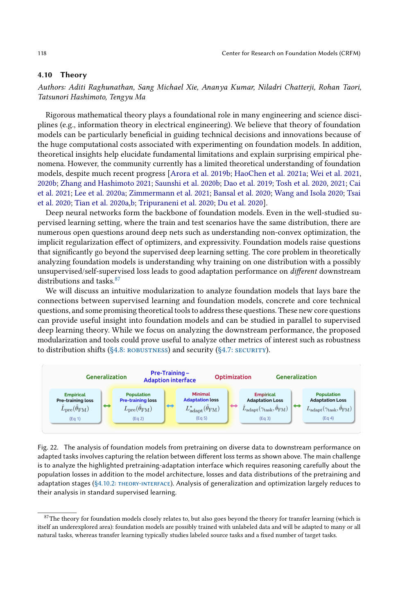
图 22： 分析基础模型从多样化数据上的预训练到适配任务上的下游性能，需要刻画上图所示不同损失项之间的关系。主要挑战是分析高亮显示的“预训练-适配接口”；除了预训练阶段和适配阶段的模型架构、损失及数据分布之外，这还要求仔细推理总体损失（第 4.10.2 节）。对泛化和优化的分析，在很大程度上可以归约为标准监督学习中的相应分析。
4.10.1 理论表述与模块化
回顾一下，基础模型先在大量原始数据上训练（第 4.2 节），再适配到具体任务（第 4.3 节），因此可以自然地分解为训练阶段和适配阶段。我们识别二者之间的接口，并将基础模型特有的部分与需要标准深度学习理论的部分解耦，使它们能够分别得到研究。我们引入一种模块化分析框架，近期工作也曾隐式或显式地采用这种框架，例如 Arora 等 [2019b]、HaoChen 等 [2021a]、Wei 等 [2020b] 和 Tripuraneni 等 [2020]。事实证明，这种模块化分析中的关键组成部分是“预训练-适配接口”。下面首先描述这种模块化方法，随后讨论我们为什么认为它有前景，最后说明它的一些局限。
我们会把训练阶段明确称为“预训练”，以便将它与适配阶段区分开来；适配阶段也可能涉及在某个特定任务的少量样本上进行训练。
预训练阶段。 基础模型的预训练通常涉及一个数据分布 $p_{\mathrm{pre}}$（例如自然文本的分布），以及一个预训练损失函数 $\ell_{\mathrm{pre}}(x;\theta)$；对于参数为 $\theta\in\Theta$ 的模型，这个函数衡量输入 $x$ 上的损失，例如 GPT-3 中的语言建模损失。用 $\hat p_{\mathrm{pre}}$ 表示从 $p_{\mathrm{pre}}$ 中独立抽取的大量样本所构成的经验分布。
预训练在 $\hat p_{\mathrm{pre}}$ 上最小化损失 $\ell_{\mathrm{pre}}$。我们把它称为经验预训练损失，并由此产生模型 $\hat\theta_{\mathrm{FM}}$：
我们把总体分布 $p_{\mathrm{pre}}$ 上相应的损失称为总体预训练损失，并将它视为一个核心概念：
基于优化的适配阶段。 我们把适配表述为一个依赖于 $\hat\theta_{\mathrm{FM}}$ 的一般约束优化问题，并对那些以优化某种损失函数为基础的适配方法进行抽象，其中包括微调和提示微调（例如参见 [Houlsby 等，2019；Li 和 Liang，2021；Lester 等，2021] 以及第 4.3 节）。
不同适配方法可能修改模型参数的不同子集，因此我们用某个 $\Gamma$ 表示适配后模型参数的空间。给定一个下游任务分布 $p_{\mathrm{task}}$（例如某个特定领域的问答），以及从 $p_{\mathrm{task}}$ 中抽取的少量经验样本 $\hat p_{\mathrm{task}}$，我们把适配阶段建模为：相对于适配参数 $\gamma\in\Gamma$，在 $\hat p_{\mathrm{task}}$ 上最小化某个适配损失 $\ell_{\mathrm{adapt}}$：
其中，$\hat L_{\mathrm{adapt}}(\gamma,\hat\theta_{\mathrm{FM}})\overset{\mathrm{def}}{=}\mathbb{E}_{x\sim\hat p_{\mathrm{task}}}[\ell_{\mathrm{adapt}}(x;\gamma,\hat\theta_{\mathrm{FM}})]$ 是经验适配损失，而 $C(\gamma,\hat\theta_{\mathrm{FM}})\le c_0$ 是一个可选约束，用于控制适配参数的复杂度；它既涵盖显式正则化，例如模型维数和范数，也涵盖适配过程中的隐式正则化。
下面列出几种常见适配方法，并说明相应的适配参数 $\gamma$ 和约束 $C(\gamma,\hat\theta_{\mathrm{FM}})\le c_0$。
- 线性探测： 在基础模型产生的表征之上训练一个线性分类器。这里，$\Gamma=\mathbb{R}^k$ 是作用于 $k$ 维表征的线性分类器集合，而 $C(\gamma,\hat\theta_{\mathrm{FM}})$ 可以是 $\gamma$ 的 $\ell_2$ 范数或 $\ell_1$ 范数。
- 微调： 从随机初始化出发，对一个线性头和其他全部参数 $\theta$ 优化若干步，其中 $\theta$ 的初始值取自 $\hat\theta_{\mathrm{FM}}$。这里，$\gamma$ 是 $\theta$ 与线性头的拼接。这种过程可能对应一种使 $\gamma$ 朝初始化参数 $\hat\theta_{\mathrm{FM}}$ 靠拢的隐式正则化，而 $C(\gamma,\hat\theta_{\mathrm{FM}})\le c_0$ 刻画了这种正则化。$C(\gamma,\hat\theta_{\mathrm{FM}})$ 的确切形式取决于所使用的优化算法；如何刻画优化的这种隐式正则化，是一个活跃的研究领域 [例如 Gunasekar 等，2017；Soudry 等，2018；Gunasekar 等，2018；Arora 等，2019a；Blanc 等，2019；Woodworth 等，2020；Wei 等，2020a；HaoChen 等，2021b；Damian 等，2021；Kumar 等，2022，以及其中引用的文献]。18
- 提示微调： 优化一小组连续的、任务特定的向量，并把它们添加到任务输入之前。这里，$\gamma$ 是通常维数较低的连续提示向量；我们还可以选择对 $\gamma$ 的范数施加约束。
一个明显的局限是，这种表述排除了上下文学习 [Brown 等，2020] 等适配方法，因为在其适配阶段并不存在“训练”，也就是不会最小化某个经验适配损失。我们将在第 4.10.3 节讨论这一局限和其他局限。
适配阶段的两个核心量是总体适配损失
以及最小适配损失
对模块化阶段分别进行分析。 标准监督学习的现有泛化理论，旨在证明 $\hat L_{\mathrm{pre}}\approx L_{\mathrm{pre}}$ 以及 $\hat L_{\mathrm{adapt}}\approx L_{\mathrm{adapt}}$。专门针对深度网络解决这些问题，仍是一个活跃研究领域。我们也可以利用标准学习理论中的分解方法，按照下面的方式，用超额泛化误差和最小适配损失来界定最终的下游任务损失：
其中，泛化误差刻画 $L_{\mathrm{adapt}}$ 与 $\hat L_{\mathrm{adapt}}$ 的接近程度。19 图 22 展示了这些关键量之间的分解和关系。如上所述，泛化箭头和优化箭头在很大程度上可以归约为监督学习设定下的深度学习理论。剩下的就是基础模型所面临的主要挑战：理解为什么较小的总体预训练损失，会使最小适配损失 $L^\star_{\mathrm{adapt}}(\hat\theta_{\mathrm{FM}})$ 也较小；第 4.10.2 节将研究这一问题。
Arora 等 [2019b] 的工作率先在对比学习情境中研究这一问题，用 $L_{\mathrm{pre}}(\hat\theta_{\mathrm{FM}})$ 对 $L^\star_{\mathrm{adapt}}(\hat\theta_{\mathrm{FM}})$ 给出上界；HaoChen 等 [2021a] 以及 Tosh 等 [2020、2021] 则放宽了数据假设。在这一框架下得到成功分析的其他预训练方法，包括使用语言模型进行预训练 [Wei 等，2021]、使用自监督进行预训练 [Lee 等，2020a]、使用自训练算法进行预训练 [Wei 等，2020b；Cai 等，2021]，以及使用多个监督任务进行预训练 [Tripuraneni 等，2020；Du 等，2020]；这些工作或显式或隐式地使用了这一框架。
4.10.2 为什么预训练-适配接口值得研究
如图 22 所示，标准监督学习理论之外缺失的主要环节是：
在什么条件下，较小的总体预训练损失 $L_{\mathrm{pre}}(\hat\theta_{\mathrm{FM}})$ 会意味着较小的最小适配损失 $L^\star_{\mathrm{adapt}}(\hat\theta_{\mathrm{FM}})$？为什么？
使这一接口成功的条件，可能取决于若干量，例如预训练分布与适配分布、预训练目标与适配目标、训练方法，以及模型架构。这个问题超出了标准泛化理论的范围，但正如下文所论证的那样，它确实把关注点缩小到少数几个基础模型特有的重要因素，并抓住了基础模型诸多重要开放问题的实质。
首先，这个接口处理的是与两个不同分布有关的总体量。因此，使接口成功的条件很可能涉及这些分布的特殊性质，例如预训练分布的多样性，以及预训练数据与适配数据之间的结构性变化。这使接口分析颇具挑战性，因为我们需要对两个分布之间的关系作出谨慎的建模假设；第 4.10.4 节会进一步讨论这一点。不过，这也带来一种可能：为分析此类接口而开发的工具和技术，或许能够帮助我们理解分布变化的影响，并预测基础模型何时能够提高鲁棒性。
其次，总体损失以及接口取得成功的条件可能都依赖于模型架构。这带来了打开神经网络黑箱的挑战。在某个特定分布上获得较小的预训练损失，能够告诉我们中间层具有什么性质？此类分析还会指导我们设计新的适配方法，更审慎地利用不同的中间表征。
再次，少样本学习或适配的样本效率，可以通过最小适配损失中对复杂度度量 $C(\gamma,\hat\theta_{\mathrm{FM}})\\lt c_0$ 的约束来刻画。我们需要从形式上刻画这些复杂度度量，例如理解适配过程的隐式正则化效应；还要进一步理解，为什么较小的总体预训练损失会意味着低复杂度的适配参数 $\gamma_{\mathrm{task}}$。若能令人满意地回答这个问题，我们很可能就能提高下游适配的样本效率。
最后，也是非常重要的一点，接口的关键组成部分包括预训练损失和适配损失的选择。我们希望理解，怎样以最佳方式结合预训练目标与适配目标，才能实现成功适配。最能保证成功适配的预训练目标，可能不同于预训练过程中显式最小化的目标；上述接口允许在预训练分布上使用任意替代总体目标。此外，如果新的替代目标能够从理论上保证在一系列广泛任务上实现良好适配，它们就可能揭示基础模型取得成功的根本原因。
总而言之，这个接口暂时排除了泛化问题，使我们能够对预训练阶段和适配阶段若干重要量之间的相互作用进行形式化推理，并能以重要方式指导实践。
4.10.3 挑战：分析上下文学习和其他涌现行为
GPT-3 [Brown 等，2020] 展示了上下文学习的强大能力；这种适配方法不需要进行任何参数优化。在适配阶段，经过预训练的语言基础模型会接收一个提示，也就是把任务中的多个输入-输出示例拼接起来的一串词元；提示后面再接一个测试样例，模型只需以此前看过的序列，也就是提示加测试样例，为条件，就能生成测试样例的标签。换言之，这里既没有显式训练，也没有改变模型参数。模型仅仅把不同示例作为输入执行，究竟通过什么机制从这些示例中“学习”？前述模块化方法无法直接适用，因为适配期间没有得到新的模型参数；我们只是让基础模型在经过结构化设计的输入上运行，从而利用它的生成能力。
不过，把无限数据下的预训练与有限数据下的预训练分离开来的思想仍然可能有用。例如，近期一项工作从无限预训练数据和充分模型表达能力的假设出发，研究上下文学习 [Xie 等，2021c]。这些假设把上下文学习的刻画归约为：分析在上下文学习提示条件之下的预训练分布；这些提示来自与预训练数据不同的分布。具体而言，Xie 等 [2021c] 提出，上下文学习涌现于预训练分布中的长期连贯结构；他们使用一个具有连贯结构的潜变量生成模型描述这一分布。更广泛地说，本节提出的模块化方法虽为获得有关基础模型的实用理论洞见提供了良好框架，但上下文学习这类涌现行为以及尚待发现的其他能力，也可能要求我们超越这种模块化方法，例如打开架构的黑箱。
4.10.4 挑战：恰当的数据假设和数学工具
理解预训练阶段与适配阶段之间的接口，需要比传统监督学习更仔细地研究数据分布，因为预训练分布与任务适配分布在本质上并不相同。按照定义，基础模型在通常极其多样且不针对特定任务的原始数据上训练，而适配数据则高度依赖具体任务。同样，上下文学习之所以涌现，是因为模型学会了生成看起来像预训练分布的数据；因此，理解上下文学习需要仔细地对预训练数据建模。回答围绕基础模型的核心问题，需要既现实、可解释，又适于分析的假设。近期工作要么假设总体数据具备某些性质，例如 HaoChen 等 [2021a] 和 Wei 等 [2020b] 中的扩展性质；要么假设总体数据由具有某种结构的潜变量模型生成 [Saunshi 等，2020a；Wei 等，2021；Arora 等，2016；Lee 等，2020a；Zhang 和 Hashimoto，2020；Tosh 等，2021]。
我们普遍缺乏把基础模型性质与总体数据分布中的结构关联起来的数学工具。HaoChen 等 [2021a] 应用谱图理论，利用总体分布中的类内连通性。对于潜变量模型，可以通过概率推导和解析推导对 $\hat\theta_{\mathrm{FM}}$ 作出更精确的刻画，但到目前为止，这种方法只适用于相对简单的模型。如果能有更系统、更通用的数学工具来解决这一问题，整个研究界都将显著受益。
定义简单的玩具情形也非常理想，理论研究者可以据此精确比较各种工具和分析方法的长处。例如，HaoChen 等 [2021a] 和 Wei 等 [2020b] 考察了流形混合问题，它可能成为视觉应用的良好简化测试平台。对于自然语言处理这类离散领域，我们需要更多有意义的测试平台。我们相信，建立能够捕捉真实数据集相关性质、同时又可处理的理论模型，是把基础模型置于坚实理论基础之上的关键一步。
4.11 可解释性
作者： John Hewitt、Armin W. Thomas、Pratyusha Kalluri、Rodrigo Castellon、Christopher D. Manning
与大多数其他机器学习模型相比，基础模型的特征是训练数据量和复杂度大幅增加，以及未曾预料的能力不断涌现：基础模型能够执行未曾预见的任务，也会用未曾预见的方式执行这些任务。因此，基础模型日益广泛的采用，既让人们越来越希望并要求理解其行为，也带来了前所未有的理解难题。
与任务特定模型不同，基础模型在规模庞大、通常高度异质的数据集上训练，这些数据集可能跨越许多领域和模态（参见第 4.2 节）。通过这种训练，基础模型学会了极其广泛的行为；它们可以适配到不同类型的下游任务，并表现出每项任务特有的行为，证明这些行为在任务和领域之间可能有根本差异（参见第 4.3 节）。以 GPT-3 为例，它被训练成一个巨型模型，任务只是预测文本中的下一个词。这个学习任务非常具体，也容易定义；然而，把它与包含各种互联网文本的庞大训练数据集结合起来，却使 GPT-3 获得了远超人们通常会与下一个词预测联系起来的能力。结果是，只需提供几个训练样例，GPT-3 现在就能适配出明显超出原始训练任务范围的行为，例如简单算术和计算机编程。这说明，即使是关于基础模型看似最简单的问题，也很难回答：它具有什么能力？
此外，这些多样化能力在多大程度上依赖不同或共享的模型机制，也仍是一个开放问题；这些机制就像模型内部的算法构件。一方面，可以把基础模型解释为单一模型，它利用某组可泛化的模型机制，在不同任务和领域中取得良好表现。在这种情况下，只要识别并刻画这些机制，就能充分理解模型行为。另一方面，基础模型能够为不同任务适配出截然不同的行为，这也意味着可以把它理解为一大组彼此独立的专家模型，每个模型都为某项具体任务量身定制。例如，GPT-3 用来执行算术的模型参数，似乎不大可能与它用来把英语翻译成法语的参数有多少关系。在这种情况下，对模型在一项任务中的行为作出的解释，不一定能说明模型在其他任务中的行为。我们把它称为基础模型的“一个模型-多个模型”性质（参见图 23），并主张：要理解基础模型的行为，核心在于弄清它在一个模型与多个模型之间的这条谱系上处于何处。
为了使这一研究领域系统化，我们提出并讨论理解基础模型的三个层次 [受到 Marr，1982 的启发]。首先讨论理解模型能够做什么时面临的挑战与机遇；随后讨论它为什么输出某些行为；最后讨论它如何做到。具体而言，“什么”这一层的问题，旨在不查看模型内部的情况下刻画模型能够执行的行为类型；“为什么”这一层的问题，旨在用数据中的潜在原因来解释模型行为；“如何”这一层的问题，则旨在理解产生这些行为的内部模型表征和机制。介绍完这三个层次之后，我们将以基础模型不可解释与可解释可能造成的后果结束本节。
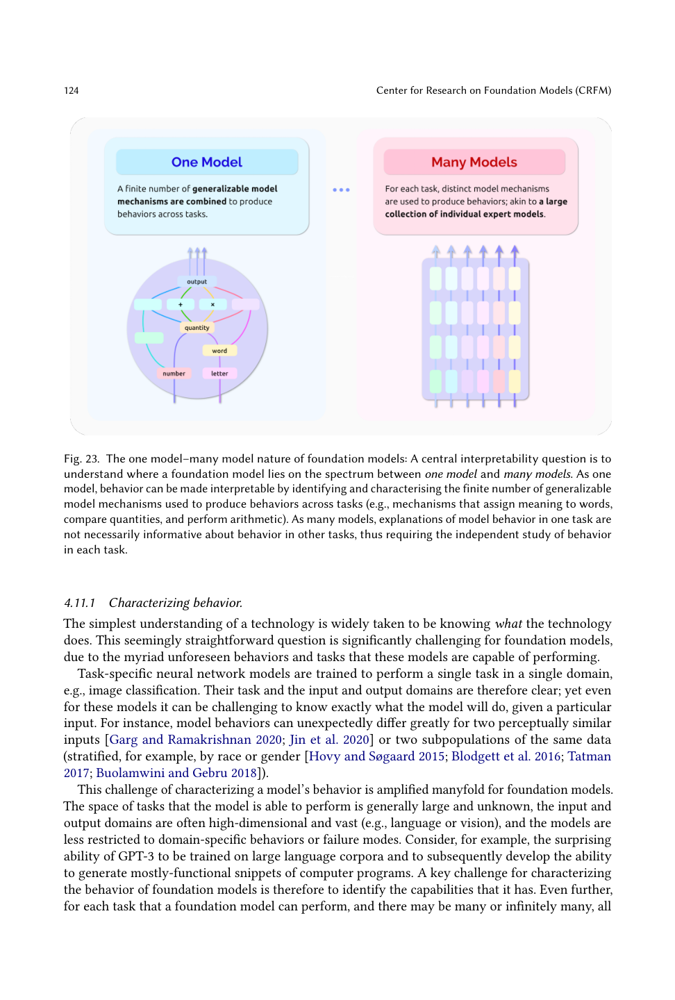
图 23： 基础模型的“一个模型-多个模型”性质。可解释性的一个核心问题，是理解基础模型在一个模型与多个模型之间的谱系上处于何处。作为一个模型，我们可以识别并刻画跨任务产生行为的有限数量可泛化模型机制，从而使其行为变得可解释，例如赋予词语含义、比较数量和执行算术的机制。作为多个模型，对一项任务中模型行为的解释不一定能说明它在其他任务中的行为，因此必须分别研究每项任务中的行为。
4.11.1 刻画行为
人们普遍认为，对一项技术最基本的理解，就是知道这项技术会做什么。对于基础模型，这个看似直截了当的问题却极具挑战性，因为这些模型能够执行大量未曾预见的行为和任务。
任务特定神经网络模型经过训练，在单一领域中执行一项任务，例如图像分类。因此，它们的任务以及输入和输出领域都很明确；但即使对于这些模型，在给定某个特定输入时，也可能很难确切知道模型会做什么。例如，对于两个在感知上相似的输入 [Garg 和 Ramakrishnan，2020；Jin 等，2020]，或者同一数据中的两个亚群体，例如按照种族或性别划分的亚群体 [Hovy 和 Søgaard，2015；Blodgett 等，2016；Tatman，2017；Buolamwini 和 Gebru，2018]，模型行为可能出人意料地表现出很大差异。
对于基础模型，刻画模型行为的挑战会被放大许多倍。模型能够执行的任务空间通常既庞大又未知；输入和输出领域往往维数很高、范围极广，例如语言或视觉；而且模型较少受到领域特定行为或失效模式的限制。以 GPT-3 令人惊讶的能力为例：它在大型语言语料库上训练后，竟然获得了生成基本可用的计算机程序片段的能力。因此，刻画基础模型行为的一项关键挑战，就是识别它具有什么能力。更进一步，对于基础模型能够执行的每项任务，而这样的任务可能很多，甚至可能无限多，我们在试图理解简单得多的任务特定模型行为时所面临的一切挑战，仍然全部存在。
基础模型的“一个模型-多个模型”性质，使刻画它能够执行的每项“任务”变得更加复杂（参见图 23）。仍以 GPT-3 为例，研究表明，只需简单提示，就能把它调整到许多任务上（参见第 4.3 节）。然而，每项任务都可以用许多不同提示来指定；提示中的细微变化，可能导致模型行为发生实质变化。例如，电影评论的情感分类任务，可以在给出电影评论后接上“她对这部影片的感受是……”来指定，也可以接上“我对这部电影的总体感觉是……”来指定。尽管这些提示看起来提出了密切相关的任务，GPT-3 对每个提示作答的准确率却不同 [Zhao 等，2021]。此类观察提出了一些关于提示特征与所得模型行为之间关系的重要问题。具体而言：对于看似相似的提示，显著不同的响应真的可以被视为来自同一个模型吗，还是说它们来自高度不同的模型机制？在一项任务中刻画基础模型或其适配衍生模型的行为，真的有助于刻画这个模型其他可能适配形式的行为吗？
为了识别基础模型具备和缺失的能力，研究人员可以使用受控评估。领域专家设计已知需要某种特定能力的提示，再研究模型正确响应这些提示的能力 [Papadimitriou 和 Jurafsky，2020；Lu 等，2021a；Kataoka 等，2020；Wu 等，2021c；Xie 等，2021a；Koh 等，2021]。例如，心理语言学家设计了这样的提示：要求语言模型在一个语法正确的句子，与同一句话的某个含有特定语法错误的版本之间作出选择。如果知道模型是否始终偏好语法正确的句子，而非含有语法错误的对应句子，我们就能判断模型是否具备识别这种错误所需的特定语法能力 [Linzen 等，2016]。
基础模型可能具备的能力范围极其广泛，而目前我们没有任何通用方法，可以预先判断某个基础模型是否会具备某项能力，因此这种定制评估至关重要。它们让我们能够探索基础模型可以表现出的行为范围，同时只要求最低限度的模型访问权限：我们只需提供输入并接收模型输出，无需访问模型实现或模型参数。基础模型可能有能力或没有能力执行无限多种值得追求和不应出现的任务、子任务和行为，因此刻画模型行为与能力会变得越来越困难，也越来越重要。我们认为，不能只依赖少数专家提出并测试可能出现的行为，而必须把这类分析扩展到更多行为；实现这一点的部分方式，是向不同社群和多个学科的专家开放这条探索路径，并提高这些评估的可访问性和规模。
4.11.2 解释行为
除了刻画基础模型正在做什么，还可以尝试用数据中的潜在原因来解释这些行为，从而刻画模型为什么会表现出某些行为。当前的解释方法能够揭示输入中哪些性质会影响模型响应；不过，它们通常需要完整访问模型，而且在阐明模型用于响应众多输入、任务和领域的任何一般机制方面，能力通常有限。
当前的解释方法通常可以理解为独立模型；它们旨在解释另一个黑箱模型的特定行为。重要的是，这些方法独立于被分析行为的模型，而后者本身并不可解释。这种分离可能引发问题，因为所提供的解释可能缺乏忠实性 [Jacovi 和 Goldberg，2020]，无法可靠说明行为的原因，甚至会造成误导 [另见 Rudin，2019]。更进一步，不可靠的解释会诱使人类更加信任不可靠的模型，否则人们本不会给予如此高的信任；关于人工智能中信任问题的详细讨论，参见 Jacovi 等 [2021]。随着我们从任务特定模型转向广泛采用基础模型，这类担忧会不断加剧，因为后者的行为复杂得多。
当前解释方法大致可以分成两类：提供模型行为的局部解释，或者提供全局解释 [Doshi-Velez 和 Kim，2017]。局部解释试图解释模型对某个具体输入的响应，例如为每个输入特征分配其与该行为的相关程度，或者识别与该行为最相关的训练样本 [Simonyan 等，2013；Bach 等，2015；Sundararajan 等，2017；Shrikumar 等，2017；Springenberg 等，2014；Zeiler 和 Fergus，2014；Lundberg 和 Lee，2017；Zintgraf 等，2017；Fong 和 Vedaldi，2017；Koh 和 Liang，2017]。相较之下，全局解释不与某个具体输入绑定，而是试图发现数据整体中哪些性质会影响模型行为，例如合成模型与某种行为关联最强的输入 [Simonyan 等，2013；Nguyen 等，2016]。
局部解释和全局解释已经为任务特定模型的行为提供了有用洞见 [例如 Li 等，2015；Wang 等，2015b；Lapuschkin 等，2019；Thomas 等，2019；Poplin 等，2018]。在这些研究中，所得解释往往被视为产生某种行为的模型机制之启发式线索。例如，当模型读取手写数字“7”时，如果我们看到某种解释把很高的重要性归于水平线条，就很容易产生一种印象：水平线条是模型用来识别所有数字 7 的普遍重要特征，甚至可能是用来区分所有数字的重要特征。
然而，考虑到基础模型的“一个模型-多个模型”性质，我们不应轻率地从某项行为的具体解释，跳到关于模型行为的一般假设。当前解释方法或许能揭示具体行为，例如识别数据中强烈影响这些行为的部分，但由此产生的解释不一定能说明模型对其他输入的行为，即使那些输入看似相似，更不用说其他任务和领域了。
另一种方法，是利用基础模型的生成能力形成自我解释，从而完全绕开这种事后解释 [另见 Elton，2020；Chen 等，2018]；也就是训练模型不仅生成对输入的响应，还要同时生成一份人类可理解的响应解释。尽管尚不清楚这种方法未来是否会取得成效，我们仍有理由持怀疑态度：语言模型，以及如今的基础模型，尤其擅长生成流畅、看似可信，却没有任何事实依据的内容。简单的自生成“解释”也可能如此。因此，务必明辨模型生成听起来可信的解释之能力，与模型提供其行为真实洞见之能力之间的差别。
4.11.3 刻画模型机制
人们通常认为，对系统的深入理解意味着理解系统如何运行：它包含哪些知识和机制？这些知识和机制如何组装成整体？
如果这确实可能做到，那么，刻画基础模型内部的表征以及作用于这些表征的机制，将成为满足人们彻底理解这些日益扩散的模型之愿望的核心。不论这些机制数量众多且彼此专门化，还是数量较少但能够泛化，它们都是基础模型在不同任务和领域采用广泛行为的能力核心。
为了具体说明模型表征与机制的概念，不妨考察 GPT-3 表现出的一种简单行为：人们很快就观察到，先向 GPT-3 提供若干小数相加的样例，再要求它计算两个新数字之和时，它会以很高概率预测出正确的加法结果 [Branwen，2020；Brockman，2020]。当我们追问 GPT-3 为什么这样做时，可以在输入中寻找证据，例如提示中哪些方面高度影响了响应，虽然这些方面可能是要相加的两个数字，也可能并不是；也可以在 GPT-3 的训练数据中寻找影响响应的部分，虽然它们可能是加法样例，也可能并不是。如果深入模型内部，我们或许能够更深刻地理解 GPT-3 用来计算某一对具体数字之和的机制，以及它用来计算任意其他数字对之和的机制。我们还可以更深入地理解，这些机制究竟类似于数学上的“加法”概念，还是仅仅与这个概念相关。
通过理解单个模型机制，我们可以逐步建立起对基础模型复杂行为的组合式理解。比数字加法稍微复杂一些的任务，是求解数学文字题；在这类问题中，数字带有单位，题目则以自然语言呈现。一旦理解模型执行加法所用的一个或多个机制，就能研究模型在求解文字题时是否把这一机制用作中间步骤。如果模型确实使用加法机制，我们就增进了对它如何求解文字题的理解，更有把握相信基础模型泛化了数量和加法的概念，而不是另一个相关关系或启发式规则；此外，我们也更有把握预测模型的“为什么”，也就是它关注输入的哪些部分，以及输出的“什么”，也就是两个数字的加法。如果没有使用加法机制，我们就可以合理地怀疑这是否真是加法，并进一步研究模型转而使用了哪些表征和机制。
必须认识到，模型还可能存在许多更复杂、更令人担忧的机制，例如根据姓名中的字符或图像中的像素估计种族。在基础模型中确立存在并使用此类机制的证据，可以支持这样一种道德或法律责任：禁止把该模型用于预测性警务、营销、贷款申请以及广义的监控等任务。
为了研究神经网络模型的这些内部方面，已经出现了大量方法。这些方法通常把模型分解为节点，例如神经元、层或层的组成部分，再考察节点所捕获的表征，或者节点组装起来的机制。一些方法由假设驱动：先假设某些节点可能捕获某种信息，例如一个词的语法特征或一个人的种族，再探测全部节点，量化它们使多少这种信息变得可用 [Alain 和 Bengio，2016；Veldhoen 等，2016；Belinkov 等，2017；Adi 等，2017；Conneau 等，2018；Hewitt 和 Liang，2019；Hewitt 和 Manning，2019；Voita 和 Titov，2020；Pimentel 等，2020]。另一些方法建立在解释方法之上，但它们不去识别哪些数据导致某项行为，而是试图识别哪些数据导致某个节点激活，或者哪些节点导致模型后部的另一个节点激活，进而发现模型表征与机制的集合 [Olah 等，2020；Mu 和 Andreas，2020；Carter 等，2019；Goh 等，2021]。
综合起来，这些方法检查模型内部，为持续探索基础模型行为奠定了基础。然而，基础模型内部可能存在的表征和机制数量极其庞大；鉴于它们具有“一个模型-多个模型”的性质，情况尤其如此，而这类方法通常只能捕捉模型内部的一小部分。因此，怎样扩展对表征和机制的发现，并阐明其中与模型行为最相关或最具一般性的表征和机制，仍是一个开放挑战。与解释基础模型的许多方法一样，如果能吸纳并支持更多样化、跨学科的研究者，并发展更易访问、更灵活、更可扩展的发现方法，这类探索将会从中受益。
总而言之，我们认为，基础模型的“一个模型-多个模型”性质（回顾图 23），为当前可解释性研究带来了新的机遇和挑战：同一个基础模型有许多适配形式，而我们根本不知道它们在多大程度上共享共同机制。在机制共享的范围内，理解基础模型或许是一个可以处理的问题，只需刻画这些机制以及它们之间的关系。在机制彼此独立的范围内，基础模型的每一种适配形式都必须得到独立分析；这样一来，基础模型任何新适配形式的性质都会带来极大的不确定性。
4.11.4 不可解释性与可解释性的影响
最后，我们希望强调，广泛采用基础模型，与许多跨学科研究者近期提出的一项呼吁相矛盾：不要把复杂的黑箱模型用于高风险决策 [例如 Rudin，2019]，而应专注于长期以来对内在更具可解释性的模型进行开发和应用。
在这些呼吁之中，以解释基础模型为目标的工作是一把双刃剑。大型机器学习模型，以及如今的基础模型，最常由拥有强大权力的公司和机构部署；可解释性方面的渐进式进展可能被夸大，用来进行“伦理漂洗”，让人们像模型已经实现可解释性那样继续使用它们，从而掩盖一个事实：这些模型仍远远低于传统算法可解释性标准。此外，如果可解释性方法通常预设研究者可以轻易访问模型及其实现和参数，那么可解释性不仅可能为强势机构提供掩护，还可能把模型知识集中到同一批人手中。致力于基础模型可解释性的人有责任不断追问：自己的工作是在让基础模型对研究人员和模型所有者可解释，还是在让它们对所有人可解释？
与此同时，既然基础模型已经在一定程度上得到部署，可解释性工作也带来独特机会，可以把关于基础模型的知识，乃至权力，交还给数据被收集和被评估的人。解释有助于发现模型中具有社会重要性的方面。更进一步，如果开发出任何人都能使用的方法，让所有人都可以解释基础模型行为，就能把权力转移给不同群体，使他们有机会调查模型、发现模型中对个人或社群重要的方面，并有机会就基础模型的使用给予有意义的同意、推动改进，或者完全提出异议。最后，研究人员不应只把基础模型的可解释性视为一个目标，还应把它视为一个问题：研究可以探索和评估，基础模型缺乏可解释性是否是内在属性，是否应当对此深入研究并广泛告知公众，把它视为阻止人们使用这些系统或加强监管的严重问题；或者，未来的基础模型是否有可能为所有人维持高标准的可解释性。
5 社会
基础模型的社会影响既包括构建模型本身的影响，也包括模型在开发应用时发挥作用所产生的影响，这些都需要得到仔细审视。具体而言，我们预计基础模型会带来影响范围广泛、难以理解的社会后果：基础模型是一种中间资产，它不会被直接部署，而是作为基础接受进一步适配。因此，以传统方式推理技术社会影响可能会变得更加复杂；对于用途规定明确的系统，其社会影响更容易把握，尽管仍然困难。本章讨论，我们可以怎样应对并开始理解基础模型社会影响的复杂性。具体而言，我们讨论：（1）与不平等（第 5.1 节）和滥用（第 5.2 节）有关的伤害；（2）对经济（第 5.5 节）和环境（第 5.3 节）的影响；（3）与法律（第 5.4 节）和伦理（第 5.6 节）有关的更广泛考量。
5.1 不平等与公平
作者： Rishi Bommasani、Fereshte Khani、Esin Durmus、Faisal Ladhak、Dan Jurafsky
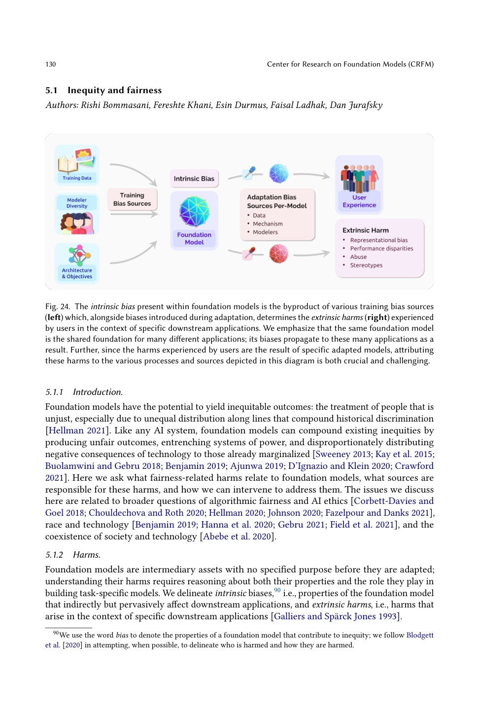
图 24： 基础模型中存在的内在偏差，是多种训练偏差来源（左侧）共同作用的副产品；它与适配期间引入的偏差一起，决定用户在具体下游应用情境中遭受的外在伤害（右侧）。我们强调，同一个基础模型会成为许多不同应用共享的基础，因此其偏差会传播到众多应用。此外，由于用户遭受的伤害来自具体的适配后模型，把这些伤害归因于图中所示的不同过程和来源，既至关重要，也极具挑战性。
5.1.1 引言
基础模型可能产生不平等结果：人们受到不公正待遇，特别是由于差别待遇沿着会加剧历史歧视的界线分配不均 [Hellman，2021]。与任何人工智能系统一样，基础模型可能通过产生不公平结果、巩固权力体系，以及让本已处于边缘地位的人不成比例地承受技术的负面后果，进一步加剧现有不平等 [Sweeney，2013；Kay 等，2015；Buolamwini 和 Gebru，2018；Benjamin，2019；Ajunwa，2019；D'Ignazio 和 Klein，2020；Crawford，2021]。这里我们提出三个问题：哪些与公平有关的伤害和基础模型相关？哪些来源应为这些伤害负责？我们可以怎样干预并解决这些伤害？这里讨论的问题，与算法公平和人工智能伦理 [Corbett-Davies 和 Goel，2018；Chouldechova 和 Roth，2020；Hellman，2020；Johnson，2020；Fazelpour 和 Danks，2021]、种族与技术 [Benjamin，2019；Hanna 等，2020；Gebru，2021；Field 等，2021]，以及社会与技术共存 [Abebe 等，2020] 等更广泛的问题有关。
5.1.2 伤害
基础模型是中间资产，在适配之前没有规定明确的用途；要理解其伤害，既要推理它们自身的性质，也要推理它们在构建任务特定模型时发挥的作用。我们区分内在偏差20与外在伤害：内在偏差是基础模型中间接但普遍影响下游应用的性质；外在伤害则是在具体下游应用情境中产生的伤害 [Galliers 和 Spärck Jones，1993]。
内在偏差。 基础模型的性质可能在下游系统中造成伤害。因此，可以直接在基础模型内部测量这些内在偏差，尽管只有当基础模型经过适配并随后得到应用时，伤害本身才会实现；换言之，它们是潜在偏差或潜在伤害 [DeCamp 和 Lindvall，2020]。我们重点讨论研究最为广泛的一类内在偏差，即表征偏差，具体考察错误表征、表征不足和过度表征。人可能被恶意刻板印象 [Bolukbasi 等，2016；Caliskan 等，2017；Abid 等，2021；Nadeem 等，2021；Gehman 等，2020] 或负面态度 [Hutchinson 等，2020] 错误表征；这些内容会通过下游模型传播，进一步强化社会中的错误表征 [Noble，2018；Benjamin，2019]。人也可能未得到充分表征，甚至被彻底抹除；例如，如果训练数据排除了 LGBTQ+ 身份词语 [Strengers 等，2020；Oliva 等，2021；Tomasev 等，2021]，或描述非裔美国人的数据 [Buolamwini 和 Gebru，2018；Koenecke 等，2020；Blodgett 和 O'Connor，2017]，下游模型在测试时就难以处理类似数据。人还可能被过度表征；例如，BERT 似乎默认编码了一种以英语世界为中心的视角 [Zhou 等，2021a]，这会放大多数群体的声音，促成观点同质化 [Creel 和 Hellman，2021] 或单一文化 [Kleinberg 和 Raghavan，2021]（第 5.6 节）。
这些表征偏差与所有人工智能系统有关，但在基础模型范式中，其重要性大为增加。同一个基础模型会成为无数应用的基础，因此，对人的表征偏差会传播到许多应用和场景。此外，与通常追求轻量化的适配相比，基础模型承担了大部分繁重工作，因此我们预计，人们实际遭受的许多伤害将在很大程度上由基础模型的内部性质决定。
外在伤害。 用户可能因适配基础模型所创建的下游应用而遭受具体伤害。这些可能是表征伤害 [Barocas 等，2017；Crawford，2017；Blodgett 等，2020]，例如信息检索系统生成的黑人女性色情化描述 [Noble，2018]、机器翻译系统默认使用男性代词而对人的性别作出错误判断 [Schiebinger，2013、2014]，或者生成恶意刻板印象 [Nozza 等，2021；Sheng 等，2019；Abid 等，2021]。这些伤害还可能表现为虐待，例如基于基础模型的对话代理用有害内容 [Dinan 等，2021；Gehman 等，2020] 或微侵犯 [Breitfeller 等，2019；Jurgens 等，2019] 攻击用户。所有这些面向用户的行为，都可能造成心理伤害，或强化恶意刻板印象 [Spencer 等，2016；Williams，2020]。
除了个人遭受的伤害，群体或亚群体也可能遭受群体层面的性能差异等伤害。例如，系统可能无法良好处理非裔美国人英语的文本或语音 [Blodgett 和 O'Connor，2017；Koenecke 等，2020]；可能从临床记录中错误检测少数种族、性别和保险状态群体的医疗状况 [Zhang 等，2020b]；也可能无法检测肤色较深者的面孔 [Wilson 等，2019；Buolamwini 和 Gebru，2018]。随着基础模型得到更加普遍的应用，包括在高风险领域中应用，这些差异可能进一步演变成更严重的伤害。
Koenecke 等 [2020] 讨论了这样一种情形：如果非裔美国人英语使用者无法可靠使用语音识别技术，例如因为底层基础模型存在不平等，他们就可能无法受益于某些衍生产品，例如语音助手和辅助技术；如果这些技术用于就业面试或庭审记录，他们还会处于不利地位。更广泛地说，要刻画这些群体层面的伤害，并努力为受伤害者争取正义，人工智能研究界还需要增进对群体偏见 [Allport，1954] 和社会群体的理解。我们提示读者关注社会科学和其他研究社群的相关工作，包括：超越对性别的二元处理 [Lindsey，2015；Westbrook 和 Saperstein，2015；Richards 等，2017；Darwin，2017；Keyes，2018；Hyde 等，2019；Cao 和 Daumé III，2020；Dinan 等，2020]；对种族作出更细致的处理 [例如 Penner 和 Saperstein，2008；Freeman 等，2011；Saperstein 和 Penner，2012；Saperstein 等，2013；Penner 和 Saperstein，2015；Field 等，2021]；更好地处理交叉身份 [例如 Crenshaw，1989；Nash，2008；Gines，2011；Penner 和 Saperstein，2013；Ghavami 和 Peplau，2013；Bright 等，2016；Buolamwini 和 Gebru，2018；May 等，2019；O'Connor 等，2019；Guo 和 Caliskan，2021]；以及更现代地处理残障问题 [例如 Batterbury，2012；Spiel 等，2019；Hutchinson 等，2020]。
其他考量。 为了更完整地理解基础模型的伤害，我们需要进一步记录内在偏差与外在伤害；未来工作还应明确二者之间的关系 [Blodgett 等，2020、2021；Goldfarb-Tarrant 等，2021]。此类记录工作必须把学界和产业从业者之外的利益相关者置于中心：基础模型造成的不平等影响，主要将由少数群体承受，而这些群体在学界和产业界都未得到充分代表。具体到基础模型，其创建和研究很可能由拥有所需访问权限与资源的人开展，这进一步凸显出为边缘化群体声音提供中心位置的平台之重要性 [D'Ignazio 和 Klein，2020；第 5.6 节]。
特别是，对具体适配后模型开展用户研究，再把不同应用中的结果汇总起来，可以令人信服地、个体化地记录基础模型内在偏差造成的伤害，同时始终把个体用户置于中心。我们设想，人机交互方法只需作出一些调整，以容纳基础模型涉及的抽象，就能帮助我们把边缘化社群的声音置于中心；进一步讨论见第 2.5 节。
5.1.3 来源
为了完整刻画并适当干预基础模型造成的伤害，我们必须能够追溯其来源，既要追溯到基础模型的性质和适配过程，还要进一步分解各种偏差来源各自发挥的作用 [Friedman 和 Nissenbaum，1996]。来源追踪对于归属实际伤害的伦理和法律责任至关重要，不过，可靠归属将需要新的技术研究，把因果性 [Pearl，2000] 和影响力 [Koh 和 Liang，2017] 等问题放在前景位置。
数据。 多种数据决定基于基础模型的应用行为及相应外在伤害，包括用于训练基础模型的训练数据、用于适配基础模型的适配数据，以及测试时的用户数据和交互。对于所有这些数据来源，数据本身的性质，例如有害内容和仇恨言论 [Henderson 等，2017]、辱骂性语言 [Waseem 等，2017]、微侵犯 [Breitfeller 等，2019] 与刻板印象 [Voigt 等，2018]，都会体现在基础模型及其适配衍生模型的偏差中。21 训练数据是决定基础模型及相关内在偏差的关键数据来源，因此这里重点讨论训练数据。
目前，训练数据及其相关数据实践，例如数据整理、数据选择与数据加权 [Paullada 等，2020；Bender 等，2021；Rogers，2021]，同基础模型获得的内在偏差之间究竟有何关系，仍不清楚；未来工作亟须澄清这一关系。基础模型通常需要规模极大的训练数据，这不仅明显不利于记录数据 [Bender 等，2021]，也不利于通过全面科学探索说明数据偏差与模型偏差之间的关系；我们预计，需要建立新的规范来应对这种规模。像准确率指标的缩放定律 [Kaplan 等，2020；Henighan 等，2020] 那样建立偏差缩放定律，或许能让我们在较小规模上开展系统研究，以指导较大规模的数据实践。
建模。 建模决策，例如训练目标（第 4.2 节）、模型架构（第 4.1 节）与适配方法（第 4.3 节），会影响基础模型及其衍生模型中的偏差，进而影响人们实际遭受的外在伤害。已有工作证明，基础模型会放大训练数据偏差，延续机器学习和深度学习模型中出现的趋势 [Zhao 等，2017；Wang 等，2019d；Jia 等，2020；Hashimoto 等，2018]；然而，模型的哪些性质以及这些性质如何造成偏差放大，仍有许多问题不清楚。此外，考虑到直接应用基础模型可能因其规模而不可行，对模型进行压缩或提高效率的努力，似乎也会放大偏差 [Hooker 等，2020；Renduchintala 等，2021]。
反馈循环还可能加剧这种放大：基础模型改变社会行为并诱发社会学变化，这些变化再改变后续训练数据；在其他机器学习应用中，这类反馈效应往往会加剧不平等 [Lum 和 Isaac，2016；Ensign 等，2018；Hashimoto 等，2018]。除了训练和应用基础模型时作出的显式决策，社群价值观 [Birhane 等，2020] 和规范（第 5.6 节）也会间接、隐式地塑造模型构建决策 [Liu 等，2021b]。因此，在介绍基础模型的工作中 [例如 Brown 等，2020] 以及标准基准中 [Friedman 和 Nissenbaum，1996；第 4.4 节] 测量偏差，同时对不同用户群体开展用户研究，记录他们实际遭受的伤害，是确保最佳实践主动强调偏差和不平等问题的步骤。
建模者。 与所有算法系统一样，如果开发或应用基础模型的决策机构未能充分代表利益相关者和边缘化社群、缺乏多样性，这本身就存在问题，也可能让这些社群遭受更大伤害。22 虽然这一点很难记录，现有基础模型开发工作仍表明存在这种可能：Caswell 等 [2021] 证明，用来训练多语言模型的多语言数据集没有妥善处理代表性较低的语言；Hutchinson 等 [2020] 则证明，模型往往包含对残障人士的不良偏差。在这两种情况下，如果开发团队更充分地代表这些群体，相关偏差和伤害或许能够更早被发现。此外，终端用户可能比开发人员更加多样，也可能更早发现这些问题，因此，让用户反馈参与基础模型设计是未来的一个重要方向（第 2.5 节）。
5.1.4 干预与补救
要解决、减轻和纠正技术带来的不平等，必须整合社会方法与技术方法 [Abebe 等，2020]。具体到基础模型，我们既考察主动方法，也考察被动方法：前者改变模型开发和部署方式，以预防性地减少伤害；后者则在伤害出现后作出响应，并为未来作出改变。基础模型的抽象从根本上使这两方面都变得复杂：要知道基础模型层面的干预是否成功减少了伤害，需要在具体部署应用层面进行下游观察；而在伤害出现后寻求补救，又需要把反馈和问责向上传递给基础模型提供者。
干预。 支配技术系统干预的一般原则同样适用于基础模型：识别哪些来源对偏差或伤害负有最大责任，可以为有针对性的行动提供必要证据。例如，许多人呼吁提高设计、生产和控制技术及其应用的团队多样性，基础模型也包括在内 [Longino，1990；Harding，2015；Nielsen 等，2017；O'Connor 等，2019；Hofstra 等，2020；Katell 等，2020]；如果能够证明缺乏多样性与伤害有关 [Caswell 等，2021]，这些呼吁就会变得更加迫切。同样，透明记录 [例如 Gebru 等，2018；Bender 和 Friedman，2018；Mitchell 等，2019] 与审计 [例如 Raji 和 Buolamwini，2019] 对于提供干预和变革的动力也至关重要 [Burrell，2016；Lipton，2018；Creel，2020；Raji 等，2020；Wilson 等，2021]。基础模型的规模及其访问方式的特殊性，为现有记录与审计规范带来了新的挑战；第 5.6 节将进一步讨论。
到目前为止，为减少技术造成的不平等影响而考虑的许多干预措施，包括基础模型范式中的措施，都是技术性缓解方法。这些方法关注相关数据，以免反映不平等或偏差；也关注建模决策，以免放大数据偏差。在基础模型范式中，特别重要的一点，是认识到这些缓解方法可能针对流水线的不同步骤，例如训练数据 [例如 Lu 等，2020]、建模目标 [例如 Zhao 等，2018]，以及适配方法和测试时使用 [例如 Park 等，2018；Zhao 等，2019]。因此，不同方法不但效果可能有所差异，还可能要求不同实体采取行动，例如基础模型提供者或应用开发者；而且它们可能以不同程度影响这些模型高成本的训练过程，例如改变基础模型的创建过程，或者在事后修改模型。
这类技术干预还可能针对不同目标：有些干预，例如改变训练数据，旨在减少内在偏差；另一方面，算法与机器学习公平领域的大多数缓解工作，则考虑从模型行为角度减少结果差异，也就是减少与外在伤害更直接相关的下游系统输出差异。目前，各种形式的技术缓解都受到严重限制：测量或对抗内在偏差的方法可能脆弱或无效 [Gonen 和 Goldberg，2019；Ethayarajh 等，2019；Bommasani 等，2020；Zhou 等，2021b；Antoniak 和 Mimno，2021]；测量或对抗外在结果差异的方法可能与利益相关者的目标不一致 [Saha 等，2020]；还有一些证据表明，某些类型的技术干预可能无法同时满足 [Corbett-Davies 和 Goel，2018；Kleinberg 等，2017]、根本不可能实现 [Lechner 等，2021]，甚至可能加剧不平等 [Xu 等，2021]。
尽管现状如此，我们仍然相信，技术方法会在解决基础模型范式中出现的伤害时发挥重要作用；一般而言，我们主张保持透明，特别是因为技术缓解方法可能无法实现预期目标。更广泛地说，关于偏差与偏差缓解的主张必须谨慎提出，向专业知识不同的各类利益相关者明确传达现状，例如在基础模型之上构建应用的开发者，以及监管这项技术的政策制定者 [Nissim 等，2020]。
补救。 遗憾的是，主动干预不大可能彻底解决基础模型可能造成的所有潜在伤害或不平等。伤害出现时，目前没有得到广泛采用或由法律要求的框架，来确定受害方应当获得何种适当补救。某些具体应用或许已有相应规范，但基础模型的抽象再次造成脱节：伤害可能部分归因于基础模型提供者，也可能部分归因于下游应用开发者，但在双方之间分配责任仍然十分困难。更简单地说，我们甚至没有建立起向基础模型提供者传达这些伤害的机制，即使反馈或投诉已经提交给应用开发者。
因此，我们需要制定新的规范与标准：应用开发者和终端用户的反馈应怎样向上传递给基础模型提供者；怎样确定应对这些伤害负责的实体，例如基础模型提供者或应用开发者；这些责任与法律责任有何关系（第 5.4 节）。为了推动这一问题取得进展，我们鼓励未来工作参考其他领域使用的实践，特别是那些具有类似抽象和多实体结构的领域。我们预计，建立的任何标准都可能需要具备相当的动态性，才能与这些模型及其应用迅速变化的现状保持同步。
5.1.5 要点
机器学习造成不平等影响的记录由来已久，而伤害的大部分负担都由边缘化社群承受。基础模型为这种权衡引入了新的挑战；但归根结底，要让其社会影响实现公平，就需要开展大量研究并作出重大改变，以理解它们造成的伤害，并切实处理和纠正这些伤害：
- 基础模型具有一对多性质，也就是少数几个相同的基础模型会在许多应用中使用；这意味着基础模型的内在性质会渗透到大量下游应用。因此，这些模型中的恶意偏差会对实际伤害产生远超比例的影响。
- 基础模型范式中的偏差和伤害来自许多来源，例如训练数据和适配数据、建模决策和适配决策、建模者的多样性以及社群价值观。归属偏差和伤害的来源，是讨论干预和责任的基础；要可靠完成这种归属，需要开展新的技术研究。
- 基础模型的不平等并非不可避免，但解决这些问题需要采用多管齐下的方法，其中既包括主动干预，例如以数据和模型为中心的改变，也包括被动补救，例如反馈和问责机制。
5.2 滥用
作者： Antoine Bosselut、Shelby Grossman、Ben Newman
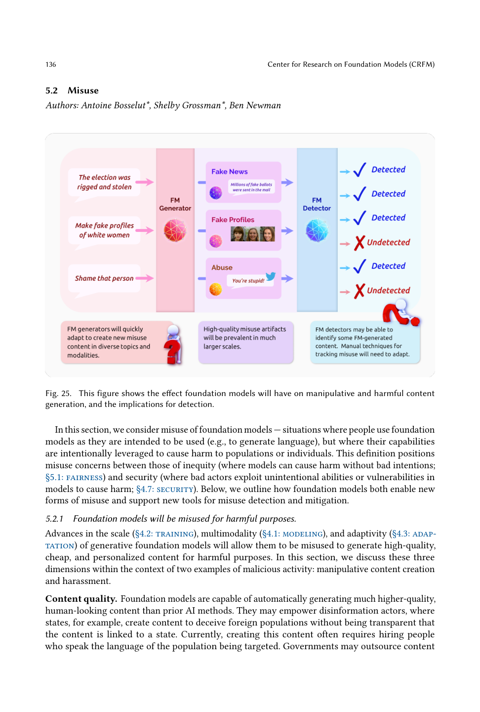
图 25： 基础模型将影响操纵性和有害内容的生成，以及由此对检测工作产生的影响。
本节考察基础模型的滥用，也就是人们按照基础模型原本预期的方式使用它，例如生成语言，却故意利用其能力伤害某些群体或个人的情形。这一定义把滥用问题置于不平等和安全问题之间：在不平等问题中，即使没有恶意，模型也可能造成伤害（第 5.1 节）；在安全问题中，恶意行为者则利用模型无意具备的能力或漏洞造成伤害（第 4.7 节）。下面我们概述，基础模型如何既促成新的滥用形式，也支持用于检测和缓解滥用的新工具。
5.2.1 基础模型将被滥用于有害目的
生成式基础模型在规模（第 4.2 节）、多模态性（第 4.1 节）和适应性（第 4.3 节）上的进步，会使人们能够滥用它们，以低成本生成高质量、个性化的内容，从事有害活动。本节在两类恶意活动的情境中讨论这三个维度：生成操纵性内容和骚扰。
内容质量。 与以往的人工智能方法相比，基础模型能够自动生成质量高得多、看起来像人类创作的内容。它们可能赋能虚假信息行为者；例如，国家可以制造内容欺骗外国民众，却不透明披露内容与某个国家有关。目前，制造这种内容往往需要雇用会说目标群体语言的人。政府可能把内容生产外包给目标国家的母语者，2324 但这一决定会给行动安全带来真实风险。基础模型将能够为各种语言生成往往无法与人类创作内容区分的内容 [Kreps 等，2020；Clark 等，2021]，从而同时实现两个目标：生成能与目标群体产生共鸣的内容，并维持行动安全。
除了欺骗外国民众，基础模型生成高质量合成图像，也就是深度伪造，或文本的能力，还可能被滥用于骚扰个人。深度伪造已经被用于骚扰。例如，印度调查记者 Rana Ayyub 曾遭到一段高质量深度伪造视频攻击，其中她的面孔被叠加到色情视频上，导致她退出公众生活长达数月。25 由于基础模型通常具有多模态性（第 4.1 节），它们也能模仿语音、动作或文字，并可能被滥用于羞辱、恐吓和勒索受害者。26
内容创作成本。 基础模型会大幅降低内容创作成本，进一步降低恶意行为者发动有害攻击的准入门槛 [Brundage 等，2018]。2017 年一项源自俄罗斯、以美国人为目标的影响行动，预算为 1220 万美元 [DiResta 等，2018]。最近，俄罗斯的一些个人在一次虚假信息活动中，按每篇 75 至 200 美元的价格雇用美国自由撰稿人。27 基础模型会降低这些边际成本。GPT-3 等基础模型在生成内容时可能犯错 [Buchanan 等，2021]，但雇用少数编辑修正错误，要比直接雇用内容创作者更可行。训练基础模型的前期成本高得多（第 4.5 节），但大多数国家行为者应当有能力承担这些费用 [Buchanan 等，2021]。
除了金钱成本，使用基础模型获得高质量结果所需的技术技能也更少。视频编辑软件等现有工具能够生成可信的照片或视频深度伪造，但熟练用户必须投入数小时才能得到优质内容。基础模型降低了这道使用门槛：它们的少样本适配能力（第 4.3 节）为应用用户带来新的交互模式（第 2.5 节），让用户能够迅速迭代内容创作。
个性化。 基础模型会减少创建个性化内容的障碍。例如，2016 年俄罗斯个人以美国为目标散布的虚假信息，就包含高度定制的内容。社交媒体帖子经过精心设计，向“黑人的命也是命”活动人士传播关于叙利亚的叙事 [DiResta 等，2018]，例如主张美国应该退出叙利亚、把注意力放在美国黑人社群面临的问题上，而不是叙利亚问题上。同样的叙事经过重新包装，又被用来与得克萨斯独立主义者产生共鸣 [DiResta 等，2021]。这种内容创作工作成本高昂，耗费时间。由于适配成本很低（第 4.3 节），基础模型将使类似活动能够大规模开展。
基础模型不仅让行为者可以为利基受众定制内容，还让行为者能够定制内容，针对某一个人；骚扰者可能滥用这种能力。如果基础模型以个人属性或信息为生成条件，就能创建逼真的个性化内容；这可能使受害者更加难堪、面临更大危险，28 并提高勒索得逞的概率。
5.2.2 基础模型将成为有害内容的强大检测器
基础模型的生成能力会带来大量滥用机会，但同样的能力也可能使它们成为强大的有害内容检测器。虽然这些能力对于检测人类生成和模型生成的内容同样重要，本节重点讨论模型生成内容的检测。首先，我们概述当前人工检测方法在发现基础模型的有害滥用时将面临哪些挑战。随后，我们提出基础模型的交互式多模态表征能力，可能怎样使其成为自动检测有害内容的强大工具。最后，我们讨论为了打击基础模型的潜在滥用，在在线场景部署自动检测模型所带来的风险。
重新思考人工干预。 目前，恶意行为经常由人类在互联网上搜索内容来源时揭露；在社交媒体上，相关内容有时还会被移除。29 例如，虚假社交媒体账号通常会盗用约会网站上的个人资料照片，而通过反向图像搜索可以发现这些照片。同样，虚假信息网站经常用剽窃内容掩盖欺骗性内容 [DiResta 和 Grossman，2019]，通过互联网短语搜索就能轻易识别。基础模型会限制这些检测策略的有效性。复杂程度相对较低的虚假信息活动已经开始利用人工智能生成的照片，30 以免被反向图像搜索发现。已经有工具可以评估这些照片是否由人工智能生成，但基础模型会让这项工作变得更加复杂；对于文本和视频也是如此，并会挑战人工发现技术 [Ippolito 等，2020；Clark 等，2021]。
把基础模型用作检测器。 基础模型善于生成创意内容的能力，也可能使它们善于检测模型生成的内容。现有工作证明，基础模型可以适配为文本生成器所产虚假信息的检测器 [Zellers 等，2019b]；文本生成器会生成具有统计性的人造痕迹 [Holtzman 等，2020]。基础模型还可以通过提示问题，评估自身生成内容的有害程度 [Schick 等，2021]。下面说明，未来基础模型将怎样促成更强大的机器生成有害内容检测系统。
基础模型交互式多模态接口的改进，会为加强检测基础模型滥用于生成有害内容提供新机会。当前的统计检测器必须重新训练并重新部署，才能整合关于滥用策略文本内容的新知识 [Dinan 等，2019]。基础模型的快速学习能力（第 4.3 节），可能使它们能够从人类反馈中适配到基础模型最初未经训练识别的新滥用策略 [Lee 等，2021a]。
与此同时，基础模型的多模态能力，可以更加充分地表征滥用生态系统。以往工作研究了虚假信息如何比真实内容更快地在社交网络中传播 [Starbird 等，2018；Vosoughi 等，2018]；回顾分析时，这会产生可识别的特征模式。基础模型的多模态能力，或许能让模型联合学习有害内容的表征，以及它通常在社交网络上的传播特征模式。这些联合表征可能成为强大工具，用来预测某些类型的自动生成内容是否表明存在滥用行为。
把基础模型用作自动检测器的风险。 对模型生成和人类生成有害内容的自动检测系统不断改进，会让这类系统在网络上更加普遍，也会带来潜在负面后果。任何检测系统都会产生误报，把人类生成的无害内容标记为有害 [Sap 等，2019；Xu 等，2021]。算法误报影响用户或用户群体的频率，可能造成下游伤害（第 5.1 节）。基础模型的适应能力应能使系统性误报更容易解决，因为可以在局部编辑模型，重新分类这些样例（第 4.3 节）。不过，边缘情形很可能无法得到优先处理，在这些情形下寻求补救也会十分困难。
更广泛地说，大规模部署滥用检测系统，可能在有害内容生成者与检测器之间引发一场“军备竞赛”。大多数使用基础模型的内容生成者没有资源自行开发基础模型，而会使用大型实体部署的系统。使用条款政策应当列出这些系统的可接受用途（第 5.6 节）；基础模型部署者也需要内部检测系统，识别对其产品的滥用，31 并缓解这些行为（第 5.4 节）。不过，有资源自行开发基于基础模型的内容生成器的滥用行为者，会受到更少控制，这会给平台带来压力，要求它们管理通过自身分发渠道共享的内容。
乐观地说，内容平台中包括一些世界上资本最为雄厚的公司。它们的资源可能使其开发出能力超过大多数个体滥用行为者的检测器。因为反复进行大规模系统训练的成本很高，这种资源优势可能降低个人开发基础模型的意愿。然而，即使没有最大规模基础模型作为支撑，许多基础模型滥用行为仍可能得逞；攻击者尤其可能利用基础模型的交互能力，迅速生成能够逃避检测的内容。
5.3 环境
作者： Peter Henderson、Lauren Gillespie、Dan Jurafsky
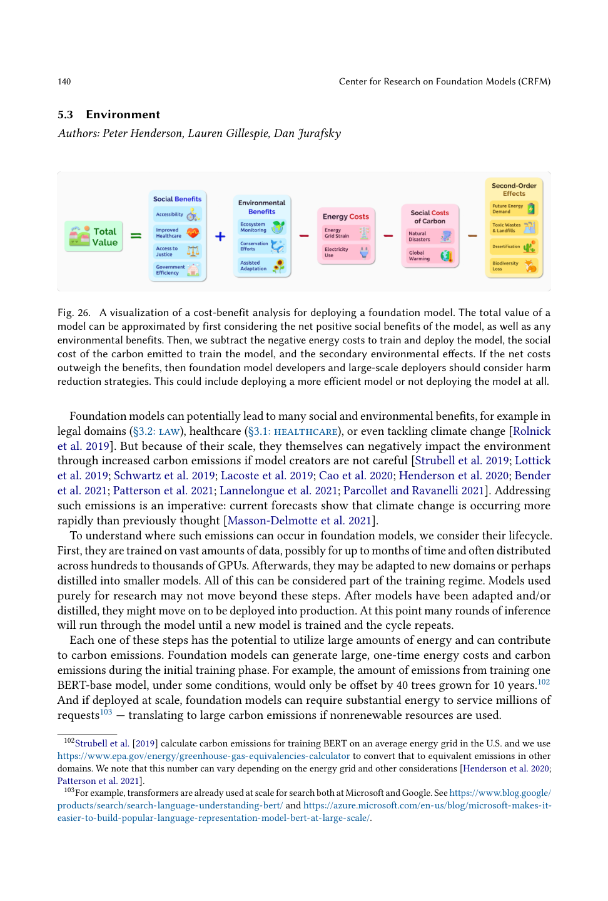
图 26： 部署基础模型的成本收益分析示意图。估算模型总价值时，可以先考虑模型的净正面社会收益以及任何环境收益，再减去训练和部署模型所需能源的负面成本、训练模型排放碳的社会成本，以及次生环境影响。如果净成本超过收益，基础模型开发者与大规模部署者就应考虑减害策略，包括部署效率更高的模型，或者完全不部署模型。
基础模型可能带来许多社会和环境收益，例如在法律领域（第 3.2 节）、医疗保健领域（第 3.1 节），甚至在应对气候变化方面 [Rolnick 等，2019]。然而，由于其规模庞大，如果模型创建者不够谨慎，基础模型本身也可能因碳排放增加而对环境产生负面影响 [Strubell 等，2019；Lottick 等，2019；Schwartz 等，2019；Lacoste 等，2019；Cao 等，2020；Henderson 等，2020；Bender 等，2021；Patterson 等，2021；Lannelongue 等，2021；Parcollet 和 Ravanelli，2021]。解决这类排放刻不容缓：当前预测显示，气候变化的发生速度快于先前认为的速度 [Masson-Delmotte 等，2021]。
为了理解基础模型生命周期中的排放发生在哪里，我们考察其生命周期。首先，模型在海量数据上训练，训练时间可能长达数月，通常还会分布在数百至数千块 GPU 上。随后，模型可能适配到新的领域，也可能蒸馏为较小模型。所有这些步骤都可以视为训练范式的一部分。纯粹用于研究的模型可能不会超出这些步骤。完成适配和/或蒸馏后，模型可能进入生产部署。此时，模型将进行许多轮推理，直到新模型得到训练，整个循环再次开始。
其中每一个步骤都可能消耗大量能源，并促成碳排放。基础模型在初始训练阶段可能产生巨大的单次能源成本和碳排放。例如，在某些条件下，训练一个 BERT-base 模型所产生的排放，需要种植 40 棵树并让它们生长 10 年才能抵消。32 如果大规模部署，基础模型为了服务数百万次请求也会消耗大量能源；33 如果使用不可再生能源，就会转化为大量碳排放。
因此，训练和部署基础模型的某些设计决策，可能产生重大的环境影响。即使是看似微不足道的决定，例如减少模型层数，大规模采用后也可能显著降低环境成本。例如，根据 Henderson 等 [2020] 的计算，把一种能效稍高的翻译模型以商业翻译服务的规模部署，根据所用电网的不同，每天可以减少 78 至 12,768 千克二氧化碳当量的碳排放。这大致相当于 1 至 211 棵树生长 10 年所封存的碳，或者 0.35 至 57.4 英亩森林一年所封存的碳。34 因此，基础模型的设计、部署和部署后监控，应当充分反映这些风险。
当然，计算任意给定模型消耗的能源量或排放的碳量存在不确定性 [Henderson 等，2020；Cao 等，2020；Patterson 等，2021]；其他排放来源目前也可能远大于基础模型产生的排放 [Mora 等，2018]。不过，如果基础模型继续扩大规模并日益普及，它们很可能成为碳排放的重要来源。我们的目标是提供一个框架，让基础模型开发者与大规模部署者35思考如何减少不必要的碳排放，并使这些模型对社会的净影响保持为正。我们提出以下建议：
- 在许多情况下，碳影响可以也应当得到缓解。可以在碳强度较低的地区训练模型，或者使用效率更高的模型和硬件（第 5.3.1 节）。
- 当所有缓解机制已经用尽、无法继续缓解时，应当评估社会成本与收益，以确定是否以及何时应当部署较大的基础模型，而不是更小、更高效的模型；同时应认识到，大型基础模型的前期成本可能在模型的整个生命周期中摊销（第 5.3.2 节）。
- 应明确报告能源成本、计算成本和碳成本，以及为减轻负面影响而采取的任何措施，从而为政策制定和研究提供信息（第 5.3.3 节）。
5.3.1 在许多情况下，碳影响可以也应当得到缓解
训练基础模型产生的碳影响，不同于部署模型进行推理所产生的影响。模型训练没有延迟要求，因此在云环境中，可以相对容易地把训练迁移到不同电网。每个电网都有自己的碳强度，也就是每使用一千瓦时能源所排放的碳量。例如，魁北克依赖水力发电，因此碳强度极低；爱沙尼亚的电网依赖页岩油，因此碳强度极高，尽管这种情况正在迅速改变 [Henderson 等，2020]。近期研究甚至提出，污染最严重的 5% 发电厂贡献了所有电力相关排放的 73% [Grant 等，2021]。因此，虽然训练基础模型可能非常耗能，研究人员已经证明，选择碳排放最低的电网，可以部分缓解这些模型的碳影响 [Henderson 等，2020；Lacoste 等，2019；Patterson 等，2021]。
在所有数据中心都能使用无碳可再生电力之前，碳抵消也被建议用作权宜之计。这种策略通过减少一项活动的碳排放，抵消另一项活动的排放。然而，大多数碳抵消措施，甚至可能是全部碳抵消措施，都严格劣于从一开始就不排放二氧化碳 [Holl 和 Brancalion，2020]。有些碳抵消项目甚至可能产生负面影响。例如，对植树活动的研究表明，植树通常被用作碳抵消来源，却可能弊大于利。它们可能形成单一栽培，也就是只使用某一种树木，从而降低区域生物多样性，减少森林土壤中的碳储量 [Heilmayr 等，2020；Hong 等，2020b]。与原本不排放那些碳相比，这甚至可能导致使用碳抵消后排放更多碳。因此，训练或部署基础模型时，我们建议从一开始就设计为尽可能少排放碳，而不是仅仅依靠碳抵消来抵消排放。
无法在低碳地区运行时，应采用其他缓解策略，减少不必要的能源消耗。这包括：
- 使用效率更高的硬件；36
- 使用混合精度训练 [Micikevicius 等，2017] 或量化 [Gholami 等，2021]；
- 使用更高效的架构，例如用演化 Transformer 代替普通 Transformer 架构，或者使用稀疏模型 [So 等，2019；Patterson 等，2021；Mostafa 和 Wang，2019]；
- 蒸馏模型并使用蒸馏后的模型，例如 [Sanh 等，2019]；
- 利用其他能够降低能源成本的优化策略，更多讨论见第 4.5 节。
开源项目和云计算的维护者应努力把默认设置配置为最高效率，因为众所周知，“绿色默认值”是最有效的缓解策略；相关讨论见 Henderson 等 [2020]。近期文献还提供了其他缓解策略 [Strubell 等，2019；Lacoste 等，2019；Schwartz 等，2019；Henderson 等，2020]。我们还指出，减少和缓解能源使用另有一项好处：让计算资源有限的人更容易使用模型；更多讨论见第 5.6 节。
不过，如果模型主要用于推理，例如部署在生产应用中，那么对于低延迟应用，模型往往无法迁移到碳强度较低的电网。在这种情况下，除了采用上述缓解策略，还必须比较拟议基础模型与能效更高替代方案的收益。下一节会进一步讨论这一点。
5.3.2 使用基础模型之前应评估成本与收益
在尽可能采取缓解措施之后，或者缓解根本不可行时，必须评估基础模型需要达到多大规模，乃至究竟是否应当使用基础模型。这种成本收益分析应考虑：
- 部署基础模型的社会成本和环境成本，是否大于模型带来的社会收益？
- 另一种计算更简单、成本更低的方法，是否能实现相当的社会收益，例如效率高得多的基础模型，或者某种简单基线？
评估这种权衡的一种简化方案，是按照下面的方式考察模型 $M$ 的总体影响：
图 26 表示这个公式，以及每个变量可能包含的成本与收益。这里，$M$ 是模型，$S$ 是以美元表示的净社会收益和环境收益。改善医疗保健、增加司法救济机会、减少贫困、加强环境监测、帮助生态系统保护工作等，都可以提高 $S$。
$C$ 是能源使用所排放碳的社会成本。它把排碳未来对社会的伤害表示为当前货币价值。美国环境保护署在 2017 年对碳社会成本给出的上限估计，是每排放一公吨二氧化碳 105 美元，以 2007 年美元计。37
$E$ 是模型的能源成本。例如，2021 年 4 月，美国居民平均能源成本约为每千瓦时 0.1376 美元。38 还可以把电网压力增大产生的成本计入这个变量。例如，近期一项研究提出，按平均需求归一化后，每次电网中断事件的成本可能高达每平均千瓦 15.9 美元 [Sullivan 等，2015]。39
$O$ 是其他次生环境影响的社会成本，可能包括：
- 芯片需求和芯片生产增长所叠加的碳影响 [Gupta 等，2021a]。
- 芯片制造的其他环境影响，例如硅谷形成的有毒废弃物场地，其健康影响不平等地落在社会弱势人群身上 [Stewart 等，2014]；或者台湾制造业造成的污染，已有研究把它与慢性健康问题联系起来 [Tu 和 Lee，2009；Lin 等，2016]。
- 尚未计入碳社会成本模型的气候变化叠加效应。例如，这些效应可能包括加速荒漠化 [Huang 等，2016]、使许多物种面临灭绝风险的生态系统快速变化 [Urban，2015]，以及永久冻土融化导致的碳排放增加 [Schuur 等，2015]。
- 对芯片产能造成不必要的压力。近期芯片短缺已经导致汽车制造业停工。40 没有证据表明，对机器学习优化芯片日益增长的需求导致了这次短缺。41 不过，这类考量属于次生效应；研究人员可能要权衡：为了使用或部署大型模型，承担促成此类负面影响的风险是否值得，无论风险多么轻微。42
这项分析还必须考虑，碳排放的经济收益和社会成本可能在不同社群之间分配不均；较贫困社群受气候变化的影响可能更严重，而模型却使较富裕社群受益 [Bender 等，2021]。43 因此，进行式（7）的分析时，应从更广泛的社会层面考虑收益和伤害，而不是只考虑某个组织或国家。在这种情况下，可以把 $V(M)$ 视为一种分布；理想情况下，它应均匀分布在整个人群中。如果分布极不均匀，例如全部收益归于模型设计者，全部伤害却落在永远不会从模型中获益的人群身上，设计者在部署模型前就应投入多得多的精力缓解伤害。
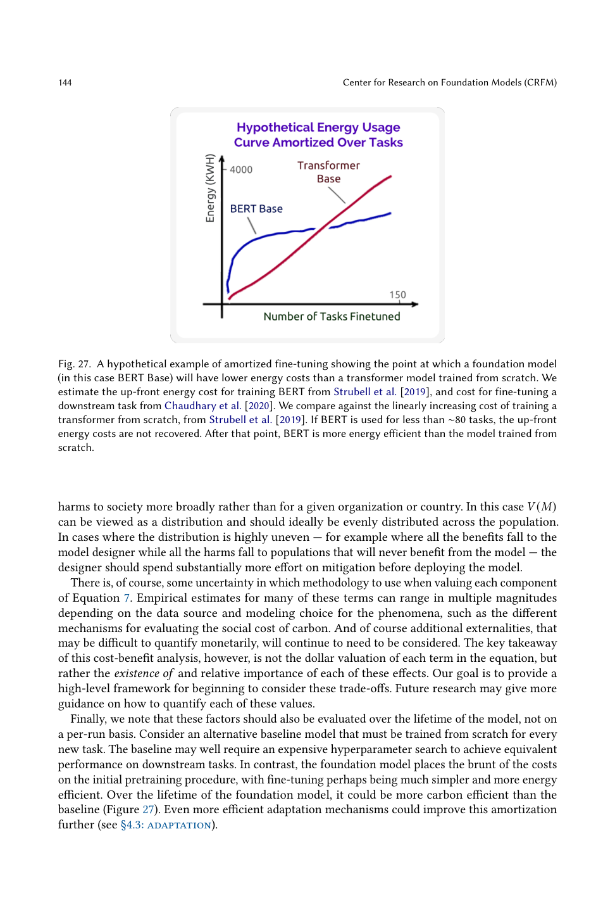
图 27： 一个假想的微调成本摊销示例，展示基础模型在何时会比从头训练的 Transformer 模型消耗更少能源；本例中的基础模型为 BERT Base。我们根据 Strubell 等 [2019] 估算训练 BERT 的前期能源成本，并根据 Chaudhary 等 [2020] 估算下游任务的微调成本，再把它与 Strubell 等 [2019] 给出的从头训练 Transformer 所带来的线性递增成本比较。如果 BERT 用于少于约 80 项任务，前期能源成本就无法收回；超过这一点后，BERT 会比从头训练的模型更加节能。
当然，在为式（7）的每一个组成部分估值时，应使用哪种方法存在不确定性。根据数据来源和现象建模选择的不同，其中许多项的经验估计可能跨越多个数量级；例如，评估碳社会成本就有多种机制。当然，还必须继续考虑难以用货币量化的其他外部性。不过，这项成本收益分析的关键要点，不是为公式中的每一项确定美元价值，而是认识到每种影响都确实存在，以及它们彼此之间的相对重要性。我们的目标是提供一个高层框架，让人们开始考虑这些权衡。未来研究或许会对怎样量化每个值提供更多指导。
最后，我们指出，这些因素还应在模型的整个生命周期上评估，而不是按单次运行评估。设想一种替代基线模型，每遇到一项新任务都必须从头训练。为了在下游任务上达到同等性能，基线很可能需要进行昂贵的超参数搜索。相较之下，基础模型把大部分成本放在初始预训练过程上，而微调可能简单得多，也更加节能。在基础模型的整个生命周期中，它的碳效率可能高于基线（图 27）。效率更高的适配机制，还能进一步改善这种摊销效果（参见第 4.3 节）。
不过，适配效率并无保证。即使把成本摊销到许多任务上，有些基础模型也可能永远不会比某个特定基线更加高效。例如，不能假设参数更少的小模型一定会提高能源效率。由于超参数调优成本增大或存在其他优化，在某些情况下，参数数量已被证明与能源效率并不相关 [Zhou 等，2020；Henderson 等，2020]。因此，基础模型开发者应当在开始大规模训练工作之前，严谨评估模型及其适配机制的效率。
本节的框架旨在指导读者思考训练和部署模型时环境与社会方面的权衡；不过，部署基础模型还涉及其他重要的社会正义考量，第 5.6 节会对此进行讨论。第 5.5 节还会更详细地讨论算法部署对社会福利的动态影响。
5.3.3 应系统报告碳与能源影响
如果研究基础模型的人员和工程师不报告其模型的计算成本、能源成本与碳成本，就无法进行成本收益分析。我们鼓励基础模型开发者、提供者和维护者报告这些指标，同时报告创建基础模型时采用了哪些碳减排策略。Henderson 等 [2020]、Lottick 等 [2019]、Lacoste 等 [2019]、Schmidt 等 [2021] 和 Anthony 等 [2020] 给出了碳影响声明示例，以及能够帮助完成此类报告的工具。研究人员可以在发表成果时进行报告；我们也鼓励产业参与者采用透明机制，报告已经部署的模型的这些指标。44 这有助于产业界和学界制定政策建议，也能帮助下游用户识别对碳更友好的使用模式。标准化报告还有助于确定计算资源有限的人能够使用哪些模型；关于可访问性的更多讨论见第 5.6 节。
为了鼓励更多人报告能源与碳影响，我们建议采取的策略包括：在会议上授予绿色徽章；要求向会议投稿时报告相关指标；游说基础模型的大规模部署者提高透明度；以及普遍推动学界和产业界改变专业规范，把这些指标纳入标准报告。关于专业规范的更多讨论见第 5.6 节，Henderson 等 [2020] 对报告机制有进一步讨论。
5.4 合法性
作者： Neel Guha、Peter Henderson、Lucia Zheng、Mark Krass、Daniel E. Ho
本节说明美国法律可能如何影响、约束或促进基础模型的创建与使用。45 我们指出，算法工具相关的法律环境仍不确定。我们重点讨论三个方面：（1）模型训练；（2）模型预测责任；（3）模型输出所受保护。
理解法律如何影响基础模型固然至关重要，但还必须认识到，法律不能成为评估基础模型构建、维护和使用的唯一视角。即使某些基础模型应用在法律上得到允许，它们造成的伤害也可能意味着这些应用并不明智；要理解这些情形，就必须使用伦理框架，第 5.6 节和第 5.1 节会对此进行更深入的讨论。研究潜在滥用和可能的安全问题（参见第 5.2 节和第 4.7 节），对于事先防止有害结果至关重要；法律机制往往只能在事后进行处理。
5.4.1 训练
训练基础模型需要积累海量多模态数据，这会引发数据收集与数据使用方面的问题。
首先，模型创建者通过网络抓取扩大数据集的能力，将受法院怎样解释服务条款规定所支配；尤其值得注意的是美国《计算机欺诈与滥用法》，该法把“未经授权”访问服务器规定为犯罪 [Wajert 和 Rottman，2019]。法院对这些问题存在分歧，近期案件试图澄清在什么情况下可以禁止网络抓取。46 数据访问受到多大限制，会从根本上影响从业者可用于训练基础模型的数据多样性 [Levendowski，2018]。
其次，训练集中包含的大量数据都受到版权保护，也可能受到知识产权法保护。不过，版权法承认一些例外情况，在这些情况下允许个人使用受版权保护的材料。47 一些学者认为，训练数据集在法律上是否允许，主要取决于法院是否会依据合理使用原则，把模型训练过程解释为“转换性”使用 [Lemley 和 Casey，2020]。什么可以算作转换性使用高度依赖具体情境，但一般规则是：转换性使用要“增加某种新内容，具有进一步的目的或不同性质，并且不能替代作品的原始用途” [Office，2021]。最近发布的 GitHub Copilot 工具，已经把这些争论推到前台 [Gershgorn，2021]。
最后，一些训练数据集可能违反隐私法律。例如，伊利诺伊州允许个人就生物识别数据的不当收集或使用提起诉讼，例如视网膜或虹膜扫描、指纹、声纹，或者手部与面部几何结构扫描。48 欧盟《通用数据保护条例》等外国隐私法律，如果数据集包含欧盟公民信息，也会影响美国模型创建者；它要求把数据收集目的告知数据主体。加利福尼亚州《消费者隐私法案》等法律还会引发更多问题，因为这些法律赋予个人“被遗忘权”，从而引出模型创建者是否需要从模型中“移除”训练数据的问题 [Villaronga 等，2018；Ginart 等，2019]。
5.4.2 输出责任
基础模型本身虽与具体任务无关，但微调后的模型，或者基础模型自身学到的表征，可能被用于传统预测任务。如果这些任务成为更大型决策系统的一部分，基础模型就会影响行动、决策或政策。当这些影响造成伤害时，模型创建者以及操作模型的个人可能要承担法律责任。
把基础模型嵌入物理系统，例如自动驾驶汽车、电网管理或医疗诊断，可能会对个人造成人身伤害。在这些情况下，法院很可能依据侵权法原则解决责任问题 [Lemley 和 Casey，2019；Selbst，2020]。关键开放问题包括用户、基础模型提供者与应用开发者之间的责任如何相互作用，以及法院将使用何种标准评估基础模型的风险状况。在特别敏感的领域中部署，例如医疗领域，需要获得监管批准，还要制定标准化流程来评估安全性 [Wu 等，2021g]。
如果微调后的基础模型按照与受保护属性相关的方式对个人进行分类，例如种族或性别，可能会面临民权法律方面的挑战。学者已经指出，在招聘、住房或信贷情境中，可能会针对基础模型造成的差别待遇提出诉求 [Gillis 和 Spiess，2019；Scherer 等，2019]。法院究竟会怎样裁决这些问题，远不清楚。例如，学者指出，法院对“歧视”的传统看法，实际上会阻止机器学习从业者实施许多算法公平技术 [Xiang，2021；Ho 和 Xiang，2020]。49
美国法律承认政府实体的特殊特权和限制。因此，地方、州或联邦层面的政府实体使用基础模型，除了可能受到平等保护方面的诉求，还会涉及特殊考量。使用模型进行风险评估，或者在其他导致个人被剥夺生命、自由或财产的场景中使用模型，会引发程序性正当程序方面的诉求。50 例如，环境保护署等行政机关使用模型时，原告可能主张这种使用违反了正当程序、合理性或非任意性以及透明度方面的基本标准。
5.4.3 对输出的法律保护
模型输出，以及对模型负责的模型创建者，也可能获得某些法律保护。首先，生成模型产生的内容可能涉及言论自由问题。法院会在多大程度上认定机器生成内容受到《第一修正案》保护，尚不清楚。学者讨论了许多开放问题，包括“人工智能言论”是否受到保护 [Massaro 等，2016]，或者模型输出实际上是否属于人类程序员的言论 [Kajbaf，2019]。还有人指出，可能要求进行披露，就像药品或其他物质的安全披露；这也会涉及言论原则，并要求模型向听众说明其内容由机器生成 [Lamo 和 Calo，2019]。这些问题可能产生广泛后果，影响个人能否使用基础模型大规模生产言论，也影响模型创建者是否会因基础模型生成的内容承担责任。
其次，谁可以主张模型输出的所有权，仍存在不确定性。现有版权法不承认计算机程序可以成为作者，因此不会为计算机程序创作的“作品”提供版权保护 [Grimmelmann，2015]。学者由此提出了多种处理方式。有人认为，根据具体情况，无论是程序的人类创建者，还是程序的人类用户，都可能有理由主张自己是程序输出的“作者” [Ginsburg 和 Budiardjo，2019]。
随着模型越来越多地用于“创作”过程，从艺术创作到新闻文稿等更日常的场景，围绕机器生成内容所有权的争议会变得更加普遍。
上面的分析只是浅尝基础模型涉及的法律问题，但这些问题如何解决，对于基础模型的构建、使用与部署至关重要；借用 Larry Lessig 的说法，它们决定“代码如何成为法律” [Lessig，2000]。
5.5 经济学
作者： Zanele Munyikwa、Mina Lee、Erik Brynjolfsson
基础模型有可能通过提高生产率和创新水平，显著改善整体生活水平。这些模型可以用来替代人类劳动、增强人的能力，或者帮助发现新的任务和机会；其结果可能是所有权与权力更加集中，也可能是更加分散。从更宏观的层面看，结果可能是由于潜在的集中化而导致不平等加剧（第 5.1 节、第 5.6 节），也可能是因为基础模型更容易适配到范围广泛的应用，而带来更加广泛共享的繁荣（第 1 节）。这些维度上的最终结果，并不只由技术或经济学决定，而取决于技术人员、政策制定者、管理者、劳动者和社会其他成员的选择与行动。
基础模型可以被理解为经济学家所说的通用目的技术 [Bresnahan 和 Trajtenberg，1995]。通用目的技术包括蒸汽机和电力这样的技术；它们因无处不在、随时间改进，并能够催生互补创新，也就是围绕一个核心产品发展出的许多产品和服务，而推动一轮轮转型与生产率增长。基础模型目前可能尚未普及，但它们似乎已经准备成为广泛技术创新的基础，并具备通用目的技术的关键特征。因此，这些模型很可能具有重要的经济意义。在考虑基础模型对经济的影响时，我们重点讨论三个广泛领域：生产率、工资不平等和所有权。
5.5.1 生产率与创新
基础模型很可能大幅提高生产率和创新水平。生产率增长是提高生活水平的主要因素之一，因为它能增加国家财富，并应对从贫困和医疗保健到环境与教育在内的一系列挑战。
生产率定义为单位投入所产生的产出。51 提高生产率的一种方式，是减少分母；例如，让公司的广告由更少的文案人员撰写，或者让每名文案人员用更少的工时撰写广告，就会减少投入单位数量。也可以通过增加分子来提高生产率，例如让软件开发者在给定时间内写出更多代码。如果分子增长足够大，就可能有更多人从事软件开发，而不是更少的人 [Autor，2015]。在许多任务中，我们已经观察到机器学习系统提高生产率。例如，用于临床文档的自动补全系统，把输入临床概念所需的击键负担降低了 67% [Gopinath 等，2020]。
同样，基础模型影响生产率的潜力几乎覆盖每个行业和许多职业。只考虑语言领域，使用美国劳工部 O*NET 数据库对美国职业进行的分析显示，许多职业包含可能受基础模型影响的语言相关工作。大约 13% 的职业，其主要任务与写作有关；这些职业的工资总额，也就是年薪乘以该职业就业人数，超过 6750 亿美元。然而，基础模型的潜在影响并不止于语言。它们还会影响医学诊断成像、平面设计、音乐52，以及许多其他任务；在这些任务中，人们创造的东西与已经存在的其他东西相似 [Winkler 等，2019；Ramesh 等，2021]。
基础模型最深远、虽然仍属推测性的影响，或许是增强创造力、提高创新本身的速度。例如，DALL·E [Ramesh 等，2021] 可能像廉价相机彻底改变摄影一样，改变插画市场。如果这些模型能够帮助人们用新方式创作新歌曲和小说（第 2.5 节），发现药物分子的变体（第 3.1 节），扩展专利（第 3.2 节），构建创新软件应用，或开发新的业务流程，那么提高的不仅是生产率水平，还有生产率增长的速度。通过这种方式，基础模型具备 Paul Romer 增长模型中思想或蓝图的一些特征 [Romer，1990]，甚至具备“元思想”，也就是关于思想的思想；与大多数其他商品不同，元思想不具有竞争性，因此会加速增长。
值得注意的是，生产率变化并不总能在官方统计中显现，因为许多投入和产出难以测量 [Brynjolfsson 和 Collis，2019]。因此，传统生产率指标，以及国内生产总值或价格水平等相关指标，都无法完整捕捉基础模型的收益和成本；价格水平是整个商品和服务范围内当前价格的平均值。历史上，通用目的技术尤其如此，因为它们是连锁次生创新的催化剂；这些创新往往在数年甚至数十年内改变经济中的商品和服务集合，甚至改变生产和创新的性质。
5.5.2 工资不平等
即使基础模型提高了平均生产率或收入，也没有任何经济规律保证所有人都会受益。部分原因在于，不同任务受到的影响程度并不相同。更重要的是，无论生产率是否增长，基础模型对劳动需求，也就是就业和工资的影响，都可能是正面的，也可能是负面的 [Brynjolfsson 和 McAfee，2011；Brynjolfsson 和 Mitchell，2017]。如果技术替代人类劳动来完成任务，通常会减少从事这些任务的劳动者需求，从而压低就业和工资。然而，如果技术补充劳动，或者帮助创造新的机会或任务，往往会增加劳动需求 [Acemoglu 和 Restrepo，2019]。即使生产率提高，就业也可能增加，而且往往确实会增加。例如，飞机的发明创造了对全新职业，即飞行员的需求；随后，喷气发动机的发展与人类飞行员形成互补，进一步增加了对他们的需求。同样，基础模型对就业、工资和收入不平等的影响，将取决于它们如何被使用。
工业革命主要改变了体力劳动；基础模型则很可能改变涉及认知工作的任务，例如内容创作和沟通。总体而言，由于基础模型是通常具有强大生成能力的中间资产，我们设想它们在许多创意场景中会增强人类，而不是替代人类；毕竟，把模型单独用于开放式生成任务仍存在明显限制 [See 等，2019]。正如第 2.5 节所述，基础模型还可能驱动这样的系统：用户利用它们共同构建新形式的艺术，或者更高效地制作新应用的原型。要实现流畅的人机交互和人在回路中的交互，需要改进界面设计（第 2.5 节），也需要从根本上提高模型的可解释性（第 4.11 节）与鲁棒性（第 4.8 节），使人类能够理解模型行为，并预期模型在多样情境中良好运行。
5.5.3 集中化
另一个决定基础模型经济影响的关键因素，是谁拥有数据和模型。到目前为止，推动基础模型前沿主要是大型企业的职责。因此，数据和模型的所有权往往高度集中，导致市场集中（第 5.6 节）。反过来，这可能使决策权与权力显著集中，减少没有所有权者的收入与机会。这种权力集中可能形成一种均衡：只有较少的人拥有社会和经济流动性与机会；Brynjolfsson [2022] 把这种情况称为“图灵陷阱”。为了抵消这种集中化，已经出现了许多自下而上的开放人工智能研究努力，例如 Masakhane、EleutherAI 和 HuggingFace，也有人通过分布式训练构建基础模型。然而，由于基础模型依赖海量数据和计算资源（第 5.3 节），产业界能够训练的私有模型与向社群开放的模型之间，很可能仍会存在巨大差距。53
5.5.4 其他考量
本节篇幅较短，并不打算全面涵盖基础模型的所有经济影响。除了影响生产率、工资不平等和所有权，基础模型还可能显著影响工作质量和工作满意度。例如，它们可以自动完成工作中重复、无趣的部分，从而提高工作满意度；也可能加快工作节奏，导致更频繁的倦怠，从而降低满意度。正如第 5.1 节和第 5.6 节所讨论的，基础模型还可能以意想不到的方式放大和延续偏差，或者被用作减少偏差的工具。基础模型能够促进全球贸易和远程工作，正如机器翻译系统早期的使用已经对这些领域产生了重大影响 [例如 Brynjolfsson 等，2019]。它们还可能产生重大的环境影响（第 5.3 节），以及对经济中职业变化和业务转型的速度与方向产生意外和未预料到的影响。
更广泛地说，鉴于基础模型涌现出的能力，我们应预期会出现难以预测的新型未知未知，这些未知可能产生重大的后续影响。54 总而言之，基础模型将成为我们这个时代重要的通用目的技术。它们有可能显著提高生活水平，但也有增加不平等、集中权力的风险。这些技术的经济影响并未预先决定，而取决于技术人员、政策制定者、管理者、劳动者和其他利益相关者如何回答以下挑战：
- 我们如何利用基础模型的潜力提高生产率？
- 我们能否开发增强创造力、提高创新速度的模型？
- 收益和控制权会局限于少数人，还是会被广泛共享？
理解这些系统的经济潜力，是引导它们朝符合我们价值观的方向发展的第一步。
5.6 规模伦理
作者： Kathleen Creel、Dallas Card、Rose E. Wang、Isabelle Levent、Alex Tamkin、Armin W. Thomas、Lauren Gillespie、Rishi Bommasani、Rob Reich
除了不平等加剧的担忧（第 5.1 节），基础模型的广泛采用还带来伦理、社会和政治挑战。本节讨论与基础模型应用规模有关的社会、政治和伦理风险，例如同质化与权力集中；也讨论应对这些风险的适当规范与发布策略，以及基础模型开发和部署所处的更广泛政治经济环境。
5.6.1 同质化与规模
如果同一个模型只经过极少适配，就被用于各种领域，那么原始模型的优势、弱点、偏差和特质都会被放大（第 5.1 节）。任何标准化技术被广泛采用和依赖时，都存在同样问题。这类似于：许多汽车或飞机共同使用的某个零件在制造中出现故障，可能给各个行业造成广泛而严重的后果；基础模型内在的偏差或服务失效，也可能向外扩散。不过，基础模型目前缺乏可解释性（第 4.11 节），且训练与任务无关，这使得预测、理解和处理这些弱点都很困难。如果基础模型像预期那样被广泛采用，那么基础模型开发者就比普通模型开发者承担更大的注意义务，因为他们在设计与部署中的选择具有广泛影响 [Arendt，1987]。
基础模型的定义性特征，是能够适配到大量任务并发挥实用作用；正是这一特征，使它们很可能被广泛用于大量具有社会后果的任务。与当前分散而多样的决策模型相比，在多个自动决策任务中使用同一个基础模型的许多适配形式，意味着决策对象可能面对一组更加同质、根植于底层基础模型的判断。
这种算法单一文化 [Kleinberg 和 Raghavan，2021]，可能导致对个体决策对象持续、一致而任意的拒绝、错误分类或不当对待 [Gandy，2021]。我们把这种现象称为同质化 [Creel 和 Hellman，2021]。例如，第 4.6.2 节讨论了数据质量问题如何导致模型在数据子群体上产生不良行为；子群体可以由任何把数据分层的过滤条件产生，包括社会群体条件（相关讨论见第 4.11.1 节和第 4.8.1 节）。在数据质量工具得到改进（第 4.6.2 节），并能够识别模型表现不佳的数据切片之前 [Chung 等，2019；Goel 等，2021]，基础模型可能会持续无法为某一群体提供准确信息或服务（另见第 4.8 节）。
同质化可能放大偏差，把偏差标准化，使不公正不断叠加，而不是把它们分散；也可能放大任意排斥 [Creel 和 Hellman，2021；Gandy，2021]。例如，Zhou 等 [2021a] 认为，BERT 默认编码了一种以英语世界为中心的相似度指标；如果把它应用于基础模型实际使用的不同情境，这种指标可能造成伤害。跨领域应用基础模型，可能成为一种认识论和文化上的同质化力量，把一个隐含视角，通常是社会支配性视角，传播到多个应用领域。
由于基础模型需要海量无标签和有标签数据，训练语料标准化的既有趋势很可能进一步加剧。模型在相似数据上训练到什么程度，就很可能获得相似的行为模式、偏差（第 5.1.3 节）和错误。ImageNet 等过去投入巨大精力进行的数据整理和标注工作，已经使训练语料标准化；同时也使错误标准化：在 ImageNet 上训练的模型经常依赖相同的“虚假线索”和“捷径”，例如利用绿色草地等背景纹理预测牛等前景对象类别 [Geirhos 等，2020；Hendrycks 等，2021e]。尽管基础模型和其他大型模型对许多类型的分布变化更加鲁棒（第 4.8.1 节），它们学习虚假相关的可能性并没有降低（第 4.8.2 节）；因此，如果在相同数据集上训练，它们很可能学习到相似错误。
选择公开可用的无标签数据也可能产生类似影响。许多基础模型在无标签语料上训练；选择这些语料是因为它们方便、易访问，例如公开互联网数据 [Caswell 等，2021]，而不是因为质量高。然而，正如 Marr [2017] 和第 4.6.1 节所讨论的，对许多私有基础模型而言，无论有标签还是无标签，公开可访问数据在训练语料中往往不如专有数据重要。因此，还需要更多研究来理解：在相似数据上训练，在多大程度上会使基础模型内部的相关关系同质化；这种同质化又会在多大程度上导致模型适配衍生物出现一致性失效，除非在每次适配期间施加约束来消除这种行为（第 4.3.2 节）。
同质化并非不可避免。随着模型开发者有意扩大数据集所代表的视角范围（第 5.1.3 节），我们还需要更多研究，了解基础模型用于生成任务时提供多样视角的能力。例如，Sheng 等 [2021] 证明，采用特定人口群体“人格”的对话系统，在社会偏差指标上的表现不同。除了为了避免偏差而在不同“人格”之间作出选择，还可以沿认知和人口统计的多个维度使用多样化“人格”，为生成任务产生更广泛的连贯输出。如何平衡输出多样性与对单个用户的相关性和实用性，仍有许多开放问题。55
5.6.2 监控、排斥与权力
基础模型的一个关键前提，是把海量无标签数据与巨大的计算资源结合起来，创建一个基础，再由此为各种应用派生出许多产品。这种范式转变可能改变社会结构、转移权力，建立或巩固模型创建者的影响力 [Zimmerman，2020]。下面讨论三个潜在影响。
大规模数据收集与监控。 收集有标签数据集通常需要与领域专家合作，理解这类数据的问题和局限；相比之下，训练基础模型需要异常大量的数据，这促使一些研究人员重数量而轻质量。56 虽然预处理能够帮助提高数据质量 [例如 Brown 等，2020]，但所涉及的规模要求采用自动化方法，而这些方法可能粗糙或记录不充分 [Dodge 等，2021]。
尽管数据保护法规正在演变，例如欧洲的 GDPR，获取数据时仍在继续采用各种可疑做法，从不透明的政策 [Obar 和 Oeldorf-Hirsch，2020]、使用“暗黑模式”，也就是操纵性界面 [Narayanan 等，2020]，到公然违反服务条款。Clearview AI 基本上采用了后一种策略：这家公司未经用户同意、违反平台服务条款，从社交媒体抓取照片，用于开发面部分类软件。然而，公司仍然能够把这项技术出售给警察部门和其他组织，而且很多州立法者或部门负责人对此并不知情 [Mac 等，2021]。如果基础模型范式提高了“率先拥有某个领域尽可能大数据集”的价值，就可能进一步鼓励行为者进行激进数据收集，即使这种追求在法律上有问题，或违背用户预期 [Nissenbaum，2009；Zuboff，2018]。
数据对基础模型的重要性，还意味着已经开展广泛数据收集的组织将处于开发基础模型的有利位置，并很可能有动力维持这一优势。如果衍生产品本身可以用来收集更多数据，例如用于监控或健康诊断，那么基础模型开发者可能会寻求确保自己拥有这些数据。因此，尽管基础模型范式的一项关键优势，是能够生成适配后的衍生物，基础模型开发者仍可能以一种确保所有适配衍生物的数据回流到自身的方式许可其工作。57
权力集中。 虽然计算的绝对成本随时间大幅降低，但训练最大的基础模型目前仍需要计算资源，除少数机构和组织外，其他人都无法承担（第 5.3 节）。因此，未来几年谁能够获得相关计算资源和数据，很可能决定谁能够生产前沿基础模型（另见第 5.5.3 节）。
GPT-3 至少部分是一次规模实验，展示了在没有重大建模创新的情况下，扩大模型规模、数据量和训练时间也能取得巨大收益。尽管人们正在广泛研究如何减少训练此类模型所需的资源（参见第 4.2 节），OpenAI 的工作表明，更大规模的努力仍可能带来收益 [Kaplan 等，2020]；其他组织也可能在其他领域沿着这条路径发展，例如 Lieber 等 [2021]。
如果规模最终确实是成功关键，那么最有能力生产有竞争力基础模型的组织，将是资源最充足的组织：由风险资本支持的初创企业、已经占据主导地位的科技巨头和州政府。这会引发市场集中方面的担忧，也可能形成类似国防和半导体制造等极端资本密集行业中现有的在位垄断或寡头垄断 [Carril 和 Duggan，2020]。
此外，权力集中还引发了另一个担忧：当前被边缘化的个人和社群能否参与基础模型开发过程 [Kalluri，2020]。特别是在政府服务领域，采用基础模型可能进一步把决策权从政府转移到企业服务提供者手中，并给正当程序和问责引入额外障碍 [Citron，2008]。不过，更多自下而上的努力，例如 Masakhane、EleutherAI 和 HuggingFace，提供了令人鼓舞的替代方案；在纳入参与式设计或价值敏感设计方面，也存在大量工作 [Friedman 和 Hendry，2019；Prabhakaran 和 Donald Martin，2020]。
推动大规模自动决策。 近年来，产业界和政府对自动决策系统的使用急剧扩张 [O'Neil，2016；Engstrom 等，2020]。虽然许多自动化担忧并非基础模型特有，但 GPT-3 等模型的生成能力，以及在基准任务上的出色表现，例如 Devlin 等 [2019] 的研究，可能促使行政机关等机构不够谨慎地采用这项技术；许多行政机关并不具备理解复杂机器学习系统所需的专业知识 [Calo 和 Citron，2021]。因此，必须清楚传达基础模型现实的能力和局限。
大多数自动决策系统会作为更广泛社会技术系统的一部分存在，而人在其中扮演关键角色 [Selbst 等，2018]。因此，即使标准化评估中的性能大幅提高，也不能保证现实世界会得到预期结果，尤其是系统没有经过审慎考虑或持续评估就部署时。例如，研究表明，法官可能在解释风险评估系统输出时重新施加种族偏见 [Albright，2019]，或者施加自己的偏见 [Stevenson 和 Doleac，2021]。在具备适当生态效度的情况下开展持续评估 [de Vries 等，2020]，在这方面至关重要，但即使有充分证据，也未必能阻止潜在危险或成本高昂的系统被采用 [Ferguson，2017]。人们正在研究拒绝方法，也就是让个人能够选择不参与基础模型及其适配衍生物，不论是作为数据主体还是决策主体，而且不必承受不利后果 [Benjamin，2016]。58
简而言之，算法决策现有的问题，一旦基础模型部署，就会在其运行中出现。如果采用基础模型加速了从人类决策向机器决策的转移，基础模型就会加重自动化相关担忧。虽然这些挑战没有显而易见的解决方案，但必须把基础模型将如何影响权力的问题，纳入模型创建的讨论；要与公民社会组织、政策制定者和公民沟通这类系统的能力与局限；还要努力推动社会不同群体之间围绕采用此类模型开展更广泛的对话。
5.6.3 规范
公共政策和正式法律监管（第 5.4 节）在创建技术创新基础设施、缓解广泛传播技术的潜在有害影响方面发挥着重要作用。正如塔斯基吉梅毒实验与研究机构和研究规范（如机构审查委员会）之间长达数十年的空白所显示的，保护人类受试者和利益相关者的公共政策，往往落后于公众意识和伤害证据 [Grady，2015；Stark，2012；Department of Health and Welfare，1979]。因此，社会依靠专业规范来推动负责任的开发和部署，并建立最佳实践。
规范存在于建议与要求之间的连续谱上。基础模型是一种新生技术，其负责任开发和部署的规范，无论在建议强度的哪一端，目前都尚未得到充分确立 [Crootof，2019]。下文讨论已部署模型的规范，因为研究模型拥有更宽的操作空间。
如果有人希望基础模型开发者采用某些规范，可以率先以身作则，让自己的行为和声明起到推荐规范的作用。正如第 1.2 节所讨论的，我们认为，大学和其他非营利机构在示范基础模型规范方面发挥着重要作用。作为教育机构，大学处于独特位置，可以鼓励下一代理论家和实践者考虑本报告提出的问题，也能促进研究人员与学生之间的跨学科对话 [Rogers，2021]。大学和学院还可以通过审计现有基础模型并发表结果、建立伦理审查委员会 [Bernstein 等，2021]，以及开发自己的基础模型来促进规范建立。
要创建并采用规范，需要把规范制度化，纳入资助结构、模型仓库、发布实践、会议投稿和基金申请要求。59 例如，HuggingFace 的界面目前鼓励发布数据卡和模型卡，包括对偏差和社会影响的讨论。60 由于填写并非强制，而且数据质量工作相对于其重要性可能被低估 [Sambasivan 等，2021]，因此很少有人填写。偏差和社会影响被纳入会议伦理声明和某些标准评估形式（第 4.4 节），但在其他地方，有些研究人员仍把它们视为可选考量。这种情况必须改变。
对于某些具有社会后果的使用场景，我们建议建立法律标准，要求适配衍生物以可证明的方式展现某些性质（第 5.4 节）。应当通过民主方式决定特别受关注的领域，但这些领域可能包括政府服务的分配与提供、医疗诊断与监测、招聘和借贷；在这些场景中，人们的机会乃至生命取决于适配衍生物是否正常运行。
我们应当推广、制度化或要求哪些规范？这里提出一些建议，但主要目标是促进关于基础模型开发与使用适当规范的对话。以往工作经常关注倡导记录的规范 [Gebru 等，2018；Bender 和 Friedman，2018；Mitchell 等，2019；Dodge 等，2019]。许多下游情境中出现的负面社会后果，最初可能看起来是外在的，或者只与某种特定用途有关（第 5.1 节），因此记录和透明度对基础模型尤其重要。
目前，那些记录了适配衍生物偏差或其他负面特征的基础模型适配者，没有自动机制把发现报告给基础模型开发者。汇总适配衍生物中与相关问题有关的多份报告，可能让模型开发团队发现一个横跨多个使用场景的内在模型性质。由于适配衍生物的创建者往往与基础模型开发者或提供者不是同一实体，因此需要额外的报告结构、规范或监管，才能让这类反馈到达基础模型开发者。还可以把这些反馈提供给广大的模型审计者，从而让审计和补救更加容易开展。
公开承诺规范和标准，并建立报告机制，也能让下游用户向基础模型提供者提交反馈。为了实现这一点，适配衍生物应当始终以一致方式标记，让受影响者能够追溯问题来源。实践中，隐私考量以及许多基础模型的专有性质，可能造成重大的技术和社会障碍；但如果没有标记，追溯就不可能完成。
模型开发者和提供者必须建立此类报告机制。报告机制可以参考现有平台上的类似结构，例如 GitHub 开源项目的问题追踪。特别是，提交的问题应公开，让其他用户能够识别趋势，即使问题尚未得到修复；也让开发者和提供者能够因未处理问题而受到问责。还需要建立机制，把趋势向上升级，传递给基础模型提供者。Dinan 等 [2021] 和第 4.6 节讨论了训练数据问题追踪方面的类似建议。
Holland 等 [2018] 借鉴消费者隐私领域的标签讨论 [Kelley 等，2009]，提出把营养标签作为有用模型。营养标签既列出加工食品的“原始”成分，也列出完整营养信息。同样，适配衍生物的模型卡 [Mitchell 等，2019] 或营养标签，也可以列出所用训练数据和基础模型等“原材料”，以及适配衍生物的完整“营养成分”，例如已知能力、弱点和偏差。
要让数据主体和受影响者追溯伤害来源，就必须报告完整流水线。不过，如果无法把伤害责任归于适配衍生物、基础模型或二者共同承担，也没有在责任归属后提供补救的框架，即使成功追溯伤害，也不太可能促成模型改变（另见第 5.1.4 节）。因此，需要在技术、政策和法律方面开展大量工作，建立框架，把数据、模型和衍生物的内容告知其他专家，最终告知公众；归属伤害责任；并创建补救途径。
5.6.4 发布与审计
2019 年 2 月，OpenAI 开始了一项实验。他们发布了一个删减版的 GPT-2，参数量为 1.24 亿，但不提供数据集，希望借此争取时间：测试偏差的时间、准备应对滥用的时间，以及让社会适应大型语言模型存在的时间 [Solaiman 等，2019]。八个月后，OpenAI 发布完整的约 15 亿参数版本时，测试已经揭示了模型的一些能力和局限，但绝不是全部。如今考虑类似问题时，必须把发布可能造成的伤害，主要是滥用问题（第 5.2 节），61 与透明度带来的收益进行权衡；封闭测试无法复制这种透明度所带来的更广泛、独立的审计和访问机会。
审计。 审计者探查当前模型的局限，提出修复路径，还会在各种自然情境中测试模型的适配衍生物。开放审计访问的政策，可以让数量更多、背景更多样的研究人员调查模型的偏差、局限和安全漏洞，从而更好地确定模型的可接受用途，并校准对模型的适当信任 [Danks，2019；Baier，1986]。62 为了支持对基础模型进行独立审计，模型开发者或第三方中介可以为审计者提供开放 API 访问，包括梯度访问，并允许访问训练数据 [Raji 和 Buolamwini，2019；Raji 等，2020]。
在产业界使用专有数据训练的基础模型不太可能发布；在私有数据上训练的基础模型，例如医疗场景中的模型，则不应发布。为了让专有模型从独立审计中受益，也为了让模型对象从审计过程推动的改进中受益，我们建议在分阶段发布期间进行审计。分阶段发布可能无法揭示模型的所有可能使用场景；扩大已发现使用场景范围的一种方法，是邀请中立第三方决定哪些个人或组织应当在分阶段发布计划中获得早期访问权。如果由模型开发者决定谁获得分阶段访问权，他们就可能遭到偏袒、选择性分配和操纵公众对产品看法的指责。中立的“分阶段发布委员会”或联邦审计人员，可以为这些失效模式提供防线，确保不同学科背景和社会部门的广泛审计者与用户都能获得访问权。
分阶段发布委员会还可以减轻一种担忧：审计者如果分享不利于模型的输出，就可能失去早期访问权；在标准分阶段发布过程中，他们确实可能面临这种风险。
访问与适配。 只要基础模型能够带来社会收益，发布模型就有可能进一步分配这些收益。BERT 和 M-BERT 等大型语言模型具备跨语言迁移能力；如果模型开源，这可能让模型适配到原本可用文本太少的语言 [Wu 和 Dredze，2019；Wang 等，2020a]。考虑到商业提供者目前对许多语言的服务都不充分，单凭这一项收益，发布模型的价值就可能很大。
发布并不足以让基础模型访问民主化，因为计算能力门槛仍然阻止许多人修改甚至加载基础模型，更不用说开发自己的模型了。不过，在这些方面，近期都出现了显著技术改进。零冗余优化器（ZeRO）等内存技术，让研究人员可以在简单配置上运行和训练非常大的模型 [Rasley 等，2020；Rajbhandari 等，2021]。蒸馏等技术可以支持发布更小、更易处理的模型；这些模型能够保留母模型的大部分性能，却更容易训练 [Li 等，2020d]。开发能耗更低的训练方法（第 5.3 节），还可以进一步扩大使用已发布模型的能力。要训练更大模型，需要硬件与软件协同设计等效率提升（第 4.5 节）；这些改进也可以用来降低访问当前模型的价格。
相较之下，最强大的伤害显然并不是由模型发布直接促成的。有能力发动大规模虚假信息、网络战或定向网络钓鱼的复杂或机构化行为者，很可能也有能力在没有已发布模型的情况下创建类似模型。因此，尽管这些伤害可能很严重，在发布权衡中也不应给予过大权重 [Solaiman 等，2019；Shevlane 和 Dafoe，2020]。应当与发布收益进行权衡的，是资源较少、无法创建自己的基础模型，却可能有动机生成垃圾信息或虐待内容、虚假评价，或在考试中作弊的行为者所造成的伤害。
问题是：对于那些足够复杂、能够使用已发布模型或 API，却不够复杂、无法创建自己模型的行为者，发布收益是否超过潜在伤害？我们认为答案是肯定的。拥有开发基础模型所需资源与关系的研究团队数量很少；即使把他们合在一起，也很难做到足够多样，无法设想所有可能有益的使用场景，也无法设想所有能够揭示基础模型能力边界的探查方法。
5.6.5 何时不应构建
强大技术的开发与部署，并不像重力那样是一种作用于我们的外部力量。技术反映人类作出的一系列选择；人类能动性塑造技术前沿。因此，技术人员可以选择何时不构建、不设计或不部署基础模型 [Zimmermann，2021]。这种决定不必是二元的；人们可以通过颠覆嵌入的价值、挑战既有假设和塑造研究议程，拒绝按照默认方式参与 [Simpson，2007]。包括基础模型在内的技术制品，本质上都具有政治性；关于它们的研究具有社会政治背景，而不只是技术背景。
开发者和研究人员应当清楚自己试图解决哪些问题，例如是扩大基础模型规模，还是让基础模型在计算上更易访问；还要清楚这些问题是怎样表述的，以及最终谁会因解决方案而获得权力 [Rogaway，2016；Winner，1980；Passi 和 Barocas，2019]。我们应当重视那些努力让基础模型更可解释、更易访问、更可持续、更公平的研究（参见第 4.11 节、第 5.3 节和第 5.1 节）。
当我们追问何时不应构建基础模型或适配衍生物时，其实不只是在问“我们应该或不应该构建什么”，还在问：“应当在什么条件下构建模型？”以及“哪些标准和原则支配模型构建？”第一个问题来自模型视角，后两个问题来自生态系统视角（第 1 节）。
邀请人们考虑拒绝构建，并不等于说“什么都不做”。这是在邀请人们有意识、审慎地作出选择：什么值得投入时间、资金、专业知识和能源来构建、设计和部署？归根结底，这是一个植根于情境和价值观的困难道德问题。有些情况下，应用适配衍生物，以及更广泛地应用算法和机器学习，并不合适：可能是受影响的社群提出抗议，也可能是适配衍生物简单粗暴地加剧系统性问题，而这些问题更适合通过公共政策、额外资金或跨学科合作解决 [Angwin 等，2016]。
Floridi 等 [2018] 把《贝尔蒙特报告》应用于机器学习，为这个问题提供了一个可能框架。根据“行善”原则 [Department of Health and Welfare，1979]，如果适配衍生物或某条研究路径可能弊大于利，甚至完全没有收益，就可以识别出应重新考虑构建的情形。另一种情况是，某个适配衍生物在效率、性能和泛化等指标上更擅长某项任务，而这些正是机器学习社群优先重视的价值 [Birhane 等，2020]；但个人、社群或组织也可能选择优先使用一种既有解决方案，因为它突出人际联系、可解释性等其他价值 [Benjamin，2016]。这样做，就是按照《贝尔蒙特报告》的“尊重个人”原则行使自主权，决定此处不是适合构建模型的情境。63
回答何时不应构建，既是个人责任，也是更广泛的职业责任。一个人、一个团队或一家公司决定不构建某种东西，常会招致这样的回应：“如果我们不构建，别人也会构建，而且他们很可能做得更糟。”简单地按照功利主义比较两个模型结果的伤害，会忽略正直的重要性。究竟是我们构建坏模型，还是别人构建，意义非常重大 [Williams，1973]。个人有理由不构建违背自身价值、或无法认同为正确的东西 [Korsgaard，2009]。不过，这样形成的结构环境不同。如果哪怕只有一家公司决定构建某个有伦理疑问模型的最有效版本，就会为其他公司考虑类似研究打开大门；不去追求这项研究，就会在竞争中处于不利地位 [Askell 等，2019]。因此，何时不应构建既是个人问题，也是集体问题，需要整个社群遵守职业伦理与责任准则。
与医学等其他领域相比，人工智能和机器学习社群的这套基础设施仍然不成熟。虽然计算机协会等职业组织有伦理声明，但产业界和学界都缺乏广泛使用、广为接受的职业誓言，例如希波克拉底誓言或工程师义务；缺乏参与部署和研究的监管机构，例如负责药品的食品药品监督管理局；也缺乏正式的伦理审查规范，例如涉及人类受试者研究的机构审查委员会 [Bernstein 等，2021]。
在基础模型生态系统的许多阶段，包括数据生产、适配和部署期间，都可以纳入选择退出的能力。随着规范转向收集越来越大范围的训练数据（第 4.6 节），我们应努力保持“尊重个人”原则 [Department of Health and Welfare，1979]，在数据生命周期中强调隐私与同意。这需要创新数据管理，并在技术和哲学层面更具体地理解在线知情同意；还需要研究如何记录并确保同意得到尊重，以及如何保护隐私（具体数据管理方案见第 4.6 节和 Ohm，2014）。虽然数据和基础模型的应用多种多样，数据参与者仍应能表示自己不希望如何使用其数据。选择退出式同意模型偏向开发者，因为它不要求开发者针对每个新的、未预见的使用场景重新获得同意。此时，撤回那些在不经意间给出的同意就非常重要，尤其是当人们现在正在推进某些应用，而最初同意时并不存在这些应用。
5.6.6 结论
本节考察了基础模型广泛采用伴随的一些社会风险，例如结果同质化和权力集中。基础模型开发者应当采用有关基础模型开发、审计与发布的规范，并在立法要求的帮助下应对这些风险；个人也应能够在不受惩罚的情况下，拒绝成为基础模型的数据主体或决策主体。
基础模型生成和交互能力带来的许多影响，本报告尚未考察。例如，第 5.5 节讨论了自动化创意和设计工作可能带来的经济生产率收益。然而，由于基础模型具有生成性质，它们可能替代许多人认为有意义且令人满足的工作，例如平面设计和写作。我们希望，本报告的范围能够帮助其他人继续追问这里尚未涉及的伦理与社会问题。
6 结论
在本报告中，我们努力全面讨论基础模型的许多关键方面，范围从模型的技术基础到模型的社会后果。通过这种方式，我们承认自己采取了一种不同寻常的做法：我们试图澄清一种可能刚刚开始的范式的性质，而不是等待更多事情发生，或等待尘埃落定。因此，尽管已经作出努力，仍有许多问题不清楚；我们再次强调，这只是范式转变的开始：基础模型才刚刚开始改变人工智能系统在世界中的构建和部署方式。展望未来，我们认为，这份文档将在围绕这些模型和人工智能新范式的对话中发挥重要的定位和框架作用。
不过，为了确保这些模型能够建立在持久、负责任的基础上得到开发和部署，我们尤其认为，从一开始就让不同部门、机构和学科开展协作，至关重要。
致谢
感谢以下人员提供宝贵反馈：Mohit Bansal、Boaz Barak、Yoshua Bengio、Stella Biderman、Su Lin Blodgett、Sam Bowman、Collin Burns、Nicholas Carlini、David Chalmers、Jack Clark、Jeff Dean、Jesse Dodge、Jarred Dunnmon、Gabe Dupre、Jason Eisner、Iason Gabriel、Dan Hendrycks、Avery Hill、Yacine Jernite、Gabbrielle Johnson、Sarah Kreps、Jay McClelland、Preetum Nakkiran、Julian Nyarko、Fernando Pereira、Vinodkumar Prabhakaran、Colin Raffel、Marten van Schijndel、Ludwig Schmidt、Yoav Shoham、Madalsa Singh、Megha Srivastava、Jacob Steinhardt、Emma Strubell、Qian Yang、Luke Zettlemoyer 和 Ruiqi Zhong。此外，我们特别感谢 Vanessa Parli 对组织这项工作的帮助。
利益冲突
本报告由基础模型研究中心（CRFM）撰写。该中心位于斯坦福大学，源自斯坦福以人为本人工智能研究院（HAI）。截至 2022 年 7 月，CRFM 获得 Google、Microsoft 和 McGovern Foundation 的资助，但这些资金与本报告没有直接关系。本报告作者还可能隶属于斯坦福大学之外的其他机构；他们的贡献只反映自己的观点，不代表这些机构的观点。
前半篇补充脚注（原文编号 17-86）
- 脚注 17： 少于围棋棋盘上的格点数量，也就是 19×19 棋盘上的 361 个动作。
- 脚注 18： OpenAI 分类指南。
- 脚注 19： VQGAN-CLIP。
- 脚注 20： LANDR。
- 脚注 21： Copilot。
- 脚注 22： AI Dungeon。
- 脚注 23： Microsoft PowerApps。
- 脚注 24： Copilot。
- 脚注 25： 与此相关，科学哲学中有大量文献专门讨论“理解”这一概念，主要关注科学解释；参见 Grimm [2021]。
- 脚注 26： 我们不讨论可能与理解的形而上学有关的其他问题，例如意识或某种主观体验是否可能是必要条件。这些是紧迫的哲学问题，但不容易与人工智能和自然语言处理研究联系起来。
- 脚注 27： 关于内在主义观点和指称主义观点的通俗介绍，推荐 Elbourne [2011]。这种实用主义版本可以追溯到 Wittgenstein [1953]，但 Turing [1950] 对它的表述最为简洁：他建议不要追问机器是否能够思考，而要追问一项具体的行为测试，这后来被称为图灵测试。
- 脚注 28： 只要这种映射包含因果信息，我们就必须面对从相关数据，甚至从实验数据中得出因果推断的理论局限（参见 Spirtes 等，2001；Bareinboim 等，2020）。
- 脚注 29： 按我们的理解，Bender 和 Koller [2020] 允许多模态数据改变这种情形，特别是当允许对象 $O$ 与人类围绕共享情境和主题进行合作性交互时。
- 脚注 30： 困难的一部分可能还来自一个事实：普通人类在许多领域也经常犯错，但他们犯的错不一定与当前系统犯的错类型相同。因此，刻画目标行为可能不只是识别“正确”行为。
- 脚注 31： 由于作者具备美国法律专业知识，我们把讨论限制在美国的法律应用。不过，这里的部分讨论可能适用于全球法律场景。
- 脚注 32： 本节所说的基础模型，是指任何经过自监督预训练、能够用少量监督学习快速适配新情境的模型。关于扩展定义，还可以参见第 1 节和第 2.6 节。
- 脚注 33： Suffolk 法律创新实验室工具。
- 脚注 34： Kirkland 技术辅助审查框架。
- 脚注 35： 例如，研究表明，在法庭上使用非裔美国人英语方言可能成为审判中的偏差来源。参见相关报道。
- 脚注 36： 例如，在 People 诉 Superior Court（Vasquez） 案中（27 Cal.App.5th 36，2018），由于公设辩护人办公室严重削减预算且人员不足，被告 17 年没有获得审判。法院裁定，公设辩护人办公室的系统性崩溃构成正当程序违反，并驳回了被告案件。
- 脚注 37： 美国律师协会：如何阅读美国最高法院判决。
- 脚注 38： 美国最高法院案件审理流程图。
- 脚注 39： 《斯坦福法律评论》投稿说明。
- 脚注 40： 例如，一条规则可能写成：“对于未婚且不是丧偶配偶的个人，应适用第（1）和第（2）款，但把‘600 美元’替换为‘750 美元’。”《美国国内税收法典》第 63(f)(3) 节。
- 脚注 41： 对于律师事务所和法律技术公司而言，那些已经能够实现较高性能、因而可以更快产品化的任务，可能更值得投入昂贵的人工标注工作。
- 脚注 42： 参见 Vieira 等 [2020] 的讨论。
- 脚注 43： 例如，在 Vasquez 诉 United States 案中（第 3:16-cv-2623-D-BN 号，得克萨斯州北区联邦地区法院，2019 年），律师依靠 Google 翻译证明，之前那位母语律师误译了认罪协议。
- 脚注 44： 2013 年，Facebook 启动 Free Basics 项目，旨在向全世界提供免费互联网，从而传播机会与互联。如今，联合国人权理事会报告称，在缅甸，Facebook 在没有适当人工审核的情况下试图实现这些目标，加速了仇恨言论、煽动了分裂，并在罗兴亚人种族灭绝中煽动线下暴力。Free Basics 如今成了技术影响社会复杂性的警示。
- 脚注 45： 这名学生犯了一个常见错误：把个位数相加的结果与十位数相加的结果直接拼接起来。
- 脚注 46： 我们使用“训练”而不是“预训练”，是为了强调基础模型自身的首要地位，也因为有些把基础模型适配到下游任务的方法不包含后续训练阶段。
- 脚注 47： 例如，ELECTRA 相对于 BERT 的加速约为 4 倍 [Clark 等，2020；Devlin 等，2019]；CLIP 训练中，对比方法相对于生成方法的加速约为 12 倍 [Radford 等，2021]。
- 脚注 48： 当然，计算机系统设计者的一个关键目标，是缓解计算成为训练瓶颈的问题（参见第 4.5 节）。训练方法的选择最终也受制于多样、高质量数据是否可用。
- 脚注 49： 例如，用来训练 GPT-3 的因果语言建模目标 [Brown 等，2020]，使模型能够通过前缀进行条件控制；对比学习中使用的颜色抖动增强 [Chen 等，2020c]，则鼓励模型对那些被认为对下游任务没有用的属性保持不变。更好地理解这些约束的具体选择和结构如何影响模型获得的能力，是未来的重要研究方向（第 4.10 节）。
- 脚注 50： 例如草叶、音频压缩伪影或单词拼写。
- 脚注 51： 关于图像和视频等高维序列的训练成本，参见第 2.2 节和第 4.1 节。
- 脚注 52： 例如，词元化可能让模型更难学习押韵、双关语，或其他受益于字符级信息的任务 [Branwen，2020]。
- 脚注 53： 例如，GPT-3 这样的自回归模型支持基于前缀的条件控制，而 T5 或 BERT 这样的去噪模型支持使用双向上下文替换任意长度的片段或修复拼写错误。
- 脚注 54： 在基础模型语境中研究较少的其他生成方法，包括扩散模型和基于得分的模型 [Sohl-Dickstein 等，2015；Song 和 Ermon，2019；Ho 等，2020]、变分自编码器 [Kingma 和 Welling，2014]、流模型 [Dinh 等，2015；Kingma 和 Dhariwal，2018] 以及生成对抗网络 [Goodfellow 等，2014]。这些方法或未来其他方法能否像自回归或去噪方法一样，支持学习种类同样丰富的能力，仍有待观察。
- 脚注 55： 关于视觉和语言中的多模态，尤其是具体讨论，参见第 2.2 节和第 2.1 节。
- 脚注 56： 包括任何不希望出现的或带有偏见的能力（第 5.1 节）。
- 脚注 57： 提示是一个例外，不过我们可以认为，提示隐式表示了一批带标签数据中包含的信息 [Le Scao 和 Rush，2021]。
- 脚注 58： 假设基础模型提供者允许输入空间连续。
- 脚注 59： 严格来说，这些直接评估仍可能涉及把评估表述为任务，并让基础模型专门化以执行任务；但它们的目标更接近探测（第 4.11 节），即尽可能直接地测量基础模型。
- 脚注 60： 相反，当前结果表明，不同适配方法更适合不同类型的基础模型和训练目标 [Liu 等，2021e；Lester 等，2021]。
- 脚注 61： BIG-bench。
- 脚注 62： 传统上，ImageNet [Deng 等，2009] 和 SQuAD [Rajpurkar 等，2016] 等基准的设计，都是由能够负担众包数据集创建费用的高资源研究实验室完成的 [Rogers，2020]。
- 脚注 63： 我们注意到它与 Strathern 定律 [Strathern，1997] 有关；这一定律有时也被称为古德哈特定律 [Goodhart，1984]：“当一个指标成为目标时，它就不再是一个好的指标。”
- 脚注 64： VIS、CHI 和 SIGGRAPH 是研究交互式数据分析方法与系统的几个社群。Pandas、Matplotlib 和 Seaborn 等软件系统与库，也有助于用户进行交互式探索。
- 脚注 65： Michelangelo 等特征存储系统也支持端到端机器学习模型构建，参见相关介绍。
- 脚注 66： 关于中国人工智能研究人员超过 Google 的报道。
- 脚注 67： 这些问题最近因围绕在 Copilot 的 Codex 工具中使用 GitHub 数据帮助开发者编程的争论而受到关注，参见相关讨论。
- 脚注 68： 一些公共数据中心包括：Data.world、哈佛 Dataverse、Data Commons、Data.gov、Kaggle、HuggingFace 数据集和 Linguistic Data Consortium。
- 脚注 69： 一些传统基础模型数据管理系统包括：AWS 数据湖、Uber Michelangelo 和 Kafka。
- 脚注 70： Tamr。
- 脚注 71： Westlaw 法律内容。
- 脚注 72： 美国《隐私法》。
- 脚注 73： 美国教育家庭隐私权法相关资料。
- 脚注 74： 美国国土安全部隐私政策指导备忘录。
- 脚注 75： 以数据为中心的交互式工具包示例包括 Tableau 和 Paxata。
- 脚注 76： HuggingFace 模型库。
- 脚注 77： Tableau Public。
- 脚注 78： 本节关注基础模型的安全问题；基础模型在安全领域的一些应用，例如有害内容检测，在第 5.2 节讨论。
- 脚注 79： OpenAI CLIP 模型卡，访问日期：2021 年 6 月 30 日。
- 脚注 80： 关于人工智能安全开放问题的更广泛视角，参见 Amodei 等 [2016] 和 Hendrycks 等 [2021d]。
- 脚注 81： 有些人把这称为 AGI，即通用人工智能，但术语用法并不统一，例如参见 Karnofsky [2016]。
- 脚注 82： 这并不要求相信构建某些类型的高级人工智能是理想目标，也不要求确定它确实能够实现。
- 脚注 83： 关于奖励规定与奖励实现之间边界处出现的一些挑战，参见 Hubinger 等 [2019]。
- 脚注 84： 关于人类多样性、伦理和价值对齐问题的扩展讨论，参见 Gabriel [2020]。
- 脚注 85： 参见原论文所列电子表格，其中列出了现实世界奖励劫持案例，包括一种飞机着陆算法：它通过输出巨大的作用力来利用模拟器缺陷，从而取得满分；原文提取文本没有展开该电子表格的链接。
- 脚注 86： 关于理解与语义之间关系的更多内容，参见第 2.6 节。
参考文献
以下书目信息保留原始文献的作者、题名、出处、年份、页码和链接，以便检索与核对。
Martin Abadi, Paul Barham, Jianmin Chen, Zhifeng Chen, Andy Davis, Jeffrey Dean, Matthieu Devin, Sanjay Ghemawat, Geoffrey Irving, Michael Isard, et al. 2016. TensorFlow: A system for large-scale machine learning. In Proceedings of the 12th USENIX Symposium on Operating Systems Design and Implementation (OSDI). Savannah, Georgia, USA.
Jordan Abdi, Ahmed Al-Hindawi, Tiffany Ng, and Marcela P Vizcaychipi. 2018. Scoping review on the use of socially assistive robot technology in elderly care. BMJ open 8, 2 (2018), e018815.
Rediet Abebe, Solon Barocas, Jon Kleinberg, Karen Levy, Manish Raghavan, and David G Robinson. 2020. Roles for computing in social change. In Proceedings of the 2020 Conference on Fairness, Accountability, and Transparency. 252–260.
Abubakar Abid, M. Farooqi, and J. Zou. 2021. Persistent Anti-Muslim Bias in Large Language Models. ArXiv abs/2101.05783 (2021). https://arxiv.org/abs/2101.05783
Serge Abiteboul. 1997. Querying Semi-Structured Data. International Conference on Database Theory, 1–18.
Steven Abney. 2007. Semisupervised Learning for Computational Linguistics (1st ed.). Chapman & Hall/CRC.
Daron Acemoglu. 2021. Redesigning AI. MIT Press. https://books.google.com/books?id=HBb6DwAAQBAJ
Daron Acemoglu and Pascual Restrepo. 2019. Automation and new tasks: How technology displaces and reinstates labor. Journal of Economic Perspectives 33, 2 (2019), 3–30.
Accountability Act. 1996. Health insurance portability and accountability act of 1996. Public law 104 (1996), 191.
George Adam, Ladislav Rampášek, Zhaleh Safikhani, Petr Smirnov, Benjamin Haibe-Kains, and Anna Goldenberg. 2020. Machine learning approaches to drug response prediction: challenges and recent progress. NPJ Precision Oncology 4, 1 (2020), 1–10.
Yossi Adi, Einat Kermany, Yonatan Belinkov, Ofer Lavi, and Yoav Goldberg. 2017. Fine-grained Analysis of Sentence Embeddings Using Auxiliary Prediction Tasks. In International Conference on Learning Representations.
Stein Aerts, Diether Lambrechts, Sunit Maity, Peter Van Loo, Bert Coessens, Frederik De Smet, Leon-Charles Tranchevent, Bart De Moor, Peter Marynen, Bassem Hassan, et al. 2006. Gene prioritization through genomic data fusion. Nature Biotechnology 24, 5 (2006), 537–544.
Sameer Agarwal, Yasutaka Furukawa, Noah Snavely, Ian Simon, Brian Curless, Steven M Seitz, and Richard Szeliski. 2011. Building rome in a day. Commun. ACM 54, 10 (2011), 105–112.
Sandhini Agarwal, Gretchen Krueger, Jack Clark, Alec Radford, Jong Wook Kim, and Miles Brundage. 2021. Evaluating CLIP: Towards Characterization of Broader Capabilities and Downstream Implications. arXiv preprint arXiv:2108.02818 (2021).
Armen Aghajanyan, Dmytro Okhonko, Mike Lewis, Mandar Joshi, Hu Xu, Gargi Ghosh, and Luke Zettlemoyer. 2021. HTLM: Hyper-Text Pre-Training and Prompting of Language Models. CoRR abs/2107.06955 (2021). arXiv:2107.06955 https://arxiv.org/abs/2107.06955
Armen Aghajanyan, Luke Zettlemoyer, and Sonal Gupta. 2020. Intrinsic Dimensionality Explains the Effectiveness of Language Model Fine-Tuning. CoRR abs/2012.13255 (2020). arXiv:2012.13255 https://arxiv.org/abs/2012.13255
Ashvin Agrawal, Rony Chatterjee, Carlo Curino, Avrilia Floratou, Neha Gowdal, Matteo Interlandi, Alekh Jindal, Kostantinos Karanasos, Subru Krishnan, Brian Kroth, et al. 2019. Cloudy with high chance of DBMS: A 10-year prediction for Enterprise-Grade ML. arXiv preprint arXiv:1909.00084 (2019).
Roxana M Agrigoroaie and Adriana Tapus. 2016. Developing a healthcare robot with personalized behaviors and social skills for the elderly. In 2016 11th ACM/IEEE International Conference on Human-Robot Interaction (HRI). IEEE, 589–590.
Anurag Ajay, Aviral Kumar, Pulkit Agrawal, Sergey Levine, and Ofir Nachum. 2021. OPAL: Offline Primitive Discovery for Accelerating Offline Reinforcement Learning. ArXiv abs/2010.13611 (2021).
Ifeoma Ajunwa. 2019. The paradox of automation as anti-bias intervention. Cardozo L. Rev. 41 (2019), 1671.
Hassan Akbari, Linagzhe Yuan, Rui Qian, Wei-Hong Chuang, Shih-Fu Chang, Yin Cui, and Boqing Gong. 2021. Vatt: Transformers for multimodal self-supervised learning from raw video, audio and text. arXiv preprint arXiv:2104.11178 (2021).
Guillaume Alain and Yoshua Bengio. 2016. Understanding intermediate layers using linear classifier probes. In International Conference on Learning Representations.
EA AlBadawy, A Saha, and MA Mazurowski. 2018. Deep learning for segmentation of brain tumors: Impact of cross- institutional training and testing. Med Phys. 45 (2018).
Alex Albright. 2019. If You Give a Judge a Risk Score: Evidence from Kentucky Bail Decisions. (2019). https://thelittledataset. com/about_files/albright_judge_score.pdf Accessed 2021-07-18.
Zarqa Ali, John Robert Zibert, and Simon Francis Thomsen. 2020. Virtual clinical trials: Perspectives in dermatology. Dermatology 236, 4 (2020), 375–382.
Gordon W. Allport. 1954. The Nature of Prejudice. Addison-Wesley Publishing Company. https://books.google.com/books? id=u94XUyRuDl4C
Laila Alrajhi, Ahmed Alamri, Filipe Dwan Pereira, and Alexandra I Cristea. 2021. Urgency Analysis of Learners’ Comments: An Automated Intervention Priority Model for MOOC. In International Conference on Intelligent Tutoring Systems. Springer, 148–160.
Sergei Alyamkin, Matthew Ardi, Alexander C Berg, Achille Brighton, Bo Chen, Yiran Chen, Hsin-Pai Cheng, Zichen Fan, Chen Feng, Bo Fu, et al. 2019. Low-power computer vision: Status, challenges, and opportunities. IEEE Journal on Emerging and Selected Topics in Circuits and Systems 9, 2 (2019), 411–421.
Julia Amann, Alessandro Blasimme, Effy Vayena, Dietmar Frey, and Vince I Madai. 2020. Explainability for artificial intelligence in healthcare: a multidisciplinary perspective. BMC Medical Informatics and Decision Making 20, 1 (2020), 1–9.
American Bar Association. 2004. Gideon’s Broken Promise: America’s Continuing Quest for Equal Justice. Technical Report. American Bar Association.
American Bar Association. 2021. National Lawyer Population Survey 2021. https://www.americanbar.org/content/dam/ aba/administrative/market_research/2021-national-lawyer-population-survey.pdf
Saleema Amershi, James Fogarty, and Daniel Weld. 2012. Regroup: Interactive Machine Learning for On-demand Group Creation in Social Networks. In Proceedings of the SIGCHI Conference on Human Factors in Computing Systems. ACM.
Dario Amodei, Chris Olah, Jacob Steinhardt, Paul Christiano, John Schulman, and Dan Mané. 2016. Concrete problems in AI safety. arXiv preprint arXiv:1606.06565 (2016).
Peter Anderson, Qi Wu, Damien Teney, Jake Bruce, Mark Johnson, Niko Sünderhauf, Ian Reid, Stephen Gould, and Anton van den Hengel. 2018. Vision-and-language navigation: Interpreting visually-grounded navigation instructions in real environments. In Computer Vision and Pattern Recognition (CVPR).
Jacob Andreas. 2019. Measuring Compositionality in Representation Learning. International Conference on Learning Representations (2019).
Jacob Andreas. 2020. Good-Enough Compositional Data Augmentation. Association for Computational Linguistics (July 2020), 7556–7566. https://doi.org/10.18653/v1/2020.acl-main.676
Jacob Andreas, Marcus Rohrbach, Trevor Darrell, and Dan Klein. 2016. Neural module networks. In Proceedings of the IEEE Conference on Computer Vision and Pattern Recognition. 39–48.
Marcin Andrychowicz, Filip Wolski, Alex Ray, Jonas Schneider, Rachel Fong, Peter Welinder, Bob McGrew, Josh Tobin, Pieter Abbeel, and Wojciech Zaremba. 2017. Hindsight Experience Replay. arXiv preprint arXiv:1707.01495 (2017).
Julia Angwin, Jeff Larson, Surya Mattu, and Lauren Kirchner. 2016. Machine Bias: There’s software used across the country to predict future criminals. And it’s biased against blacks. ProPublica.
Rohan Anil, Badih Ghazi, Vineet Gupta, Ravi Kumar, and Pasin Manurangsi. 2021. Large-scale differentially private BERT. arXiv preprint arXiv:2108.01624 (2021).
Rohan Anil, Vineet Gupta, Tomer Koren, Kevin Regan, and Yoram Singer. 2020. Scalable Second Order Optimization for Deep Learning. arXiv preprint arXiv:2002.09018 (2020).
Lasse F. Wolff Anthony, Benjamin Kanding, and Raghavendra Selvan. 2020. Carbontracker: Tracking and Predicting the Carbon Footprint of Training Deep Learning Models. ICML Workshop on Challenges in Deploying and monitoring Machine Learning Systems. arXiv:2007.03051.
Stanislaw Antol, Aishwarya Agrawal, Jiasen Lu, Margaret Mitchell, Dhruv Batra, C Lawrence Zitnick, and Devi Parikh. 2015. Vqa: Visual question answering. In Proceedings of the IEEE international conference on computer vision. 2425–2433.
Maria Antoniak and David Mimno. 2021. Bad Seeds: Evaluating Lexical Methods for Bias Measurement. In Proceedings of ACL 2021.
Hannah Arendt. 1987. Collective Responsibility. Springer Netherlands, Dordrecht, 43–50.
Martin Arjovsky, Léon Bottou, Ishaan Gulrajani, and David Lopez-Paz. 2019. Invariant risk minimization. arXiv preprint arXiv:1907.02893 (2019).
Michael Armbrust, Armando Fox, Rean Griffith, Anthony D Joseph, Randy H Katz, Andrew Konwinski, Gunho Lee, David A Patterson, Ariel Rabkin, Ion Stoica, et al. 2009. Above the clouds: A berkeley view of cloud computing. Technical Report. Technical Report UCB/EECS-2009-28, EECS Department, University of California . . . .
Sanjeev Arora, Nadav Cohen, Wei Hu, and Yuping Luo. 2019a. Implicit regularization in deep matrix factorization. In Advances in Neural Information Processing Systems. 7411–7422.
Sanjeev Arora, Hrishikesh Khandeparkar, Mikhail Khodak, Orestis Plevrakis, and Nikunj Saunshi. 2019b. A theoretical analysis of contrastive unsupervised representation learning. arXiv preprint arXiv:1902.09229 (2019).
Sanjeev Arora, Yuanzhi Li, Yingyu Liang, Tengyu Ma, and Andrej Risteski. 2016. A latent variable model approach to PMI-based word embeddings. Transactions of the Association for Computational Linguistics (2016).
Mikel Artetxe, Sebastian Ruder, and Dani Yogatama. 2020. On the Cross-lingual Transferability of Monolingual Representa- tions. arXiv:1910.11856 [cs] (May 2020). http://arxiv.org/abs/1910.11856
Euan A Ashley. 2016. Towards precision medicine. Nature Reviews Genetics 17, 9 (2016), 507–522.
Amanda Askell, Miles Brundage, and Gillian Hadfield. 2019. The Role of Cooperation in Responsible AI Development. http://arxiv.org/abs/1907.04534
David H. Autor. 2015. Why Are There Still So Many Jobs? The History and Future of Workplace Automation. Journal of Economic Perspectives 29, 3 (2015), 3–30.
Sebastian Bach, Alexander Binder, Grégoire Montavon, Frederick Klauschen, Klaus-Robert Müller, and Wojciech Samek. 2015. On pixel-wise explanations for non-linear classifier decisions by layer-wise relevance propagation. PloS one 10, 7 (2015), e0130140.
Claudine Badue, Rânik Guidolini, Raphael Vivacqua Carneiro, Pedro Azevedo, Vinicius Brito Cardoso, Avelino Forechi, Luan Jesus, Rodrigo Berriel, Thiago Meireles Paixão, Filipe Mutz, et al. 2020. Self-driving cars: A survey. Expert Systems with Applications (2020), 113816.
Alexei Baevski, Yuhao Zhou, Abdelrahman Mohamed, and Michael Auli. 2020. wav2vec 2.0: A Framework for Self-Supervised Learning of Speech Representations. In Advances in Neural Information Processing Systems, H. Larochelle, M. Ranzato, R. Hadsell, M. F. Balcan, and H. Lin (Eds.), Vol. 33. Curran Associates, Inc., 12449–12460. https://proceedings.neurips.cc/ paper/2020/file/92d1e1eb1cd6f9fba3227870bb6d7f07-Paper.pdf
Dzmitry Bahdanau, Kyunghyun Cho, and Yoshua Bengio. 2014. Neural machine translation by jointly learning to align and translate. arXiv preprint arXiv:1409.0473 (2014).
Dzmitry Bahdanau, Felix Hill, Jan Leike, Edward Hughes, S. A. Hosseini, Pushmeet Kohli, and Edward Grefenstette. 2019. Learning to Understand Goal Specifications by Modelling Reward. In International Conference on Learning Representations (ICLR).
Dzmitry Bahdanau, Shikhar Murty, Michael Noukhovitch, Thien Huu Nguyen, Harm de Vries, and Aaron Courville. 2018. Systematic Generalization: What Is Required and Can It Be Learned?. In International Conference on Learning Representations.
Annette Baier. 1986. Trust and Antitrust. Ethics 96, 2 (1986), 231–260. http://www.jstor.org/stable/2381376
Andrea Bajcsy, Dylan P. Losey, M. O’Malley, and A. Dragan. 2017. Learning Robot Objectives from Physical Human Interaction. In Conference on Robot Learning (CORL).
Bowen Baker, I. Kanitscheider, Todor Markov, Yi Wu, Glenn Powell, Bob McGrew, and Igor Mordatch. 2020. Emergent Tool Use From Multi-Agent Autocurricula. ArXiv abs/1909.07528 (2020).
Anton Bakhtin, Laurens van der Maaten, Justin Johnson, Laura Gustafson, and Ross Girshick. 2019. Phyre: A new benchmark for physical reasoning. Advances in Neural Information Processing Systems 32 (2019), 5082–5093.
Jack Bandy and Nicholas Vincent. 2021. Addressing" Documentation Debt" in Machine Learning Research: A Retrospective Datasheet for BookCorpus. arXiv preprint arXiv:2105.05241 (2021).
Kshitij Bansal, Sarah M. Loos, Markus N. Rabe, Christian Szegedy, and Stewart Wilcox. 2019. HOList: An Environment for Machine Learning of Higher Order Logic Theorem Proving. In Proceedings of the 36th International Conference on Machine Learning, ICML 2019, 9-15 June 2019, Long Beach, California, USA (Proceedings of Machine Learning Research, Vol. 97), Kamalika Chaudhuri and Ruslan Salakhutdinov (Eds.). PMLR, 454–463. http://proceedings.mlr.press/v97/bansal19a.html
Yamini Bansal, Gal Kaplun, and Boaz Barak. 2020. For self-supervised learning, Rationality implies generalization, provably. arXiv preprint arXiv:2010.08508 (2020).
Elias Bareinboim, Juan D. Correa, Duligur Ibeling, and Thomas Icard. 2020. On Pearl’s Hierarchy and the Foundations of Causal Inference. Technical Report R-60. Causal AI Lab, Columbia University. Forthcoming in Probabilistic and Causal Inference: The Works of Judea Pearl (ACM Books).
Solon Barocas, Kate Crawford, Aaron Shapiro, and Hanna Wallach. 2017. The Problem With Bias: Allocative Versus Representational Harms in Machine Learning. (2017). Talk at SIGCIS Conference.
Marco Baroni. 2021. On the proper role of linguistically-oriented deep net analysis in linguistic theorizing. arXiv preprint arXiv:2106.08694 (2021).
Christine Basta, Marta R Costa-Jussà, and Noe Casas. 2019. Evaluating the underlying gender bias in contextualized word embeddings. arXiv preprint arXiv:1904.08783 (2019).
Priyam Basu, Tiasa Singha Roy, Rakshit Naidu, Zumrut Muftuoglu, Sahib Singh, and Fatemehsadat Mireshghallah. 2021. Benchmarking Differential Privacy and Federated Learning for BERT Models. arXiv preprint arXiv:2106.13973 (2021).
Mary Bates. 2019. Health care chatbots are here to help. IEEE pulse 10, 3 (2019), 12–14.
Sarah Batterbury. 2012. Language justice for Sign Language Peoples: The UN Convention on the Rights of Persons with Disabilities. Language Policy 11 (08 2012). https://doi.org/10.1007/s10993-012-9245-8
Herbert Bay, Tinne Tuytelaars, and Luc Van Gool. 2006. Surf: Speeded up robust features. In European conference on computer vision. Springer, 404–417.
Daniel M Bear, Elias Wang, Damian Mrowca, Felix J Binder, Hsiau-Yu Fish Tung, RT Pramod, Cameron Holdaway, Sirui Tao, Kevin Smith, Li Fei-Fei, et al. 2021. Physion: Evaluating Physical Prediction from Vision in Humans and Machines. arXiv preprint arXiv:2106.08261 (2021).
Adam L Beberg, Daniel L Ensign, Guha Jayachandran, Siraj Khaliq, and Vijay S Pande. 2009. Folding@home: Lessons from eight years of volunteer distributed computing. In 2009 IEEE International Symposium on Parallel & Distributed Processing. 1–8.
J Thaddeus Beck, Melissa Rammage, Gretchen P Jackson, Anita M Preininger, Irene Dankwa-Mullan, M Christopher Roebuck, Adam Torres, Helen Holtzen, Sadie E Coverdill, M Paul Williamson, et al. 2020. Artificial intelligence tool for optimizing eligibility screening for clinical trials in a large community cancer center. JCO clinical cancer informatics 4 (2020), 50–59.
Sara Beery, Elijah Cole, and Arvi Gjoka. 2020. The iWildCam 2020 Competition Dataset. arXiv preprint arXiv:2004.10340 (2020).
Yonatan Belinkov, Nadir Durrani, Fahim Dalvi, Hassan Sajjad, and James Glass. 2017. What do Neural Machine Translation Models Learn about Morphology?. In Proceedings of the 55th Annual Meeting of the Association for Computational Linguistics (Volume 1: Long Papers) (Vancouver, Canada). Association for Computational Linguistics, 861–872. https: //doi.org/10.18653/v1/P17-1080
Kristen Bell, Jenny Hong, Nick McKeown, and Catalin Voss. 2021. The Recon Approach: A New Direction for Machine Learning in Criminal Law. Berkeley Technology Law Journal 37 (2021).
Iz Beltagy, Matthew E Peters, and Arman Cohan. 2020. Longformer: The long-document transformer. arXiv preprint arXiv:2004.05150 (2020).
Shai Ben-David, John Blitzer, Koby Crammer, Alex Kulesza, Fernando Pereira, and Jennifer Wortman Vaughan. 2010. A theory of learning from different domains. Machine Learning 79, 1 (2010), 151–175.
Kambez H Benam, Siobhan Gilchrist, Andre Kleensang, Ani B Satz, Catherine Willett, and Qiang Zhang. 2019. Exploring new technologies in biomedical research. Drug discovery today 24, 6 (2019), 1242–1247.
Emily M Bender. 2011. On achieving and evaluating language-independence in NLP. Linguistic Issues in Language Technology 6, 3 (2011), 1–26.
Emily M Bender and Batya Friedman. 2018. Data statements for natural language processing: Toward mitigating system bias and enabling better science. Transactions of the Association for Computational Linguistics (TACL) 6 (2018), 587–604.
Emily M. Bender, Timnit Gebru, Angelina McMillan-Major, and Shmargaret Shmitchell. 2021. On the Dangers of Stochastic Parrots: Can Language Models Be Too Big?. In Proceedings of the 2021 ACM Conference on Fairness, Accountability, and Transparency (Virtual Event, Canada) (FAccT ’21). Association for Computing Machinery, New York, NY, USA, 610–623. https://doi.org/10.1145/3442188.3445922
Emily M Bender and Alexander Koller. 2020. Climbing towards NLU: On meaning, form, and understanding in the age of data. In Proceedings of the 58th Annual Meeting of the Association for Computational Linguistics. 5185–5198.
Yoshua Bengio, Andrea Lodi, and Antoine Prouvost. 2021. Machine learning for combinatorial optimization: A methodological tour d’horizon. Eur. J. Oper. Res. 290, 2 (2021), 405–421. https://doi.org/10.1016/j.ejor.2020.07.063
Ruha Benjamin. 2016. Informed Refusal: Toward a Justicebased Bioethics. Science, Technology, & Human Values (June 2016), 967–990.
Ruha Benjamin. 2019. Race after Technology. Polity Press.
Tristan Bepler and Bonnie Berger. 2021. Learning the protein language: Evolution, structure, and function. Cell Systems 12, 6 (2021), 654–669.
Kaustav Bera, Kurt A Schalper, David L Rimm, Vamsidhar Velcheti, and Anant Madabhushi. 2019. Artificial intelligence in digital pathology—new tools for diagnosis and precision oncology. Nature Reviews Clinical Oncology 16, 11 (2019), 703–715.
Elika Bergelson and Daniel Swingley. 2012. At 6–9 months, human infants know the meanings of many common nouns. Proceedings of the National Academy of Sciences 109, 9 (2012), 3253–3258.
Richard Berk, Hoda Heidari, Shahin Jabbari, Michael Kearns, and Aaron Roth. 2021. Fairness in Criminal Justice Risk Assess- ments: The State of the Art. Sociological Methods & Research 50, 1 (2021), 3–44. https://doi.org/10.1177/0049124118782533
Felix Berkenkamp, Matteo Turchetta, Angela P. Schoellig, and Andreas Krause. 2017. Safe Model-based Reinforcement Learning with Stability Guarantees. In Advances in Neural Information Processing Systems (NeurIPS).
Michael S. Bernstein, Margaret Levi, David Magnus, Betsy Rajala, Debra Satz, and Charla Waeiss. 2021. ESR: Ethics and Society Review of Artificial Intelligence Research. http://arxiv.org/abs/2106.11521
Kathryn D Betts and Kyle R Jaep. 2017. The dawn of fully automated contract drafting: Machine learning breathes new life into a decades-old promise. Duke L. & Tech. Rev. 15 (2017), 216.
Urmil Bharti, Deepali Bajaj, Hunar Batra, Shreya Lalit, Shweta Lalit, and Aayushi Gangwani. 2020. Medbot: Conversational artificial intelligence powered chatbot for delivering tele-health after covid-19. In 2020 5th International Conference on Communication and Electronics Systems (ICCES). IEEE, 870–875.
I. Biederman. 1972. Perceiving real-world scenes. Science (New York, N.Y.) 177, 4043 (July 1972), 77–80. https://doi.org/10. 1126/science.177.4043.77
Battista Biggio, Igino Corona, Davide Maiorca, Blaine Nelson, Nedim Šrndić, Pavel Laskov, Giorgio Giacinto, and Fabio Roli. 2013. Evasion attacks against machine learning at test time. In Joint European conference on machine learning and knowledge discovery in databases. 387–402.
Battista Biggio, Blaine Nelson, and Pavel Laskov. 2012. Poisoning Attacks Against Support Vector Machines. In International Conference on Machine Learning (ICML). 1467–1474.
Abeba Birhane, Pratyusha Kalluri, Dallas Card, William Agnew, Ravit Dotan, and Michelle Bao. 2020. The Underlying Values of Machine Learning Research. (2020). https://drive.google.com/file/d/1tjrm3Bf1hxV8iuPSiCcM1IazITGp-GZj/view
Christopher M. Bishop. 2006. Pattern Recognition and Machine Learning. Springer.
Erdem Biyik and Dorsa Sadigh. 2018. Batch Active Preference-Based Learning of Reward Functions. In Conference on Robot Learning (CORL).
Mikołaj Bińkowski, Danica J. Sutherland, Michael Arbel, and Arthur Gretton. 2018. Demystifying MMD GANs. arXiv:1801.01401 [stat.ML]
Guy Blanc, Neha Gupta, Gregory Valiant, and Paul Valiant. 2019. Implicit regularization for deep neural networks driven by an Ornstein-Uhlenbeck like process. arXiv preprint arXiv:1904.09080 (2019).
John Blitzer, Ryan McDonald, and Fernando Pereira. 2006. Domain Adaptation with Structural Correspondence Learning. In Empirical Methods in Natural Language Processing (EMNLP).
Su Lin Blodgett, Solon Barocas, Hal Daumé III, and Hanna Wallach. 2020. Language (Technology) is Power: A Critical Survey of “Bias” in NLP. In Proceedings of the 58th Annual Meeting of the Association for Computational Linguistics. Association for Computational Linguistics, 5454–5476. https://doi.org/10.18653/v1/2020.acl-main.485
Su Lin Blodgett, Lisa Green, and Brendan O’Connor. 2016. Demographic Dialectal Variation in Social Media: A Case Study of African-American English. In Empirical Methods in Natural Language Processing (EMNLP). 1119–1130.
Su Lin Blodgett, Gilsinia Lopez, Alexandra Olteanu, Robert Sim, and Hanna Wallach. 2021. Stereotyping Norwegian Salmon: An Inventory of Pitfalls in Fairness Benchmark Datasets. In Proceedings of the 59th Annual Meeting of the Association for Computational Linguistics and the 11th International Joint Conference on Natural Language Processing (Volume 1: Long Papers). Association for Computational Linguistics, Online, 1004–1015. https://doi.org/10.18653/v1/2021.acl-long.81
Su Lin Blodgett and Brendan O’Connor. 2017. Racial Disparity in Natural Language Processing: A Case Study of Social Media African-American English. In Fairness, Accountability, and Transparency in Machine Learning (FAT/ML) Workshop, KDD.
Thomas Bock. 2007. Construction robotics. Autonomous Robots 22, 3 (2007), 201–209.
Jeannette Bohg, Karol Hausman, Bharath Sankaran, Oliver Brock, Danica Kragic, Stefan Schaal, and Gaurav S Sukhatme. 2017. Interactive perception: Leveraging action in perception and perception in action. IEEE Transactions on Robotics 33, 6 (2017), 1273–1291.
Tolga Bolukbasi, Kai-Wei Chang, James Y Zou, Venkatesh Saligrama, and Adam T Kalai. 2016. Man is to Computer Programmer as Woman is to Homemaker? Debiasing Word Embeddings. In Advances in Neural Information Processing Systems, D. Lee, M. Sugiyama, U. Luxburg, I. Guyon, and R. Garnett (Eds.), Vol. 29. Curran Associates, Inc. https: //proceedings.neurips.cc/paper/2016/file/a486cd07e4ac3d270571622f4f316ec5-Paper.pdf
Michael J Bommarito, Daniel Martin Katz, and Eric M Detterman. 2018. LexNLP: Natural language processing and information extraction for legal and regulatory texts. arXiv:1806.03688 [cs.CL]
Rishi Bommasani, Kelly Davis, and Claire Cardie. 2020. Interpreting Pretrained Contextualized Representations via Reductions to Static Embeddings. In Proceedings of the 58th Annual Meeting of the Association for Computational Linguistics. Association for Computational Linguistics, Online, 4758–4781. https://doi.org/10.18653/v1/2020.acl-main.431
Rishi Bommasani, Steven Wu, and Xanda Schofield. 2019. Towards Private Synthetic Text Generation. In NeurIPS 2019 Machine Learning with Guarantees Workshop.
Paul Boniol, George Panagopoulos, Christos Xypolopoulos, Rajaa El Hamdani, David Restrepo Amariles, and Michalis Vazirgiannis. 2020. Performance in the courtroom: Automated processing and visualization of appeal court decisions in france. arXiv preprint arXiv:2006.06251 (2020).
Sebastian Borgeaud, Arthur Mensch, Jordan Hoffmann, Trevor Cai, Eliza Rutherford, Katie Millican, George van den Driessche, Jean-Baptiste Lespiau, Bogdan Damoc, Aidan Clark, et al. 2021. Improving Language Models by Retrieving from Trillions of Tokens. arXiv preprint arXiv:2112.04426 (2021).
Antoine Bosselut, Omer Levy, Ari Holtzman, C. Ennis, D. Fox, and Yejin Choi. 2018. Simulating Action Dynamics with Neural Process Networks. (2018).
Antoine Bosselut, Hannah Rashkin, Maarten Sap, Chaitanya Malaviya, A. Çelikyilmaz, and Yejin Choi. 2019. COMET: Commonsense Transformers for Automatic Knowledge Graph Construction. In ACL.
Nick Bostrom and Milan M Cirkovic. 2011. Global catastrophic risks. Oxford University Press.
Léon Bottou. 2014. From machine learning to machine reasoning. Machine learning 94, 2 (2014), 133–149.
Lucas Bourtoule, Varun Chandrasekaran, Christopher A Choquette-Choo, Hengrui Jia, Adelin Travers, Baiwu Zhang, David Lie, and Nicolas Papernot. 2019. Machine unlearning. arXiv preprint arXiv:1912.03817 (2019).
William G Bowen. 2012. The “cost disease” in higher education: is technology the answer? The Tanner Lectures Stanford University (2012).
Samuel R. Bowman and George Dahl. 2021. What Will it Take to Fix Benchmarking in Natural Language Understanding?. In Proceedings of the 2021 Conference of the North American Chapter of the Association for Computational Linguistics: Human Language Technologies. Association for Computational Linguistics, Online, 4843–4855. https://doi.org/10.18653/v1/2021. naacl-main.385
James Bradbury, Roy Frostig, Peter Hawkins, Matthew James Johnson, Chris Leary, Dougal Maclaurin, George Necula, Adam Paszke, Jake VanderPlas, Skye Wanderman-Milne, and Qiao Zhang. 2018. JAX: Composable Transformations of Python+NumPy Programs. http://github.com/google/jax
Jonathan Bragg, Arman Cohan, Kyle Lo, and Iz Beltagy. 2021. FLEX: Unifying Evaluation for Few-Shot NLP. ArXiv abs/2107.07170 (2021).
Gwern Branwen. 2020. GPT-3 creative fiction. (2020).
Luke Breitfeller, Emily Ahn, David Jurgens, and Yulia Tsvetkov. 2019. Finding Microaggressions in the Wild: A Case for Locating Elusive Phenomena in Social Media Posts. In Proceedings of the 2019 Conference on Empirical Methods in Natural Language Processing and the 9th International Joint Conference on Natural Language Processing (EMNLP-IJCNLP). Association for Computational Linguistics, Hong Kong, China, 1664–1674. https://doi.org/10.18653/v1/D19-1176
Raymond H Brescia, Walter McCarthy, Ashley McDonald, Kellan Potts, and Cassandra Rivais. 2014. Embracing disruption: How technological change in the delivery of legal services can improve access to justice. Alb. L. Rev. 78 (2014), 553.
Timothy F. Bresnahan and M. Trajtenberg. 1995. General purpose technologies ’Engines of growth’? Journal of Econometrics 65, 1 (1995), 83–108. https://doi.org/10.1016/0304-4076(94)01598-T
Marilynn B. Brewer and William D. Crano. 2014. Research Design and Issues of Validity (2 ed.). Cambridge University Press, 11–26. https://doi.org/10.1017/CBO9780511996481.005
Liam Kofi Bright, Daniel Malinsky, and Morgan Thompson. 2016. Causally Interpreting Intersectionality Theory. Philosophy of Science 83, 1 (Jan. 2016), 60–81. https://doi.org/10.1086/684173
Andrew Brock, Jeff Donahue, and Karen Simonyan. 2018. Large Scale GAN Training for High Fidelity Natural Image Synthesis. In International Conference on Learning Representations.
Matt Brockman. 2020. Math - GPT_Prompts. http://gptprompts.wikidot.com/logic:math#toc5
Urie Bronfenbrenner. 1977. Toward an Experimental Ecology of Human Development. American Psychologist 32 (1977), 513–531.
R. Brooks. 2002. Flesh and Machines: How Robots Will Change Us.
Hannah Brown, Katherine Lee, Fatemehsadat Mireshghallah, Reza Shokri, and Florian Tramèr. 2022. What Does it Mean for a Language Model to Preserve Privacy? arXiv preprint arXiv:2202.05520 (2022).
Tom B. Brown, Benjamin Mann, Nick Ryder, Melanie Subbiah, Jared Kaplan, Prafulla Dhariwal, Arvind Neelakantan, Pranav Shyam, Girish Sastry, Amanda Askell, Sandhini Agarwal, Ariel Herbert-Voss, Gretchen Krueger, Tom Henighan, Rewon Child, Aditya Ramesh, Daniel M. Ziegler, Jeffrey Wu, Clemens Winter, Christopher Hesse, Mark Chen, Eric Sigler, Mateusz Litwin, Scott Gray, Benjamin Chess, Jack Clark, Christopher Berner, Sam McCandlish, Alec Radford, Ilya Sutskever, and Dario Amodei. 2020. Language Models are Few-Shot Learners. arXiv preprint arXiv:2005.14165 (2020).
Miles Brundage, Shahar Avin, Jack Clark, Helen Toner, Peter Eckersley, Ben Garfinkel, Allan Dafoe, Paul Scharre, Thomas Zeitzoff, Bobby Filar, Hyrum Anderson, Heather Roff, Gregory C. Allen, Jacob Steinhardt, Carrick Flynn, Seán Ó hÉigeartaigh, Simon Beard, Haydn Belfield, Sebastian Farquhar, Clare Lyle, Rebecca Crootof, Owain Evans, Michael Page, Joanna Bryson, Roman Yampolskiy, and Dario Amodei. 2018. The Malicious Use of Artificial Intelligence: Forecasting, Prevention, and Mitigation. arXiv:1802.07228 [cs.AI]
Erik Brynjolfsson. 2022. The Turing Trap: The Promise & Peril of Human-Like Artificial Intelligence. Daedalus, Forthcoming (2022).
Erik Brynjolfsson and Avinash Collis. 2019. How should we measure the digital economy? Focus on the value created, not just the prices paid. Harvard business review 97, 6 (2019), 140–.
Erik Brynjolfsson, Xiang Hui, and Meng Liu. 2019. Does Machine Translation Affect International Trade? Evidence from a Large Digital Platform. Management Science 65, 12 (dec 2019), 5449–5460. https://doi.org/10.1287/mnsc.2019.3388
Erik Brynjolfsson and Andrew McAfee. 2011. Race against the Machine.
Erik Brynjolfsson and Tom Mitchell. 2017. What can machine learning do? Workforce implications. Science 358, 6370 (2017), 1530–1534.
Sébastien Bubeck and Mark Sellke. 2021. A Universal Law of Robustness via Isoperimetry. arXiv preprint arXiv:2105.12806 (2021).
Ben Buchanan, Andrew Lohn, Micah Musser, and Katerina Sedova. 2021. Truth, Lies, and Automation: How Language Models Could Change Disinformation. Center for Security and Emerging Technology. https://doi.org/10.51593/2021CA003
Joy Buolamwini and Timnit Gebru. 2018. Gender shades: Intersectional accuracy disparities in commercial gender classifica- tion. In Conference on Fairness, Accountability and Transparency. 77–91.
Christopher Burr, Nello Cristianini, and James Ladyman. 2018. An analysis of the interaction between intelligent software agents and human users. Minds and machines 28, 4 (2018), 735–774.
Jenna Burrell. 2016. How the machine ‘thinks’: Understanding opacity in machine learning algorithms. Big Data & Society 3, 1 (Jan. 2016), 205395171562251. https://doi.org/10.1177/2053951715622512
Daniel Buschek, Martin Zurn, and Malin Eiband. 2021. The Impact of Multiple Parallel Phrase Suggestions on Email Input and Composition Behaviour of Native and Non-Native English Writers. In Proceedings of the 2021 CHI Conference on Human Factors in Computing Systems.
James E Cabral, Abhijeet Chavan, Thomas M Clarke, and John Greacen. 2012. Using technology to enhance access to justice. Harv. JL & Tech. 26 (2012), 241.
Tianle Cai, Ruiqi Gao, Jason D Lee, and Qi Lei. 2021. A Theory of Label Propagation for Subpopulation Shift. arXiv preprint arXiv:2102.11203 (2021).
Aylin Caliskan, Joanna J. Bryson, and Arvind Narayanan. 2017. Semantics derived automatically from language corpora contain human-like biases. Science 356, 6334 (2017), 183–186. https://doi.org/10.1126/science.aal4230 arXiv:https://science.sciencemag.org/content/356/6334/183.full.pdf
Ryan Calo and Danielle K. Citron. 2021. The Automated Administrative State: A Crisis of Legitimacy. Emory Law Journal 40 (2021). Issue 4. https://scholarlycommons.law.emory.edu/elj/vol70/iss4/1
Diogo M Camacho, Katherine M Collins, Rani K Powers, James C Costello, and James J Collins. 2018. Next-generation machine learning for biological networks. Cell 173, 7 (2018), 1581–1592.
Nick Cammarata, Shan Carter, Gabriel Goh, Chris Olah, Michael Petrov, Ludwig Schubert, Chelsea Voss, Ben Egan, and Swee Kiat Lim. 2020. Thread: Circuits. Distill (2020). https://doi.org/10.23915/distill.00024 https://distill.pub/2020/circuits.
Nicola De Cao, Wilker Aziz, and Ivan Titov. 2021. Editing Factual Knowledge in Language Models. arXiv:2104.08164 [cs.CL]
Qingqing Cao, Aruna Balasubramanian, and Niranjan Balasubramanian. 2020. Towards accurate and reliable energy measurement of NLP models. arXiv preprint arXiv:2010.05248 (2020).
Steven Cao, Nikita Kitaev, and Dan Klein. 2019. Multilingual Alignment of Contextual Word Representations. In International Conference on Learning Representations.
Yinzhi Cao and Junfeng Yang. 2015. Towards making systems forget with machine unlearning. In 2015 IEEE Symposium on Security and Privacy. IEEE, 463–480.
Yang Trista Cao and Hal Daumé III. 2020. Toward Gender-Inclusive Coreference Resolution. In Proceedings of the 58th Annual Meeting of the Association for Computational Linguistics. Association for Computational Linguistics, Online, 4568–4595. https://doi.org/10.18653/v1/2020.acl-main.418
Nicholas Carlini. 2021. Poisoning the Unlabeled Dataset of Semi-Supervised Learning. In USENIX Security Symposium.
Nicholas Carlini, Chang Liu, Úlfar Erlingsson, Jernej Kos, and Dawn Song. 2019. The secret sharer: Evaluating and testing unintended memorization in neural networks. In USENIX Security Symposium. 267–284.
Nicholas Carlini and Andreas Terzis. 2021. Poisoning and Backdooring Contrastive Learning. arXiv preprint arXiv:2106.09667 (2021).
Nicholas Carlini, Florian Tramèr, Eric Wallace, Matthew Jagielski, Ariel Herbert-Voss, Katherine Lee, Adam Roberts, Tom Brown, Dawn Song, Úlfar Erlingsson, Alina Oprea, and Colin Raffel. 2021. Extracting Training Data from Large Language Models. In USENIX Security Symposium.
Yair Carmon, Aditi Raghunathan, Ludwig Schmidt, Percy Liang, and John C. Duchi. 2019. Unlabeled Data Improves Adversarial Robustness. In Advances in Neural Information Processing Systems (NeurIPS).
Mathilde Caron, Hugo Touvron, Ishan Misra, Herv’e J’egou, J. Mairal, Piotr Bojanowski, and Armand Joulin. 2021. Emerging Properties in Self-Supervised Vision Transformers. ArXiv abs/2104.14294 (2021).
Rodrigo Carril and Mark Duggan. 2020. The impact of industry consolidation on government procurement: Evidence from Department of Defense contracting. Journal of Public Economics 184 (2020), 104141. https://doi.org/10.1016/j.jpubeco. 2020.104141
Jimmy Carter. 1978. Excerpts From Carter’s Speech to the Bar Association. The New York Times (May 1978).
Shan Carter, Zan Armstrong, Ludwig Schubert, Ian Johnson, and Chris Olah. 2019. Activation atlas. Distill 4, 3 (2019), e15.
Isaac Caswell, Julia Kreutzer, Lisa Wang, Ahsan Wahab, Daan van Esch, Nasanbayar Ulzii-Orshikh, Allahsera Tapo, Nishant Subramani, Artem Sokolov, Claytone Sikasote, Monang Setyawan, Supheakmungkol Sarin, Sokhar Samb, Benoît Sagot, Clara Rivera, Annette Rios, Isabel Papadimitriou, Salomey Osei, Pedro Javier Ortiz Suárez, Iroro Orife, Kelechi Ogueji, Rubungo Andre Niyongabo, Toan Q. Nguyen, Mathias Müller, André Müller, Shamsuddeen Hassan Muhammad, Nanda Muhammad, Ayanda Mnyakeni, Jamshidbek Mirzakhalov, Tapiwanashe Matangira, Colin Leong, Nze Lawson, Sneha Kudugunta, Yacine Jernite, Mathias Jenny, Orhan Firat, Bonaventure F. P. Dossou, Sakhile Dlamini, Nisansa de Silva, Sakine Çabuk Ballı, Stella Biderman, Alessia Battisti, Ahmed Baruwa, Ankur Bapna, Pallavi Baljekar, Israel Abebe Azime, Ayodele Awokoya, Duygu Ataman, Orevaoghene Ahia, Oghenefego Ahia, Sweta Agrawal, and Mofetoluwa Adeyemi. 2021. Quality at a Glance: An Audit of Web-Crawled Multilingual Datasets. ArXiv abs/2103.12028 (2021). https://arxiv.org/abs/2103.12028
Rahma Chaabouni, Roberto Dessì, and Eugene Kharitonov. 2021. Can Transformers Jump Around Right in Natural Language? Assessing Performance Transfer from SCAN. arXiv preprint arXiv:2107.01366 (2021).
Krishna Chaitanya, Ertunc Erdil, Neerav Karani, and Ender Konukoglu. 2020. Contrastive learning of global and local features for medical image segmentation with limited annotations. Advances in Neural Information Processing Systems 33 (2020).
Benjamin Chaix, Jean-Emmanuel Bibault, Arthur Pienkowski, Guillaume Delamon, Arthur Guillemassé, Pierre Nectoux, and Benoît Brouard. 2019. When chatbots meet patients: one-year prospective study of conversations between patients with breast cancer and a chatbot. JMIR cancer 5, 1 (2019), e12856.
Ilias Chalkidis, Ion Androutsopoulos, and Nikolaos Aletras. 2019. Neural legal judgment prediction in English. arXiv preprint arXiv:1906.02059 (2019).
Ilias Chalkidis, Manos Fergadiotis, Prodromos Malakasiotis, Nikolaos Aletras, and Ion Androutsopoulos. 2020. LEGAL-BERT: The muppets straight out of law school. arXiv preprint arXiv:2010.02559 (2020).
Robert Challen, Joshua Denny, Martin Pitt, Luke Gompels, Tom Edwards, and Krasimira Tsaneva-Atanasova. 2019. Artificial intelligence, bias and clinical safety. BMJ Quality & Safety 28, 3 (2019), 231–237.
Mahawaga Arachchige Pathum Chamikara, Peter Bertok, Ibrahim Khalil, Dongxi Liu, and Seyit Camtepe. 2021. Privacy preserving distributed machine learning with federated learning. Computer Communications 171 (2021), 112–125.
Muthu Kumar Chandrasekaran and Min-Yen Kan. 2019. When to reply? context sensitive models to predict instructor interventions in mooc forums. arXiv preprint arXiv:1905.10851 (2019).
Eshwar Chandrasekharan, Mattia Samory, Shagun Jhaver, Hunter Charvat, Amy Bruckman, Cliff Lampe, Jacob Eisenstein, and Eric Gilbert. 2018. The Internet’s Hidden Rules: An Empirical Study of Reddit Norm Violations at Micro, Meso, and Macro Scales. Proc. ACM Hum.-Comput. Interact. 2, CSCW, Article 32 (Nov. 2018), 25 pages. https://doi.org/10.1145/3274301
Angel Chang, Angela Dai, Thomas Funkhouser, Maciej Halber, Matthias Niessner, Manolis Savva, Shuran Song, Andy Zeng, and Yinda Zhang. 2017. Matterport3D: Learning from RGB-D Data in Indoor Environments. International Conference on
`3D Vision (3DV) (2017).`
Hongyan Chang, Ta Duy Nguyen, Sasi Kumar Murakonda, Ehsan Kazemi, and Reza Shokri. 2020. On adversarial bias and the robustness of fair machine learning. arXiv preprint arXiv:2006.08669 (2020).
Soravit Changpinyo, Piyush Sharma, Nan Ding, and Radu Soricut. 2021. Conceptual 12M: Pushing Web-Scale Image-Text Pre-Training To Recognize Long-Tail Visual Concepts. In CVPR.
Yatin Chaudhary, Pankaj Gupta, Khushbu Saxena, Vivek Kulkarni, Thomas Runkler, and Hinrich Schütze. 2020. TopicBERT for energy efficient document classification. arXiv preprint arXiv:2010.16407 (2020).
Annie S. Chen, Suraj Nair, and Chelsea Finn. 2021c. Learning Generalizable Robotic Reward Functions from "In-The-Wild" Human Videos. In Robotics: Science and Systems (RSS).
Annie S Chen, HyunJi Nam, Suraj Nair, and Chelsea Finn. 2021d. Batch exploration with examples for scalable robotic reinforcement learning. IEEE Robotics and Automation Letters 6, 3 (2021), 4401–4408.
Chaofan Chen, Oscar Li, Chaofan Tao, Alina Jade Barnett, Jonathan Su, and Cynthia Rudin. 2018. This looks like that: deep learning for interpretable image recognition. arXiv preprint arXiv:1806.10574 (2018).
Irene Y Chen, Shalmali Joshi, and Marzyeh Ghassemi. 2020b. Treating health disparities with artificial intelligence. Nature medicine 26, 1 (2020), 16–17.
Irene Y Chen, Peter Szolovits, and Marzyeh Ghassemi. 2019. Can AI help reduce disparities in general medical and mental health care? AMA journal of ethics 21, 2 (2019), 167–179.
Liang Chen, Peter Edwards, John D Nelson, and Timothy J Norman. 2015a. An access control model for protecting provenance graphs. In 2015 13th Annual Conference on Privacy, Security and Trust (PST). IEEE, 125–132.
Lili Chen, Kevin Lu, Aravind Rajeswaran, Kimin Lee, Aditya Grover, M. Laskin, P. Abbeel, A. Srinivas, and Igor Mordatch. 2021b. Decision Transformer: Reinforcement Learning via Sequence Modeling. ArXiv abs/2106.01345 (2021).
Mayee Chen, Karan Goel, Nimit S Sohoni, Fait Poms, Kayvon Fatahalian, and Christopher Ré. 2021a. Mandoline: Model Evaluation under Distribution Shift. In International Conference on Machine Learning. PMLR, 1617–1629.
Mark Chen, Alec Radford, Rewon Child, Jeffrey Wu, Heewoo Jun, David Luan, and Ilya Sutskever. 2020d. Generative Pretraining From Pixels. In Proceedings of the 37th International Conference on Machine Learning (Proceedings of Machine Learning Research, Vol. 119), Hal Daumé III and Aarti Singh (Eds.). PMLR, 1691–1703. http://proceedings.mlr.press/v119/ chen20s.html
Mark Chen, Jerry Tworek, Heewoo Jun, Qiming Yuan, Henrique Ponde de Oliveira Pinto, Jared Kaplan, Harri Edwards, Yuri Burda, Nicholas Joseph, Greg Brockman, Alex Ray, Raul Puri, Gretchen Krueger, Michael Petrov, Heidy Khlaaf, Girish Sastry, Pamela Mishkin, Brooke Chan, Scott Gray, Nick Ryder, Mikhail Pavlov, Alethea Power, Lukasz Kaiser, Mohammad Bavarian, Clemens Winter, Philippe Tillet, Felipe Petroski Such, Dave Cummings, Matthias Plappert, Fotios Chantzis, Elizabeth Barnes, Ariel Herbert-Voss, William Hebgen Guss, Alex Nichol, Alex Paino, Nikolas Tezak, Jie Tang, Igor Babuschkin, Suchir Balaji, Shantanu Jain, William Saunders, Christopher Hesse, Andrew N. Carr, Jan Leike, Josh Achiam, Vedant Misra, Evan Morikawa, Alec Radford, Matthew Knight, Miles Brundage, Mira Murati, Katie Mayer, Peter Welinder, Bob McGrew, Dario Amodei, Sam McCandlish, Ilya Sutskever, and Wojciech Zaremba. 2021f. Evaluating Large Language Models Trained on Code. arXiv:2107.03374 [cs.LG]
Ting Chen, Simon Kornblith, Mohammad Norouzi, and Geoffrey Hinton. 2020c. A simple framework for contrastive learning of visual representations. In International Conference on Machine Learning (ICML). 1597–1607.
Tianqi Chen, Bing Xu, Chiyuan Zhang, and Carlos Guestrin. 2016. Training Deep Nets with Sublinear Memory Cost. CoRR abs/1604.06174 (2016). arXiv:1604.06174 http://arxiv.org/abs/1604.06174
Xinlei Chen, Haoqi Fan, Ross Girshick, and Kaiming He. 2020a. Improved Baselines with Momentum Contrastive Learning. arXiv preprint arXiv:2003.04297 (2020).
Xinlei Chen, Hao Fang, Tsung-Yi Lin, Ramakrishna Vedantam, Saurabh Gupta, Piotr Dollár, and C Lawrence Zitnick. 2015b. Microsoft coco captions: Data collection and evaluation server. arXiv preprint arXiv:1504.00325 (2015).
Xinyun Chen, Chang Liu, Bo Li, Kimberly Lu, and Dawn Song. 2017. Targeted backdoor attacks on deep learning systems using data poisoning. arXiv preprint arXiv:1712.05526 (2017).
Yun Chen, Frieda Rong, Shivam Duggal, Shenlong Wang, Xinchen Yan, Sivabalan Manivasagam, Shangjie Xue, Ersin Yumer, and Raquel Urtasun. 2021e. GeoSim: Realistic Video Simulation via Geometry-Aware Composition for Self-Driving. In Proceedings of the IEEE/CVF Conference on Computer Vision and Pattern Recognition. 7230–7240.
James Cheney, Laura Chiticariu, and Wang-Chiew Tan. 2009. Provenance in databases: Why, how, and where. Now Publishers Inc.
Ethan A Chi, John Hewitt, and Christopher D Manning. 2020. Finding Universal Grammatical Relations in Multilingual BERT. In Proceedings of the 58th Annual Meeting of the Association for Computational Linguistics. 5564–5577.
Rewon Child, Scott Gray, Alec Radford, and Ilya Sutskever. 2019. Generating Long Sequences with Sparse Transformers. arXiv preprint arXiv:1904.10509 (2019).
Jaemin Cho, Jie Lei, Hao Tan, and Mohit Bansal. 2021. Unifying vision-and-language tasks via text generation. In International Conference on Machine Learning (ICML).
Rochelle Choenni and Ekaterina Shutova. 2020. Cross-neutralising: Probing for joint encoding of linguistic information in multilingual models. arXiv preprint arXiv:2010.12825 (2020).
Alex Chohlas-Wood, Joe Nudell, Zhiyuan Jerry Lin, Julian Nyarko, and Sharad Goel. 2020. Blind justice: Algorithmically masking race in charging decisions. Technical Report. Technical report.
Jonathan H Choi. 2020. An Empirical Study of Statutory Interpretation in Tax Law. NYUL Rev. 95 (2020), 363.
Noam Chomsky. 2014. The minimalist program. MIT press.
Krzysztof Choromanski, Valerii Likhosherstov, David Dohan, Xingyou Song, Andreea Gane, Tamas Sarlos, Peter Hawkins, Jared Davis, Afroz Mohiuddin, Lukasz Kaiser, et al. 2020. Rethinking attention with performers. arXiv preprint arXiv:2009.14794 (2020).
Alexandra Chouldechova and Aaron Roth. 2020. A snapshot of the frontiers of fairness in machine learning. Commun. ACM 63, 5 (April 2020), 82–89. https://doi.org/10.1145/3376898
Yinlam Chow, Ofir Nachum, Edgar A. Duéñez-Guzmán, and M. Ghavamzadeh. 2018. A Lyapunov-based Approach to Safe Reinforcement Learning. In Advances in Neural Information Processing Systems (NeurIPS).
Paul Christiano. 2016. Prosaic AI Alignment. https://ai-alignment.com/prosaic-ai-control-b959644d79c2
Yeounoh Chung, Tim Kraska, Neoklis Polyzotis, Ki Hyun Tae, and Steven Euijong Whang. 2019. Slice finder: Automated data slicing for model validation. In 2019 IEEE 35th International Conference on Data Engineering (ICDE). IEEE, 1550–1553.
Cigna. 2018. Cigna U.S. Loneliness Index. https://www.cigna.com/assets/docs/newsroom/loneliness-survey-2018-full- report.pdf
Danielle Keats Citron. 2008. Technological Due Process. Wash. U. L. Rev. 1249 (2008). https://openscholarship.wustl.edu/ law_lawreview/vol85/iss6/2/
Elizabeth Clark, Tal August, Sofia Serrano, Nikita Haduong, Suchin Gururangan, and Noah A Smith. 2021. All That’s ’Human’ Is Not Gold: Evaluating Human Evaluation of Generated Text. arXiv preprint arXiv:2107.00061 (2021).
Kevin Clark, Minh-Thang Luong, Quoc V. Le, and Christopher D. Manning. 2020. ELECTRA: Pre-training Text Encoders as Discriminators Rather Than Generators. In International Conference on Learning Representations.
Peter Clark, Oren Etzioni, Daniel Khashabi, Tushar Khot, Bhavana Dalvi Mishra, Kyle Richardson, Ashish Sabharwal, Carissa Schoenick, Oyvind Tafjord, Niket Tandon, Sumithra Bhakthavatsalam, Dirk Groeneveld, Michal Guerquin, and Michael Schmitz. 2019. From ’F’ to ’A’ on the N.Y. Regents Science Exams: An Overview of the Aristo Project. CoRR abs/1909.01958 (2019). http://arxiv.org/abs/1909.01958
John D. Co-Reyes, Abhishek Gupta, Suvansh Sanjeev, Nick Altieri, John DeNero, Pieter Abbeel, and Sergey Levine. 2019. Guiding Policies with Language via Meta-Learning. In International Conference on Learning Representations (ICLR).
Cary Coglianese and Lavi Ben Dor. 2020. AI in Adjudication and Administration. Brooklyn Law Review, Forthcoming, University of Pennsylvania Law School, Public Law Research Paper 19-41 (2020).
Elijah Cole, Xuan Yang, Kimberly Wilber, Oisin Mac Aodha, and Serge Belongie. 2021. When Does Contrastive Visual Representation Learning Work? arXiv:2105.05837 [cs.CV]
Cody Coleman, Deepak Narayanan, Daniel Kang, Tian Zhao, Jian Zhang, Luigi Nardi, Peter Bailis, Kunle Olukotun, Chris Ré, and Matei Zaharia. 2017. DAWNBench: An End-to-End Deep Learning Benchmark and Competition. In NeurIPS Workshop on Systems for Machine Learning.
Francis S Collins and Harold Varmus. 2015. A new initiative on precision medicine. New England Journal of Medicine 372, 9 (2015), 793–795.
Ronan Collobert and Jason Weston. 2008. A unified architecture for natural language processing: Deep neural networks with multitask learning. In International Conference on Machine Learning (ICML). 160–167.
Cristina Colonnesi, Geert Jan JM Stams, Irene Koster, and Marc J Noom. 2010. The relation between pointing and language development: A meta-analysis. Developmental Review 30, 4 (2010), 352–366.
Bernard Comrie. 1989. Language universals and linguistic typology: Syntax and morphology. University of Chicago press.
Aubrey Condor, Max Litster, and Zachary Pardos. 2021. Automatic short answer grading with SBERT on out-of-sample questions. In Proceedings of the 14th International Conference on Educational Data Mining.
Alexis Conneau, Germán Kruszewski, Guillaume Lample, Loïc Barrault, and Marco Baroni. 2018. What you can cram into a single \$&!#* vector: Probing sentence embeddings for linguistic properties. In Proceedings of the 56th Annual Meeting of the Association for Computational Linguistics (Volume 1: Long Papers) (Melbourne, Australia). Association for Computational Linguistics, 2126–2136. http://aclweb.org/anthology/P18-1198
Carol McDonald Connor. 2019. Using technology and assessment to personalize instruction: Preventing reading problems. Prevention Science 20, 1 (2019), 89–99.
Erik Conser, Kennedy Hahn, Chandler M Watson, and Melanie Mitchell. 2019. Revisiting Visual Grounding. arXiv preprint arXiv:1904.02225 (2019).
Alan Cooper, Robert Reimann, David Cronin, and Christopher Noessel. 2014. About face: the essentials of interaction design. In John Wiley & Sons.
Sam Corbett-Davies and Sharad Goel. 2018. The Measure and Mismeasure of Fairness: A Critical Review of Fair Machine Learning. arXiv:1808.00023 [cs.CY]
Anthony Corso, Robert J. Moss, Mark Koren, R. Lee, and Mykel J. Kochenderfer. 2020. A Survey of Algorithms for Black-Box Safety Validation. arXiv preprint arXiv:2005.02979 (2020).
Ajeya Cotra. 2021. The case for aligning narrowly superhuman models. https://www.alignmentforum.org/posts/ PZtsoaoSLpKjjbMqM/the-case-for-aligning-narrowly-superhuman-models
Kate Crawford. 2017. The Problem With Bias. (2017). Keynote at NeurIPS.
Kate Crawford. 2021. Atlas of AI. Yale University Press.
Kathleen Creel and Deborah Hellman. 2021. The Algorithmic Leviathan: Arbitrariness, Fairness, and Opportunity in Algorithmic Decision Making Systems. In Proceedings of the 2021 ACM Conference on Fairness, Accountability, and Transparency (Virtual Event, Canada) (FAccT ’21). Association for Computing Machinery, New York, NY, USA, 816. https://doi.org/10.1145/3442188.3445942
Kathleen A. Creel. 2020. Transparency in Complex Computational Systems. Philosophy of Science 87, 4 (Oct. 2020), 568–589. https://doi.org/10.1086/709729
Kimberlé Crenshaw. 1989. Demarginalizing the intersection of race and sex: A black feminist critique of antidiscrimination doctrine, feminist theory and antiracist politics. University of Chicago Legal Forum Vol.1989, Article 8 (1989). https: //chicagounbound.uchicago.edu/cgi/viewcontent.cgi?article=1052&context=uclf
William Croft. 2001. Radical construction grammar: Syntactic theory in typological perspective. Oxford University Press on Demand.
Rebecca Crootof. 2019. Artificial Intelligence Research Needs Responsible Publication Norms. Lawfare.
Philippe Cudré-Mauroux, Hideaki Kimura, K-T Lim, Jennie Rogers, Roman Simakov, Emad Soroush, Pavel Velikhov, Daniel L Wang, Magdalena Balazinska, Jacek Becla, et al. 2009. A demonstration of SciDB: a science-oriented DBMS. Proceedings of the VLDB Endowment 2, 2 (2009), 1534–1537.
Yuqing Cui. 2018. Application Of Zero-Knowledge Proof In Resolving Disputes Of Privileged Documents In E-Discovery. Harv. JL & Tech. 32 (2018), 633.
Mariano-Florentino Cuéllar. 2019. How to ensure equal access to the law when we speak 200 different languages. CalMatters (Feb 2019). https://law.stanford.edu/2019/02/05/how-to-ensure-equal-access-to-the-law-when-we-speak-200-different- languages/
Andrew M. Dai and Quoc V. Le. 2015. Semi-supervised sequence learning. In Advances in Neural Information Processing Systems (NeurIPS).
Damai Dai, Li Dong, Y. Hao, Zhifang Sui, and Furu Wei. 2021a. Knowledge Neurons in Pretrained Transformers. ArXiv abs/2104.08696 (2021).
Dengxin Dai and Luc Van Gool. 2018. Dark Model Adaptation: Semantic Image Segmentation from Daytime to Nighttime. In 2018 21st International Conference on Intelligent Transportation Systems (ITSC). 3819–3824. https://doi.org/10.1109/ ITSC.2018.8569387
Jessica Dai, Sina Fazelpour, and Zachary Lipton. 2021b. Fair Machine Learning Under Partial Compliance. In Proceedings of the 2021 AAAI/ACM Conference on AI, Ethics, and Society. ACM. https://doi.org/10.1145/3461702.3462521
Zihang Dai, Zhilin Yang, Yiming Yang, Jaime Carbonell, Quoc Le, and Ruslan Salakhutdinov. 2019. Transformer-XL: Attentive Language Models beyond a Fixed-Length Context. In Proceedings of the 57th Annual Meeting of the Association for Computational Linguistics. Association for Computational Linguistics, Florence, Italy, 2978–2988. https://doi.org/10. 18653/v1/P19-1285
Dima Damen, Hazel Doughty, Giovanni Maria Farinella, Sanja Fidler, Antonino Furnari, Evangelos Kazakos, Davide Moltisanti, Jonathan Munro, Toby Perrett, Will Price, and Michael Wray. 2018. Scaling Egocentric Vision: The EPIC- KITCHENS Dataset. In European Conference on Computer Vision (ECCV).
Alex Damian, Tengyu Ma, and Jason Lee. 2021. Label Noise SGD Provably Prefers Flat Global Minimizers. arXiv:2106.06530 [cs.LG]
Jeanne E Daniel, Willie Brink, Ryan Eloff, and Charles Copley. 2019. Towards automating healthcare question answering in a noisy multilingual low-resource setting. In Proceedings of the 57th Annual Meeting of the Association for Computational Linguistics. 948–953.
David Danks. 2019. The Value of Trustworthy AI. In Proceedings of the 2019 AAAI/ACM Conference on AI, Ethics, and Society. ACM. https://doi.org/10.1145/3306618.3314228
Tri Dao, Albert Gu, Alexander Ratner, Virginia Smith, Chris De Sa, and Christopher Ré. 2019. A kernel theory of modern data augmentation. In International Conference on Machine Learning. PMLR, 1528–1537.
Helana Darwin. 2017. Doing Gender Beyond the Binary: A Virtual Ethnography. Symbolic Interaction 40, 3 (2017), 317–334. https://doi.org/10.1002/symb.316 arXiv:https://onlinelibrary.wiley.com/doi/pdf/10.1002/symb.316
Sudeep Dasari, F. Ebert, Stephen Tian, Suraj Nair, Bernadette Bucher, K. Schmeckpeper, Siddharth Singh, Sergey Levine, and Chelsea Finn. 2019. RoboNet: Large-Scale Multi-Robot Learning. In Conference on Robot Learning (CORL).
Hal Daumé III. 2007. Frustratingly Easy Domain Adaptation. In Association for Computational Linguistics (ACL).
Thomas Davenport and Ravi Kalakota. 2019. The potential for artificial intelligence in healthcare. Future healthcare journal 6, 2 (2019), 94.
Nicola De Cao, Wilker Aziz, and Ivan Titov. 2021. Editing Factual Knowledge in Language Models. arXiv preprint arXiv:2104.08164 (2021).
Harm de Vries, Dzmitry Bahdanau, and Christopher D. Manning. 2020. Towards Ecologically Valid Research on Language User Interfaces. arXiv preprint arXiv:2007.14435 (2020).
Matthew DeCamp and Charlotta Lindvall. 2020. Latent bias and the implementation of artificial intelligence in medicine. Journal of the American Medical Informatics Association 27, 12 (June 2020), 2020–2023. https://doi.org/10.1093/jamia/ ocaa094
Mostafa Dehghani, Yi Tay, Alexey Gritsenko, Zhe Zhao, Neil Houlsby, Fernando Diaz, Donald Metzler, and Oriol Vinyals. 2021. The Benchmark Lottery. ArXiv abs/2107.07002 (2021).
Mauricio Delbracio, Damien Kelly, Michael S Brown, and Peyman Milanfar. 2021. Mobile Computational Photography: A Tour. arXiv preprint arXiv:2102.09000 (2021).
Dina Demner-Fushman, Yassine Mrabet, and Asma Ben Abacha. 2020. Consumer health information and question answering: helping consumers find answers to their health-related information needs. Journal of the American Medical Informatics Association 27, 2 (2020), 194–201.
Dorottya Demszky, Jing Liu, Zid Mancenido, Julie Cohen, Heather Hill, Dan Jurafsky, and Tatsunori Hashimoto. 2021. Measuring Conversational Uptake: A Case Study on Student-Teacher Interactions. Proceedings of the 59th Annual Meeting of the Association for Computational Linguistics (ACL) (2021).
Jia Deng, Wei Dong, Richard Socher, Li-Jia Li, Kai Li, and Li Fei-Fei. 2009. ImageNet: A large-scale hierarchical image database. In Computer Vision and Pattern Recognition (CVPR). 248–255.
Education Department of Health and Welfare. 1979. The Belmont Report.
Tim Dettmers and Luke Zettlemoyer. 2019. Sparse Networks from Scratch: Faster Training Without Losing Performance. arXiv preprint arXiv:1907.04840 (2019).
Jacob Devlin, Ming-Wei Chang, Kenton Lee, and Kristina Toutanova. 2019. BERT: Pre-training of Deep Bidirectional Transformers for Language Understanding. In Association for Computational Linguistics (ACL). 4171–4186.
Bhuwan Dhingra, Jeremy R. Cole, Julian Martin Eisenschlos, Daniel Gillick, Jacob Eisenstein, and William W. Cohen. 2021. Time-Aware Language Models as Temporal Knowledge Bases. arXiv:2106.15110 [cs.CL]
M Diana and JJBJoS Marescaux. 2015. Robotic surgery. Journal of British Surgery 102, 2 (2015), e15–e28.
Gregory M Dickinson. 2018. A Computational Analysis of Oral Argument in the Supreme Court. Cornell JL & Pub. Pol’y 28 (2018), 449.
Thomas G Dietterich. 2000. Ensemble methods in machine learning. In International workshop on multiple classifier systems. Springer, 1–15.
Catherine D’Ignazio and Lauren F. Klein. 2020. Data Feminism. MIT Press.
R. Dillmann. 2004. Teaching and learning of robot tasks via observation of human performance. Robotics Auton. Syst. 47 (2004), 109–116.
Botty Dimanov, Umang Bhatt, Mateja Jamnik, and Adrian Weller. 2020. You Shouldn’t Trust Me: Learning Models Which Conceal Unfairness From Multiple Explanation Methods.. In SafeAI@ AAAI.
Emily Dinan, Gavin Abercrombie, A. Stevie Bergman, Shannon Spruit, Dirk Hovy, Y-Lan Boureau, and Verena Rieser. 2021. Anticipating Safety Issues in E2E Conversational AI: Framework and Tooling. ArXiv abs/2107.03451 (2021). https://arxiv.org/abs/2107.03451
Emily Dinan, Angela Fan, Ledell Wu, Jason Weston, Douwe Kiela, and Adina Williams. 2020. Multi-Dimensional Gender Bias Classification. In Proceedings of the 2020 Conference on Empirical Methods in Natural Language Processing (EMNLP). Association for Computational Linguistics, Online, 314–331. https://doi.org/10.18653/v1/2020.emnlp-main.23
Emily Dinan, Samuel Humeau, Bharath Chintagunta, and J. Weston. 2019. Build it Break it Fix it for Dialogue Safety: Robustness from Adversarial Human Attack. In EMNLP/IJCNLP.
Ming Ding, Zhuoyi Yang, Wenyi Hong, Wendi Zheng, Chang Zhou, Da Yin, Junyang Lin, Xu Zou, Zhou Shao, Hongxia Yang, and Jie Tang. 2021. CogView: Mastering Text-to-Image Generation via Transformers. CoRR abs/2105.13290 (2021). arXiv:2105.13290 https://arxiv.org/abs/2105.13290
Yiming Ding, Carlos Florensa, Mariano Phielipp, and P. Abbeel. 2019. Goal-conditioned Imitation Learning. In Advances in Neural Information Processing Systems (NeurIPS).
Laurent Dinh, David Krueger, and Yoshua Bengio. 2015. NICE: Non-linear Independent Components Estimation. arXiv:1410.8516 [cs.LG]
Renée DiResta and Shelby Grossman. 2019. Potemkin Pages & Personas: Assessing GRU Online Operations, 2014-2019.
Renée DiResta, Shelby Grossman, and Alexandra Siegel. 2021. In-House Vs. Outsourced Trolls: How Digital Mercenaries Shape State Influence Strategies. Political Communication (2021), 1–31.
Renée DiResta, K. Shaffer, Becky Ruppel, David Sullivan, Robert C. Matney, Ryan Fox, Jonathan Albright, and Ben Johnson. 2018. The tactics & tropes of the Internet Research Agency. https://digitalcommons.unl.edu/cgi/viewcontent.cgi?article= 1003&context=senatedocs
Michael Diskin, Alexey Bukhtiyarov, Max Ryabinin, Lucile Saulnier, Quentin Lhoest, Anton Sinitsin, Dmitry Popov, Dmitry Pyrkin, Maxim Kashirin, Alexander Borzunov, et al. 2021. Distributed Deep Learning in Open Collaborations. arXiv preprint arXiv:2106.10207 (2021).
Lucas Dixon, John Li, Jeffrey Sorensen, Nithum Thain, and Lucy Vasserman. 2018. Measuring and Mitigating Unintended Bias in Text Classification. In Proceedings of the 2018 AAAI/ACM Conference on AI, Ethics, and Society (New Orleans, LA, USA) (AIES ’18). Association for Computing Machinery, New York, NY, USA, 67–73. https://doi.org/10.1145/3278721.3278729
Jesse Dodge, Suchin Gururangan, Dallas Card, Roy Schwartz, and Noah A. Smith. 2019. Show Your Work: Improved Reporting of Experimental Results. arXiv:1909.03004 [cs.LG]
Jesse Dodge, Maarten Sap, Ana Marasovic, William Agnew, Gabriel Ilharco, Dirk Groeneveld, and Matt Gardner. 2021. Documenting the English Colossal Clean Crawled Corpus. CoRR abs/2104.08758 (2021). arXiv:2104.08758 https: //arxiv.org/abs/2104.08758
Brian Dolhansky, Joanna Bitton, Ben Pflaum, Jikuo Lu, Russ Howes, Menglin Wang, and Cristian Canton Ferrer. 2020. The deepfake detection challenge dataset. arXiv e-prints (2020), arXiv–2006.
Xin Luna Dong, Hannaneh Hajishirzi, Colin Lockard, and Prashant Shiralkar. 2020. Multi-modal Information Extraction from Text, Semi-structured, and Tabular Data on the Web. In Proceedings of the 26th ACM SIGKDD International Conference on Knowledge Discovery & Data Mining. 3543–3544.
Shayan Doroudi, Vincent Aleven, and Emma Brunskill. 2017. Robust Evaluation Matrix: Towards a More Principled Offline Exploration of Instructional Policies. In Proceedings of the Fourth (2017) ACM Conference on Learning @ Scale (Cambridge, Massachusetts, USA) (L@S ’17). Association for Computing Machinery, New York, NY, USA, 3–12. https: //doi.org/10.1145/3051457.3051463
Finale Doshi-Velez and Been Kim. 2017. Towards a rigorous science of interpretable machine learning. arXiv preprint arXiv:1702.08608 (2017).
Alexey Dosovitskiy, Lucas Beyer, Alexander Kolesnikov, Dirk Weissenborn, Xiaohua Zhai, Thomas Unterthiner, Mostafa Dehghani, Matthias Minderer, Georg Heigold, Sylvain Gelly, et al. 2020. An Image is Worth 16x16 Words: Transformers for Image Recognition at Scale. In International Conference on Learning Representations.
A. Dosovitskiy, L. Beyer, Alexander Kolesnikov, Dirk Weissenborn, Xiaohua Zhai, Thomas Unterthiner, M. Dehghani, Matthias Minderer, G. Heigold, S. Gelly, Jakob Uszkoreit, and N. Houlsby. 2021. An Image is Worth 16x16 Words: Transformers for Image Recognition at Scale. ArXiv abs/2010.11929 (2021).
Graham Dove, Kim Halskov, Jodi Forlizzi, and John Zimmerman. 2017. UX Design Innovation: Challenges for Working with Machine Learning as a Design Material. In Proceedings of the 2017 CHI Conference on Human Factors in Computing Systems. ACM.
Anca D Dragan and Siddhartha S Srinivasa. 2013. Formalizing Assistive Teleoperation. Robotics: Science and Systems VIII (2013), 73.
T. Dreossi, Alexandre Donzé, and S. Seshia. 2017. Compositional Falsification of Cyber-Physical Systems with Machine Learning Components. In NFM.
J. Drews. 2000. Drug discovery: a historical perspective. Science 287 5460 (2000), 1960–4.
Simon S. Du, Wei Hu, Sham M. Kakade, Jason D. Lee, and Qi Lei. 2020. Few-Shot Learning via Learning the Representation, Provably. arXiv (2020).
Sebastian Duerr and Peter A. Gloor. 2021. Persuasive Natural Language Generation – A Literature Review. arXiv:2101.05786 [cs.CL]
Emmanuel Dupoux. 2018. Cognitive science in the era of artificial intelligence: A roadmap for reverse-engineering the infant language-learner. Cognition 173 (2018), 43–59.
Miquel Duran-Frigola, Eduardo Pauls, Oriol Guitart-Pla, Martino Bertoni, Víctor Alcalde, David Amat, Teresa Juan-Blanco, and Patrick Aloy. 2020. Extending the small-molecule similarity principle to all levels of biology with the Chemical Checker. Nature Biotechnology 38, 9 (2020), 1087–1096.
Cynthia Dwork, Frank McSherry, Kobbi Nissim, and Adam Smith. 2006. Calibrating noise to sensitivity in private data analysis. In Proceedings of the 3rd Theory of Cryptography Conference. 265–284.
Grégoire Déletang, J. Grau-Moya, Miljan Martic, Tim Genewein, Tom McGrath, Vladimir Mikulik, M. Kunesch, S. Legg, and Pedro A. Ortega. 2021. Causal Analysis of Agent Behavior for AI Safety. arXiv preprint arXiv:2103.03938 (2021).
Mahmoud Elbattah, Émilien Arnaud, Maxime Gignon, and Gilles Dequen. 2021. The Role of Text Analytics in Healthcare: A Review of Recent Developments and Applications.. In HEALTHINF. 825–832.
Paul Elbourne. 2011. Meaning: a slim guide to semantics. Oxford University Press.
Kevin Ellis, Catherine Wong, Maxwell I. Nye, Mathias Sablé-Meyer, Lucas Morales, Luke B. Hewitt, Luc Cary, Armando Solar-Lezama, and Joshua B. Tenenbaum. 2021. DreamCoder: bootstrapping inductive program synthesis with wake- sleep library learning. In PLDI ’21: 42nd ACM SIGPLAN International Conference on Programming Language Design and Implementation, Virtual Event, Canada, June 20-25, 20211, Stephen N. Freund and Eran Yahav (Eds.). ACM, 835–850. https://doi.org/10.1145/3453483.3454080
Gamaleldin F Elsayed, Ian Goodfellow, and Jascha Sohl-Dickstein. 2018. Adversarial reprogramming of neural networks. arXiv preprint arXiv:1806.11146 (2018).
Erich Elsen, Marat Dukhan, Trevor Gale, and Karen Simonyan. 2020. Fast Sparse ConvNets. In Proceedings of the IEEE/CVF Conference on Computer Vision and Pattern Recognition (CVPR).
Daniel C Elton. 2020. Self-explaining AI as an alternative to interpretable AI. In International Conference on Artificial General Intelligence. Springer, 95–106.
Emad Elwany, Dave Moore, and Gaurav Oberoi. 2019. Bert goes to law school: Quantifying the competitive advantage of access to large legal corpora in contract understanding. arXiv preprint arXiv:1911.00473 (2019).
Douglas C. Engelbart. 1963. A Conceptual Framework for the Augmentation of Man’s Intellect. In Computer-supported cooperative work: a book of readings.
David Freeman Engstrom, Daniel E Ho, Catherine M Sharkey, and Mariano-Florentino Cuéllar. 2020. Government by algorithm: Artificial intelligence in federal administrative agencies. NYU School of Law, Public Law Research Paper 20-54 (2020).
Danielle Ensign, Sorelle A Friedler, Scott Neville, Carlos Scheidegger, and Suresh Venkatasubramanian. 2018. Runaway feedback loops in predictive policing. In Conference on Fairness, Accountability and Transparency. PMLR, 160–171.
Kawin Ethayarajh, David Duvenaud, and Graeme Hirst. 2019. Understanding Undesirable Word Embedding Associations. In Proceedings of the 57th Annual Meeting of the Association for Computational Linguistics. Association for Computational Linguistics, Florence, Italy, 1696–1705. https://doi.org/10.18653/v1/P19-1166
Kawin Ethayarajh and Dan Jurafsky. 2020. Utility is in the Eye of the User: A Critique of NLP Leaderboards. In Proceedings of the 2020 Conference on Empirical Methods in Natural Language Processing (EMNLP). Association for Computational Linguistics, Online, 4846–4853. https://doi.org/10.18653/v1/2020.emnlp-main.393
Allyson Ettinger. 2020. What BERT Is Not: Lessons from a New Suite of Psycholinguistic Diagnostics for Language Models. Transactions of the Association for Computational Linguistics 8 (2020), 34–48. https://doi.org/10.1162/tacl_a_00298
Allyson Ettinger and Tal Linzen. 2016. Evaluating vector space models using human semantic priming results. In Proceedings of the 1st Workshop on Evaluating Vector-Space Representations for NLP. Association for Computational Linguistics, Berlin, Germany, 72–77. https://doi.org/10.18653/v1/W16-2513
Utku Evci, Trevor Gale, Jacob Menick, Pablo Samuel Castro, and Erich Elsen. 2020. Rigging the Lottery: Making All Tickets Winners. In Proceedings of the 37th International Conference on Machine Learning (Proceedings of Machine Learning Research, Vol. 119), Hal Daumé III and Aarti Singh (Eds.). PMLR, 2943–2952.
Tom Everitt, Gary Lea, and Marcus Hutter. 2018. AGI safety literature review. arXiv preprint arXiv:1805.01109 (2018).
Benjamin Eysenbach, Shixiang Gu, J. Ibarz, and Sergey Levine. 2017. Leave no Trace: Learning to Reset for Safe and Autonomous Reinforcement Learning. arXiv preprint arXiv:1711.06782 (2017).
Jerry Alan Fails and Dan R. Olsen. 2003. A design tool for camera-based interaction. In Proceedings of the conference on Human factors in computing systems. ACM.
Linxi Fan, Shyamal Buch, Guanzhi Wang, Ryan Cao, Yuke Zhu, Juan Carlos Niebles, and Li Fei-Fei. 2020. RubiksNet: Learnable 3D-Shift for Efficient Video Action Recognition. In Proceedings of the European Conference on Computer Vision (ECCV).
Donald J Farole, Jr. and Lynn Langston. 2010. County-based and Local Public Defender Offices, 2007. Technical Report. U.S. Department of Justice Bureau of Justice Statistics.
Sina Fazelpour and David Danks. 2021. Algorithmic bias: Senses, sources, solutions. Philosophy Compass 16, 8 (June 2021). https://doi.org/10.1111/phc3.12760
William Fedus, Barret Zoph, and Noam Shazeer. 2021. Switch transformers: Scaling to trillion parameter models with simple and efficient sparsity. arXiv preprint arXiv:2101.03961 (2021).
Li Fei-Fei, Asha Iyer, Christof Koch, and Pietro Perona. 2007. What do We Perceive in a Glance of a Real-World Scene? Journal of Vision 7, 1 (2007), 10–10.
Xin Feng, Youni Jiang, Xuejiao Yang, Ming Du, and Xin Li. 2019. Computer vision algorithms and hardware implementations: A survey. Integration 69 (2019), 309–320.
Andrew Guthrie Ferguson. 2017. The Rise of Big Data Policing: Surveillance, Race, and the Future of Law Enforcement. NYU Press. http://www.jstor.org/stable/j.ctt1pwtb27
Besnik Fetahu, Abhijit Anand, and Avishek Anand. 2015. How much is Wikipedia lagging behind news?. In Proceedings of the ACM Web Science Conference. 1–9.
Anjalie Field, Su Lin Blodgett, Zeerak Waseem, and Yulia Tsvetkov. 2021. A Survey of Race, Racism, and Anti-Racism in NLP. In Proceedings of the 59th Annual Meeting of the Association for Computational Linguistics and the 11th International Joint Conference on Natural Language Processing (Volume 1: Long Papers). Association for Computational Linguistics, Online, 1905–1925. https://doi.org/10.18653/v1/2021.acl-long.149
Chelsea Finn, Pieter Abbeel, and Sergey Levine. 2017. Model-Agnostic Meta-Learning for Fast Adaptation of Deep Networks. In International Conference on Machine Learning (ICML).
Chelsea Finn and Sergey Levine. 2017. Deep visual foresight for planning robot motion. In International Conference on Robotics and Automation (ICRA).
C. Finn, S. Levine, and P. Abbeel. 2016a. Guided cost learning: Deep inverse optimal control via policy optimization. In International Conference on Machine Learning (ICML). 49–58.
Chelsea Finn, Xin Yu Tan, Yan Duan, Trevor Darrell, Sergey Levine, and Pieter Abbeel. 2016b. Deep spatial autoencoders for visuomotor learning. In 2016 IEEE International Conference on Robotics and Automation (ICRA). IEEE, 512–519.
Vlad Firoiu, Eser Aygün, Ankit Anand, Zafarali Ahmed, Xavier Glorot, Laurent Orseau, Doina Precup, and Shibl Mourad. 2021. Training a First-Order Theorem Prover from Synthetic Data. The First Mathematical Reasoning in General Artificial Intelligence Workshop, ICLR 2021 (2021). https://mathai-iclr.github.io/papers/papers/MATHAI_18_paper.pdf
Jaime F. Fisac, Neil F. Lugovoy, Vicenç Rúbies Royo, S. Ghosh, and C. Tomlin. 2019. Bridging Hamilton-Jacobi Safety Analysis and Reinforcement Learning. In International Conference on Robotics and Automation (ICRA).
Adam Fisch, Alon Talmor, Robin Jia, Minjoon Seo, Eunsol Choi, and Danqi Chen. 2019. MRQA 2019 Shared Task: Evaluating Generalization in Reading Comprehension. In Workshop on Machine Reading for Question Answering (MRQA).
Carlos Florensa, Yan Duan, and P. Abbeel. 2017. Stochastic Neural Networks for Hierarchical Reinforcement Learning. ArXiv abs/1704.03012 (2017).
Luciano Floridi, Josh Cowls, Monica Beltrametti, Raja Chatila, Patrice Chazerand, Virginia Dignum, Christoph Luetge, Robert Madelin, Ugo Pagallo, Francesca Rossi, Burkhard Schafer, Peggy Valcke, and Effy Vayena. 2018. AI4People—An Ethical Framework for a Good AI Society: Opportunities, Risks, Principles, and Recommendations. Minds and Machines 28, 4 (Nov. 2018), 689–707. https://doi.org/10.1007/s11023-018-9482-5
Ruth C. Fong and Andrea Vedaldi. 2017. Interpretable Explanations of Black Boxes by Meaningful Perturbation. In Proceedings of the IEEE International Conference on Computer Vision (ICCV).
Stanislav Fort. 2021. Adversarial examples for the OpenAI CLIP in its zero-shot classification regime and their semantic generalization. https://stanislavfort.github.io/2021/01/12/OpenAI_CLIP_adversarial_examples.html S. Frank, Irene Fernandez Monsalve, Robin L. Thompson, and G. Vigliocco. 2013. Reading time data for evaluating broad- coverage models of English sentence processing. Behavior Research Methods 45 (2013), 1182–1190.
Matt Fredrikson, Somesh Jha, and Thomas Ristenpart. 2015. Model inversion attacks that exploit confidence information and basic countermeasures. In ACM SIGSAC Conference on Computer and Communications Security.
Jonathan B. Freeman, Andrew M. Penner, Aliya Saperstein, Matthias Scheutz, and Nalini Ambady. 2011. Looking the Part: Social Status Cues Shape Race Perception. PLOS ONE 6, 9 (09 2011), 1–10. https://doi.org/10.1371/journal.pone.0025107
Robert M French. 1999. Catastrophic forgetting in connectionist networks. Trends in cognitive sciences 3 (1999).
Batya Friedman and David G. Hendry. 2019. Value Sensitive Design: Shaping Technology with Moral Imagination. The MIT Press.
Batya Friedman and Helen Nissenbaum. 1996. Bias in Computer Systems. ACM Transactions on Information Systems 14, 3 (July 1996), 330–347. https://doi.org/10.1145/230538.230561
Zack Friedman. 2020. Student loan debt statistics in 2020: A record $1.6 trillion. https://www.forbes.com/sites/zackfriedman/ 2020/02/03/student-loan-debt-statistics/?sh=34191d3281fe
Justin Fu, Anoop Korattikara, Sergey Levine, and Sergio Guadarrama. 2019. From Language to Goals: Inverse Reinforcement Learning for Vision-Based Instruction Following. In International Conference on Learning Representations (ICLR).
Justin Fu, Avi Singh, Dibya Ghosh, Larry Yang, and Sergey Levine. 2018. Variational Inverse Control with Events: A General Framework for Data-Driven Reward Definition. In Advances in Neural Information Processing Systems (NeurIPS).
Richard Futrell, Ethan Wilcox, Takashi Morita, Peng Qian, Miguel Ballesteros, and Roger Levy. 2019. Neural language models as psycholinguistic subjects: Representations of syntactic state. In Proceedings of the 2019 Conference of the North American Chapter of the Association for Computational Linguistics: Human Language Technologies, Volume 1 (Long and Short Papers). Association for Computational Linguistics, Minneapolis, Minnesota, 32–42. https://doi.org/10.18653/v1/N19-1004
Iason Gabriel. 2020. Artificial intelligence, values, and alignment. Minds and machines 30, 3 (2020), 411–437.
Federico A Galatolo, Mario GCA Cimino, and Gigliola Vaglini. 2021. Generating images from caption and vice versa via CLIP-Guided Generative Latent Space Search. arXiv preprint arXiv:2102.01645 (2021).
Trevor Gale, Matei Zaharia, Cliff Young, and Erich Elsen. 2020. Sparse GPU Kernels for Deep Learning. In SC20: International Conference for High Performance Computing, Networking, Storage and Analysis. IEEE, 1–14.
Julia Galliers and Karen Spärck Jones. 1993. Evaluating Natural Language Processing Systems. University of Cambridge, Computer Laboratory. https://books.google.com/books?id=ZxklAQAAIAAJ
Chuang Gan, Jeremy Schwartz, Seth Alter, Martin Schrimpf, James Traer, Julian De Freitas, Jonas Kubilius, Abhishek Bhand- waldar, Nick Haber, Megumi Sano, Kuno Kim, Elias Wang, Damian Mrowca, Michael Lingelbach, Aidan Curtis, Kevin Feigelis, Daniel M. Bear, Dan Gutfreund, David Cox, James J. DiCarlo, Josh McDermott, Joshua B. Tenenbaum, and Daniel L. K. Yamins. 2020. ThreeDWorld: A Platform for Interactive Multi-Modal Physical Simulation. arXiv:2007.04954 [cs.CV]
Oscar H. Gandy, Jr. 2021. The Panoptic Sort: A Political Economy of Personal Information (2 ed.). Oxford University Press.
Yaroslav Ganin and Victor Lempitsky. 2015. Unsupervised Domain Adaptation by Backpropagation. In International Conference on Machine Learning (ICML). 1180–1189.
Leo Gao, Stella Biderman, Sid Black, Laurence Golding, Travis Hoppe, Charles Foster, Jason Phang, Horace He, Anish Thite, Noa Nabeshima, Shawn Presser, and Connor Leahy. 2020a. The Pile: An 800GB Dataset of Diverse Text for Language Modeling. arXiv:2101.00027 [cs.CL]
Ruohan Gao, Changan Chen, Ziad Al-Halab, Carl Schissler, and Kristen Grauman. 2020b. VisualEchoes: Spatial Image Representation Learning through Echolocation. In ECCV.
Tianyu Gao, Adam Fisch, and Danqi Chen. 2020c. Making Pre-trained Language Models Better Few-shot Learners. CoRR abs/2012.15723 (2020). arXiv:2012.15723 https://arxiv.org/abs/2012.15723
Siddhant Garg and Goutham Ramakrishnan. 2020. Bae: Bert-based adversarial examples for text classification. arXiv preprint arXiv:2004.01970 (2020).
Timnit Gebru. 2021. Race and Gender. In The Oxford Handbook of Ethics of AI, Markus Dirk Dubber, Frank Pasquale, and Sunit Das (Eds.). Oxford.
Timnit Gebru, Jamie Morgenstern, Briana Vecchione, Jennifer Wortman Vaughan, Hanna Wallach, Hal Daumé Ill, and Kate Crawford. 2018. Datasheets for Datasets. arXiv preprint arXiv:1803.09010 (2018).
Samuel Gehman, Suchin Gururangan, Maarten Sap, Yejin Choi, and Noah A. Smith. 2020. RealToxicityPrompts: Evaluating Neural Toxic Degeneration in Language Models. In Findings of the Association for Computational Linguistics: EMNLP 2020. Association for Computational Linguistics, Online, 3356–3369. https://doi.org/10.18653/v1/2020.findings-emnlp.301
Sebastian Gehrmann, Tosin Adewumi, Karmanya Aggarwal, Pawan Sasanka Ammanamanchi, Anuoluwapo Aremu, An- toine Bosselut, Khyathi Raghavi Chandu, Miruna-Adriana Clinciu, Dipanjan Das, Kaustubh Dhole, Wanyu Du, Esin Durmus, Ondřej Dušek, Chris Chinenye Emezue, Varun Gangal, Cristina Garbacea, Tatsunori Hashimoto, Yufang Hou, Yacine Jernite, Harsh Jhamtani, Yangfeng Ji, Shailza Jolly, Mihir Kale, Dhruv Kumar, Faisal Ladhak, Aman Madaan, Mounica Maddela, Khyati Mahajan, Saad Mahamood, Bodhisattwa Prasad Majumder, Pedro Henrique Martins, Angelina McMillan-Major, Simon Mille, Emiel van Miltenburg, Moin Nadeem, Shashi Narayan, Vitaly Nikolaev, Andre Niy- ongabo Rubungo, Salomey Osei, Ankur Parikh, Laura Perez-Beltrachini, Niranjan Ramesh Rao, Vikas Raunak, Juan Diego Rodriguez, Sashank Santhanam, João Sedoc, Thibault Sellam, Samira Shaikh, Anastasia Shimorina, Marco Antonio Sobrevilla Cabezudo, Hendrik Strobelt, Nishant Subramani, Wei Xu, Diyi Yang, Akhila Yerukola, and Jiawei Zhou. 2021. The GEM Benchmark: Natural Language Generation, its Evaluation and Metrics. In Proceedings of the 1st Workshop on Natural Language Generation, Evaluation, and Metrics (GEM 2021). Association for Computational Linguistics, Online, 96–120. https://doi.org/10.18653/v1/2021.gem-1.10
Atticus Geiger, Kyle Richardson, and Christopher Potts. 2020. Neural Natural Language Inference Models Partially Embed Theories of Lexical Entailment and Negation. In Proceedings of the Third BlackboxNLP Workshop on Analyzing and Interpreting Neural Networks for NLP. Association for Computational Linguistics, Online, 163–173. https://doi.org/10. 18653/v1/2020.blackboxnlp-1.16
Robert Geirhos, Jörn-Henrik Jacobsen, Claudio Michaelis, Richard Zemel, Wieland Brendel, Matthias Bethge, and Felix A Wichmann. 2020. Shortcut Learning in Deep Neural Networks. arXiv preprint arXiv:2004.07780 (2020).
Robert Geirhos, Carlos RM Temme, Jonas Rauber, Heiko H Schütt, Matthias Bethge, and Felix A Wichmann. 2018. Generali- sation in humans and deep neural networks. Advances in neural information processing systems 31 (2018), 7538–7550.
Samuel Genheden, Amol Thakkar, Veronika Chadimová, Jean-Louis Reymond, Ola Engkvist, and Esben Bjerrum. 2020. AiZynthFinder: a fast, robust and flexible open-source software for retrosynthetic planning. Journal of Cheminformatics 12, 1 (Nov. 2020). https://doi.org/10.1186/s13321-020-00472-1
David Gershgorn. 2021. GitHub’s Automatic Coding Tool Rests on Untested Legal Ground. https://www.theverge.com/ 2021/7/7/22561180/github-copilot-legal-copyright-fair-use-public-code.
Moritz Gerstung, Elli Papaemmanuil, Inigo Martincorena, Lars Bullinger, Verena I Gaidzik, Peter Paschka, Michael Heuser, Felicitas Thol, Niccolo Bolli, Peter Ganly, et al. 2017. Precision oncology for acute myeloid leukemia using a knowledge bank approach. Nature Genetics 49, 3 (2017), 332–340.
Mor Geva, Yoav Goldberg, and Jonathan Berant. 2019. Are We Modeling the Task or the Annotator? An Investigation of Annotator Bias in Natural Language Understanding Datasets. In Proceedings of the 2019 Conference on Empirical Methods in Natural Language Processing and the 9th International Joint Conference on Natural Language Processing (EMNLP-IJCNLP). Association for Computational Linguistics, Hong Kong, China, 1161–1166. https://doi.org/10.18653/v1/D19-1107
Mor Geva, R. Schuster, Jonathan Berant, and Omer Levy. 2020. Transformer Feed-Forward Layers Are Key-Value Memories. ArXiv abs/2012.14913 (2020).
Negin Ghavami and Letitia Anne Peplau. 2013. An Intersectional Analysis of Gender and Ethnic Stereotypes: Testing Three Hypotheses. Psychology of Women Quarterly 37, 1 (2013), 113–127. https://doi.org/10.1177/0361684312464203 arXiv:https://doi.org/10.1177/0361684312464203
Amir Gholami, Sehoon Kim, Zhen Dong, Zhewei Yao, Michael W Mahoney, and Kurt Keutzer. 2021. A Survey of Quantization Methods for Efficient Neural Network Inference. arXiv preprint arXiv:2103.13630 (2021).
Amirata Ghorbani and James Zou. 2019. Data shapley: Equitable valuation of data for machine learning. In International Conference on Machine Learning. PMLR, 2242–2251.
James J Gibson. 1979. The ecological approach to visual perception. Psychology Press.
Talia B Gillis and Jann L Spiess. 2019. Big data and discrimination. The University of Chicago Law Review 86, 2 (2019), 459–488.
Antonio Ginart, Melody Y. Guan, Gregory Valiant, and James Zou. 2019. Making AI Forget You: Data Deletion in Machine Learning. arXiv:1907.05012 [cs.LG]
Kathryn T. Gines. 2011. Black Feminism and Intersectional Analyses. Philosophy Today 55, 9999 (2011), 275–284. https: //doi.org/10.5840/philtoday201155supplement68
Jane C Ginsburg and Luke Ali Budiardjo. 2019. Authors and machines. Berkeley Tech. LJ 34 (2019), 343.
Ross Girshick, Jeff Donahue, Trevor Darrell, and Jitendra Malik. 2014. Rich feature hierarchies for accurate object detection and semantic segmentation. In Proceedings of the IEEE conference on computer vision and pattern recognition. 580–587.
Xavier Glorot and Yoshua Bengio. 2010. Understanding the difficulty of training deep feedforward neural networks. In International Conference on Artificial Intelligence and Statistics.
Abhinav Goel, Caleb Tung, Yung-Hsiang Lu, and George K Thiruvathukal. 2020b. A survey of methods for low-power deep learning and computer vision. In 2020 IEEE 6th World Forum on Internet of Things (WF-IoT). IEEE, 1–6.
Karan Goel, Albert Gu, Yixuan Li, and Christopher Ré. 2020a. Model Patching: Closing the Subgroup Performance Gap with Data Augmentation. arXiv preprint arXiv:2008.06775 (2020).
Karan Goel, Nazneen Rajani, Jesse Vig, Samson Tan, Jason Wu, Stephan Zheng, Caiming Xiong, Mohit Bansal, and Christopher Ré. 2021. Robustness Gym: Unifying the NLP Evaluation Landscape. arXiv preprint arXiv:2101.04840 (2021).
Gabriel Goh, Nick Cammarata, Chelsea Voss, Shan Carter, Michael Petrov, Ludwig Schubert, Alec Radford, and Chris Olah. 2021. Multimodal neurons in artificial neural networks. Distill 6, 3 (2021), e30.
Seraphina Goldfarb-Tarrant, Rebecca Marchant, Ricardo Muñoz Sánchez, Mugdha Pandya, and Adam Lopez. 2021. Intrinsic Bias Metrics Do Not Correlate with Application Bias. In Proceedings of the 59th Annual Meeting of the Association for Computational Linguistics and the 11th International Joint Conference on Natural Language Processing (Volume 1: Long Papers). Association for Computational Linguistics, Online, 1926–1940. https://doi.org/10.18653/v1/2021.acl-long.150
Hila Gonen and Yoav Goldberg. 2019. Lipstick on a pig: Debiasing methods cover up systematic gender biases in word embeddings but do not remove them. In Proceedings of NAACL 2019.
Ian Goodfellow, Yoshua Bengio, and Aaron Courville. 2016. Deep learning. MIT press.
Ian J. Goodfellow, Jean Pouget-Abadie, Mehdi Mirza, Bing Xu, David Warde-Farley, Sherjil Ozair, Aaron Courville, and Yoshua Bengio. 2014. Generative Adversarial Nets. In Advances in Neural Information Processing Systems (NeurIPS).
Charles A.E. Goodhart. 1984. Problems of monetary management: the UK experience. In Monetary Theory and Practice. Springer, 91–121. https://link.springer.com/chapter/10.1007/978-1-349-17295-5_4
M. A. Goodrich and A. Schultz. 2007. Human-Robot Interaction: A Survey. Found. Trends Hum. Comput. Interact. 1 (2007), 203–275.
Divya Gopinath, Monica Agrawal, Luke Murray, Steven Horng, David Karger, and David Sontag. 2020. Fast, Structured Clinical Documentation via Contextual Autocomplete. In Proceedings of the 5th Machine Learning for Healthcare Conference (Proceedings of Machine Learning Research, Vol. 126), Finale Doshi-Velez, Jim Fackler, Ken Jung, David Kale, Rajesh Ranganath, Byron Wallace, and Jenna Wiens (Eds.). PMLR, 842–870. http://proceedings.mlr.press/v126/gopinath20a.html
Mitchell A Gordon, Kevin Duh, and Nicholas Andrews. 2020. Compressing BERT: Studying the Effects of Weight Pruning on Transfer Learning. arXiv preprint arXiv:2002.08307 (2020).
Assaf Gottlieb, Gideon Y Stein, Eytan Ruppin, and Roded Sharan. 2011. PREDICT: a method for inferring novel drug indications with application to personalized medicine. Molecular Systems Biology 7, 1 (2011), 496.
Naman Goyal, Jingfei Du, Myle Ott, Giri Anantharaman, and Alexis Conneau. 2021. Larger-Scale Transformers for Multilingual Masked Language Modeling. arXiv preprint arXiv:2105.00572 (2021).
R. Goyal, S. Kahou, Vincent Michalski, Joanna Materzynska, S. Westphal, Heuna Kim, Valentin Haenel, Ingo Fründ, P. Yianilos, Moritz Mueller-Freitag, F. Hoppe, Christian Thurau, I. Bax, and R. Memisevic. 2017a. The “Something Something” Video Database for Learning and Evaluating Visual Common Sense. 2017 IEEE International Conference on Computer Vision (ICCV) (2017), 5843–5851.
Yash Goyal, Tejas Khot, Douglas Summers-Stay, Dhruv Batra, and Devi Parikh. 2017b. Making the v in vqa matter: Elevating the role of image understanding in visual question answering. In Proceedings of the IEEE Conference on Computer Vision and Pattern Recognition. 6904–6913.
Christine Grady. 2015. Institutional Review Boards. Chest 148, 5 (Nov. 2015), 1148–1155. https://doi.org/10.1378/chest.15-0706
Don Grant, David Zelinka, and Stefania Mitova. 2021. Reducing CO2 emissions by targeting the world’s hyper-polluting power plants. Environmental Research Letters (2021).
Kristen Grauman, Andrew Westbury, Eugene Byrne, Zachary Chavis, Antonino Furnari, Rohit Girdhar, Jackson Hamburger, Hao Jiang, Miao Liu, Xingyu Liu, Miguel Martin, Tushar Nagarajan, Ilija Radosavovic, Santhosh Kumar Ramakrishnan, Fiona Ryan, Jayant Sharma, Michael Wray, Mengmeng Xu, Eric Zhongcong Xu, Chen Zhao, Siddhant Bansal, Dhruv Batra, Vincent Cartillier, Sean Crane, Tien Do, Morrie Doulaty, Akshay Erapalli, Christoph Feichtenhofer, Adriano Fragomeni, Qichen Fu, Christian Fuegen, Abrham Gebreselasie, Cristina Gonzalez, James Hillis, Xuhua Huang, Yifei Huang, Wenqi Jia, Weslie Khoo, Jachym Kolar, Satwik Kottur, Anurag Kumar, Federico Landini, Chao Li, Yanghao Li, Zhenqiang Li, Karttikeya Mangalam, Raghava Modhugu, Jonathan Munro, Tullie Murrell, Takumi Nishiyasu, Will Price, Paola Ruiz Puentes, Merey Ramazanova, Leda Sari, Kiran Somasundaram, Audrey Southerland, Yusuke Sugano, Ruijie Tao, Minh Vo, Yuchen Wang, Xindi Wu, Takuma Yagi, Yunyi Zhu, Pablo Arbelaez, David Crandall, Dima Damen, Giovanni Maria Farinella, Bernard Ghanem, Vamsi Krishna Ithapu, C. V. Jawahar, Hanbyul Joo, Kris Kitani, Haizhou Li, Richard Newcombe, Aude Oliva, Hyun Soo Park, James M. Rehg, Yoichi Sato, Jianbo Shi, Mike Zheng Shou, Antonio Torralba, Lorenzo Torresani, Mingfei Yan, and Jitendra Malik. 2021. Ego4D: Around the World in 3,000 Hours of Egocentric Video. arXiv:2110.07058 [cs.CV]
Alex Graves, Greg Wayne, and Ivo Danihelka. 2014. Neural Turing machines. arXiv preprint arXiv:1410.5401 (2014).
Alex Graves, Greg Wayne, Malcolm Reynolds, Tim Harley, Ivo Danihelka, Agnieszka Grabska-Barwińska, Sergio Gómez Colmenarejo, Edward Grefenstette, Tiago Ramalho, John Agapiou, et al. 2016. Hybrid computing using a neural network with dynamic external memory. Nature 538, 7626 (2016), 471–476.
Jonathan Gray, Kavya Srinet, Yacine Jernite, Haonan Yu, Zhuoyuan Chen, Demi Guo, Siddharth Goyal, C Lawrence Zitnick, and Arthur Szlam. 2019. Craftassist: A framework for dialogue-enabled interactive agents. arXiv preprint arXiv:1907.08584 (2019).
Anthony G. Greenwald, Debbie E. McGhee, and Jordan L.K. Schwartz. 1998. Measuring individual differences in implicit cognition: The implicit association test. Journal of Personality and Social Psychology 74, 6 (1998), 1464. https://psycnet. apa.org/record/1998-02892-004
Shai Gretz, Yonatan Bilu, Edo Cohen-Karlik, and Noam Slonim. 2020. The workweek is the best time to start a family–A Study of GPT-2 Based Claim Generation. arXiv preprint arXiv:2010.06185 (2020).
Jean-Bastien Grill, Florian Strub, Florent Altch’e, C. Tallec, Pierre H. Richemond, Elena Buchatskaya, Carl Doersch, B. A. Pires, Z. Guo, M. G. Azar, Bilal Piot, K. Kavukcuoglu, R. Munos, and Michal Valko. 2020. Bootstrap Your Own Latent: A New Approach to Self-Supervised Learning. ArXiv abs/2006.07733 (2020).
Stephen Grimm. 2021. Understanding. In The Stanford Encyclopedia of Philosophy (Summer 2021 ed.), Edward N. Zalta (Ed.). Metaphysics Research Lab, Stanford University.
James Grimmelmann. 2015. There’s No Such Thing as a Computer-Authored Work-And It’s a Good Thing, Too. Colum. JL & Arts 39 (2015), 403.
Jacob Grinfeld, Jyoti Nangalia, E Joanna Baxter, David C Wedge, Nicos Angelopoulos, Robert Cantrill, Anna L Godfrey, Elli Pa- paemmanuil, Gunes Gundem, Cathy MacLean, et al. 2018. Classification and personalized prognosis in myeloproliferative neoplasms. New England Journal of Medicine 379, 15 (2018), 1416–1430.
Maura R Grossman and Gordon V Cormack. 2010. Technology-assisted review in e-discovery can be more effective and more efficient than exhaustive manual review. Rich. JL & Tech. 17 (2010), 1.
Jian Guan. 2019. Artificial intelligence in healthcare and medicine: promises, ethical challenges and governance. Chinese Medical Sciences Journal 34, 2 (2019), 76–83.
Sumit Gulwani, Oleksandr Polozov, and Rishabh Singh. 2017. Program Synthesis. Found. Trends Program. Lang. 4, 1-2 (2017), 1–119. https://doi.org/10.1561/2500000010
Sumit Gulwani and Rishabh Singh. 2013. Automated Feedback Generation for Introductory Programming Assignments. In ACM SIGPLAN Conference on Programming Language Design and Implementation (PLDI 2013) (acm sigplan conference on programming language design and implementation (pldi 2013) ed.). 15–26. https://www.microsoft.com/en-us/research/ publication/automated-feedback-generation-for-introductory-programming-assignments/
Suriya Gunasekar, Jason D Lee, Daniel Soudry, and Nati Srebro. 2018. Implicit bias of gradient descent on linear convolutional networks. In Advances in Neural Information Processing Systems. 9461–9471.
Suriya Gunasekar, Blake E Woodworth, Srinadh Bhojanapalli, Behnam Neyshabur, and Nati Srebro. 2017. Implicit regular- ization in matrix factorization. In Advances in Neural Information Processing Systems (NeurIPS). 6151–6159.
Daya Guo, Shuo Ren, Shuai Lu, Zhangyin Feng, Duyu Tang, Shujie Liu, Long Zhou, Nan Duan, Alexey Svyatkovskiy, Shengyu Fu, et al. 2020. Graphcodebert: Pre-training code representations with data flow. arXiv preprint arXiv:2009.08366 (2020).
Qi Guo, Chinmay Kulkarni, Aniket Kittur, Jeffrey P. Bigham, and Emma Brunskill. 2016. Questimator: Generating Knowledge Assessments for Arbitrary Topics. In Proceedings of the Twenty-Fifth International Joint Conference on Artificial Intelligence
`(New York, New York, USA) (IJCAI’16). AAAI Press, 3726–3732.`
Wei Guo and Aylin Caliskan. 2021. Detecting Emergent Intersectional Biases: Contextualized Word Embeddings Contain a Distribution of Human-like Biases. In Proceedings of the 2021 AAAI/ACM Conference on AI, Ethics, and Society (Virtual Event, USA) (AIES ’21). Association for Computing Machinery, New York, NY, USA, 122–133. https://doi.org/10.1145/ 3461702.3462536
Abhinav Gupta, Adithyavairavan Murali, Dhiraj Gandhi, and Lerrel Pinto. 2018. Robot Learning in Homes: Improving Generalization and Reducing Dataset Bias. In NeurIPS.
Abhishek Gupta, Justin Yu, Tony Zhao, Vikash Kumar, Aaron Rovinsky, Kelvin Xu, Thomas Devlin, and Sergey Levine. 2021b. Reset-Free Reinforcement Learning via Multi-Task Learning: Learning Dexterous Manipulation Behaviors without Human Intervention. arXiv preprint arXiv:2104.11203 (2021).
Udit Gupta, Young Geun Kim, Sylvia Lee, Jordan Tse, Hsien-Hsin S Lee, Gu-Yeon Wei, David Brooks, and Carole-Jean Wu. 2021a. Chasing Carbon: The Elusive Environmental Footprint of Computing. In 2021 IEEE International Symposium on High-Performance Computer Architecture (HPCA). IEEE, 854–867.
Suchin Gururangan, Ana Marasović, Swabha Swayamdipta, Kyle Lo, Iz Beltagy, Doug Downey, and Noah A. Smith. 2020. Don’t Stop Pretraining: Adapt Language Models to Domains and Tasks. arXiv:2004.10964 [cs.CL]
Suchin Gururangan, Swabha Swayamdipta, Omer Levy, Roy Schwartz, Samuel Bowman, and Noah A Smith. 2018. Annotation Artifacts in Natural Language Inference Data. In Association for Computational Linguistics (ACL). 107–112.
Kelvin Guu, Kenton Lee, Zora Tung, Panupong Pasupat, and Ming-Wei Chang. 2020. REALM: Retrieval-Augmented Language Model Pre-Training. arXiv preprint arXiv:2002.08909 (2020).
N. Haber, Damian Mrowca, Li Fei-Fei, and Daniel Yamins. 2018. Learning to Play with Intrinsically-Motivated Self-Aware Agents. In NeurIPS.
Danijar Hafner, T. Lillicrap, Ian S. Fischer, Ruben Villegas, David R Ha, Honglak Lee, and James Davidson. 2019. Learning Latent Dynamics for Planning from Pixels. In International Conference on Machine Learning (ICML).
Martin J. Haigh. 1985. An Introduction to Computer-Aided Design and Manufacture. Blackwell Scientific Publications, Ltd., GBR.
Karen Hambardzumyan, Hrant Khachatrian, and Jonathan May. 2021. WARP: Word-level Adversarial ReProgramming. In Proceedings of the 59th Annual Meeting of the Association for Computational Linguistics and the 11th International Joint Conference on Natural Language Processing (Volume 1: Long Papers). Association for Computational Linguistics, Online, 4921–4933. https://doi.org/10.18653/v1/2021.acl-long.381
Harald Hammarström, Robert Forkel, Martin Haspelmath, and Sebastian Bank. 2021. Glottolog 4.4. Leipzig. https: //doi.org/10.5281/zenodo.4761960
Jesse Michael Han, Jason Rute, Yuhuai Wu, Edward W. Ayers, and Stanislas Polu. 2021. Proof Artifact Co-training for Theorem Proving with Language Models. The First Mathematical Reasoning in General Artificial Intelligence Workshop, ICLR 2021 (2021). https://mathai-iclr.github.io/papers/papers/MATHAI_23_paper.pdf
Jeffrey T Hancock, Mor Naaman, and Karen Levy. 2020. AI-Mediated Communication: Definition, Research Agenda, and Ethical Considerations. Journal of Computer-Mediated Communication (2020).
D.J. Hand. 2010. Measurement Theory and Practice: The World Through Quantification. Wiley. https://books.google.com/ books?id=rap0PwAACAAJ
Alex Hanna, Emily Denton, Andrew Smart, and Jamila Smith-Loud. 2020. Towards a critical race methodology in algorithmic fairness. In Proceedings of the 2020 conference on fairness, accountability, and transparency. 501–512.
Stephen R Hanney, Sophie Castle-Clarke, Jonathan Grant, Susan Guthrie, Chris Henshall, Jorge Mestre-Ferrandiz, Michele Pistollato, Alexandra Pollitt, Jon Sussex, and Steven Wooding. 2015. How long does biomedical research take? Studying the time taken between biomedical and health research and its translation into products, policy, and practice. Health research policy and systems 13, 1 (2015), 1–18.
Jeff Z. HaoChen, Colin Wei, Adrien Gaidon, and Tengyu Ma. 2021a. Provable Guarantees for Self-Supervised Deep Learning with Spectral Contrastive Loss. CoRR abs/2106.04156 (2021). arXiv:2106.04156 https://arxiv.org/abs/2106.04156
Jeff Z HaoChen, Colin Wei, Jason Lee, and Tengyu Ma. 2021b. Shape matters: Understanding the implicit bias of the noise covariance. In Conference on Learning Theory. PMLR, 2315–2357.
Albert Haque, Michelle Guo, Alexandre Alahi, Serena Yeung, Zelun Luo, Alisha Rege, Jeffrey Jopling, Lance Downing, William Beninati, Amit Singh, et al. 2017. Towards vision-based smart hospitals: a system for tracking and monitoring hand hygiene compliance. In Machine Learning for Healthcare Conference. PMLR, 75–87.
Albert Haque, Arnold Milstein, and Li Fei-Fei. 2020. Illuminating the dark spaces of healthcare with ambient intelligence. Nature 585, 7824 (2020), 193–202.
Sandra Harding. 2015. Objectivity and Diversity. University of Chicago Press. https://doi.org/doi:10.7208/9780226241531
Stefan Harrer, Pratik Shah, Bhavna Antony, and Jianying Hu. 2019. Artificial intelligence for clinical trial design. Trends in pharmacological sciences 40, 8 (2019), 577–591.
Peter Hase, Mona T. Diab, Asli Celikyilmaz, Xian Li, Zornitsa Kozareva, Veselin Stoyanov, Mohit Bansal, and Srinivasan Iyer. 2021. Do Language Models Have Beliefs? Methods for Detecting, Updating, and Visualizing Model Beliefs. CoRR abs/2111.13654 (2021). https://arxiv.org/abs/2111.13654
Tatsunori Hashimoto, Megha Srivastava, Hongseok Namkoong, and Percy Liang. 2018. Fairness without demographics in repeated loss minimization. In International Conference on Machine Learning. PMLR, 1929–1938.
Kaiming He, Xinlei Chen, Saining Xie, Yanghao Li, Piotr Dollár, and Ross Girshick. 2021. Masked autoencoders are scalable vision learners. arXiv preprint arXiv:2111.06377 (2021).
Kaiming He, Haoqi Fan, Yuxin Wu, Saining Xie, and Ross Girshick. 2019. Momentum Contrast for Unsupervised Visual Representation Learning. arXiv preprint arXiv:1911.05722 (2019).
Kaiming He, Haoqi Fan, Yuxin Wu, Saining Xie, and Ross B. Girshick. 2020. Momentum Contrast for Unsupervised Visual Representation Learning. 2020 IEEE/CVF Conference on Computer Vision and Pattern Recognition (CVPR) (2020), 9726–9735.
Kaiming He, Xiangyu Zhang, Shaoqing Ren, and Jian Sun. 2016a. Deep residual learning for image recognition. In Proceedings of the IEEE conference on computer vision and pattern recognition. 770–778.
Kaiming He, Xiangyu Zhang, Shaoqing Ren, and Jian Sun. 2016b. Deep Residual Learning for Image Recognition. In Computer Vision and Pattern Recognition (CVPR).
Allison Hegel, Marina Shah, Genevieve Peaslee, Brendan Roof, and Emad Elwany. 2021. The Law of Large Documents: Understanding the Structure of Legal Contracts Using Visual Cues. arXiv preprint arXiv:2107.08128 (2021).
Fabian Caba Heilbron, Victor Escorcia, Bernard Ghanem, and Juan Carlos Niebles. 2015. ActivityNet: A Large-Scale Video Benchmark for Human Activity Understanding. In Proceedings of the IEEE Conference on Computer Vision and Pattern Recognition. 961–970.
Robert Heilmayr, Cristian Echeverría, and Eric F Lambin. 2020. Impacts of Chilean forest subsidies on forest cover, carbon and biodiversity. Nature Sustainability 3, 9 (2020), 701–709.
Christina Heinze-Deml and Nicolai Meinshausen. 2017. Conditional variance penalties and domain shift robustness. arXiv preprint arXiv:1710.11469 (2017).
Kyle Helfrich, Devin Willmott, and Qiang Ye. 2018. Orthogonal recurrent neural networks with scaled Cayley transform. In International Conference on Machine Learning. PMLR, 1969–1978.
Joseph M Hellerstein and Michael Stonebraker. 2005. Readings in database systems. MIT press.
Deborah Hellman. 2020. Measuring algorithmic fairness. Va. L. Rev. 106 (2020), 811.
Deborah Hellman. 2021. Big Data and Compounding Injustice. Journal of Moral Philosophy, forthcoming, Virginia Public Law and Legal Theory Research Paper 2021-27 (2021).
Mikael Henaff, Jason Weston, Arthur Szlam, Antoine Bordes, and Yann LeCun. 2016. Tracking the world state with recurrent entity networks. arXiv preprint arXiv:1612.03969 (2016).
Olivier J Hénaff, Skanda Koppula, Jean-Baptiste Alayrac, Aaron van den Oord, Oriol Vinyals, and João Carreira. 2021. Efficient visual pretraining with contrastive detection. ICCV (2021).
Peter Henderson, Jieru Hu, Joshua Romoff, Emma Brunskill, Dan Jurafsky, and Joelle Pineau. 2020. Towards the systematic reporting of the energy and carbon footprints of machine learning. Journal of Machine Learning Research 21, 248 (2020), 1–43.
Peter Henderson, Koustuv Sinha, Nicolas Angelard-Gontier, Nan Rosemary Ke, Genevieve Fried, Ryan Lowe, and Joelle Pineau. 2017. Ethical Challenges in Data-Driven Dialogue Systems. In AAAI/ACM AI Ethics and Society Conference.
Dan Hendrycks, Collin Burns, Steven Basart, Andy Zou, Mantas Mazeika, Dawn Song, and Jacob Steinhardt. 2021a. Measuring massive multitask language understanding. In International Conference on Learning Representations (ICLR).
Dan Hendrycks, Collin Burns, Steven Basart, Andy Zou, Mantas Mazeika, Dawn Song, and Jacob Steinhardt. 2021b. Measuring Massive Multitask Language Understanding. In International Conference on Learning Representations. https: //openreview.net/forum?id=d7KBjmI3GmQ
Dan Hendrycks, Collin Burns, Anya Chen, and Spencer Ball. 2021c. Cuad: An expert-annotated nlp dataset for legal contract review. arXiv preprint arXiv:2103.06268 (2021).
Dan Hendrycks, Nicholas Carlini, John Schulman, Tom Dietterich, and Jacob Steinhardt. 2021d. Unsolved Problems in ML Safety. arXiv preprint (2021).
Dan Hendrycks and Thomas Dietterich. 2019. Benchmarking neural network robustness to common corruptions and perturbations. In International Conference on Learning Representations (ICLR).
Dan Hendrycks, Kimin Lee, and Mantas Mazeika. 2019a. Using Pre-Training Can Improve Model Robustness and Uncertainty. In International Conference on Machine Learning (ICML).
Dan Hendrycks, Xiaoyuan Liu, Eric Wallace, Adam Dziedzic, Rishabh Krishnan, and Dawn Song. 2020. Pretrained trans- formers improve out-of-distribution robustness. arXiv preprint arXiv:2004.06100 (2020).
Dan Hendrycks, Mantas Mazeika, Saurav Kadavath, and Dawn Song. 2019b. Using Self-Supervised Learning Can Improve Model Robustness and Uncertainty. In Advances in Neural Information Processing Systems (NeurIPS).
Dan Hendrycks, Kevin Zhao, Steven Basart, Jacob Steinhardt, and Dawn Song. 2021e. Natural Adversarial Examples. arXiv:1907.07174 [cs.LG]
Tom Henighan, Jared Kaplan, Mor Katz, Mark Chen, Christopher Hesse, Jacob Jackson, Heewoo Jun, T. Brown, Prafulla Dhariwal, Scott Gray, Chris Hallacy, Benjamin Mann, Alec Radford, Aditya Ramesh, Nick Ryder, Daniel M. Ziegler, John Schulman, Dario Amodei, and Sam McCandlish. 2020. Scaling Laws for Autoregressive Generative Modeling. ArXiv abs/2010.14701 (2020). https://arxiv.org/abs/2010.14701
Sylvia L. Herbert, Jason J. Choi, Suvansh Qazi, Marsalis Gibson, K. Sreenath, and C. Tomlin. 2021. Scalable Learning of Safety Guarantees for Autonomous Systems using Hamilton-Jacobi Reachability. arXiv preprint arXiv:2101.05916 (2021).
Maguire Herriman, Elana Meer, Roy Rosin, Vivian Lee, Vindell Washington, and Kevin G Volpp. 2020. Asked and answered: building a chatbot to address Covid-19-related concerns. Nejm Catalyst Innovations in Care Delivery (2020).
J. Hestness, Sharan Narang, Newsha Ardalani, G. Diamos, Heewoo Jun, Hassan Kianinejad, Md. Mostofa Ali Patwary, Y. Yang, and Yanqi Zhou. 2017. Deep Learning Scaling is Predictable, Empirically. ArXiv abs/1712.00409 (2017).
John Hewitt and Percy Liang. 2019. Designing and Interpreting Probes with Control Tasks. In Proceedings of the 2019 Conference on Empirical Methods in Natural Language Processing and the 9th International Joint Conference on Natural Language Processing (EMNLP-IJCNLP). Association for Computational Linguistics, Hong Kong, China. https://www. aclweb.org/anthology/D19-1275
John Hewitt and Christopher D. Manning. 2019. A Structural Probe for Finding Syntax in Word Representations. In North American Chapter of the Association for Computational Linguistics: Human Language Technologies (NAACL) (Minneapolis, USA). Association for Computational Linguistics.
Hidalgo. 2021. How Humans Judge Machines. The MIT Press, Cambridge, Massachusetts.
Brian Hie, Ellen D Zhong, Bonnie Berger, and Bryan Bryson. 2021. Learning the language of viral evolution and escape. Science 371, 6526 (2021), 284–288.
Geoffrey Hinton, Oriol Vinyals, and Jeff Dean. 2015. Distilling the Knowledge in a Neural Network. arXiv preprint arXiv:1503.02531 (2015).
Geoffrey E Hinton, Simon Osindero, and Yee-Whye Teh. 2006. A fast learning algorithm for deep belief nets. Neural computation 18, 7 (2006), 1527–1554.
Daniel E Ho and Alice Xiang. 2020. Affirmative Algorithms: The Legal Grounds for Fairness as Awareness. U. Chi. L. Rev. Online (2020), 134.
Jonathan Ho, Ajay Jain, and P. Abbeel. 2020. Denoising Diffusion Probabilistic Models. ArXiv abs/2006.11239 (2020).
Sepp Hochreiter and Jürgen Schmidhuber. 1997. Long short-term memory. Neural computation 9, 8 (1997), 1735–1780.
Bas Hofstra, Vivek V. Kulkarni, Sebastian Munoz-Najar Galvez, Bryan He, Dan Jurafsky, and Daniel A. McFarland. 2020. The Diversity–Innovation Paradox in Science. Proceedings of the National Academy of Sciences 117, 17 (April 2020), 9284–9291. https://doi.org/10.1073/pnas.1915378117
Fred Hohman, Minsuk Kahng, Robert Pienta, and Duen Horng Chau. 2018. Visual analytics in deep learning: An interrogative survey for the next frontiers. IEEE transactions on visualization and computer graphics 25, 8 (2018), 2674–2693.
Fred Hohman, Kanit Wongsuphasawat, Mary Beth Kery, and Kayur Patel. 2020. Understanding and visualizing data iteration in machine learning. In Proceedings of the 2020 CHI Conference on Human Factors in Computing Systems. 1–13.
Karen D. Holl and Pedro H. S. Brancalion. 2020. Tree planting is not a simple solution. Science 368, 6491 (May 2020), 580–581. https://doi.org/10.1126/science.aba8232 ZSCC: 0000092 Publisher: American Association for the Advancement of Science Section: Perspective.
Sarah Holland, Ahmed Hosny, Sarah Newman, Joshua Joseph, and Kasia Chmielinski. 2018. The Dataset Nutrition Label: A Framework To Drive Higher Data Quality Standards. arXiv:1805.03677 [cs.DB]
Nora Hollenstein, Marius Troendle, Ce Zhang, and Nicolas Langer. 2020. ZuCo 2.0: A Dataset of Physiological Recordings During Natural Reading and Annotation. In Proceedings of the 12th Language Resources and Evaluation Conference. European Language Resources Association, Marseille, France, 138–146.
Ari Holtzman, Jan Buys, Maxwell Forbes, and Yejin Choi. 2020. The Curious Case of Neural Text Degeneration. In International Conference on Learning Representations (ICLR).
Nils Holzenberger, Andrew Blair-Stanek, and Benjamin Van Durme. 2020. A dataset for statutory reasoning in tax law entailment and question answering. arXiv preprint arXiv:2005.05257 (2020).
Andreas Holzinger, Georg Langs, Helmut Denk, Kurt Zatloukal, and Heimo Müller. 2019. Causability and explainability of artificial intelligence in medicine. Wiley Interdisciplinary Reviews: Data Mining and Knowledge Discovery 9, 4 (2019), e1312.
Spurthi Amba Hombaiah, Tao Chen, Mingyang Zhang, Michael Bendersky, and Marc Najork. 2021. Dynamic Language Models for Continuously Evolving Content. CoRR abs/2106.06297 (2021). arXiv:2106.06297 https://arxiv.org/abs/2106. 06297
Joey Hong, David Dohan, Rishabh Singh, Charles Sutton, and Manzil Zaheer. 2021. Latent Programmer: Discrete Latent Codes for Program Synthesis. In International Conference in Machine Learning (ICML).
Jason I Hong and James A Landay. 2004. An architecture for privacy-sensitive ubiquitous computing. In Proceedings of the 2nd international conference on Mobile systems, applications, and services. 177–189.
Lu Hong and Scott E Page. 2004. Groups of diverse problem solvers can outperform groups of high-ability problem solvers. Science 101, 46 (2004).
Sanghyun Hong, Yiğitcan Kaya, Ionuţ-Vlad Modoranu, and Tudor Dumitraş. 2020a. A Panda? No, It’s a Sloth: Slowdown Attacks on Adaptive Multi-Exit Neural Network Inference. arXiv preprint arXiv:2010.02432 (2020).
Songbai Hong, Guodong Yin, Shilong Piao, Ray Dybzinski, Nan Cong, Xiangyi Li, Kai Wang, Josep Peñuelas, Hui Zeng, and Anping Chen. 2020b. Divergent responses of soil organic carbon to afforestation. Nature Sustainability 3, 9 (2020), 694–700.
Sara Hooker. 2020. The hardware lottery. arXiv preprint arXiv:2009.06489 (2020).
Sara Hooker, Nyalleng Moorosi, Gregory Clark, Samy Bengio, and Emily L. Denton. 2020. Characterising Bias in Compressed Models. ArXiv abs/2010.03058 (2020). https://arxiv.org/abs/2010.03058
Eric Horvitz. 1999. Principles of mixed-initiative user interfaces. In Proceedings of the SIGCHI Conference on Human Factors in Computing Systems. ACM.
Neil Houlsby, Andrei Giurgiu, Stanislaw Jastrzebski, Bruna Morrone, Quentin De Laroussilhe, Andrea Gesmundo, Mona Attariyan, and Sylvain Gelly. 2019. Parameter-Efficient Transfer Learning for NLP. In Proceedings of the 36th International Conference on Machine Learning (Proceedings of Machine Learning Research, Vol. 97), Kamalika Chaudhuri and Ruslan Salakhutdinov (Eds.). PMLR, 2790–2799. http://proceedings.mlr.press/v97/houlsby19a.html
Dirk Hovy and Anders Søgaard. 2015. Tagging Performance Correlates with Age. In Association for Computational Linguistics (ACL). 483–488.
Jeremy Howard and Sebastian Ruder. 2018. Universal language model fine-tuning for text classification. In Association for Computational Linguistics (ACL).
Edward J. Hu, Yelong Shen, Phillip Wallis, Zeyuan Allen-Zhu, Yuanzhi Li, Shean Wang, and Weizhu Chen. 2021. LoRA: Low-Rank Adaptation of Large Language Models. CoRR abs/2106.09685 (2021). arXiv:2106.09685 https://arxiv.org/abs/ 2106.09685
Junjie Hu, Sebastian Ruder, Aditya Siddhant, Graham Neubig, Orhan Firat, and Melvin Johnson. 2020. Xtreme: A massively multilingual multi-task benchmark for evaluating cross-lingual generalization. arXiv preprint arXiv:2003.11080 (2020).
Daniel Huang, Prafulla Dhariwal, Dawn Song, and Ilya Sutskever. 2018. GamePad: A Learning Environment for Theorem Proving. CoRR abs/1806.00608 (2018). arXiv:1806.00608 http://arxiv.org/abs/1806.00608
Jianping Huang, Haipeng Yu, Xiaodan Guan, Guoyin Wang, and Ruixia Guo. 2016. Accelerated dryland expansion under climate change. Nature Climate Change 6, 2 (Feb. 2016), 166–171. https://doi.org/10.1038/nclimate2837 ZSCC: 0001034 Bandiera_abtest: a Cg_type: Nature Research Journals Number: 2 Primary_atype: Research Publisher: Nature Publishing Group Subject_term: Developing world;Projection and prediction Subject_term_id: developing-world;projection-and- prediction.
Kexin Huang, Tianfan Fu, Wenhao Gao, Yue Zhao, Yusuf Roohani, Jure Leskovec, Connor W Coley, Cao Xiao, Jimeng Sun, and Marinka Zitnik. 2021a. Therapeutics data commons: machine learning datasets and tasks for therapeutics. arXiv preprint arXiv:2102.09548 (2021).
Yanping Huang, Youlong Cheng, Ankur Bapna, Orhan Firat, Dehao Chen, Mia Chen, HyoukJoong Lee, Jiquan Ngiam, Quoc V Le, Yonghui Wu, et al. 2019. GPipe: Efficient Training of Giant Neural Networks using Pipeline Parallelism. Advances in neural information processing systems 32 (2019), 103–112.
Zihan Huang, Charles Low, Mengqiu Teng, Hongyi Zhang, Daniel E Ho, Mark S Krass, and Matthias Grabmair. 2021b. Context-Aware Legal Citation Recommendation using Deep Learning. arXiv preprint arXiv:2106.10776 (2021).
Zhicheng Huang, Zhaoyang Zeng, Yupan Huang, Bei Liu, Dongmei Fu, and Jianlong Fu. 2021c. Seeing Out of tHe bOx: End-to-End Pre-training for Vision-Language Representation Learning. In Proceedings of the IEEE/CVF Conference on Computer Vision and Pattern Recognition. 12976–12985.
Evan Hubinger, Chris van Merwijk, Vladimir Mikulik, Joar Skalse, and Scott Garrabrant. 2019. Risks from Learned Optimization in Advanced Machine Learning Systems. ArXiv abs/1906.01820 (2019).
Drew Hudson and Christopher D Manning. 2019a. Learning by Abstraction: The neural state machine. In Advances in Neural Information Processing Systems. 5903–5916.
Drew A Hudson and Christopher D Manning. 2018. Compositional Attention Networks for Machine Reasoning. In International Conference on Learning Representations (ICLR).
Drew A Hudson and Christopher D Manning. 2019b. GQA: A new dataset for real-world visual reasoning and compositional question answering. In Proceedings of the IEEE/CVF conference on computer vision and pattern recognition. 6700–6709.
Drew A Hudson and C. Lawrence Zitnick. 2021. Generative Adversarial Transformers. Proceedings of the 38th International Conference on Machine Learning, ICML 2021 (2021).
James P Hughes, Stephen Rees, S Barrett Kalindjian, and Karen L Philpott. 2011. Principles of early drug discovery. British journal of pharmacology 162, 6 (2011), 1239–1249.
Ben Hutchinson, Vinodkumar Prabhakaran, Emily Denton, Kellie Webster, Yu Zhong, and Stephen Denuyl. 2020. Social Biases in NLP Models as Barriers for Persons with Disabilities. In Proceedings of the 58th Annual Meeting of the Association for Computational Linguistics. Association for Computational Linguistics, Online, 5491–5501. https://doi.org/10.18653/ v1/2020.acl-main.487
Jena D. Hwang, Chandra Bhagavatula, Ronan Le Bras, Jeff Da, Keisuke Sakaguchi, Antoine Bosselut, and Yejin Choi. 2021. COMET-ATOMIC 2020: On Symbolic and Neural Commonsense Knowledge Graphs. In AAAI.
Jemin Hwangbo, Joonho Lee, Alexey Dosovitskiy, Dario Bellicoso, Vassilios Tsounis, Vladlen Koltun, and Marco Hutter. 2019. Learning agile and dynamic motor skills for legged robots. Science Robotics 4, 26 (2019).
Janet Shibley Hyde, Rebecca S. Bigler, Daphna Joel, Charlotte Chucky Tate, and Sari M. van Anders. 2019. The Future of Sex and Gender in Psychology: Five Challenges to the Gender Binary. American Psychologist 74 (2019), 171–193.
H. Iida, Dung Thai, Varun Manjunatha, and Mohit Iyyer. 2021. TABBIE: Pretrained Representations of Tabular Data. In NAACL.
Robert Ikeda and Jennifer Widom. 2010. Panda: A system for provenance and data. (2010).
Daniela Ionescu et al. 2020. Deep learning algorithms and big health care data in clinical natural language processing. Linguistic and Philosophical Investigations 19 (2020), 86–92.
Daphne Ippolito, Daniel Duckworth, Chris Callison-Burch, and D. Eck. 2020. Automatic Detection of Generated Text is Easiest when Humans are Fooled. In ACL.
Robert L. Logan IV, Ivana Balazevic, Eric Wallace, Fabio Petroni, Sameer Singh, and Sebastian Riedel. 2021. Cutting Down on Prompts and Parameters: Simple Few-Shot Learning with Language Models. CoRR abs/2106.13353 (2021). arXiv:2106.13353 https://arxiv.org/abs/2106.13353
Ray Jackendoff. 2011. What is the human language faculty? Two views. Language 87, 3 (2011), 586–624. http://www.jstor. org/stable/23011656
Simon Jackman. 2008. Measurement. Oxford Handbooks. https://www.oxfordhandbooks.com/view/10.1093/oxfordhb/ 9780199286546.001.0001/oxfordhb-9780199286546-e-6
Abigail Z. Jacobs and Hanna Wallach. 2021. Measurement and Fairness. In Proceedings of the 2021 ACM Conference on Fairness, Accountability, and Transparency (Virtual Event, Canada) (FAccT ’21). Association for Computing Machinery, New York, NY, USA, 375–385. https://doi.org/10.1145/3442188.3445901
Alon Jacovi and Yoav Goldberg. 2020. Towards faithfully interpretable NLP systems: How should we define and evaluate faithfulness? arXiv preprint arXiv:2004.03685 (2020).
Alon Jacovi, Ana Marasović, Tim Miller, and Yoav Goldberg. 2021. Formalizing trust in artificial intelligence: Prerequisites, causes and goals of human trust in ai. In Proceedings of the 2021 ACM Conference on Fairness, Accountability, and Transparency. 624–635.
Andrew Jaegle, Sebastian Borgeaud, Jean-Baptiste Alayrac, Carl Doersch, Catalin Ionescu, David Ding, Skanda Koppula, Daniel Zoran, Andrew Brock, Evan Shelhamer, et al. 2021a. Perceiver IO: A General Architecture for Structured Inputs & Outputs. arXiv preprint arXiv:2107.14795 (2021).
Andrew Jaegle, Felix Gimeno, Andrew Brock, Andrew Zisserman, Oriol Vinyals, and João Carreira. 2021b. Perceiver: General Perception with Iterative Attention. In International Conference on Machine Learning (ICML).
M. Jamnik. 2001. Mathematical Reasoning with Diagrams.
Michael Janner, Qiyang Li, and Sergey Levine. 2021. Reinforcement Learning as One Big Sequence Modeling Problem. ArXiv abs/2106.02039 (2021).
Theo MV Janssen and Barbara H Partee. 1997. Compositionality. In Handbook of logic and language. Elsevier, 417–473.
Karol Jaroch, Alina Jaroch, and Barbara Bojko. 2018. Cell cultures in drug discovery and development: The need of reliable in vitro-in vivo extrapolation for pharmacodynamics and pharmacokinetics assessment. Journal of Pharmaceutical and Biomedical Analysis 147 (2018), 297–312.
Shervin Javdani, Henny Admoni, Stefania Pellegrinelli, Siddhartha S Srinivasa, and J Andrew Bagnell. 2018. Shared autonomy via hindsight optimization for teleoperation and teaming. International Journal of Robotics Research (IJRR) 37 (2018), 717–742.
Siddhant M Jayakumar, Razvan Pascanu, Jack W Rae, Simon Osindero, and Erich Elsen. 2021. Top-KAST: Top-K Always Sparse Training. arXiv preprint arXiv:2106.03517 (2021).
Neal Jean, Marshall Burke, Michael Xie, W Matthew Davis, David B Lobell, and Stefano Ermon. 2016. Combining satellite imagery and machine learning to predict poverty. Science 353, 6301 (2016), 790–794.
Emily Jensen, Meghan Dale, Patrick J Donnelly, Cathlyn Stone, Sean Kelly, Amanda Godley, and Sidney K D’Mello. 2020. Toward automated feedback on teacher discourse to enhance teacher learning. In Proceedings of the 2020 CHI Conference on Human Factors in Computing Systems. 1–13.
Sooyeon Jeong, Kristopher Dos Santos, Suzanne Graca, Brianna O’Connell, Laurel Anderson, Nicole Stenquist, Katie Fitzpatrick, Honey Goodenough, Deirdre Logan, Peter Weinstock, et al. 2015. Designing a socially assistive robot for pediatric care. In Proceedings of the 14th international conference on interaction design and children. 387–390.
Y Ji, Z Zhou, H Liu, and RV Davuluri. 2021. DNABERT: pre-trained Bidirectional Encoder Representations from Transformers model for DNA-language in genome. Bioinformatics (2021).
Shengyu Jia, Tao Meng, Jieyu Zhao, and Kai-Wei Chang. 2020. Mitigating Gender Bias Amplification in Distribution by Posterior Regularization. In Proceedings of the 58th Annual Meeting of the Association for Computational Linguistics. Association for Computational Linguistics, Online, 2936–2942. https://doi.org/10.18653/v1/2020.acl-main.264
Zhihao Jia, James Thomas, Tod Warszawski, Mingyu Gao, Matei Zaharia, and Alex Aiken. 2019a. Optimizing DNN Computation with Relaxed Graph Substitutions. SysML 2019 (2019).
Zhihao Jia, Matei Zaharia, and Alex Aiken. 2019b. Beyond Data and Model Parallelism for Deep Neural Networks. SysML 2019 (2019).
Zhengbao Jiang, Frank F. Xu, Jun Araki, and Graham Neubig. 2020. How Can We Know What Language Models Know? Transactions of the Association for Computational Linguistics 8 (2020), 423–438. https://doi.org/10.1162/tacl_a_00324
Di Jin, Zhijing Jin, Joey Tianyi Zhou, and Peter Szolovits. 2020. Is bert really robust? a strong baseline for natural language attack on text classification and entailment. In Proceedings of the AAAI conference on artificial intelligence, Vol. 34. 8018–8025.
Qiao Jin, Zheng Yuan, Guangzhi Xiong, Qianlan Yu, Chuanqi Tan, Mosha Chen, Songfang Huang, Xiaozhong Liu, and Sheng Yu. 2021. Biomedical question answering: A comprehensive review. arXiv preprint arXiv:2102.05281 (2021).
Wengong Jin, Regina Barzilay, and Tommi Jaakkola. 2018. Junction tree variational autoencoder for molecular graph generation. In International Conference on Machine Learning. PMLR, 2323–2332.
Eun Seo Jo and Timnit Gebru. 2020. Lessons from archives: Strategies for collecting sociocultural data in machine learning. In Proceedings of the 2020 Conference on Fairness, Accountability, and Transparency. 306–316.
Gabbrielle M. Johnson. 2020. Algorithmic bias: on the implicit biases of social technology. Synthese (June 2020). https: //doi.org/10.1007/s11229-020-02696-y
Jeff Johnson, Matthijs Douze, and Hervé Jégou. 2019. Billion-scale similarity search with gpus. IEEE Transactions on Big Data (2019).
Justin Johnson, Bharath Hariharan, Laurens Van Der Maaten, Li Fei-Fei, C Lawrence Zitnick, and Ross Girshick. 2017. Clevr: A diagnostic dataset for compositional language and elementary visual reasoning. In Proceedings of the IEEE conference on computer vision and pattern recognition. 2901–2910.
Pratik Joshi, Sebastin Santy, Amar Budhiraja, Kalika Bali, and Monojit Choudhury. 2020. The State and Fate of Linguistic Diversity and Inclusion in the NLP World. In Proceedings of the 58th Annual Meeting of the Association for Computational Linguistics. 6282–6293.
Norman P Jouppi, Cliff Young, Nishant Patil, David Patterson, Gaurav Agrawal, Raminder Bajwa, Sarah Bates, Suresh Bhatia, Nan Boden, Al Borchers, et al. 2017. In-Datacenter Performance Analysis of a Tensor Processing Unit. In Proceedings of the 44th Annual International Symposium on Computer Architecture. 1–12.
Kyle D. Julian and Mykel J. Kochenderfer. 2019. Guaranteeing Safety for Neural Network-Based Aircraft Collision Avoidance Systems. 2019 IEEE/AIAA 38th Digital Avionics Systems Conference (DASC) (Sep 2019). https://doi.org/10.1109/dasc43569. 2019.9081748
John Jumper, Richard Evans, Alexander Pritzel, Tim Green, Michael Figurnov, Kathryn Tunyasuvunakool, Olaf Ronneberger, Russ Bates, Augustin Žídek, Alex Bridgland, et al. 2020. High accuracy protein structure prediction using deep learning. Fourteenth Critical Assessment of Techniques for Protein Structure Prediction (Abstract Book) 22 (2020), 24.
D. Jurafsky and J.H. Martin. 2009. Speech and Language Processing: An Introduction to Natural Language Processing, Compu- tational Linguistics, and Speech Recognition. Pearson Prentice Hall. https://books.google.gr/books?id=fZmj5UNK8AQC
David Jurgens, Libby Hemphill, and Eshwar Chandrasekharan. 2019. A Just and Comprehensive Strategy for Using NLP to Address Online Abuse. In Proceedings of the 57th Annual Meeting of the Association for Computational Linguistics. Association for Computational Linguistics, Florence, Italy, 3658–3666. https://doi.org/10.18653/v1/P19-1357
Artur Kadurin, Sergey Nikolenko, Kuzma Khrabrov, Alex Aliper, and Alex Zhavoronkov. 2017. druGAN: an advanced generative adversarial autoencoder model for de novo generation of new molecules with desired molecular properties in silico. Molecular pharmaceutics 14, 9 (2017), 3098–3104.
Leslie Kaelbling. 1993. Learning to Achieve Goals. In International Joint Conference on Artificial Intelligence (IJCAI).
Hilda Kajbaf. 2019. The First Amendment and Modern Technology: The Free Speech Clause and Chatbot Speech. Hastings Const. LQ 47 (2019), 337.
Dmitry Kalashnikov, Jacob Varley, Yevgen Chebotar, Benjamin Swanson, Rico Jonschkowski, Chelsea Finn, Sergey Levine, and Karol Hausman. 2021. MT-Opt: Continuous Multi-Task Robotic Reinforcement Learning at Scale. arXiv preprint arXiv:2104.08212 (2021).
Pratyusha Kalluri. 2020. Don’t ask if artificial intelligence is good or fair, ask how it shifts power. Nature 583, 169 (2020). https://doi.org/10.1038/d41586-020-02003-2
Daniel Kang, Deepti Raghavan, Peter Bailis, and Matei Zaharia. 2020. Model Assertions for Monitoring and Improving ML Models. arXiv preprint arXiv:2003.01668 (2020).
Jared Kaplan, Sam McCandlish, Tom Henighan, Tom B. Brown, Benjamin Chess, Rewon Child, Scott Gray, Alec Radford, Jeffrey Wu, and Dario Amodei. 2020. Scaling Laws for Neural Language Models. ArXiv abs/2001.08361 (2020). https: //arxiv.org/abs/2001.08361
Siddharth Karamcheti, Dorsa Sadigh, and Percy Liang. 2020. Learning Adaptive Language Interfaces through Decomposition. In EMNLP Workshop for Interactive and Executable Semantic Parsing (IntEx-SemPar).
Siddharth Karamcheti, Edward C. Williams, Dilip Arumugam, Mina Rhee, Nakul Gopalan, Lawson L. S. Wong, and Stefanie Tellex. 2017. A Tale of Two DRAGGNs: A Hybrid Approach for Interpreting Action-Oriented and Goal-Oriented Instructions. In First Workshop on Language Grounding for Robotics @ ACL.
Siddharth Karamcheti, Albert J. Zhai, Dylan P. Losey, and Dorsa Sadigh. 2021. Learning Visually Guided Latent Actions for Assistive Teleoperation. In Learning for Dynamics and Control.
Holden Karnofsky. 2016. Potential risks from advanced artificial intelligence: the philanthropic opportunity. Open Philanthropy Project 6 (2016).
Vladimir Karpukhin, Barlas Oguz, Sewon Min, Patrick Lewis, Ledell Wu, Sergey Edunov, Danqi Chen, and Wen-tau Yih. 2020. Dense Passage Retrieval for Open-Domain Question Answering. In Proceedings of the 2020 Conference on Empirical Methods in Natural Language Processing (EMNLP). Association for Computational Linguistics, Online, 6769–6781. https://doi.org/10.18653/v1/2020.emnlp-main.550
Tero Karras, Samuli Laine, Miika Aittala, Janne Hellsten, Jaakko Lehtinen, and Timo Aila. 2020. Analyzing and improving the image quality of stylegan. In Proceedings of the IEEE/CVF Conference on Computer Vision and Pattern Recognition. 8110–8119.
Nora Kassner, Philipp Dufter, and Hinrich Schütze. 2021. Multilingual LAMA: Investigating Knowledge in Multilingual Pretrained Language Models. In EACL.
Hirokatsu Kataoka, Kazushige Okayasu, Asato Matsumoto, Eisuke Yamagata, Ryosuke Yamada, Nakamasa Inoue, Akio Nakamura, and Yutaka Satoh. 2020. Pre-training without natural images. In Proceedings of the Asian Conference on Computer Vision.
Michael Katell, Meg Young, Dharma Dailey, Bernease Herman, Vivian Guetler, Aaron Tam, Corinne Bintz, Daniella Raz, and P. M. Krafft. 2020. Toward situated interventions for algorithmic equity. In Proceedings of the 2020 Conference on Fairness, Accountability, and Transparency. ACM. https://doi.org/10.1145/3351095.3372874
Daniel Martin Katz, Michael J Bommarito, and Josh Blackman. 2017. A general approach for predicting the behavior of the Supreme Court of the United States. PloS one 12, 4 (2017), e0174698.
Amit Kaushal, Russ Altman, and Curt Langlotz. 2020. Geographic distribution of US cohorts used to train deep learning algorithms. Jama 324, 12 (2020), 1212–1213.
Matthew Kay, Cynthia Matuszek, and Sean A. Munson. 2015. Unequal Representation and Gender Stereotypes in Image Search Results for Occupations. In Proceedings of the 33rd Annual ACM Conference on Human Factors in Computing Systems (Seoul, Republic of Korea) (CHI ’15). ACM, New York, NY, USA, 3819–3828. https://doi.org/10.1145/2702123.2702520
Will Kay, Joao Carreira, Karen Simonyan, Brian Zhang, Chloe Hillier, Sudheendra Vijayanarasimhan, Fabio Viola, Tim Green, Trevor Back, Paul Natsev, et al. 2017. The kinetics human action video dataset. arXiv preprint arXiv:1705.06950 (2017).
Alexander Ke, William Ellsworth, Oishi Banerjee, Andrew Y Ng, and Pranav Rajpurkar. 2021. CheXtransfer: performance and parameter efficiency of ImageNet models for chest X-Ray interpretation. In Proceedings of the Conference on Health, Inference, and Learning. 116–124.
Sean P Keehan, Gigi A Cuckler, John A Poisal, Andrea M Sisko, Sheila D Smith, Andrew J Madison, Kathryn E Rennie, Jacqueline A Fiore, and James C Hardesty. 2020. National Health Expenditure Projections, 2019–28: Expected Rebound In Prices Drives Rising Spending Growth: National health expenditure projections for the period 2019–2028. Health Affairs 39, 4 (2020), 704–714.
Patrick Gage Kelley, Joanna Bresee, Lorrie Faith Cranor, and Robert W Reeder. 2009. A" nutrition label" for privacy. In Proceedings of the 5th Symposium on Usable Privacy and Security. 1–12.
Tom Kenter, Melvin Wevers, Pim Huijnen, and Maarten De Rijke. 2015. Ad hoc monitoring of vocabulary shifts over time. In Proceedings of the 24th ACM international on conference on information and knowledge management. 1191–1200.
Zachary Kenton, Tom Everitt, Laura Weidinger, Iason Gabriel, Vladimir Mikulik, and Geoffrey Irving. 2021. Alignment of Language Agents. ArXiv abs/2103.14659 (2021).
Clark Kerr. 2001. The Uses of the University. Harvard University Press.
Nitish Shirish Keskar, Bryan McCann, Lav R Varshney, Caiming Xiong, and Richard Socher. 2019. Ctrl: A conditional transformer language model for controllable generation. arXiv preprint arXiv:1909.05858 (2019).
Os Keyes. 2018. The Misgendering Machines. Proceedings of the ACM on Human-Computer Interaction 2, CSCW (Nov. 2018), 1–22. https://doi.org/10.1145/3274357
Urvashi Khandelwal, Omer Levy, Dan Jurafsky, Luke Zettlemoyer, and Mike Lewis. 2020. Generalization through Memorization: Nearest Neighbor Language Models. In International Conference on Learning Representations. https:
//openreview.net/forum?id=HklBjCEKvH
Daniel Khashabi, Gabriel Stanovsky, Jonathan Bragg, Nicholas Lourie, Jungo Kasai, Yejin Choi, Noah A Smith, and Daniel S Weld. 2021. Genie: A leaderboard for human-in-the-loop evaluation of text generation. arXiv preprint arXiv:2101.06561 (2021).
Omar Khattab, Christopher Potts, and Matei Zaharia. 2020. Relevance-Guided Supervision for OpenQA with ColBERT. (2020). arXiv:https://arxiv.org/abs/2007.00814
O. Khattab and M. Zaharia. 2020. ColBERT: Efficient and Effective Passage Search via Contextualized Late Interaction over BERT. Proceedings of the 43rd International ACM SIGIR Conference on Research and Development in Information Retrieval (2020).
Behrokh Khoshnevis. 2004. Automated construction by contour crafting—related robotics and information technologies. Automation in construction 13, 1 (2004), 5–19.
Douwe Kiela, Max Bartolo, Yixin Nie, Divyansh Kaushik, Atticus Geiger, Zhengxuan Wu, Bertie Vidgen, Grusha Prasad, Amanpreet Singh, Pratik Ringshia, et al. 2021. Dynabench: Rethinking benchmarking in NLP. arXiv preprint arXiv:2104.14337 (2021).
Najoung Kim and Tal Linzen. 2020. COGS: A Compositional Generalization Challenge Based on Semantic Interpretation. In Proceedings of the 2020 Conference on Empirical Methods in Natural Language Processing (EMNLP). 9087–9105.
Seohyun Kim, Jinman Zhao, Yuchi Tian, and Satish Chandra. 2021b. Code prediction by feeding trees to transformers. In 2021 IEEE/ACM 43rd International Conference on Software Engineering (ICSE). IEEE, 150–162.
Wonjae Kim, Bokyung Son, and Ildoo Kim. 2021a. ViLT: Vision-and-language transformer without convolution or region supervision. In International Conference on Machine Learning (ICML).
Diederik P. Kingma and Prafulla Dhariwal. 2018. Glow: Generative Flow with Invertible 1x1 Convolutions. In NeurIPS.
Diederik P. Kingma and M. Welling. 2014. Auto-Encoding Variational Bayes. CoRR abs/1312.6114 (2014).
Darrell G Kirch and Kate Petelle. 2017. Addressing the physician shortage: the peril of ignoring demography. Jama 317, 19 (2017), 1947–1948.
James Kirkpatrick, Razvan Pascanu, Neil Rabinowitz, Joel Veness, Guillaume Desjardins, Andrei A Rusu, Kieran Milan, John Quan, Tiago Ramalho, Agnieszka Grabska-Barwinska, et al. 2017. Overcoming catastrophic forgetting in neural networks. Proceedings of the national academy of sciences 114, 13 (2017), 3521–3526.
Nikita Kitaev, Łukasz Kaiser, and Anselm Levskaya. 2020. Reformer: The Efficient Transformer. arXiv preprint arXiv:2001.04451 (2020).
Predrag Klasnja and Wanda Pratt. 2012. Healthcare in the pocket: mapping the space of mobile-phone health interventions. Journal of biomedical informatics 45, 1 (2012), 184–198.
Jon Kleinberg, Sendhil Mullainathan, and Manish Raghavan. 2017. Inherent Trade-offs in the Fair Determination of Risk Scores. In Innovations in Theoretical Computer Science (ITCS).
Jon Kleinberg and Manish Raghavan. 2021. Algorithmic monoculture and social welfare. Proceed- ings of the National Academy of Sciences 118, 22 (2021). https://doi.org/10.1073/pnas.2018340118 arXiv:https://www.pnas.org/content/118/22/e2018340118.full.pdf
A. S. Klyubin, D. Polani, and Chrystopher L. Nehaniv. 2005. Empowerment: a universal agent-centric measure of control. 2005 IEEE Congress on Evolutionary Computation 1 (2005), 128–135 Vol.1.
Robert P Kocher. 2021. Reducing administrative waste in the US health care system. JAMA 325, 5 (2021), 427–428.
Kenneth R. Koedinger and John R. Anderson. 1990. Abstract planning and perceptual chunks: Elements of expertise in geometry. Cognitive Science 14, 4 (1990), 511–550. https://doi.org/10.1016/0364-0213(90)90008-K
Allison Koenecke, Andrew Nam, Emily Lake, Joe Nudell, Minnie Quartey, Zion Mengesha, Connor Toups, John R Rickford, Dan Jurafsky, and Sharad Goel. 2020. Racial disparities in automated speech recognition. Proceedings of the National Academy of Sciences 117, 14 (2020), 7684–7689.
Pang Wei Koh and Percy Liang. 2017. Understanding Black-box Predictions via Influence Functions. In International Conference on Machine Learning (ICML).
Pang Wei Koh, Shiori Sagawa, Henrik Marklund, Sang Michael Xie, Marvin Zhang, Akshay Balsubramani, Weihua Hu, Michihiro Yasunaga, Richard Lanas Phillips, Irena Gao, Tony Lee, Etienne David, Ian Stavness, Wei Guo, Berton A. Earnshaw, Imran S. Haque, Sara Beery, Jure Leskovec, Anshul Kundaje, Emma Pierson, Sergey Levine, Chelsea Finn, and Percy Liang. 2021. WILDS: A Benchmark of in-the-Wild Distribution Shifts. In International Conference on Machine Learning (ICML).
Eric Kolve, Roozbeh Mottaghi, Daniel Gordon, Yuke Zhu, Abhinav Gupta, and Ali Farhadi. 2017a. AI2-THOR: An Interactive 3D Environment for Visual AI. arXiv preprint arXiv:1712.05474 (2017).
Eric Kolve, R. Mottaghi, Winson Han, Eli VanderBilt, Luca Weihs, Alvaro Herrasti, Daniel Gordon, Yuke Zhu, Abhinav Gupta, and Ali Farhadi. 2017b. AI2-THOR: An Interactive 3D Environment for Visual AI. ArXiv abs/1712.05474 (2017).
Jun Kong, Lee AD Cooper, Fusheng Wang, David A Gutman, Jingjing Gao, Candace Chisolm, Ashish Sharma, Tony Pan, Erwin G Van Meir, Tahsin M Kurc, et al. 2011. Integrative, multimodal analysis of glioblastoma using TCGA molecular
data, pathology images, and clinical outcomes. IEEE Transactions on Biomedical Engineering 58, 12 (2011), 3469–3474.
Diane M Korngiebel and Sean D Mooney. 2021. Considering the possibilities and pitfalls of Generative Pre-trained Transformer 3 (GPT-3) in healthcare delivery. NPJ Digital Medicine 4, 1 (2021), 1–3.
Christine Korsgaard. 2009. Self-constitution : agency, identity, and integrity. Oxford University Press, Oxford New York.
SE Kreps and DL Kriner. 2020. Model uncertainty, political contestation, and public trust in science: Evidence from the COVID-19 pandemic. Science advances 6, 43 (2020), eabd4563.
Sarah Kreps, R. Miles McCain, and Miles Brundage. 2020. All the News That’s Fit to Fabricate: AI-Generated Text as a Tool of Media Misinformation. Journal of Experimental Political Science (2020), 1–14. https://doi.org/10.1017/XPS.2020.37
Kundan Krishna, Sopan Khosla, Jeffrey P Bigham, and Zachary C Lipton. 2020. Generating soap notes from doctor-patient conversations. arXiv preprint arXiv:2005.01795 (2020).
Kalpesh Krishna, Gaurav Singh Tomar, Ankur P Parikh, Nicolas Papernot, and Mohit Iyyer. 2019. Thieves on sesame street! model extraction of bert-based apis. arXiv preprint arXiv:1910.12366 (2019).
Ranjay Krishna, Yuke Zhu, Oliver Groth, Justin Johnson, Kenji Hata, Joshua Kravitz, Stephanie Chen, Yannis Kalantidi, Li-Jia Li, David A. Shamma, Michael S. Bernstein, and Fei-Fei Li. 2017. Visual genome: Connecting language and vision using crowdsourced dense image annotations. International Journal of Computer Vision 123 (2017), 32–73.
Alex Krizhevsky, Geoffrey Hinton, et al. 2009. Learning multiple layers of features from tiny images. (2009).
Alex Krizhevsky, Ilya Sutskever, and Geoffrey E Hinton. 2012. Imagenet classification with deep convolutional neural networks. Advances in neural information processing systems 25 (2012), 1097–1105.
Harlan M Krumholz, Sharon F Terry, and Joanne Waldstreicher. 2016. Data acquisition, curation, and use for a continuously learning health system. Jama 316, 16 (2016), 1669–1670.
Rohith Kuditipudi, Xiang Wang, Holden Lee, Yi Zhang, Zhiyuan Li, Wei Hu, Sanjeev Arora, and Rong Ge. 2019. Explaining landscape connectivity of low-cost solutions for multilayer nets. arXiv preprint arXiv:1906.06247 (2019).
Taku Kudo and John Richardson. 2018. SentencePiece: A simple and language independent subword tokenizer and detokenizer for Neural Text Processing. In EMNLP.
Ananya Kumar, Tengyu Ma, and Percy Liang. 2020a. Understanding Self-Training for Gradual Domain Adaptation. In International Conference on Machine Learning (ICML).
Ananya Kumar, Aditi Raghunathan, Robbie Matthew Jones, Tengyu Ma, and Percy Liang. 2022. Fine-Tuning Distorts Pretrained Features and Underperforms Out-of-Distribution. In International Conference on Learning Representations (ICLR).
Aviral Kumar, Aurick Zhou, George Tucker, and Sergey Levine. 2020b. Conservative Q-Learning for Offline Reinforcement Learning. (2020). https://arxiv.org/abs/2006.04779
Keita Kurita, Nidhi Vyas, Ayush Pareek, Alan W Black, and Yulia Tsvetkov. 2019. Measuring bias in contextualized word representations. arXiv preprint arXiv:1906.07337 (2019).
Alexandre Lacoste, Alexandra Luccioni, Victor Schmidt, and Thomas Dandres. 2019. Quantifying the carbon emissions of machine learning. arXiv preprint arXiv:1910.09700 (2019).
Iro Laina, Christian Rupprecht, Vasileios Belagiannis, Federico Tombari, and Nassir Navab. 2016. Deeper depth prediction with fully convolutional residual networks. In 2016 Fourth international conference on 3D vision (3DV). IEEE, 239–248.
Brenden Lake and Marco Baroni. 2018. Generalization without systematicity: On the compositional skills of sequence-to- sequence recurrent networks. In International conference on machine learning. PMLR, 2873–2882.
Brenden M Lake, Ruslan Salakhutdinov, and Joshua B Tenenbaum. 2015. Human-level concept learning through probabilistic program induction. Science 350, 6266 (2015), 1332–1338.
Brenden M Lake, Tomer D Ullman, Joshua B Tenenbaum, and Samuel J Gershman. 2017. Building machines that learn and think like people. Behavioral and Brain Sciences 40 (2017).
George Lakoff and Rafael Núñez. 2000. Where Mathematics Comes From: How the Embodied Mind Brings Mathematics into Being. Basic Books, New York. http://perso.unifr.ch/rafael.nunez/welcome.html
Samuel Lalmuanawma, Jamal Hussain, and Lalrinfela Chhakchhuak. 2020. Applications of machine learning and artificial intelligence for Covid-19 (SARS-CoV-2) pandemic: A review. Chaos, Solitons & Fractals (2020), 110059.
Madeline Lamo and Ryan Calo. 2019. Regulating bot speech. UCLA L. Rev. 66 (2019), 988.
Guillaume Lample, Alexandre Sablayrolles, Marc’Aurelio Ranzato, Ludovic Denoyer, and H. Jégou. 2019. Large Memory Layers with Product Keys. In NeurIPS.
Zhenzhong Lan, Mingda Chen, Sebastian Goodman, Kevin Gimpel, Piyush Sharma, and Radu Soricut. 2019. ALBERT: A Lite BERT for Self-supervised Learning of Language Representations. arXiv e-prints (2019), arXiv–1909.
Gert RG Lanckriet, Tijl De Bie, Nello Cristianini, Michael I Jordan, and William Stafford Noble. 2004. A statistical framework for genomic data fusion. Bioinformatics 20, 16 (2004), 2626–2635.
Sascha Lange, Thomas Gabel, and Martin Riedmiller. 2012. Batch reinforcement learning. In Reinforcement learning. Springer, 45–73.
Lynn Langston and Donald J Farole, Jr. 2010. State Public Defender Programs, 2007. Technical Report. U.S. Department of Justice Bureau of Justice Statistics.
Loïc Lannelongue, Jason Grealey, and Michael Inouye. 2021. Green algorithms: Quantifying the carbon footprint of computation. Advanced Science (2021), 2100707.
Sebastian Lapuschkin, Stephan Wäldchen, Alexander Binder, Grégoire Montavon, Wojciech Samek, and Klaus-Robert Müller. 2019. Unmasking Clever Hans predictors and assessing what machines really learn. Nature communications 10, 1 (2019), 1–8.
Jill H. Larkin and Herbert A. Simon. 1987. Why a Diagram is (Sometimes) Worth Ten Thousand Words. Cognitive Science 11, 1 (1987), 65–100. https://doi.org/10.1111/j.1551-6708.1987.tb00863.x arXiv:https://onlinelibrary.wiley.com/doi/pdf/10.1111/j.1551-6708.1987.tb00863.x
Josh Lauer. 2017. Creditworthy: A History of Consumer Surveillance and Financial Identity in America. Columbia University Press. http://www.jstor.org/stable/10.7312/laue16808
Benjamin Laufer. 2020. Feedback Effects in Repeat-Use Criminal Risk Assessments. arXiv:2011.14075 [cs.CY]
Anne Lauscher, Vinit Ravishankar, Ivan Vulić, and Goran Glavaš. 2020. From Zero to Hero: On the Limitations of Zero-Shot Language Transfer with Multilingual Transformers. In Proceedings of the 2020 Conference on Empirical Methods in Natural Language Processing (EMNLP). 4483–4499.
Adam Lavertu and Russ B Altman. 2019. RedMed: Extending drug lexicons for social media applications. Journal of biomedical informatics 99 (2019), 103307.
Angeliki Lazaridou, Adhiguna Kuncoro, Elena Gribovskaya, Devang Agrawal, Adam Liska, Tayfun Terzi, Mai Gimenez, Cyprien de Masson d’Autume, Sebastian Ruder, Dani Yogatama, et al. 2021. Pitfalls of Static Language Modelling. arXiv preprint arXiv:2102.01951 (2021).
Teven Le Scao and Alexander Rush. 2021. How many data points is a prompt worth?. In Proceedings of the 2021 Conference of the North American Chapter of the Association for Computational Linguistics: Human Language Technologies. Association for Computational Linguistics, Online, 2627–2636. https://doi.org/10.18653/v1/2021.naacl-main.208
Tosca Lechner, Shai Ben-David, Sushant Agarwal, and Nivasini Ananthakrishnan. 2021. Impossibility results for fair representations. ArXiv abs/2107.03483 (2021).
Yann LeCun, Yoshua Bengio, and Geoffrey Hinton. 2015. Deep Learning. Nature 521, 7553 (2015).
Yann LeCun, John S Denker, and Sara A Solla. 1990. Optimal Brain Damage. In Advances in Neural Information Processing Systems. 598–605.
Jinhyuk Lee, Wonjin Yoon, Sungdong Kim, Donghyeon Kim, Sunkyu Kim, Chan Ho So, and Jaewoo Kang. 2020b. BioBERT: a pre-trained biomedical language representation model for biomedical text mining. Bioinformatics 36, 4 (2020), 1234–1240.
Jason D Lee, Qi Lei, Nikunj Saunshi, and Jiacheng Zhuo. 2020a. Predicting what you already know helps: Provable self-supervised learning. arXiv preprint arXiv:2008.01064 (2020).
Jieh-Sheng Lee and Jieh Hsiang. 2019. Patentbert: Patent classification with fine-tuning a pre-trained bert model. arXiv preprint arXiv:1906.02124 (2019).
Katherine Lee, Daphne Ippolito, Andrew Nystrom, Chiyuan Zhang, Douglas Eck, Chris Callison-Burch, and Nicholas Carlini. 2021b. Deduplicating Training Data Makes Language Models Better. arXiv:2107.06499 [cs.CL]
Mina Lee, Percy Liang, and Qian Yang. 2022. CoAuthor: Designing a Human-AI Collaborative Writing Dataset for Exploring Language Model Capabilities. Conference on Human Factors in Computing Systems (CHI) (May 2022). https://doi.org/10. 1145/3491102.3502030
Min Kyung Lee, Daniel Kusbit, Anson Kahng, Ji Tae Kim, Xinran Yuan, Allissa Chan, Daniel See, Ritesh Noothigattu, Siheon Lee, Alexandros Psomas, and Ariel D. Procaccia. 2019. WeBuildAI: Participatory framework for algorithmic governance. CSCW (2019).
Nayeon Lee, Yejin Bang, Andrea Madotto, Madian Khabsa, and Pascale Fung. 2021a. Towards Few-shot Fact-Checking via Perplexity. In NAACL.
Yong Jae Lee, Joydeep Ghosh, and K. Grauman. 2012. Discovering important people and objects for egocentric video summarization. 2012 IEEE Conference on Computer Vision and Pattern Recognition (2012), 1346–1353.
James Lee-Thorp, Joshua Ainslie, Ilya Eckstein, and Santiago Ontanon. 2021. FNet: Mixing Tokens with Fourier Transforms. arXiv preprint arXiv:2105.03824 (2021).
Norman Lefstein and Robert L Spagenberg. 2009. Justice Denied: America’s Continuing Neglect of Our Constitutional Right to Counsel. Technical Report. National Right to Counsel Committee, The Constitution Project, National Legal Aid & Defender Association. Legal Services Corporation. 2017. The Justice Gap: Measuring the Unmet Civil Legal Needs of Low-income Americans. Technical Report. Prepared by NORC at the University of Chicago for Legal Services Corporation, Washington, DC.
J. Leike, David Krueger, Tom Everitt, Miljan Martic, Vishal Maini, and S. Legg. 2018. Scalable agent alignment via reward modeling: a research direction. ArXiv abs/1811.07871 (2018).
Spyretta Leivaditi, Julien Rossi, and Evangelos Kanoulas. 2020. A Benchmark for Lease Contract Review. arXiv preprint arXiv:2010.10386 (2020).
Mark A Lemley and Bryan Casey. 2019. Remedies for robots. The University of Chicago Law Review 86, 5 (2019), 1311–1396.
Mark A Lemley and Bryan Casey. 2020. Fair Learning. Tex. L. Rev. 99 (2020), 743.
Dmitry Lepikhin, HyoukJoong Lee, Yuanzhong Xu, Dehao Chen, Orhan Firat, Yanping Huang, Maxim Krikun, Noam Shazeer, and Zhifeng Chen. 2020. GShard: Scaling Giant Models with Conditional Computation and Automatic Sharding. arXiv preprint arXiv:2006.16668 (2020).
Dmitry Lepikhin, HyoukJoong Lee, Yuanzhong Xu, Dehao Chen, Orhan Firat, Yanping Huang, Maxim Krikun, Noam Shazeer, and Zhifeng Chen. 2021. GShard: Scaling Giant Models with Conditional Computation and Automatic Sharding. In International Conference on Learning Representations.
Lawrence Lessig. 2000. Code Is Law. https://www.harvardmagazine.com/2000/01/code-is-law-html.
Brian Lester, Rami Al-Rfou, and Noah Constant. 2021. The Power of Scale for Parameter-Efficient Prompt Tuning. arXiv:2104.08691 [cs.CL]
Amanda Levendowski. 2018. How copyright law can fix artificial intelligence’s implicit bias problem. Wash. L. Rev. 93 (2018), 579.
Sergey Levine, P. Pastor, A. Krizhevsky, and Deirdre Quillen. 2018. Learning hand-eye coordination for robotic grasping with deep learning and large-scale data collection. The International Journal of Robotics Research 37 (2018), 421 – 436.
Yoav Levine, Noam Wies, Or Sharir, Hofit Bata, and Amnon Shashua. 2020. Limits to depth efficiencies of self-attention. arXiv e-prints (2020), arXiv–2006.
Roger Levy. 2008. Expectation-based syntactic comprehension. Cognition 106, 3 (2008), 1126–1177. https://doi.org/10.1016/ j.cognition.2007.05.006
Mike Lewis, Yinhan Liu, Naman Goyal, Marjan Ghazvininejad, Abdelrahman Mohamed, Omer Levy, Ves Stoyanov, and Luke Zettlemoyer. 2020a. BART: Denoising Sequence-to-Sequence Pre-training for Natural Language Generation, Translation, and Comprehension. In Association for Computational Linguistics (ACL).
Patrick Lewis, Ethan Perez, Aleksandra Piktus, Fabio Petroni, Vladimir Karpukhin, Naman Goyal, Heinrich Küttler, Mike Lewis, Wen-tau Yih, Tim Rocktäschel, Sebastian Riedel, and Douwe Kiela. 2020b. Retrieval-Augmented Generation for Knowledge-Intensive NLP Tasks. In Advances in Neural Information Processing Systems, H. Larochelle, M. Ranzato, R. Hadsell, M. F. Balcan, and H. Lin (Eds.), Vol. 33. Curran Associates, Inc., 9459–9474. https://proceedings.neurips.cc/ paper/2020/file/6b493230205f780e1bc26945df7481e5-Paper.pdf
Irene Li, Michihiro Yasunaga, Muhammed Yavuz Nuzumlalı, Cesar Caraballo, Shiwani Mahajan, Harlan Krumholz, and Dragomir Radev. 2019. A neural topic-attention model for medical term abbreviation disambiguation. Machine Learning for Health (ML4H) (2019).
Jiwei Li, Xinlei Chen, Eduard Hovy, and Dan Jurafsky. 2015. Visualizing and understanding neural models in nlp. arXiv preprint arXiv:1506.01066 (2015).
Jialu Li, Esin Durmus, and Claire Cardie. 2020a. Exploring the Role of Argument Structure in Online Debate Persuasion. In Proceedings of the 2020 Conference on Empirical Methods in Natural Language Processing (EMNLP). Association for Computational Linguistics, Online, 8905–8912. https://doi.org/10.18653/v1/2020.emnlp-main.716
Shen Li, Yanli Zhao, Rohan Varma, Omkar Salpekar, Pieter Noordhuis, Teng Li, Adam Paszke, Jeff Smith, Brian Vaughan, Pritam Damania, et al. 2020e. PyTorch Distributed: Experiences on Accelerating Data Parallel Training. arXiv preprint arXiv:2006.15704 (2020).
Wenda Li, Lei Yu, Yuhuai Wu, and Lawrence C. Paulson. 2021b. IsarStep: a Benchmark for High-level Mathematical Reasoning. In International Conference on Learning Representations. https://openreview.net/forum?id=Pzj6fzU6wkj
Xuechen Li, Florian Tramer, Percy Liang, and Tatsunori Hashimoto. 2022. Large Language Models Can Be Strong Differ- entially Private Learners. In International Conference on Learning Representations. https://openreview.net/forum?id= bVuP3ltATMz
Xuezixiang Li, Qu Yu, and Heng Yin. 2021a. PalmTree: Learning an Assembly Language Model for Instruction Embedding. CoRR abs/2103.03809 (2021). arXiv:2103.03809 https://arxiv.org/abs/2103.03809
Xiang Lisa Li and Percy Liang. 2021. Prefix-Tuning: Optimizing Continuous Prompts for Generation. arXiv preprint arXiv:2101.00190 (2021).
Yunzhu Li, Toru Lin, Kexin Yi, Daniel Bear, Daniel L.K. Yamins, Jiajun Wu, Joshua B. Tenenbaum, and Antonio Torralba. 2020b. Visual Grounding of Learned Physical Models. In ICML.
Yikuan Li, Shishir Rao, Jose Roberto Ayala Solares, Abdelaali Hassaine, Rema Ramakrishnan, Dexter Canoy, Yajie Zhu, Kazem Rahimi, and Gholamreza Salimi-Khorshidi. 2020c. BEHRT: transformer for electronic health records. Scientific reports 10, 1 (2020), 1–12.
Zhuohan Li, Eric Wallace, Sheng Shen, Kevin Lin, Kurt Keutzer, Dan Klein, and Joseph E Gonzalez. 2020d. Train Large, then Compress: Rethinking Model Size for Efficient Training and Inference of Transformers. arXiv preprint arXiv:2002.11794 (2020).
Jindřich Libovickỳ, Rudolf Rosa, and Alexander Fraser. 2019. How language-neutral is multilingual BERT? arXiv preprint arXiv:1911.03310 (2019).
Opher Lieber, Or Sharir, Barak Lenz, and Yoav Shoham. 2021. Jurassic-1: Technical Details and Evaluation. White Paper. AI21 Labs.
Chu-Cheng Lin, Aaron Jaech, Xin Li, Matt Gormley, and Jason Eisner. 2021. Limitations of Autoregressive Models and Their Alternatives. In Proceedings of the 2021 Conference of the North American Chapter of the Association for Computational Linguistics: Human Language Technologies (NAACL-HLT). Online, 5147–5173. http://cs.jhu.edu/~jason/papers/#lin-et-al- 2021-naacl
Ro-Ting Lin, David C Christiani, Ichiro Kawachi, Ta-Chien Chan, Po-Huang Chiang, and Chang-Chuan Chan. 2016. Increased risk of respiratory mortality associated with the high-tech manufacturing industry: A 26-Year study. International journal of environmental research and public health 13, 6 (2016), 557.
Tsung-Yi Lin, Michael Maire, Serge Belongie, James Hays, Pietro Perona, Deva Ramanan, Piotr Dollár, and C Lawrence Zitnick. 2014. Microsoft coco: Common objects in context. In European conference on computer vision. Springer, 740–755.
Pantelis Linardatos, Vasilis Papastefanopoulos, and Sotiris Kotsiantis. 2021. Explainable AI: A Review of Machine Learning Interpretability Methods. Entropy 23, 1 (2021), 18.
Linda L. Lindsey. 2015. The sociology of Gender Theoretical Perspectives and Feminist Frameworks. Routledge. https: //www.routledge.com/Gender-Sociological-Perspectives/Lindsey/p/book/9781138103696
Wang Ling, Edward Grefenstette, Karl Moritz Hermann, Tomáš Kočiskỳ, Andrew Senior, Fumin Wang, and Phil Blunsom. 2016. Latent predictor networks for code generation. arXiv preprint arXiv:1603.06744 (2016).
Tal Linzen. 2020. How Can We Accelerate Progress Towards Human-like Linguistic Generalization?. In Proceedings of the 58th Annual Meeting of the Association for Computational Linguistics. Association for Computational Linguistics, Online, 5210–5217. https://doi.org/10.18653/v1/2020.acl-main.465
Tal Linzen and Marco Baroni. 2021. Syntactic structure from deep learning. Annual Review of Linguistics 7 (2021), 195–212.
Tal Linzen, Emmanuel Dupoux, and Yoav Goldberg. 2016. Assessing the ability of LSTMs to learn syntax-sensitive dependencies. Transactions of the Association for Computational Linguistics (TACL) 4 (2016).
Marco Lippi, Przemysław Pałka, Giuseppe Contissa, Francesca Lagioia, Hans-Wolfgang Micklitz, Giovanni Sartor, and Paolo Torroni. 2019. CLAUDETTE: an automated detector of potentially unfair clauses in online terms of service. Artificial Intelligence and Law 27, 2 (2019), 117–139.
Zachary C. Lipton. 2018. The mythos of model interpretability. Commun. ACM 61, 10 (Sept. 2018), 36–43. https: //doi.org/10.1145/3233231
Zachary C. Lipton and Jacob Steinhardt. 2019. Troubling Trends in Machine Learning Scholarship: Some ML Papers Suffer from Flaws That Could Mislead the Public and Stymie Future Research. Queue 17, 1 (Feb. 2019), 45–77. https: //doi.org/10.1145/3317287.3328534
Andy T. Liu, Shuwen Yang, Po-Han Chi, Po-Chun Hsu, and Hung yi Lee. 2020d. Mockingjay: Unsupervised Speech Representation Learning with Deep Bidirectional Transformer Encoders. ICASSP 2020 - 2020 IEEE International Conference on Acoustics, Speech and Signal Processing (ICASSP) (2020), 6419–6423.
Fenglin Liu, Shen Ge, and Xian Wu. 2021a. Competence-based Multimodal Curriculum Learning for Medical Report Generation. In ACL.
Jiachang Liu, Dinghan Shen, Yizhe Zhang, Bill Dolan, Lawrence Carin, and Weizhu Chen. 2021d. What Makes Good In-Context Examples for GPT-3?. In ArXiv.
Nelson F. Liu, Tony Lee, Robin Jia, and Percy Liang. 2021b. Can Small and Synthetic Benchmarks Drive Modeling Innovation? A Retrospective Study of Question Answering Modeling Approaches. ArXiv abs/2102.01065 (2021). https: //arxiv.org/abs/2102.01065
Ruishan Liu, Shemra Rizzo, Samuel Whipple, Navdeep Pal, Arturo Lopez Pineda, Michael Lu, Brandon Arnieri, Ying Lu, William Capra, Ryan Copping, et al. 2021c. Evaluating eligibility criteria of oncology trials using real-world data and AI. Nature 592, 7855 (2021), 629–633.
Weijie Liu, Peng Zhou, Zhe Zhao, Zhiruo Wang, Qi Ju, Haotang Deng, and P. Wang. 2020e. K-BERT: Enabling Language Representation with Knowledge Graph. ArXiv abs/1909.07606 (2020).
Xuebo Liu, Longyue Wang, Derek F Wong, Liang Ding, Lidia S Chao, and Zhaopeng Tu. 2020c. Understanding and Improving Encoder Layer Fusion in Sequence-to-Sequence Learning. arXiv preprint arXiv:2012.14768 (2020).
Xiao Liu, Yanan Zheng, Zhengxiao Du, Ming Ding, Yujie Qian, Zhilin Yang, and Jie Tang. 2021e. GPT Understands, Too. CoRR abs/2103.10385 (2021). arXiv:2103.10385 https://arxiv.org/abs/2103.10385
Ye Liu, Shaika Chowdhury, Chenwei Zhang, Cornelia Caragea, and Philip S Yu. 2020a. Interpretable Multi-Step Reasoning with Knowledge Extraction on Complex Healthcare Question Answering. arXiv preprint arXiv:2008.02434 (2020).
Yinhan Liu, Jiatao Gu, Naman Goyal, Xian Li, Sergey Edunov, Marjan Ghazvininejad, Mike Lewis, and Luke Zettlemoyer. 2020b. Multilingual Denoising Pre-training for Neural Machine Translation. Transactions of the Association for Computa- tional Linguistics 8 (2020), 726–742. https://doi.org/10.1162/tacl_a_00343
YuXuan Liu, Abhishek Gupta, Pieter Abbeel, and Sergey Levine. 2018. Imitation from observation: Learning to imitate behaviors from raw video via context translation. In 2018 IEEE International Conference on Robotics and Automation (ICRA). IEEE, 1118–1125.
Yinhan Liu, Myle Ott, Naman Goyal, Jingfei Du, Mandar Joshi, Danqi Chen, Omer Levy, Mike Lewis, Luke Zettlemoyer, and Veselin Stoyanov. 2019. RoBERTa: A Robustly Optimized BERT Pretraining Approach. arXiv preprint arXiv:1907.11692 (2019).
Jane Loevinger. 1957. Objective Tests as Instruments of Psychological Theory. Psychological Reports 3, 3 (1957), 635–694. https://doi.org/10.2466/pr0.1957.3.3.635 arXiv:https://doi.org/10.2466/pr0.1957.3.3.635
Lajanugen Logeswaran, Ming-Wei Chang, Kenton Lee, Kristina Toutanova, Jacob Devlin, and Honglak Lee. 2019. Zero-Shot Entity Linking by Reading Entity Descriptions. In arXiv:1906.07348v1.
Helen Longino. 1990. Science as Social Knowledge: Values and Objectivity in Scientific Inquiry. Princeton University Press, Princeton.
Liane Longpre, Esin Durmus, and Claire Cardie. 2019. Persuasion of the Undecided: Language vs. the Listener. In Proceedings of the 6th Workshop on Argument Mining. Association for Computational Linguistics, Florence, Italy, 167–176. https: //doi.org/10.18653/v1/W19-4519
David Lopez-Paz and Marc’Aurelio Ranzato. 2017. Gradient Episodic Memory for Continual Learning. In NIPS.
Kadan Lottick, Silvia Susai, Sorelle A. Friedler, and Jonathan P. Wilson. 2019. Energy Usage Reports: Environmental awareness as part of algorithmic accountability. Workshop on Tackling Climate Change with Machine Learning at NeurIPS 2019 (2019).
David G Lowe. 1992. Robust model-based motion tracking through the integration of search and estimation. International Journal of Computer Vision 8, 2 (1992), 113–122.
David G Lowe. 1999 1999. Object recognition from local scale-invariant features. In International Conference on Computer Vision (ICCV) Proceedings of the seventh IEEE international conference on computer vision, Vol. 2. 1150–1157.
David G Lowe. 2004. Distinctive image features from scale-invariant keypoints. International journal of computer vision 60, 2 (2004), 91–110.
Jiasen Lu, Dhruv Batra, Devi Parikh, and Stefan Lee. 2019a. ViLBERT: Pretraining Task-Agnostic Visiolinguistic Representa- tions for Vision-and-Language Tasks. In NeurIPS.
Kevin Lu, Aditya Grover, Pieter Abbeel, and Igor Mordatch. 2021a. Pretrained Transformers as Universal Computation Engines. CoRR abs/2103.05247 (2021). arXiv:2103.05247 https://arxiv.org/abs/2103.05247
Kaiji Lu, Piotr Mardziel, Fangjing Wu, Preetam Amancharla, and Anupam Datta. 2020. Gender Bias in Neural Natural Language Processing. In Logic, Language, and Security: Essays Dedicated to Andre Scedrov on the Occasion of His 65th Birthday, Vivek Nigam, Tajana Ban Kirigin, Carolyn Talcott, Joshua Guttman, Stepan Kuznetsov, Boon Thau Loo, and Mitsuhiro Okada (Eds.). Springer International Publishing, Cham, 189–202. https://doi.org/10.1007/978-3-030-62077-6_14
Lu Lu, Pengzhan Jin, and George Em Karniadakis. 2019b. Deeponet: Learning nonlinear operators for identifying differential equations based on the universal approximation theorem of operators. arXiv preprint arXiv:1910.03193 (2019).
Shuai Lu, Daya Guo, Shuo Ren, Junjie Huang, Alexey Svyatkovskiy, Ambrosio Blanco, Colin B. Clement, Dawn Drain, Daxin Jiang, Duyu Tang, Ge Li, Lidong Zhou, Linjun Shou, Long Zhou, Michele Tufano, Ming Gong, Ming Zhou, Nan Duan, Neel Sundaresan, Shao Kun Deng, Shengyu Fu, and Shujie Liu. 2021b. CodeXGLUE: A Machine Learning Benchmark Dataset for Code Understanding and Generation. CoRR abs/2102.04664 (2021). arXiv:2102.04664 https://arxiv.org/abs/2102.04664
Kristian Lum and William Isaac. 2016. To predict and serve? Significance 13, 5 (2016), 14–19.
Scott M Lundberg and Su-In Lee. 2017. A unified approach to interpreting model predictions. In Proceedings of the 31st international conference on neural information processing systems. 4768–4777.
Huaishao Luo, Lei Ji, Botian Shi, Haoyang Huang, Nan Duan, Tianrui Li, Jason Li, Taroon Bharti, and Ming Zhou. 2020. Univl: A unified video and language pre-training model for multimodal understanding and generation. arXiv preprint arXiv:2002.06353 (2020).
Corey Lynch and Pierre Sermanet. 2020. Grounding Language in Play. arXiv preprint arXiv:2005.07648 (2020).
Corey Lynch and Pierre Sermanet. 2021. Language Conditioned Imitation Learning over Unstructured Data. (2021).
Kalle Lyytinen and Youngjin Yoo. 2002. Ubiquitous computing. Commun. ACM 45, 12 (2002), 63–96.
M2M-100. 2020. M2M-100: AI Model That Translates 100 Languages Without Relying on English. https://about.fb.com/ news/2020/10/first-multilingual-machine-translation-model/.
Edward Ma. 2019. NLP Augmentation. https://github.com/makcedward/nlpaug.
Jianzhu Ma, Samson H Fong, Yunan Luo, Christopher J Bakkenist, John Paul Shen, Soufiane Mourragui, Lodewyk FA Wessels, Marc Hafner, Roded Sharan, Jian Peng, et al. 2021b. Few-shot learning creates predictive models of drug response that translate from high-throughput screens to individual patients. Nature Cancer 2, 2 (2021), 233–244.
Zhiyi Ma, Kawin Ethayarajh, Tristan Thrush, Somya Jain, Ledell Wu, Robin Jia, Christopher Potts, Adina Williams, and Douwe Kiela. 2021a. Dynaboard: An Evaluation-As-A-Service Platform for Holistic Next-Generation Benchmarking. ArXiv abs/2106.06052 (2021). https://arxiv.org/abs/2106.06052
Ryan Mac, Caroline Haskins, Brianna Sacks, and Logan McDonald. 2021. Surveillance Nation. Buzzfeed News (9 April 2021). https://www.buzzfeednews.com/article/ryanmac/clearview-ai-local-police-facial-recognition Accessed 2021-07-18.
J. MacGlashan, Monica Babes-Vroman, M. desJardins, M. Littman, S. Muresan, S. Squire, Stefanie Tellex, Dilip Arumugam, and Lei Yang. 2015. Grounding English Commands to Reward Functions. In Robotics: Science and Systems (RSS).
Aleksander Madry, Aleksandar Makelov, Ludwig Schmidt, Dimitris Tsipras, and Adrian Vladu. 2018. Towards deep learning models resistant to adversarial attacks. In International Conference on Learning Representations (ICLR).
Jeffrey Mahler, Jacky Liang, Sherdil Niyaz, Michael Laskey, R. Doan, Xinyu Liu, J. A. Ojea, and Ken Goldberg. 2017. Dex-Net 2.0: Deep Learning to Plan Robust Grasps with Synthetic Point Clouds and Analytic Grasp Metrics. ArXiv abs/1703.09312 (2017).
Ali Malik, Mike Wu, Vrinda Vasavada, Jinpeng Song, Madison Coots, John Mitchell, Noah Goodman, and Chris Piech. 2021. Generative Grading: Near Human-level Accuracy for Automated Feedback on Richly Structured Problems. In Proceedings of the 14th International Conference on Educational Data Mining.
Vittorio Caggiano Naman Goyal Siddharth Goyal Myle Ott Benjamin Lefaudeux Vitaliy Liptchinsky Mike Rabbat Sam Sheiffer Anjali Sridhar Min Xu Mandeep Baines, Shruti Bhosale. 2021. FairScale: A General Purpose Modular PyTorch Library for High Performance and Large Scale Training. https://github.com/facebookresearch/fairscale.
Travis Mandel, Yun-En Liu, Sergey Levine, Emma Brunskill, and Zoran Popovic. 2014. Offline Policy Evaluation across Rep- resentations with Applications to Educational Games. In Proceedings of the 2014 International Conference on Autonomous Agents and Multi-Agent Systems (Paris, France) (AAMAS ’14). International Foundation for Autonomous Agents and Multiagent Systems, Richland, SC, 1077–1084.
Ajay Mandlekar, Jonathan Booher, Max Spero, Albert Tung, Anchit Gupta, Yuke Zhu, Animesh Garg, Silvio Savarese, and Li Fei-Fei. 2019. Scaling Robot Supervision to Hundreds of Hours with RoboTurk: Robotic Manipulation Dataset through Human Reasoning and Dexterity. In International Conference on Intelligent Robots and Systems (IROS).
Christopher D Manning, Kevin Clark, John Hewitt, Urvashi Khandelwal, and Omer Levy. 2020. Emergent linguistic structure in artificial neural networks trained by self-supervision. Proceedings of the National Academy of Sciences 117 (2020), 30046–30054.
MarketLine. 2021. Legal Services in the United States. https://www.marketresearch.com/MarketLine-v3883/Legal-Services- United-States-14193556/
Bernard Marr. 2017. Really Big Data At Walmart: Real-Time Insights From Their 40+ Petabyte Data Cloud. https://www.forbes. com/sites/bernardmarr/2017/01/23/really-big-data-at-walmart-real-time-insights-from-their-40-petabyte-data-cloud.
David Marr. 1982. Vision: A computational investigation into the human representation and processing of visual information. W.H. Freeman, San Francisco.
Roberto Martin-Martin, Mihir Patel, Hamid Rezatofighi, Abhijeet Shenoi, JunYoung Gwak, Eric Frankel, Amir Sadeghian, and Silvio Savarese. 2021. JRDB: A Dataset and Benchmark of Egocentric Robot Visual Perception of Humans in Built Environments. IEEE Transactions on Pattern Analysis and Machine Intelligence (TPAMI) (2021).
Nicole Martinez-Martin, Zelun Luo, Amit Kaushal, Ehsan Adeli, Albert Haque, Sara S Kelly, Sarah Wieten, Mildred K Cho, David Magnus, Li Fei-Fei, et al. 2020. Ethical issues in using ambient intelligence in health-care settings. The Lancet Digital Health (2020).
Rebecca Marvin and Tal Linzen. 2018. Targeted Syntactic Evaluation of Language Models. In Proceedings of the 2018 Conference on Empirical Methods in Natural Language Processing. Association for Computational Linguistics, Brussels, Belgium, 1192–1202. https://doi.org/10.18653/v1/D18-1151
Toni M Massaro, Helen Norton, and Margot E Kaminski. 2016. SIRI-OUSLY 2.0: what artificial intelligence reveals about the first amendment. Minn. L. Rev. 101 (2016), 2481.
V. Masson-Delmotte, P. Zhai, A. Pirani, S. L. Connors, C. P/‘ean, S. Berger, N. Caud, Y. Chen, L. Goldfarb, M. I. Gomis, M. Huang, K. Leitzell, E. Lonnoy, J. B. R. Matthews, T. K. Maycock, T. Waterfield, O. Yelekci, R. Yu, and B. Zhou (Eds.). 2021. IPCC, 2021: Climate Change 2021: The Physical Science Basis. Contribution of Working Group I to the Sixth Assessment Report of the Intergovernmental Panel on Climate Change. (2021).
Daniel Masur. 2018. Data Licensing—Tips and Tactics. Corporate Compliance Insights (2018).
Peter Mattson, Christine Cheng, Cody Coleman, Greg Diamos, Paulius Micikevicius, David Patterson, Hanlin Tang, Gu-Yeon Wei, Peter Bailis, Victor Bittorf, et al. 2020. MLPerf Training Benchmark. In Third Conference on Machine Learning and Systems.
Chandler May, Alex Wang, Shikha Bordia, Samuel R. Bowman, and Rachel Rudinger. 2019. On Measuring Social Biases in Sentence Encoders. In Proceedings of the 2019 Conference of the North American Chapter of the Association for Computational Linguistics: Human Language Technologies, Volume 1 (Long and Short Papers). Association for Computational Linguistics, Minneapolis, Minnesota, 622–628. https://doi.org/10.18653/v1/N19-1063
JS McCarley, Rishav Chakravarti, and Avirup Sil. 2019. Structured Pruning of a BERT-Based Question Answering Model. arXiv preprint arXiv:1910.06360 (2019).
James L McClelland and David E Rumelhart. 1981. An interactive activation model of context effects in letter perception: I. An account of basic findings. Psychological review 88, 5 (1981), 375.
Michael McCloskey and Neal J. Cohen. 1989. Catastrophic Interference in Connectionist Networks: The Sequential Learning Problem. Psychology of Learning and Motivation, Vol. 24. Academic Press, 109–165. https://doi.org/10.1016/S0079- 7421(08)60536-8
Jamie McKenzie. 2003. Pedagogy Does Matter! The Educational Technology Journal 13, 1 (2003).
Warwick McKibbin, Roshen Fernando, et al. 2020. The economic impact of COVID-19. Economics in the Time of COVID-19 45, 10.1162 (2020).
H Brendan McMahan, Daniel Ramage, Kunal Talwar, and Li Zhang. 2018. Learning differentially private recurrent language models. In International Conference on Learning Representations.
William Merrill, Yoav Goldberg, Roy Schwartz, and Noah A Smith. 2021. Provable Limitations of Acquiring Meaning from Ungrounded Form: What will Future Language Models Understand? arXiv preprint arXiv:2104.10809 (2021).
Robert K Merton. 1979. The normative structure of science. The sociology of science: Theoretical and empirical investigations (1979), 267–278.
Samuel Messick. 1987. Validity. ETS Research Report Series 1987, 2 (1987), i–208. https://onlinelibrary.wiley.com/doi/abs/10. 1002/j.2330-8516.1987.tb00244.x
Samuel Messick. 1988. The once and future issues of validity: Assessing the meaning and consequences of measurement. ETS Research Report Series (1988). https://onlinelibrary.wiley.com/doi/abs/10.1002/j.2330-8516.1986.tb00185.x
Paulius Micikevicius, Sharan Narang, Jonah Alben, Gregory Diamos, Erich Elsen, David Garcia, Boris Ginsburg, Michael Houston, Oleksii Kuchaiev, Ganesh Venkatesh, et al. 2017. Mixed precision training. arXiv preprint arXiv:1710.03740 (2017).
Tomas Mikolov, Kai Chen, Greg Corrado, and Jeffrey Dean. 2013. Efficient Estimation of Word Representations in Vector Space. arXiv preprint arXiv:1301.3781 (2013).
Tomas Mikolov, Martin Karafiát, Lukas Burget, Jan Cernocký, and Sanjeev Khudanpur. 2010. Recurrent neural network based language model. Proceedings of the 11th Annual Conference of the International Speech Communication Association, INTERSPEECH 2010 2, 1045–1048.
Silvia Milano, Mariarosaria Taddeo, and Luciano Floridi. 2020. Recommender systems and their ethical challenges. AI & SOCIETY 35, 4 (2020), 957–967.
Alexander Miller, Adam Fisch, Jesse Dodge, Amir-Hossein Karimi, Antoine Bordes, and Jason Weston. 2016. Key-Value Memory Networks for Directly Reading Documents. In Proceedings of the 2016 Conference on Empirical Methods in Natural Language Processing. 1400–1409.
G. A. Miller, Galanter E., and K. H. Pribram. 1960. Plans and the structure of behavior. Holt, New York.
John Miller, Rohan Taori, Aditi Raghunathan, Shiori Sagawa, Pang Wei Koh, Vaishaal Shankar, Percy Liang, Yair Carmon, and Ludwig Schmidt. 2021. Accuracy on the Line: on the Strong Correlation Between Out-of-Distribution and In-Distribution Generalization. In International Conference on Machine Learning (ICML).
Smitha Milli, Luca Belli, and Moritz Hardt. 2021. From Optimizing Engagement to Measuring Value. In Proceedings of the 2021 ACM Conference on Fairness, Accountability, and Transparency (Virtual Event, Canada) (FAccT ’21). Association for Computing Machinery, New York, NY, USA, 714–722. https://doi.org/10.1145/3442188.3445933
Sewon Min, Mike Lewis, Hannaneh Hajishirzi, and Luke Zettlemoyer. 2021. Noisy Channel Language Model Prompting for Few-Shot Text Classification. arXiv:2108.04106 [cs.CL]
Dipendra Misra, John Langford, and Yoav Artzi. 2017b. Mapping instructions and visual observations to actions with reinforcement learning. arXiv preprint arXiv:1704.08795 (2017).
Ishan Misra, Abhinav Gupta, and Martial Hebert. 2017a. From red wine to red tomato: Composition with context. In Proceedings of the IEEE Conference on Computer Vision and Pattern Recognition. 1792–1801.
Eric Mitchell, Charles Lin, Antoine Bosselut, Chelsea Finn, and Christopher D. Manning. 2021. Fast Model Editing at Scale. In International Conference on Learning Represenations. arXiv:2110.11309 https://arxiv.org/abs/2110.11309
Margaret Mitchell, Simone Wu, Andrew Zaldivar, Parker Barnes, Lucy Vasserman, Ben Hutchinson, Elena Spitzer, In- ioluwa Deborah Raji, and Timnit Gebru. 2019. Model Cards for Model Reporting. Proceedings of the Conference on Fairness, Accountability, and Transparency (Jan 2019). https://doi.org/10.1145/3287560.3287596
Yasuhide Miura, Yuhao Zhang, Emily Bao Tsai, Curtis P Langlotz, and Dan Jurafsky. 2021. Improving factual completeness and consistency of image-to-text radiology report generation. NAACL (2021).
Piero Molino, Yaroslav Dudin, and Sai Sumanth Miryala. 2019. Ludwig: A Type-Based Declarative Deep Learning Toolbox. arXiv preprint arXiv:1909.07930 (2019).
Camilo Mora, Randi L Rollins, Katie Taladay, Michael B Kantar, Mason K Chock, Mio Shimada, and Erik C Franklin. 2018. Bitcoin emissions alone could push global warming above 2 C. Nature Climate Change 8, 11 (2018), 931–933.
Hans Moravec. 1988. Mind children: The future of robot and human intelligence. Harvard University Press.
Hesham Mostafa and Xin Wang. 2019. Parameter efficient training of deep convolutional neural networks by dynamic sparse reparameterization. In International Conference on Machine Learning. PMLR, 4646–4655. http://proceedings.mlr. press/v97/mostafa19a.html ZSCC: 0000081 ISSN: 2640-3498.
Hussein Mozannar and David Sontag. 2020. Consistent estimators for learning to defer to an expert. In International Conference on Machine Learning. PMLR, 7076–7087.
Jesse Mu and Jacob Andreas. 2020. Compositional explanations of neurons. arXiv preprint arXiv:2006.14032 (2020).
Dheevatsa Mudigere, Yuchen Hao, Jianyu Huang, Andrew Tulloch, Srinivas Sridharan, Xing Liu, Mustafa Ozdal, Jade Nie, Jongsoo Park, Liang Luo, et al. 2021. High-Performance, Distributed Training of Large-Scale Deep Learning Recommendation Models. arXiv preprint arXiv:2104.05158 (2021).
Brad A. Myers, Scott E. Hudson, and Randy Pausch. 2000. Past, Present and Future of User Interface Software Tools. In ACM Transactions on Computer Human Interaction. ACM.
Moin Nadeem, Anna Bethke, and Siva Reddy. 2021. StereoSet: Measuring stereotypical bias in pretrained language models. In Proceedings of ACL 2021.
Vaishnavh Nagarajan, Anders Andreassen, and Behnam Neyshabur. 2020. Understanding the failure modes of out-of- distribution generalization. arXiv preprint arXiv:2010.15775 (2020).
Arsha Nagrani, Shan Yang, Anurag Arnab, Aren Jansen, Cordelia Schmid, and Chen Sun. 2021. Attention Bottlenecks for Multimodal Fusion. arXiv preprint arXiv:2107.00135 (2021).
Ashvin Nair, Vitchyr H. Pong, Murtaza Dalal, Shikhar Bahl, Steven Lin, and Sergey Levine. 2018. Visual Reinforcement Learning with Imagined Goals. In NeurIPS.
V. Nair and G. E. Hinton. 2010. Rectified linear units improve restricted boltzmann machines. In International Conference on Machine Learning (ICML). 807–814.
Preetum Nakkiran, Gal Kaplun, Yamini Bansal, Tristan Yang, Boaz Barak, and Ilya Sutskever. 2019. Deep double descent: Where bigger models and more data hurt. arXiv preprint arXiv:1912.02292 (2019).
Nikita Nangia, Clara Vania, Rasika Bhalerao, and Samuel R. Bowman. 2020. CrowS-Pairs: A Challenge Dataset for Measuring Social Biases in Masked Language Models. In Proceedings of the 2020 Conference on Empirical Methods in Natural Language Processing (EMNLP). Association for Computational Linguistics, Online, 1953–1967. https://doi.org/10.18653/v1/2020. emnlp-main.154
Arvind Narayanan, Arunesh Mathur, Marshini Chetty, and Mihir Kshirsagar. 2020. Dark Patterns: Past, Present, and Future. Commun. ACM 63, 9 (Aug. 2020), 42–47. https://doi.org/10.1145/3397884
Deepak Narayanan, Aaron Harlap, Amar Phanishayee, Vivek Seshadri, Nikhil R Devanur, Gregory R Ganger, Phillip B Gibbons, and Matei Zaharia. 2019. PipeDream: Generalized Pipeline Parallelism for DNN Training. In Proceedings of the 27th ACM Symposium on Operating Systems Principles. 1–15.
Deepak Narayanan, Amar Phanishayee, Kaiyu Shi, Xie Chen, and Matei Zaharia. 2021a. Memory-Efficient Pipeline-Parallel DNN Training. In International Conference on Machine Learning. PMLR, 7937–7947.
Deepak Narayanan, Keshav Santhanam, Amar Phanishayee, and Matei Zaharia. 2018. Accelerating Deep Learning Workloads through Efficient Multi-Model Execution. In NeurIPS Workshop on Systems for Machine Learning. 20.
Deepak Narayanan, Mohammad Shoeybi, Jared Casper, Patrick LeGresley, Mostofa Patwary, Vijay Anand Korthikanti, Dmitri Vainbrand, Prethvi Kashinkunti, Julie Bernauer, Bryan Catanzaro, et al. 2021b. Efficient Large-Scale Language Model Training on GPU Clusters. arXiv preprint arXiv:2104.04473 (2021).
Jennifer C. Nash. 2008. Re-Thinking Intersectionality. Feminist Review 89, 1 (June 2008), 1–15. https://doi.org/10.1057/fr.2008.4
Milad Nasr, Reza Shokri, and Amir Houmansadr. 2018. Machine Learning with Membership Privacy Using Adversarial Regularization. In Proceedings of the 2018 ACM SIGSAC Conference on Computer and Communications Security (Toronto, Canada) (CCS ’18). Association for Computing Machinery, New York, NY, USA, 634–646. https://doi.org/10.1145/3243734. 3243855
Wilhelmina Nekoto, Vukosi Marivate, Tshinondiwa Matsila, Timi E Fasubaa, Taiwo Fagbohungbe, Solomon Oluwole Akinola, Shamsuddeen Hassan Muhammad, Salomon Kabongo Kabenamualu, Salomey Osei, Freshia Sackey, et al. 2020. Participatory Research for Low-resourced Machine Translation: A Case Study in African Languages. In EMNLP (Findings).
Andrew Y. Ng and Stuart Russell. 2000. Algorithms for Inverse Reinforcement Learning. In International Conference on Machine Learning.
Elhadji Mamadou Nguer, Alla Lo, Cheikh M Bamba Dione, Sileye O Ba, and Moussa Lo. 2020. SENCORPUS: A French-Wolof Parallel Corpus. In Proceedings of the 12th Language Resources and Evaluation Conference. 2803–2811.
Anh Nguyen, Alexey Dosovitskiy, Jason Yosinski, Thomas Brox, and Jeff Clune. 2016. Synthesizing the preferred inputs for neurons in neural networks via deep generator networks. Advances in neural information processing systems 29 (2016), 3387–3395.
Yizhao Ni, Stephanie Kennebeck, Judith W Dexheimer, Constance M McAneney, Huaxiu Tang, Todd Lingren, Qi Li, Haijun Zhai, and Imre Solti. 2015. Automated clinical trial eligibility prescreening: increasing the efficiency of patient identification for clinical trials in the emergency department. Journal of the American Medical Informatics Association 22,
1 (2015), 166–178.
Allen Nie, Ashley Zehnder, Rodney L Page, Yuhui Zhang, Arturo Lopez Pineda, Manuel A Rivas, Carlos D Bustamante, and James Zou. 2018. DeepTag: inferring diagnoses from veterinary clinical notes. NPJ digital medicine 1, 1 (2018), 1–8.
Mathias Wullum Nielsen, Sharla Alegria, Love Börjeson, Henry Etzkowitz, Holly J. Falk-Krzesinski, Aparna Joshi, Erin Leahey, Laurel Smith-Doerr, Anita Williams Woolley, and Londa Schiebinger. 2017. Opinion: Gender diversity leads to better science. Proceedings of the National Academy of Sciences 114, 8 (Feb. 2017), 1740–1742. https://doi.org/10.1073/ pnas.1700616114
Helen Nissenbaum. 2004. Privacy as contextual integrity. Wash. L. Rev. 79 (2004), 119.
Helen Nissenbaum. 2009. Privacy in Context: Technology, Policy, and the Integrity of Social Life. Stanford University Press.
Malvina Nissim, Rik van Noord, and Rob van der Goot. 2020. Fair Is Better than Sensational: Man Is to Doctor as Woman Is to Doctor. Computational Linguistics 46, 2 (June 2020), 487–497. https://doi.org/10.1162/coli_a_00379
Safiya Umoja Noble. 2018. Algorithms of Oppression. New York University Press.
Shimon Y Nof. 1999. Handbook of industrial robotics. John Wiley & Sons.
Sebastian Nordhoff and Harald Hammarström. 2011. Glottolog/Langdoc: Defining dialects, languages, and language families as collections of resources. In First International Workshop on Linked Science 2011-In conjunction with the International Semantic Web Conference (ISWC 2011).
Debora Nozza, Federico Bianchi, and Dirk Hovy. 2021. HONEST: Measuring Hurtful Sentence Completion in Language Models. In Proceedings of the 2021 Conference of the North American Chapter of the Association for Computational Linguistics: Human Language Technologies. Association for Computational Linguistics, Online, 2398–2406. https: //doi.org/10.18653/v1/2021.naacl-main.191
Martha Craven Nussbaum. 2010. Not for profit: Why democracy needs the humanities. Princeton University Press.
NVIDIA. 2021. NVIDIA Collective Communication Library (NCCL). https://developer.nvidia.com/nccl.
NVIDIA and Microsoft. 2021. Using DeepSpeed and Megatron to Train Megatron-Turing NLG 530B, the World’s Largest and Most Powerful Generative Language Model. https://developer.nvidia.com/blog/using-deepspeed-and-megatron-to- train-megatron-turing-nlg-530b-the-worlds-largest-and-most-powerful-generative-language-model/.
Julian Nyarko and Sarath Sanga. 2020. A Statistical Test for Legal Interpretation: Theory and Applications. Available at SSRN 3737292 (2020).
Luke Oakden-Rayner, Jared Dunnmon, Gustavo Carneiro, and Christopher Ré. 2019. Hidden Stratification Causes Clinically Meaningful Failures in Machine Learning for Medical Imaging. arXiv e-prints, art. arXiv preprint arXiv:1909.12475 (2019).
Douglas W Oard, Fabrizio Sebastiani, and Jyothi K Vinjumur. 2018. Jointly minimizing the expected costs of review for responsiveness and privilege in E-discovery. ACM Transactions on Information Systems (TOIS) 37, 1 (2018), 1–35.
Jonathan A. Obar and Anne Oeldorf-Hirsch. 2020. The biggest lie on the Internet: Ignoring the privacy policies and terms of service policies of social networking services. Information, Communication & Society 23, 1 (2020), 128–147. https://doi.org/10.1080/1369118X.2018.1486870
Cailin O’Connor, Liam Kofi Bright, and Justin P. Bruner. 2019. The Emergence of Intersectional Disadvantage. Social Epistemology 33, 1 (Jan. 2019), 23–41. https://doi.org/10.1080/02691728.2018.1555870
U.S. Copyright Office. 2021. More Information on Fair Use. https://www.copyright.gov/fair-use/more-info.html.
Paul Ohm. 2014. Changing the Rules: General Principles for Data Use and Analysis. Cambridge University Press, 96 – 111.
Chris Olah, Nick Cammarata, Ludwig Schubert, Gabriel Goh, Michael Petrov, and Shan Carter. 2020. Zoom in: An introduction to circuits. Distill 5, 3 (2020), e00024–001.
Thiago Dias Oliva, Dennys Marcelo Antonialli, and Alessandra Gomes. 2021. Fighting hate speech, silencing drag queens? Artificial intelligence in content moderation and risks to LGBTQ voices online. Sexuality & Culture 25, 2 (2021), 700–732.
S. Omohundro. 2008. The Basic AI Drives. In AGI.
Cathy O’Neil. 2016. Weapons of Math Destruction: How Big Data Increases Inequality and Threatens Democracy. Crown Publishing Group, USA.
OpenAI, I. Akkaya, Marcin Andrychowicz, Maciek Chociej, Mateusz Litwin, Bob McGrew, Arthur Petron, Alex Paino, Matthias Plappert, Glenn Powell, Raphael Ribas, Jonas Schneider, N. Tezak, Jerry Tworek, P. Welinder, Lilian Weng, Qiming Yuan, Wojciech Zaremba, and Lei Zhang. 2019. Solving Rubik’s Cube with a Robot Hand. ArXiv abs/1910.07113 (2019).
Yonatan Oren, Shiori Sagawa, Tatsunori Hashimoto, and Percy Liang. 2019. Distributionally Robust Language Modeling. In Empirical Methods in Natural Language Processing (EMNLP).
Laurel Orr, Megan Leszczynski, Simran Arora, Sen Wu, Neel Guha, Xiao Ling, and Chris Ré. 2020. Bootleg: Chasing the Tail with Self-Supervised Named Entity Disambiguation. In Arxiv.
Malte Ostendorff, Elliott Ash, Terry Ruas, Bela Gipp, Julian Moreno-Schneider, and Georg Rehm. 2021. Evaluating Document Representations for Content-based Legal Literature Recommendations. arXiv preprint arXiv:2104.13841 (2021).
David Ouyang, Bryan He, Amirata Ghorbani, Neal Yuan, Joseph Ebinger, Curtis P Langlotz, Paul A Heidenreich, Robert A Harrington, David H Liang, Euan A Ashley, et al. 2020. Video-based AI for beat-to-beat assessment of cardiac function.
`Nature 580, 7802 (2020), 252–256.`
Isabel Papadimitriou, Ethan A Chi, Richard Futrell, and Kyle Mahowald. 2021. Deep Subjecthood: Higher-Order Grammatical Features in Multilingual BERT. In Proceedings of the 16th Conference of the European Chapter of the Association for Computational Linguistics: Main Volume. 2522–2532.
Isabel Papadimitriou and Dan Jurafsky. 2020. Learning music helps you read: Using transfer to study linguistic structure in language models. arXiv preprint arXiv:2004.14601 (2020).
Denis Paperno, German Kruszewski, Angeliki Lazaridou, Quan Ngoc Pham, Raffaella Bernardi, Sandro Pezzelle, Marco Baroni, Gemma Boleda, and Raquel Fernandez. 2016. The LAMBADA dataset: Word prediction requiring a broad discourse context. In Association for Computational Linguistics (ACL).
Nicolas Papernot, Patrick McDaniel, Ian Goodfellow, Somesh Jha, Z.Berkay Celik, and Ananthram Swami. 2017. Practical Black-Box Attacks against Deep Learning Systems using Adversarial Examples. In Proceedings of the ACM Asia Conference on Computer and Communications Security.
Titouan Parcollet and Mirco Ravanelli. 2021. The Energy and Carbon Footprint of Training End-to-End Speech Recognizers. (2021).
C.L. Paris, W.R. Swartout, and W.C. Mann. 2013. Natural Language Generation in Artificial Intelligence and Computational Linguistics. Springer US. https://books.google.gr/books?id=4vbiBwAAQBAJ
German I. Parisi, Ronald Kemker, Jose L. Part, Christopher Kanan, and Stefan Wermter. 2019. Continual lifelong learning with neural networks: A review. Neural Networks 113 (2019), 54–71. https://doi.org/10.1016/j.neunet.2019.01.012
Joonsuk Park, Sally Klingel, Claire Cardie, Mary Newhart, Cynthia Farina, and Joan-Josep Vallbé. 2012. Facilitative moderation for online participation in eRulemaking. In Proceedings of the 13th Annual International Conference on Digital Government Research. 173–182.
Ji Ho Park, Jamin Shin, and Pascale Fung. 2018. Reducing Gender Bias in Abusive Language Detection. In Proceedings of the 2018 Conference on Empirical Methods in Natural Language Processing. Association for Computational Linguistics, Brussels, Belgium, 2799–2804. https://doi.org/10.18653/v1/D18-1302
Taesung Park, Ming-Yu Liu, Ting-Chun Wang, and Jun-Yan Zhu. 2019. GauGAN: semantic image synthesis with spatially adaptive normalization. In ACM SIGGRAPH 2019 Real-Time Live! 1–1.
Andrew Parker. 2003. In the blink of an eye: how vision sparked the big bang of evolution. (2003).
Samir Passi and Solon Barocas. 2019. Problem Formulation and Fairness. In Proceedings of the Conference on Fairness, Accountability, and Transparency. ACM. https://doi.org/10.1145/3287560.3287567
Adam Paszke, Sam Gross, Francisco Massa, Adam Lerer, James Bradbury, Gregory Chanan, Trevor Killeen, Zeming Lin, Natalia Gimelshein, Luca Antiga, Alban Desmaison, Andreas Köpf, Edward Yang, Zach DeVito, Martin Raison, Alykhan Tejani, Sasank Chilamkurthy, Benoit Steiner, Lu Fang, Junjie Bai, and Soumith Chintala. 2019. PyTorch: An Imperative Style, High-Performance Deep Learning Library. In Advances in Neural Information Processing Systems (NeurIPS).
Or Patashnik, Zongze Wu, Eli Shechtman, Daniel Cohen-Or, and Dani Lischinski. 2021. StyleCLIP: Text-Driven Manipulation of StyleGAN Imagery. arXiv e-prints (2021), arXiv–2103.
Deepak Pathak, Pulkit Agrawal, Alexei A. Efros, and Trevor Darrell. 2017. Curiosity-Driven Exploration by Self-Supervised Prediction. 2017 IEEE Conference on Computer Vision and Pattern Recognition Workshops (CVPRW) (2017), 488–489.
Deepak Pathak, Philipp Krahenbuhl, Jeff Donahue, Trevor Darrell, and Alexei A Efros. 2016. Context encoders: Feature learning by inpainting. In Proceedings of the IEEE conference on computer vision and pattern recognition. 2536–2544.
David Patterson, Joseph Gonzalez, Quoc Le, Chen Liang, Lluis-Miquel Munguia, Daniel Rothchild, David So, Maud Texier, and Jeff Dean. 2021. Carbon emissions and large neural network training. arXiv preprint arXiv:2104.10350 (2021).
Amandalynne Paullada, Inioluwa Deborah Raji, Emily M. Bender, Emily L. Denton, and Alex Hanna. 2020. Data and its (dis)contents: A survey of dataset development and use in machine learning research. ArXiv abs/2012.05345 (2020). https://arxiv.org/abs/2012.05345
Judea Pearl. 2000. Causality: Models, Reasoning and Inference. Vol. 29. Springer.
Dinglan Peng, Shuxin Zheng, Yatao Li, Guolin Ke, Di He, and Tie-Yan Liu. 2021. How could Neural Networks understand Programs? CoRR abs/2105.04297 (2021). arXiv:2105.04297 https://arxiv.org/abs/2105.04297
Xingchao Peng, Qinxun Bai, Xide Xia, Zijun Huang, Kate Saenko, and Bo Wang. 2019. Moment Matching for Multi-Source Domain Adaptation. In International Conference on Computer Vision (ICCV).
Xue Bin Peng, Erwin Coumans, Tingnan Zhang, Tsang-Wei Edward Lee, Jie Tan, and Sergey Levine. 2020. Learning Agile Robotic Locomotion Skills by Imitating Animals. In Robotics: Science and Systems. https://doi.org/10.15607/RSS.2020.XVI. 064
Andrew M. Penner and Aliya Saperstein. 2008. How social status shapes race. Proceedings of the National Academy of Sciences 105, 50 (2008), 19628–19630. https://doi.org/10.1073/pnas.0805762105 arXiv:https://www.pnas.org/content/105/50/19628.full.pdf
Andrew M. Penner and Aliya Saperstein. 2013. Engendering Racial Perceptions: An Intersectional Analysis of How Social Status Shapes Race. Gender & Society 27, 3 (2013), 319–344. https://doi.org/10.1177/0891243213480262
`arXiv:https://doi.org/10.1177/0891243213480262`
Andrew M. Penner and Aliya Saperstein. 2015. Disentangling the effects of racial self-identification and classification by others: The case of arrest. Demography 52, 3 (2015), 1017–1024. https://link.springer.com/article/10.1007/s13524-015- 0394-1
Jeffrey Pennington, Richard Socher, and Christopher D Manning. 2014. GloVe: Global Vectors for word representation. In Empirical Methods in Natural Language Processing (EMNLP). 1532–1543.
Bethany Percha. 2021. Modern Clinical Text Mining: A Guide and Review. Annual Review of Biomedical Data Science 4 (2021).
Ethan Perez, Douwe Kiela, and Kyunghyun Cho. 2021. True Few-Shot Learning with Language Models. arXiv preprint arXiv:2105.11447 (2021).
Matthew E. Peters, Mark Neumann, Mohit Iyyer, Matt Gardner, Christopher Clark, Kenton Lee, and Luke Zettlemoyer. 2018. Deep contextualized word representations. In North American Association for Computational Linguistics (NAACL).
Matthew E. Peters, Mark Neumann, IV RobertLLogan, Roy Schwartz, V. Joshi, Sameer Singh, and Noah A. Smith. 2019. Knowledge Enhanced Contextual Word Representations. In EMNLP/IJCNLP.
Fabio Petroni, Tim Rocktäschel, Patrick Lewis, A. Bakhtin, Yuxiang Wu, Alexander H. Miller, and S. Riedel. 2019. Language Models as Knowledge Bases?. In EMNLP.
Chris Piech and Lisa Einstein. 2020. A Vision of AI for Joyful Education. Scientific American (Feb 2020). https://blogs. scientificamerican.com/observations/a-vision-of-ai-for-joyful-education/
Tiago Pimentel, Josef Valvoda, Rowan Hall Maudslay, Ran Zmigrod, Adina Williams, and Ryan Cotterell. 2020. Information- Theoretic Probing for Linguistic Structure. In Proceedings of the 58th Annual Meeting of the Association for Computational Linguistics. Association for Computational Linguistics, Online, 4609–4622. https://www.aclweb.org/anthology/2020.acl- main.420
Joelle Pineau, Philippe Vincent-Lamarre, Koustuv Sinha, Vincent Larivière, Alina Beygelzimer, Florence d’Alché Buc, Emily Fox, and Hugo Larochelle. 2020. Improving Reproducibility in Machine Learning Research (A Report from the NeurIPS 2019 Reproducibility Program). arXiv:2003.12206 [cs.LG]
Lerrel Pinto and Abhinav Gupta. 2016. Supersizing self-supervision: Learning to grasp from 50k tries and 700 robot hours. In IEEE International Conference on Robotics and Automation (ICRA). IEEE, 3406–3413.
Telmo Pires, Eva Schlinger, and Dan Garrette. 2019. How Multilingual is Multilingual BERT?. In Proceedings of the 57th Annual Meeting of the Association for Computational Linguistics. 4996–5001.
Nina Poerner, Ulli Waltinger, and Hinrich Schutze. 2020. E-BERT: Efficient-Yet-Effective Entity Embeddings for BERT. arXiv:1911.03681v2 (2020).
Adam Poliak, Jason Naradowsky, Aparajita Haldar, Rachel Rudinger, and Benjamin Van Durme. 2018. Hypothesis Only Baselines in Natural Language Inference. In Proceedings of the Seventh Joint Conference on Lexical and Computational Semantics. Association for Computational Linguistics, New Orleans, Louisiana, 180–191. https://doi.org/10.18653/v1/S18- 2023
Antonio Polino, Razvan Pascanu, and Dan Alistarh. 2018. Model Compression via Distillation and Quantization. arXiv preprint arXiv:1802.05668 (2018).
Stanislas Polu and Ilya Sutskever. 2020. Generative Language Modeling for Automated Theorem Proving. CoRR abs/2009.03393 (2020). arXiv:2009.03393 https://arxiv.org/abs/2009.03393
Edoardo Maria Ponti, Helen O’Horan, Yevgeni Berzak, Ivan Vulić, Roi Reichart, Thierry Poibeau, Ekaterina Shutova, and Anna Korhonen. 2019. Modeling Language Variation and Universals: A Survey on Typological Linguistics for Natural Language Processing. Computational Linguistics 45, 3 (09 2019), 559–601. https://doi.org/10.1162/coli_a_00357 arXiv:https://direct.mit.edu/coli/article-pdf/45/3/559/1847397/coli_a_00357.pdf
Ryan Poplin, Avinash V Varadarajan, Katy Blumer, Yun Liu, Michael V McConnell, Greg S Corrado, Lily Peng, and Dale R Webster. 2018. Prediction of cardiovascular risk factors from retinal fundus photographs via deep learning. Nature Biomedical Engineering 2, 3 (2018), 158–164.
Vinodkumar Prabhakaran and Jr. Donald Martin. 2020. Participatory Machine Learning Using Community-Based System Dynamics. Health Hum Rights (2020).
Grusha Prasad, Marten van Schijndel, and Tal Linzen. 2019. Using Priming to Uncover the Organization of Syntactic Representations in Neural Language Models. In Proceedings of the 23rd Conference on Computational Natural Language Learning (CoNLL). Association for Computational Linguistics, Hong Kong, China, 66–76. https://doi.org/10.18653/v1/K19- 1007
Doina Precup, R. Sutton, and Satinder Singh. 2000. Eligibility Traces for Off-Policy Policy Evaluation. In ICML.
Gil Press. 2021. Andrew Ng Launches A Campaign For Data-Centric AI. https://www.forbes.com/sites/gilpress/2021/06/16/ andrew-ng-launches-a-campaign-for-data-centric-ai/?sh=44865f6a74f5.
George L Priest and Benjamin Klein. 1984. The selection of disputes for litigation. The Journal of Legal Studies 13, 1 (1984), 1–55.
PyTorch. 2021. PyTorch JIT. https://pytorch.org/docs/stable/jit.html.
Guanghui Qin and Jason Eisner. 2021. Learning How To Ask: Querying LMs with Mixtures of Soft Prompts. In Proceedings of the 2021 Conference of the North American Chapter of the Association for Computational Linguistics: Human Language Technologies (NAACL-HLT). Online, 5203–5212. http://cs.jhu.edu/~jason/papers/#qin-eisner-2021
Marc Queudot, Éric Charton, and Marie-Jean Meurs. 2020. Improving Access to Justice with Legal Chatbots. Stats 3, 3 (2020), 356–375.
Joaquin Quiñonero-Candela, Masashi Sugiyama, Anton Schwaighofer, and Neil D. Lawrence. 2009. When Training and Test Sets Are Different: Characterizing Learning Transfer. In Dataset Shift in Machine Learning. 3–28.
Markus N. Rabe, Dennis Lee, Kshitij Bansal, and Christian Szegedy. 2021. Mathematical reasoning via self-supervised skip-tree training. ICLR (2021). https://openreview.net/forum?id=YmqAnY0CMEy
Alec Radford, Jong Wook Kim, Chris Hallacy, Aditya Ramesh, Gabriel Goh, Sandhini Agarwal, Girish Sastry, Amanda Askell, Pamela Mishkin, Jack Clark, et al. 2021. Learning transferable visual models from natural language supervision. arXiv preprint arXiv:2103.00020 (2021).
Alec Radford and Karthik Narasimhan. 2018. Improving Language Understanding by Generative Pre-Training.
Alec Radford, Karthik Narasimhan, Tim Salimans, and Ilya Sutskever. 2018. Improving language understanding by generative pre-training. Technical Report. OpenAI.
Alec Radford, Jeffrey Wu, Rewon Child, David Luan, Dario Amodei, and Ilya Sutskever. 2019. Language models are unsupervised multitask learners. OpenAI Blog 1, 8 (2019).
Kira Radinsky. 2015. Data monopolists like Google are threatening the economy. Harvard Business Review 2 (2015).
Evani Radiya-Dixit and Florian Tramèr. 2021. Data Poisoning Won’t Save You From Facial Recognition. arXiv preprint arXiv:2106.14851 (2021).
Jack W Rae, Sebastian Borgeaud, Trevor Cai, Katie Millican, Jordan Hoffmann, Francis Song, John Aslanides, Sarah Henderson, Roman Ring, Susannah Young, et al. 2021. Scaling Language Models: Methods, Analysis & Insights from Training Gopher. arXiv preprint arXiv:2112.11446 (2021).
Colin Raffel. 2021. A Call to Build Models Like We Build Open-Source Software. https://colinraffel.com/blog/a-call-to-build- models-like-we-build-open-source-software.html.
Colin Raffel, Noam Shazeer, Adam Roberts, Katherine Lee, Sharan Narang, Michael Matena, Yanqi Zhou, Wei Li, and Peter J. Liu. 2019. Exploring the limits of transfer learning with a unified text-to-text transformer. arXiv preprint arXiv:1910.10683 (2019).
Maithra Raghu, Ben Poole, Jon Kleinberg, Surya Ganguli, and Jascha Sohl-Dickstein. 2017. On the expressive power of deep neural networks. In international conference on machine learning. PMLR, 2847–2854.
Maithra Raghu, Chiyuan Zhang, Jon Kleinberg, and Samy Bengio. 2019. Transfusion: Understanding Transfer Learning for Medical Imaging. In Advances in Neural Information Processing Systems, H. Wallach, H. Larochelle, A. Beygelzimer, F. d’Alché Buc, E. Fox, and R. Garnett (Eds.), Vol. 32. Curran Associates, Inc. https://proceedings.neurips.cc/paper/2019/ file/eb1e78328c46506b46a4ac4a1e378b91-Paper.pdf
Samyam Rajbhandari, Jeff Rasley, Olatunji Ruwase, and Yuxiong He. 2020. ZeRO: Memory Optimizations toward Training Trillion Parameter Models. In SC20: International Conference for High Performance Computing, Networking, Storage and Analysis. IEEE, 1–16.
Samyam Rajbhandari, Olatunji Ruwase, Jeff Rasley, Shaden Smith, and Yuxiong He. 2021. ZeRO-Infinity: Breaking the GPU Memory Wall for Extreme Scale Deep Learning. arXiv:2104.07857 [cs.DC]
Inioluwa Deborah Raji and Joy Buolamwini. 2019. Actionable Auditing: Investigating the Impact of Publicly Naming Biased Performance Results of Commercial AI Products. In Proceedings of the 2019 AAAI/ACM Conference on AI, Ethics, and Society (Honolulu, HI, USA) (AIES ’19). Association for Computing Machinery, New York, NY, USA, 429–435. https://doi.org/10.1145/3306618.3314244
Inioluwa Deborah Raji, Andrew Smart, Rebecca N. White, Margaret Mitchell, Timnit Gebru, Ben Hutchinson, Jamila Smith-Loud, Daniel Theron, and Parker Barnes. 2020. Closing the AI accountability gap. In Proceedings of the 2020 Conference on Fairness, Accountability, and Transparency. ACM. https://doi.org/10.1145/3351095.3372873
Alvin Rajkomar, Eyal Oren, Kai Chen, Andrew M Dai, Nissan Hajaj, Michaela Hardt, Peter J Liu, Xiaobing Liu, Jake Marcus, Mimi Sun, et al. 2018. Scalable and accurate deep learning with electronic health records. NPJ Digital Medicine 1, 1 (2018), 1–10.
Pranav Rajpurkar, Robin Jia, and Percy Liang. 2018. Know What You Don’t Know: Unanswerable Questions for SQuAD. In Proceedings of the 56th Annual Meeting of the Association for Computational Linguistics (Volume 2: Short Papers). 784–789.
Pranav Rajpurkar, Jian Zhang, Konstantin Lopyrev, and Percy Liang. 2016. SQuAD: 100,000+ Questions for Machine Comprehension of Text. In Empirical Methods in Natural Language Processing (EMNLP).
Aditya Ramesh, Mikhail Pavlov, Gabriel Goh, Scott Gray, Chelsea Voss, Alec Radford, Mark Chen, and Ilya Sutskever. 2021. Zero-Shot Text-to-Image Generation. arXiv:2102.12092 [cs.CV]
Bharath Ramsundar, Steven M. Kearnes, Patrick Riley, Dale Webster, David E. Konerding, and Vijay S. Pande. 2015. Massively Multitask Networks for Drug Discovery. CoRR abs/1502.02072 (2015). arXiv:1502.02072 http://arxiv.org/abs/1502.02072
Jeff Rasley, Samyam Rajbhandari, Olatunji Ruwase, and Yuxiong He. 2020. DeepSpeed: System Optimizations Enable Training Deep Learning Models with over 100 Billion Parameters. In Proceedings of the 26th ACM SIGKDD International Conference on Knowledge Discovery & Data Mining. 3505–3506.
Laila Rasmy, Yang Xiang, Ziqian Xie, Cui Tao, and Degui Zhi. 2021. Med-BERT: pretrained contextualized embeddings on large-scale structured electronic health records for disease prediction. NPJ digital medicine 4, 1 (2021), 1–13.
R. Ratcliff. 1990. Connectionist models of recognition memory: constraints imposed by learning and forgetting functions. Psychological review 97 2 (1990), 285–308.
Alexander Ratner, Stephen H. Bach, Henry Ehrenberg, Jason Fries, Sen Wu, and Christopher Ré. 2017. Snorkel: Rapid Training Data Creation with Weak Supervision. Proceedings of the VLDB Endowment (PVLDB) (2017).
Gerald K Ray and Jeffrey S Lubbers. 2014. A government success story: How data analysis by the Social Security Appeals Council (with a push from the Administrative Conference of the United States) is transforming social security disability adjudication. Geo. Wash. L. Rev. 83 (2014), 1575.
Christopher Ré, Feng Niu, Pallavi Gudipati, and Charles Srisuwananukorn. 2019. Overton: A data system for monitoring and improving machine-learned products. arXiv preprint arXiv:1909.05372 (2019).
Richard M Re and Alicia Solow-Niederman. 2019. Developing artificially intelligent justice. Stan. Tech. L. Rev. 22 (2019), 242.
Benjamin Recht, Rebecca Roelofs, Ludwig Schmidt, and Vaishaal Shankar. 2019. Do ImageNet Classifiers Generalize to ImageNet?. In International Conference on Machine Learning (ICML).
Colorado J. Reed, Xiangyu Yue, Ani Nrusimha, Sayna Ebrahimi, Vivek Vijaykumar, Richard Mao, Bo Li, Shanghang Zhang, Devin Guillory, Sean Metzger, Kurt Keutzer, and Trevor Darrell. 2021. Self-Supervised Pretraining Improves Self-Supervised Pretraining. arXiv:2103.12718 [cs.CV]
Rob Reich, Mehran Sahami, and Jeremy M. Weinstein. 2021. System Error: Where Big Tech Went Wrong and How We Can Reboot. Harper. https://books.google.com/books?id=mU0QEAAAQBAJ
Theodoros Rekatsinas, Xu Chu, Ihab F. Ilyas, and Christopher Ré. 2017a. Holoclean: Holistic data repairs with probabilistic inference. Proceedings of the VLDB Endowment (PVLDB) (2017).
Theodoros Rekatsinas, Manas Joglekar, Hector Garcia-Molina, Aditya Parameswaran, and Christopher Ré. 2017b. Slimfast: Guaranteed results for data fusion and source reliability. In Proceedings of the 2017 ACM International Conference on Management of Data. 1399–1414.
Hongyu Ren, Hanjun Dai, Zihang Dai, Mengjiao Yang, Jure Leskovec, Dale Schuurmans, and Bo Dai. 2021. Combiner: Full Attention Transformer with Sparse Computation Cost. arXiv preprint arXiv:2107.05768 (2021).
Hongyu Ren, Weihua Hu, and Jure Leskovec. 2020. Query2box: Reasoning over knowledge graphs in vector space using box embeddings. In International Conference on Learning Representations (ICLR).
Hongyu Ren and Jure Leskovec. 2020. Beta embeddings for multi-hop logical reasoning in knowledge graphs. In NeurIPS.
Adithya Renduchintala, Denise Diaz, Kenneth Heafield, Xian Li, and Mona Diab. 2021. Gender bias amplification during Speed-Quality optimization in Neural Machine Translation. In Proceedings of the 59th Annual Meeting of the Association for Computational Linguistics and the 11th International Joint Conference on Natural Language Processing (Volume 2: Short Papers). Association for Computational Linguistics, Online, 99–109. https://doi.org/10.18653/v1/2021.acl-short.15
Laria Reynolds and Kyle McDonell. 2021. Prompt Programming for Large Language Models: Beyond the Few-Shot Paradigm. In Extended Abstract, Proceedings of the SIGCHI Conference on Human Factors in Computing Systems. ACM.
Deborah L Rhode. 2004. Access to justice. Oxford University Press.
Deborah L Rhode. 2014. Access to justice: A roadmap for reform. Fordham Urb. LJ 41 (2014), 1227.
Diana Rhoten and Craig Calhoun. 2011. Knowledge matters: The public mission of the research university. Columbia University Press.
Marco Tulio Ribeiro, Tongshuang Wu, Carlos Guestrin, and Sameer Singh. 2020. Beyond accuracy: Behavioral testing of NLP models with CheckList. arXiv preprint arXiv:2005.04118 (2020).
Ricardo T Ribeiro, Rui Tato Marinho, and J Miguel Sanches. 2012. Classification and staging of chronic liver disease from multimodal data. IEEE Transactions on Biomedical Engineering 60, 5 (2012), 1336–1344.
Douglas Rice, Jesse H Rhodes, and Tatishe Nteta. 2019. Racial bias in legal language. Research & Politics 6, 2 (2019), 2053168019848930.
C. Richards, W.P. Bouman, and M.J. Barker. 2017. Genderqueer and Non-Binary Genders. Palgrave Macmillan UK. https: //books.google.com/books?id=qFJDDwAAQBAJ
John R Rickford, Faye McNair-Knox, et al. 1994. Addressee-and topic-influenced style shift: A quantitative sociolinguistic study. Sociolinguistic perspectives on register (1994), 235–276.
Regina Rini. 2017. Fake News and Partisan Epistemology. Kennedy Institute of Ethics Journal 27, S2 (2017), 43–64. https: //doi.org/10.1353/ken.2017.0025
Regina Rini. 2020. Deepfakes and the Epistemic Backstop. Philosopher’s Imprint 20, 24 (2020), 1–16.
Alexander Rives, Joshua Meier, Tom Sercu, Siddharth Goyal, Zeming Lin, Jason Liu, Demi Guo, Myle Ott, C. Lawrence Zitnick, Jerry Ma, and Rob Fergus. 2021. Biological structure and function emerge from scaling unsupervised learning to 250 million protein sequences. Proceedings of the National Academy of Sciences 118, 15 (2021). https://doi.org/10.1073/pnas.2016239118 arXiv:https://www.pnas.org/content/118/15/e2016239118.full.pdf
Adam Roberts, Colin Raffel, and Noam Shazeer. 2020. How Much Knowledge Can You Pack into the Parameters of a Language Model?. In Proceedings of the 2020 Conference on Empirical Methods in Natural Language Processing (EMNLP). 5418–5426.
Phillip Rogaway. 2016. The Moral Character of Cryptographic Work. , 48 pages.
Anna Rogers. 2020. Peer review in NLP: resource papers. https://hackingsemantics.xyz/2020/reviewing-data/
Anna Rogers. 2021. Changing the World by Changing the Data. ArXiv abs/2105.13947 (2021). https://arxiv.org/abs/2105.13947
Anna Rogers, Olga Kovaleva, and Anna Rumshisky. 2020. A primer in bertology: What we know about how bert works. Transactions of the Association for Computational Linguistics (TACL) 8 (2020), 842–866.
David Rolnick, Priya L Donti, Lynn H Kaack, Kelly Kochanski, Alexandre Lacoste, Kris Sankaran, Andrew Slavin Ross, Nikola Milojevic-Dupont, Natasha Jaques, Anna Waldman-Brown, et al. 2019. Tackling climate change with machine learning. arXiv preprint arXiv:1906.05433 (2019).
Paul M Romer. 1990. Endogenous technological change. Journal of political Economy 98, 5, Part 2 (1990), S71–S102.
Frieda Rong. 2021. Extrapolating to Unnatural Language Processing with GPT-3’s In-context Learning: The Good, the Bad, and the Mysterious. http://ai.stanford.edu/blog/in-context-learning/
Stéphane Ross, Geoffrey Gordon, and Andrew Bagnell. 2011. A reduction of imitation learning and structured prediction to no-regret online learning. In Artificial Intelligence and Statistics (AISTATS).
Edward Rosten and Tom Drummond. 2006. Machine learning for high-speed corner detection. In European conference on computer vision. Springer, 430–443.
Daniel Rothchild, Alex Tamkin, Julie Yu, Ujval Misra, and Joseph Gonzalez. 2021. C5T5: Controllable Generation of Organic Molecules with Transformers. ArXiv abs/2108.10307 (2021).
Baptiste Rozière, Marie-Anne Lachaux, Marc Szafraniec, and Guillaume Lample. 2021. DOBF: A Deobfuscation Pre-Training Objective for Programming Languages. CoRR abs/2102.07492 (2021). arXiv:2102.07492 https://arxiv.org/abs/2102.07492
Sebastian Ruder and Barbara Plank. 2018. Strong Baselines for Neural Semi-Supervised Learning under Domain Shift. In Proceedings of the 56th Annual Meeting of the Association for Computational Linguistics (Volume 1: Long Papers) (Melbourne, Australia). Association for Computational Linguistics, 1044–1054. http://aclweb.org/anthology/P18-1096
Cynthia Rudin. 2019. Stop explaining black box machine learning models for high stakes decisions and use interpretable models instead. Nature Machine Intelligence 1, 5 (2019), 206–215.
Camilo Ruiz, Marinka Zitnik, and Jure Leskovec. 2020. Identification of disease treatment mechanisms through the multiscale interactome. Nature Communications (2020).
Olga Russakovsky, Jia Deng, Hao Su, Jonathan Krause, Sanjeev Satheesh, Sean Ma, Zhiheng Huang, Andrej Karpathy, Aditya Khosla, Michael Bernstein, et al. 2015. Imagenet large scale visual recognition challenge. International journal of computer vision 115, 3 (2015), 211–252.
Stuart J. Russell and Peter Norvig. 2020. Artificial Intelligence: A Modern Approach (4th Edition). Pearson. http://aima.cs. berkeley.edu/
Max Ryabinin and Anton Gusev. 2020. Towards Crowdsourced Training of Large Neural Networks using Decentralized Mixture-of-Experts. arXiv preprint arXiv:2002.04013 (2020).
Christopher Ré. 2021. The Road to Software 2.0 or Data-Centric AI. https://hazyresearch.stanford.edu/data-centric-ai.
Fereshteh Sadeghi and Sergey Levine. 2017. CAD2 RL: Real Single-Image Flight without a Single Real Image. ArXiv abs/1611.04201 (2017).
Jenny R Saffran, Richard N Aslin, and Elissa L Newport. 1996. Statistical learning by 8-month-old infants. Science 274, 5294 (1996), 1926–1928.
Shiori Sagawa, Pang Wei Koh, Tatsunori B. Hashimoto, and Percy Liang. 2020a. Distributionally Robust Neural Networks for Group Shifts: On the Importance of Regularization for Worst-Case Generalization. In International Conference on Learning Representations (ICLR).
Shiori Sagawa, Aditi Raghunathan, Pang Wei Koh, and Percy Liang. 2020b. An investigation of why overparameterization exacerbates spurious correlations. In International Conference on Machine Learning (ICML).
Debjani Saha, Candice Schumann, Duncan C. McElfresh, John P. Dickerson, Michelle L. Mazurek, and Michael Carl Tschantz. 2020. Human Comprehension of Fairness in Machine Learning. In Proceedings of the AAAI/ACM Conference on AI, Ethics, and Society (New York, NY, USA) (AIES ’20). Association for Computing Machinery, New York, NY, USA, 152. https://doi.org/10.1145/3375627.3375819
Hassan Sajjad, Fahim Dalvi, Nadir Durrani, and Preslav Nakov. 2020. On the Effect of Dropping Layers of Pre-trained Transformer Models. arXiv preprint arXiv:2004.03844 (2020).
Christoph Salge, C. Glackin, and D. Polani. 2013. Empowerment - an Introduction. ArXiv abs/1310.1863 (2013).
Nithya Sambasivan, Shivani Kapania, Hannah Highfill, Diana Akrong, Praveen Paritosh, and Lora M Aroyo. 2021. “Everyone wants to do the model work, not the data work”: Data Cascades in High-Stakes AI. In proceedings of the 2021 CHI Conference on Human Factors in Computing Systems. 1–15.
Victor Sanh, Lysandre Debut, Julien Chaumond, and Thomas Wolf. 2019. DistilBERT, A Distilled Version of BERT: Smaller, Faster, Cheaper and Lighter. arXiv preprint arXiv:1910.01108 (2019).
Gillian Sankoff. 2018. Language Change Across the Lifespan. Annual Review of Linguistics 4, 1 (2018), 297–316. https: //doi.org/10.1146/annurev-linguistics-011817-045438 arXiv:https://doi.org/10.1146/annurev-linguistics-011817-045438
Lindsay Sanneman, Christopher Fourie, and Julie Shah. 2020. The State of Industrial Robotics: Emerging Technologies, Challenges, and Key Research Directions. https://www.therobotreport.com/wp-content/uploads/2021/01/2020-Research- Brief-Sanneman-Fourie-Shah.pdf
Keshav Santhanam, Siddharth Krishna, Ryota Tomioka, Andrew Fitzgibbon, and Tim Harris. 2021. DistIR: An Intermediate Representation for Optimizing Distributed Neural Networks. In Proceedings of the 1st Workshop on Machine Learning and Systems. 15–23.
Adam Santoro, Sergey Bartunov, Matthew Botvinick, Daan Wierstra, and Timothy P. Lillicrap. 2016. Meta-Learning with Memory-Augmented Neural Networks. In ICML. 1842–1850. http://proceedings.mlr.press/v48/santoro16.html
Shibani Santurkar, Dimitris Tsipras, and Aleksander Madry. 2020. BREEDS: Benchmarks for Subpopulation Shift. arXiv (2020).
Maarten Sap, Dallas Card, Saadia Gabriel, Yejin Choi, and Noah A. Smith. 2019. The Risk of Racial Bias in Hate Speech Detection. In Proceedings of the 57th Annual Meeting of the Association for Computational Linguistics. Association for Computational Linguistics, Florence, Italy, 1668–1678. https://doi.org/10.18653/v1/P19-1163
Aliya Saperstein and Andrew M. Penner. 2012. Racial Fluidity and Inequality in the United States. Amer. J. Sociology 118, 3 (2012), 676–727. https://doi.org/10.1086/667722 arXiv:https://doi.org/10.1086/667722
Aliya Saperstein, Andrew M. Penner, and Ryan Light. 2013. Racial Formation in Perspective: Connecting Individuals, Institutions, and Power Relations. Annual Review of Sociology 39, 1 (2013), 359–378. https://doi.org/10.1146/annurev- soc-071312-145639 arXiv:https://doi.org/10.1146/annurev-soc-071312-145639
N. Saunshi, S. Malladi, and S. Arora. 2020a. A Mathematical Exploration of Why Language Models Help Solve Downstream Tasks. arXiv preprint arXiv:2010.03648 (2020).
Nikunj Saunshi, Sadhika Malladi, and Sanjeev Arora. 2020b. A Mathematical Exploration of Why Language Models Help Solve Downstream Tasks. arXiv preprint arXiv:2010.03648 (2020).
Jaromir Savelka, Vern R Walker, Matthias Grabmair, and Kevin D Ashley. 2017. Sentence boundary detection in adjudicatory decisions in the united states. Traitement automatique des langues 58 (2017), 21.
Manolis Savva, Abhishek Kadian, Oleksandr Maksymets, Yili Zhao, Erik Wijmans, Bhavana Jain, Julian Straub, Jia Liu, Vladlen Koltun, Jitendra Malik, et al. 2019a. Habitat: A Platform for Embodied AI Research. In 2019 IEEE/CVF International Conference on Computer Vision (ICCV). IEEE Computer Society, 9338–9346.
Manolis Savva, Abhishek Kadian, Oleksandr Maksymets, Yili Zhao, Erik Wijmans, Bhavana Jain, Julian Straub, Jia Liu, Vladlen Koltun, Jitendra Malik, Devi Parikh, and Dhruv Batra. 2019b. Habitat: A Platform for Embodied AI Research. In Proceedings of the IEEE/CVF International Conference on Computer Vision (ICCV).
Matthew Saxton. 2017. Child Language: Acquisition and Development. Sage Publications, London.
Franco Scarselli, Marco Gori, Ah Chung Tsoi, Markus Hagenbuchner, and Gabriele Monfardini. 2008. The graph neural network model. IEEE transactions on neural networks 20, 1 (2008), 61–80.
Tom Schaul, Dan Horgan, K. Gregor, and D. Silver. 2015. Universal Value Function Approximators. In International Conference on Machine Learning (ICML).
Monica Schenone, Vlado Dančík, Bridget K Wagner, and Paul A Clemons. 2013. Target identification and mechanism of action in chemical biology and drug discovery. Nature Chemical Biology 9, 4 (2013), 232–240.
Matthew U Scherer, Allan G King, and Marko J Mrkonich. 2019. Applying Old Rules to New Tools: Employment Discrimina- tion Law in the Age of Algorithms. SCL Rev. 71 (2019), 449.
Timo Schick and Hinrich Schütze. 2021a. Exploiting Cloze-Questions for Few-Shot Text Classification and Natural Language Inference. In Proceedings of the 16th Conference of the European Chapter of the Association for Computational Linguistics: Main Volume. Association for Computational Linguistics, Online, 255–269. https://aclanthology.org/2021.eacl-main.20
Timo Schick and Hinrich Schütze. 2021b. It’s Not Just Size That Matters: Small Language Models Are Also Few-Shot Learners. In Proceedings of the 2021 Conference of the North American Chapter of the Association for Computational Linguistics: Human Language Technologies. Association for Computational Linguistics, Online, 2339–2352. https: //doi.org/10.18653/v1/2021.naacl-main.185
Timo Schick, Sahana Udupa, and H. Schutze. 2021. Self-Diagnosis and Self-Debiasing: A Proposal for Reducing Corpus-Based Bias in NLP. ArXiv abs/2103.00453 (2021).
Londa Schiebinger. 2013. Machine Translation: Analyzing Gender. (2013). http://genderedinnovations.stanford.edu/case- studies/nlp.html#tabs-2
Londa Schiebinger. 2014. Scientific research must take gender into account. Nature 507, 7490 (2014), 9.
K. Schmeckpeper, Oleh Rybkin, Kostas Daniilidis, Sergey Levine, and Chelsea Finn. 2020. Reinforcement Learning with Videos: Combining Offline Observations with Interaction. ArXiv abs/2011.06507 (2020).
Jürgen Schmidhuber. 1987. Evolutionary principles in self-referential learning, or on learning how to learn: the meta-meta-... hook. Ph.D. Dissertation. Technische Universität München.
J. Schmidhuber. 2019. Reinforcement Learning Upside Down: Don’t Predict Rewards - Just Map Them to Actions. ArXiv abs/1912.02875 (2019).
Ludwig Schmidt, Shibani Santurkar, Dimitris Tsipras, Kunal Talwar, and Aleksander Madry. 2018. Adversarially robust generalization requires more data. In Advances in Neural Information Processing Systems (NeurIPS). 5014–5026.
Victor Schmidt, Kamal Goyal, Aditya Joshi, Boris Feld, Liam Conell, Nikolas Laskaris, Doug Blank, Jonathan Wilson, Sorelle Friedler, and Sasha Luccioni. 2021. CodeCarbon: Estimate and Track Carbon Emissions from Machine Learning Computing. https://github.com/mlco2/codecarbon. (2021). https://doi.org/10.5281/zenodo.4658424
Gisbert Schneider. 2018. Automating drug discovery. Nature Reviews Drug Discovery 17, 2 (2018), 97–113.
Joel M. Schumm. 2012. National Indigent Defense Reform: The Solution is Multifaceted. Technical Report. National Association of Criminal Defense Lawyers, American Bar Association. M. Schuster and Kaisuke Nakajima. 2012. Japanese and Korean voice search. 2012 IEEE International Conference on Acoustics, Speech and Signal Processing (ICASSP) (2012), 5149–5152.
Roei Schuster, Congzheng Song, Eran Tromer, and Vitaly Shmatikov. 2021. You autocomplete me: Poisoning vulnerabilities in neural code completion. In 30th {USENIX} Security Symposium ({USENIX} Security 21).
E. a. G. Schuur, A. D. McGuire, C. Schädel, G. Grosse, J. W. Harden, D. J. Hayes, G. Hugelius, C. D. Koven, P. Kuhry, D. M. Lawrence, S. M. Natali, D. Olefeldt, V. E. Romanovsky, K. Schaefer, M. R. Turetsky, C. C. Treat, and J. E. Vonk. 2015. Climate change and the permafrost carbon feedback. Nature 520, 7546 (April 2015), 171–179. https://doi.org/10.1038/nature14338 ZSCC: NoCitationData[s0] Bandiera_abtest: a Cg_type: Nature Research Journals Number: 7546 Primary_atype: Reviews Publisher: Nature Publishing Group Subject_term: Biogeochemistry;Climate sciences;Earth and environmental sciences Subject_term_id: biogeochemistry;climate-sciences;earth-and-environmental-sciences.
Roy Schwartz, Jesse Dodge, Noah A Smith, and Oren Etzioni. 2019. Green ai. arXiv preprint arXiv:1907.10597 (2019).
Max Schwarzer, Nitarshan Rajkumar, Michael Noukhovitch, Ankesh Anand, Laurent Charlin, Devon Hjelm, Philip Bach- man, and Aaron C. Courville. 2021. Pretraining Representations for Data-Efficient Reinforcement Learning. ArXiv abs/2106.04799 (2021).
Abigail See, Aneesh Pappu, Rohun Saxena, Akhila Yerukola, and Christopher D. Manning. 2019. Do Massively Pretrained Language Models Make Better Storytellers?. In Proceedings of the 23rd Conference on Computational Natural Language Learning (CoNLL). Association for Computational Linguistics, Hong Kong, China, 843–861. https://doi.org/10.18653/v1/ K19-1079
Marwin H. S. Segler, Mike Preuss, and Mark P. Waller. 2018. Planning chemical syntheses with deep neural networks and symbolic AI. Nat. 555, 7698 (2018), 604–610. https://doi.org/10.1038/nature25978
Andrew D Selbst. 2020. Negligence and AI’s human users. BUL Rev. 100 (2020), 1315.
Andrew D. Selbst, Danah Boyd, Sorelle Friedler, Suresh Venkatasubramanian, and Janet Vertesi. 2018. Fairness and Abstraction in Sociotechnical Systems. In Proceeedings of the Conference on Fairness, Accountability, and Transparency.
Selene. 2021. Selene Supercomputer. https://www.top500.org/system/179842/.
Ramprasaath R Selvaraju, Karan Desai, Justin Johnson, and Nikhil Naik. 2021. Casting your model: Learning to localize improves self-supervised representations. In Proceedings of the IEEE/CVF Conference on Computer Vision and Pattern Recognition. 11058–11067.
Andrew W. Senior, Richard Evans, John Jumper, James Kirkpatrick, Laurent Sifre, Tim Green, Chongli Qin, Augustin Zídek, Alexander W. R. Nelson, Alex Bridgland, Hugo Penedones, Stig Petersen, Karen Simonyan, Steve Crossan, Pushmeet Kohli, David T. Jones, David Silver, Koray Kavukcuoglu, and Demis Hassabis. 2020. Improved protein structure prediction using potentials from deep learning. Nat. 577, 7792 (2020), 706–710. https://doi.org/10.1038/s41586-019-1923-7
Rico Sennrich, B. Haddow, and Alexandra Birch. 2016. Neural Machine Translation of Rare Words with Subword Units. ArXiv abs/1508.07909 (2016).
Pierre Sermanet, Corey Lynch, Yevgen Chebotar, Jasmine Hsu, Eric Jang, Stefan Schaal, Sergey Levine, and Google Brain. 2018. Time-contrastive networks: Self-supervised learning from video. In 2018 IEEE international conference on robotics and automation (ICRA). IEEE, 1134–1141.
Ali Shafahi, Parsa Saadatpanah, Chen Zhu, Amin Ghiasi, Christoph Studer, David Jacobs, and Tom Goldstein. 2019. Adver- sarially robust transfer learning. arXiv preprint arXiv:1905.08232 (2019).
Neal A Shah, Jessica Jue, and Tim K Mackey. 2020. Surgical data recording technology: a solution to address medical errors? Annals of surgery 271, 3 (2020), 431–433.
Danilo Jimenez Rezend Shakir Mohamed. 2015. Variational Information Maximisation for Intrinsically Motivated Reinforce- ment Learning. In NIPS.
C. Shannon. 1948. A mathematical theory of communication. Bell Syst. Tech. J. 27 (1948), 379–423.
Lin Shao, Toki Migimatsu, Q. Zhang, Karen Yang, and Jeannette Bohg. 2020. Concept2Robot: Learning Manipulation Concepts from Instructions and Human Demonstrations. In Robotics: Science and Systems (RSS).
Pratyusha Sharma, L. Mohan, Lerrel Pinto, and A. Gupta. 2018. Multiple Interactions Made Easy (MIME): Large Scale Demonstrations Data for Imitation. In Conference on Robot Learning (CORL).
Noam Shazeer, Youlong Cheng, Niki Parmar, Dustin Tran, Ashish Vaswani, Penporn Koanantakool, Peter Hawkins, Hy- oukJoong Lee, Mingsheng Hong, Cliff Young, et al. 2018. Mesh-TensorFlow: Deep Learning for Supercomputers. Advances in Neural Information Processing Systems 31 (2018), 10414–10423.
Noam Shazeer, Azalia Mirhoseini, Krzysztof Maziarz, Andy Davis, Quoc Le, Geoffrey Hinton, and Jeff Dean. 2017. Outra- geously large neural networks: The sparsely-gated mixture-of-experts layer. arXiv preprint arXiv:1701.06538 (2017).
Noam Shazeer and Mitchell Stern. 2018. Adafactor: Adaptive Learning Rates with Sublinear Memory Cost. In International Conference on Machine Learning. PMLR, 4596–4604.
Bokui Shen, Fei Xia, Chengshu Li, Roberto Martın-Martın, Linxi Fan, Guanzhi Wang, Claudia D’Arpino, Shyamal Buch, Sanjana Srivastava, Lyne P Tchapmi, Kent Vainio, Li Fei-Fei, and Silvio Savarese. 2021a. iGibson, a Simulation Environment for Interactive Tasks in Large Realistic Scenes. International Conference on Intelligent Robots and Systems (IROS) (2021).
Haichen Shen, Lequn Chen, Yuchen Jin, Liangyu Zhao, Bingyu Kong, Matthai Philipose, Arvind Krishnamurthy, and Ravi Sundaram. 2019. Nexus: A GPU Cluster Engine for Accelerating DNN-Based Video Analysis. In Proceedings of the 27th ACM Symposium on Operating Systems Principles. 322–337.
Jia Tracy Shen, Michiharu Yamashita, Ethan Prihar, Neil Heffernan, Xintao Wu, and Dongwon Lee. 2021b. MathBERT: A Pre-trained Language Model for General NLP Tasks in Mathematics Education. arXiv:2106.07340 [cs.CL]
Emily Sheng, Josh Arnold, Zhou Yu, Kai-Wei Chang, and Nanyun Peng. 2021. Revealing Persona Biases in Dialogue Systems. arXiv:2104.08728 [cs.CL]
Emily Sheng, Kai-Wei Chang, Premkumar Natarajan, and Nanyun Peng. 2019. The Woman Worked as a Babysitter: On Biases in Language Generation. In Proceedings of the 2019 Conference on Empirical Methods in Natural Language Processing and the 9th International Joint Conference on Natural Language Processing (EMNLP-IJCNLP). Association for Computational Linguistics, Hong Kong, China, 3407–3412. https://doi.org/10.18653/v1/D19-1339
Toby Shevlane and Allan Dafoe. 2020. The Offense-Defense Balance of Scientific Knowledge: Does Publishing AI Research Reduce Misuse?. In Proceedings of the 2020 AAAI/ACM Conference on AI, Ethics, and Society (AIES ’20). http://arxiv.org/ abs/2001.00463
Taylor Shin, Yasaman Razeghi, Robert L. Logan IV, Eric Wallace, and Sameer Singh. 2020. AutoPrompt: Eliciting Knowledge from Language Models with Automatically Generated Prompts. In Proceedings of the 2020 Conference on Empirical Methods in Natural Language Processing (EMNLP). Association for Computational Linguistics, Online, 4222–4235. https: //doi.org/10.18653/v1/2020.emnlp-main.346
Ben Shneiderman and Pattie Maes. 1997. Direct manipulation vs. interface agents. In Interactions. ACM.
Mohammad Shoeybi, Mostofa Patwary, Raul Puri, Patrick LeGresley, Jared Casper, and Bryan Catanzaro. 2019. Megatron-LM: Training Multi-Billion Parameter Language Models Using Model Parallelism. http://arxiv.org/abs/1909.08053 cite arxiv:1909.08053.
Reza Shokri, Marco Stronati, Congzheng Song, and Vitaly Shmatikov. 2017. Membership inference attacks against machine learning models. In IEEE Symposium on Security and Privacy. 3–18.
Connor Shorten and Taghi M Khoshgoftaar. 2019. A survey on image data augmentation for deep learning. Journal of Big Data 6, 1 (2019), 1–48.
William H Shrank, Teresa L Rogstad, and Natasha Parekh. 2019. Waste in the US health care system: estimated costs and potential for savings. Jama 322, 15 (2019), 1501–1509.
Mohit Shridhar, Jesse Thomason, Daniel Gordon, Yonatan Bisk, Winson Han, Roozbeh Mottaghi, Luke Zettlemoyer, and Dieter Fox. 2020. ALFRED: A Benchmark for Interpreting Grounded Instructions for Everyday Tasks. In Computer Vision and Pattern Recognition (CVPR).
Avanti Shrikumar, Peyton Greenside, and Anshul Kundaje. 2017. Learning Important Features Through Propagating Activation Differences. In International Conference on Machine Learning (ICML).
Ilia Shumailov, Yiren Zhao, Daniel Bates, Nicolas Papernot, Robert Mullins, and Ross Anderson. 2020. Sponge examples: Energy-latency attacks on neural networks. arXiv preprint arXiv:2006.03463 (2020).
David Silver, Aja Huang, Chris J. Maddison, Arthur Guez, Laurent Sifre, George van den Driessche, Julian Schrittwieser, Ioannis Antonoglou, Vedavyas Panneershelvam, Marc Lanctot, Sander Dieleman, Dominik Grewe, John Nham, Nal Kalchbrenner, Ilya Sutskever, Timothy P. Lillicrap, Madeleine Leach, Koray Kavukcuoglu, Thore Graepel, and Demis Hassabis. 2016. Mastering the game of Go with deep neural networks and tree search. Nat. 529, 7587 (2016), 484–489. https://doi.org/10.1038/nature16961
Karen Simonyan, Andrea Vedaldi, and Andrew Zisserman. 2013. Deep inside convolutional networks: Visualising image classification models and saliency maps. arXiv preprint arXiv:1312.6034 (2013).
K Simonyan and A. Zisserman. 2015. Very deep convolutional networks for large-scale image recognition. In International Conference on Learning Representations (ICLR).
Audra Simpson. 2007. On Ethnographic Refusal: Indigeneity, ’Voice’ Colonial Citizenship. Junctures (Dec. 2007).
Avi Singh, Larry Yang, Kristian Hartikainen, Chelsea Finn, and Sergey Levine. 2019. End-to-End Robotic Reinforcement Learning without Reward Engineering. In Robotics: Science and Systems (RSS).
Satinder Singh, Andrew G Barto, and Nuttapong Chentanez. 2005. Intrinsically motivated reinforcement learning. Technical Report. MASSACHUSETTS UNIV AMHERST DEPT OF COMPUTER SCIENCE.
Anton Sinitsin, Vsevolod Plokhotnyuk, Dmitry Pyrkin, Sergei Popov, and Artem Babenko. 2020. Editable Neural Networks. In International Conference on Learning Representations. https://openreview.net/forum?id=HJedXaEtvS
Vincent Sitzmann, Michael Zollhöfer, and Gordon Wetzstein. 2019. Scene representation networks: Continuous 3d-structure- aware neural scene representations. arXiv preprint arXiv:1906.01618 (2019).
C Estelle Smith, Bowen Yu, Anjali Srivastava, Aaron Halfaker, Loren Terveen, and Haiyi Zhu. 2020. Keeping Community in the Loop: Understanding Wikipedia Stakeholder Values for Machine Learning-Based Systems. In Proceedings of the 2020 CHI Conference on Human Factors in Computing Systems. 1–14.
Laura Smith, Nikita Dhawan, Marvin Zhang, P. Abbeel, and Sergey Levine. 2019. AVID: Learning Multi-Stage Tasks via Pixel-Level Translation of Human Videos. ArXiv abs/1912.04443 (2019).
Jake Snell, Kevin Swersky, and Richard S Zemel. 2017. Prototypical networks for few-shot learning. arXiv preprint arXiv:1703.05175 (2017).
David So, Quoc Le, and Chen Liang. 2019. The Evolved Transformer. In Proceedings of the 36th International Conference on Machine Learning (Proceedings of Machine Learning Research, Vol. 97), Kamalika Chaudhuri and Ruslan Salakhutdinov (Eds.). PMLR, 5877–5886. http://proceedings.mlr.press/v97/so19a.html
Nate Soares, Benja Fallenstein, Stuart Armstrong, and Eliezer Yudkowsky. 2015. Corrigibility. In Workshops at the Twenty- Ninth AAAI Conference on Artificial Intelligence.
J. Sohl-Dickstein, Eric A. Weiss, Niru Maheswaranathan, and S. Ganguli. 2015. Deep Unsupervised Learning using Nonequilibrium Thermodynamics. ArXiv abs/1503.03585 (2015).
Irene Solaiman, Miles Brundage, Jack Clark, Amanda Askell, Ariel Herbert-Voss, Jeff Wu, Alec Radford, Gretchen Krueger, Jong Wook Kim, Sarah Kreps, Miles McCain, Alex Newhouse, Jason Blazakis, Kris McGuffie, and Jasmine Wang. 2019. Release Strategies and the Social Impacts of Language Models. Technical Report. OpenAI. http://arxiv.org/abs/1908.09203
Irene Solaiman and Christy Dennison. 2021. Process for Adapting Language Models to Society (PALMS) with Values-Targeted Datasets. arXiv preprint arXiv:2106.10328 (2021).
Miriam Solomon. 2006. Norms of epistemic diversity. Episteme 3, 1 (2006), 23–36.
Hamid Soltanian-Zadeh. 2019. Multimodal Analysis in Biomedicine. In Big Data in Multimodal Medical Imaging. Chapman and Hall/CRC, 193–203.
Congzheng Song, Thomas Ristenpart, and Vitaly Shmatikov. 2017. Machine Learning Models That Remember Too Much. In Proceedings of the 2017 ACM SIGSAC Conference on Computer and Communications Security (Dallas, Texas, USA) (CCS ’17). Association for Computing Machinery, New York, NY, USA, 587–601. https://doi.org/10.1145/3133956.3134077
Congzheng Song and Vitaly Shmatikov. 2019. Overlearning reveals sensitive attributes. arXiv preprint arXiv:1905.11742 (2019).
Yang Song and S. Ermon. 2019. Generative Modeling by Estimating Gradients of the Data Distribution. ArXiv abs/1907.05600 (2019).
Daniel Soudry, Elad Hoffer, Mor Shpigel Nacson, Suriya Gunasekar, and Nathan Srebro. 2018. The implicit bias of gradient descent on separable data. Journal of Machine Learning Research (JMLR) 19, 1 (2018), 2822–2878.
Steven J. Spencer, Christine Logel, and Paul G. Davies. 2016. Stereotype threat. Annual Review of Psychology 67 (2016), 415–437.
Katta Spiel, Christopher Frauenberger, Os Keyes, and Geraldine Fitzpatrick. 2019. Agency of Autistic Children in Technology Research—A Critical Literature Review. ACM Transactions on Computer-Human Interaction 26, 6 (Dec. 2019), 1–40. https://doi.org/10.1145/3344919
Peter Spirtes, Clark N Glymour, and Richard Scheines. 2001. Causation, Prediction, and Search (2nd ed.). MIT Press.
Jost Tobias Springenberg, Alexey Dosovitskiy, Thomas Brox, and Martin Riedmiller. 2014. Striving for simplicity: The all convolutional net. arXiv preprint arXiv:1412.6806 (2014).
Megha Srivastava and Noah Goodman. 2021. Question Generation for Adaptive Education. In Association for Computational Linguistics (ACL).
R. Srivastava, Pranav Shyam, Filipe Wall Mutz, Wojciech Jaśkowski, and J. Schmidhuber. 2019. Training Agents using Upside-Down Reinforcement Learning. ArXiv abs/1912.02877 (2019).
Sanjana Srivastava, Chengshu Li, Michael Lingelbach, Roberto Martín-Martín, Fei Xia, Kent Vainio, Zheng Lian, Cem Gokmen, Shyamal Buch, C Karen Liu, et al. 2021. BEHAVIOR: Benchmark for Everyday Household Activities in Virtual, Interactive, and Ecological Environments. arXiv preprint arXiv:2108.03332 (2021).
Kate Starbird, Ahmer Arif, Tom Wilson, Katherine Van Koevering, Katya Yefimova, and Daniel Scarnecchia. 2018. Ecosystem or Echo-System? Exploring Content Sharing across Alternative Media Domains. Proceedings of the International AAAI Conference on Web and Social Media 12, 1 (Jun. 2018). https://ojs.aaai.org/index.php/ICWSM/article/view/15009
Laura Stark. 2012. Behind Closed Doors: IRBs and the Making of Medical Research. University of Chicago Press.
Daniel Steel, Sina Fazelpour, Kinley Gillette, Bianca Crewe, and Michael Burgess. 2018. Multiple diversity concepts and their ethical-epistemic implications. European journal for philosophy of science 8, 3 (2018), 761–780.
Ethan Steinberg, Ken Jung, Jason A Fries, Conor K Corbin, Stephen R Pfohl, and Nigam H Shah. 2021. Language models are an effective representation learning technique for electronic health record data. Journal of Biomedical Informatics 113 (2021), 103637.
Nicholas Stern and Joseph E Stiglitz. 2021. The social cost of carbon, risk, distribution, market failures: An alternative approach. Technical Report. National Bureau of Economic Research.
Megan T. Stevenson and Jennifer L. Doleac. 2021. Algorithmic Risk Assessment in the Hands of Humans. SSRN (2021). https://doi.org/10.2139/ssrn.3489440
Iris T Stewart, Christopher M Bacon, and William D Burke. 2014. The uneven distribution of environmental burdens and benefits in Silicon Valley’s backyard. Applied Geography 55 (2014), 266–277.
Nisan Stiennon, Long Ouyang, Jeff Wu, Daniel M. Ziegler, Ryan J. Lowe, Chelsea Voss, Alec Radford, Dario Amodei, and Paul Christiano. 2020. Learning to summarize from human feedback. ArXiv abs/2009.01325 (2020).
Jonathan M Stokes, Kevin Yang, Kyle Swanson, Wengong Jin, Andres Cubillos-Ruiz, Nina M Donghia, Craig R MacNair, Shawn French, Lindsey A Carfrae, Zohar Bloom-Ackermann, et al. 2020. A deep learning approach to antibiotic discovery. Cell 180, 4 (2020), 688–702.
Michael Stonebraker and Ihab F. Ilyas. 2018. Data Integration: The Current Status and the Way Forward. IEEE Computer Society Technical Committee on Data Engineering (2018).
Michael Stonebraker and Ariel Weisberg. 2013. The VoltDB Main Memory DBMS. IEEE Data Eng. Bull. 36, 2 (2013), 21–27.
Marilyn Strathern. 1997. ‘Improving ratings’: audit in the British University system. European Review 5, 3 (1997), 305– 321. https://www.cambridge.org/core/journals/european-review/article/abs/improving-ratings-audit-in-the-british- university-system/FC2EE640C0C44E3DB87C29FB666E9AAB
Yolande Strengers, Lizhen Qu, Qiongkai Xu, and Jarrod Knibbe. 2020. Adhering, Steering, and Queering: Treatment of Gender in Natural Language Generation. In Proceedings of the 2020 CHI Conference on Human Factors in Computing Systems. ACM. https://doi.org/10.1145/3313831.3376315
Emma Strubell, Ananya Ganesh, and Andrew McCallum. 2019. Energy and policy considerations for deep learning in NLP. arXiv preprint arXiv:1906.02243 (2019).
Masashi Sugiyama, Matthias Krauledat, and Klaus-Robert Muller. 2007. Covariate Shift Adaptation by Importance Weighted Cross Validation. Journal of Machine Learning Research (JMLR) 8 (2007), 985–1005.
Sainbayar Sukhbaatar, Jason Weston, Rob Fergus, et al. 2015. End-to-end memory networks. In Advances in neural information processing systems. 2440–2448.
Michael Sullivan, Josh Schellenberg, and Marshall Blundell. 2015. Updated Value of Service Reliability Estimates for Electric Utility Customers in the United States. Technical Report LBNL–6941E, 1172643. LBNL–6941E, 1172643 pages. https: //doi.org/10.2172/1172643 ZSCC: 0000086.
Chen Sun, Austin Myers, Carl Vondrick, Kevin Murphy, and Cordelia Schmid. 2019a. Videobert: A joint model for video and language representation learning. In Proceedings of the IEEE/CVF International Conference on Computer Vision. 7464–7473.
Pei Sun, Henrik Kretzschmar, Xerxes Dotiwalla, Aurelien Chouard, Vijaysai Patnaik, Paul Tsui, James Guo, Yin Zhou, Yuning Chai, Benjamin Caine, Vijay Vasudevan, Wei Han, Jiquan Ngiam, Hang Zhao, Aleksei Timofeev, Scott Ettinger, Maxim Krivokon, Amy Gao, Aditya Joshi, Sheng Zhao, Shuyang Cheng, Yu Zhang, Jonathon Shlens, Zhifeng Chen, and Dragomir Anguelov. 2020a. Scalability in Perception for Autonomous Driving: Waymo Open Dataset. arXiv:1912.04838 [cs.CV]
Tianxiang Sun, Yunfan Shao, Xipeng Qiu, Qipeng Guo, Yaru Hu, Xuanjing Huang, and Zheng Zhang. 2020b. Colake: Contextualized language and knowledge embedding. arXiv preprint arXiv:2010.00309 (2020).
Yu Sun, Eric Tzeng, Trevor Darrell, and Alexei A. Efros. 2019b. Unsupervised Domain Adaptation through Self-Supervision. arXiv:1909.11825 [cs.LG]
Mukund Sundararajan, Ankur Taly, and Qiqi Yan. 2017. Axiomatic attribution for deep networks. In International Conference on Machine Learning (ICML). 3319–3328.
Flood Sung, Yongxin Yang, Li Zhang, Tao Xiang, Philip HS Torr, and Timothy M Hospedales. 2018. Learning to compare: Relation network for few-shot learning. In Proceedings of the IEEE conference on computer vision and pattern recognition. 1199–1208.
Harry Surden. 2020. The ethics of artificial intelligence in law: Basic questions. Forthcoming chapter in Oxford Handbook of Ethics of AI (2020), 19–29.
Abhijit Suresh, Jennifer Jacobs, Vivian Lai, Chenhao Tan, Wayne Ward, James H Martin, and Tamara Sumner. 2021. Using Transformers to Provide Teachers with Personalized Feedback on their Classroom Discourse: The TalkMoves Application.
arXiv preprint arXiv:2105.07949 (2021).
Annamalai Suresh, R Udendhran, and S Vimal. 2020. Deep neural networks for multimodal imaging and biomedical applications. IGI Global.
Alexey Svyatkovskiy, Shao Kun Deng, Shengyu Fu, and Neel Sundaresan. 2020. Intellicode compose: Code generation using transformer. In Proceedings of the 28th ACM Joint Meeting on European Software Engineering Conference and Symposium on the Foundations of Software Engineering. 1433–1443.
Latanya Sweeney. 2013. Discrimination in Online Ad Delivery. Queue 11, 3, Article 10 (March 2013), 20 pages. https: //doi.org/10.1145/2460276.2460278
Stephen J Swensen, Gary S Kaplan, Gregg S Meyer, Eugene C Nelson, Gordon C Hunt, David B Pryor, Jed I Weissberg, Jennifer Daley, Gary R Yates, and Mark R Chassin. 2011. Controlling healthcare costs by removing waste: what American doctors can do now. BMJ quality & safety 20, 6 (2011), 534–537.
Christian Szegedy, Wei Liu, Yangqing Jia, Pierre Sermanet, Scott Reed, Dragomir Anguelov, Dumitru Erhan, Vincent Vanhoucke, and Andrew Rabinovich. 2015. Going deeper with convolutions. In Proceedings of the IEEE conference on computer vision and pattern recognition. 1–9.
Christian Szegedy, Wojciech Zaremba, Ilya Sutskever, Joan Bruna, Dumitru Erhan, Ian Goodfellow, and Rob Fergus. 2014. Intriguing properties of neural networks. In International Conference on Learning Representations (ICLR).
Andrew Szot, Alex Clegg, Eric Undersander, Erik Wijmans, Yili Zhao, John Turner, Noah Maestre, Mustafa Mukadam, Devendra Chaplot, Oleksandr Maksymets, Aaron Gokaslan, Vladimir Vondrus, Sameer Dharur, Franziska Meier, Wojciech Galuba, Angel Chang, Zsolt Kira, Vladlen Koltun, Jitendra Malik, Manolis Savva, and Dhruv Batra. 2021. Habitat 2.0: Training Home Assistants to Rearrange their Habitat. arXiv:2106.14405 [cs.LG]
Alex Tamkin, Miles Brundage, Jack Clark, and Deep Ganguli. 2021a. Understanding the Capabilities, Limitations, and Societal Impact of Large Language Models. arXiv:2102.02503 [cs.CL]
Alex Tamkin, Vincent Liu, Rongfei Lu, Daniel Fein, Colin Schultz, and Noah Goodman. 2021b. DABS: A Domain-Agnostic Benchmark for Self-Supervised Learning. arXiv:2111.12062 [cs.LG]
A. Tamkin, Mike Wu, and Noah D. Goodman. 2021c. Viewmaker Networks: Learning Views for Unsupervised Representation Learning. ArXiv abs/2010.07432 (2021).
Hao Tan and Mohit Bansal. 2020. Vokenization: Improving Language Understanding via Contextualized, Visually-Grounded Supervision. In Proceedings of the 2020 Conference on Empirical Methods in Natural Language Processing (EMNLP). 2066–2080.
Hao Hao Tan and Mohit Bansal. 2019. LXMERT: Learning Cross-Modality Encoder Representations from Transformers. In Empirical Methods in Natural Language Processing (EMNLP).
Mingxing Tan and Quoc V Le. 2021. Efficientnetv2: Smaller models and faster training. arXiv preprint arXiv:2104.00298 (2021).
Rohan Taori, Achal Dave, Vaishaal Shankar, Nicholas Carlini, Benjamin Recht, and Ludwig Schmidt. 2020. Measuring Robustness to Natural Distribution Shifts in Image Classification. arXiv preprint arXiv:2007.00644 (2020).
Rachael Tatman. 2017. Gender and Dialect Bias in YouTube’s Automatic Captions. In Workshop on Ethics in Natural Langauge Processing, Vol. 1. 53–59.
Nicholas P Tatonetti, P Ye Patrick, Roxana Daneshjou, and Russ B Altman. 2012. Data-driven prediction of drug effects and interactions. Science translational medicine 4, 125 (2012), 125ra31–125ra31.
Yi Tay, Mostafa Dehghani, Dara Bahri, and Donald Metzler. 2020. Efficient Transformers: A Survey. arXiv preprint arXiv:2009.06732 (2020).
Yi Tay, Vinh Q Tran, Sebastian Ruder, Jai Gupta, Hyung Won Chung, Dara Bahri, Zhen Qin, Simon Baumgartner, Cong Yu, and Donald Metzler. 2021. Charformer: Fast Character Transformers via Gradient-based Subword Tokenization. arXiv preprint arXiv:2106.12672 (2021).
Jessica Taylor, Eliezer Yudkowsky, Patrick LaVictoire, and Andrew Critch. 2016. Alignment for Advanced Machine Learning Systems. In Ethics of Artificial Intelligence.
Ian Tenney, Dipanjan Das, and Ellie Pavlick. 2019. BERT Rediscovers the Classical NLP Pipeline. arXiv (2019).
The HAI Adaptive Agents Group. 2021. When Artificial Agents Lie, Defame, and Defraud, Who Is to Blame? https: //hai.stanford.edu/news/when-artificial-agents-lie-defame-and-defraud-who-blame
Armin W Thomas, Hauke R Heekeren, Klaus-Robert Müller, and Wojciech Samek. 2019. Analyzing neuroimaging data through recurrent deep learning models. Frontiers in neuroscience 13 (2019), 1321. https://doi.org/10.3389/fnins.2019.01321
Charles Thorpe, Martial H Hebert, Takeo Kanade, and Steven A Shafer. 1988. Vision and navigation for the Carnegie-Mellon Navlab. IEEE Transactions on Pattern Analysis and Machine Intelligence 10, 3 (1988), 362–373.
Simon Thorpe, Denis Fize, and Catherine Marlot. 1996. Speed of processing in the human visual system. Nature 381, 6582 (June 1996), 520–522. https://doi.org/10.1038/381520a0
Sebastian Thrun. 1998. Lifelong learning algorithms. Learning to learn (1998), 181–209.
S. Thrun and Tom Michael Mitchell. 1995. Lifelong robot learning. Robotics Auton. Syst. 15 (1995), 25–46.
Yonglong Tian, Chen Sun, Ben Poole, Dilip Krishnan, Cordelia Schmid, and Phillip Isola. 2020a. What makes for good views for contrastive learning. arXiv preprint arXiv:2005.10243 (2020).
Yuandong Tian, Lantao Yu, Xinlei Chen, and Surya Ganguli. 2020b. Understanding self-supervised learning with dual deep networks. arXiv preprint arXiv:2010.00578 (2020).
Elizabeth Chika Tippett, Charlotte Alexander, and L Karl Branting. 2021. Does Lawyering Matter? Predicting Judicial Decisions from Legal Briefs, and What That Means for Access to Justice. Texas Law Review, Forthcoming (2021).
Ilya Tolstikhin, Neil Houlsby, Alexander Kolesnikov, Lucas Beyer, Xiaohua Zhai, Thomas Unterthiner, Jessica Yung, Daniel Keysers, Jakob Uszkoreit, Mario Lucic, and Alexey Dosovitskiy. 2021. MLP-Mixer: An all-MLP Architecture for Vision. arXiv:2105.01601 [cs.CV]
Nenad Tomasev, Kevin R. McKee, Jackie Kay, and Shakir Mohamed. 2021. Fairness for Unobserved Characteristics: Insights from Technological Impacts on Queer Communities. arXiv:2102.04257 (2021). https://doi.org/10.1145/3461702.3462540
Christopher Tosh, Akshay Krishnamurthy, and Daniel Hsu. 2020. Contrastive estimation reveals topic posterior information to linear models. arXiv:2003.02234 (2020).
Christopher Tosh, Akshay Krishnamurthy, and Daniel Hsu. 2021. Contrastive learning, multi-view redundancy, and linear models. In Algorithmic Learning Theory. PMLR, 1179–1206.
Florian Tramèr and Dan Boneh. 2021. Differentially Private Learning Needs Better Features (or Much More Data). In International Conference on Learning Representations.
Florian Tramèr, Fan Zhang, Ari Juels, Michael K. Reiter, and Thomas Ristenpart. 2016. Stealing machine learning models via prediction APIs. In USENIX Security.
Nilesh Tripuraneni, Michael I Jordan, and Chi Jin. 2020. On the theory of transfer learning: The importance of task diversity. arXiv preprint arXiv:2006.11650 (2020).
Megan L. Truax. 2018. The Impact of Teacher Language and Growth Mindset Feedback on Writing Motiva- tion. Literacy Research and Instruction 57, 2 (2018), 135–157. https://doi.org/10.1080/19388071.2017.1340529 arXiv:https://doi.org/10.1080/19388071.2017.1340529
Tomer Tsaban, Julia K Varga, Orly Avraham, Ziv Ben Aharon, Alisa Khramushin, and Ora Schueler-Furman. 2021. Harnessing protein folding neural networks for peptide-protein docking. bioRxiv (2021).
Yao-Hung Hubert Tsai, Yue Wu, Ruslan Salakhutdinov, and Louis-Philippe Morency. 2020. Self-supervised learning from a multi-view perspective. arXiv preprint arXiv:2006.05576 (2020).
Maria Tsimpoukelli, Jacob Menick, Serkan Cabi, SM Eslami, Oriol Vinyals, and Felix Hill. 2021. Multimodal Few-Shot Learning with Frozen Language Models. arXiv preprint arXiv:2106.13884 (2021).
Masatoshi Tsuchiya. 2018. Performance Impact Caused by Hidden Bias of Training Data for Recognizing Textual Entailment. In Proceedings of the Eleventh International Conference on Language Resources and Evaluation (LREC 2018). European Language Resources Association (ELRA), Miyazaki, Japan. https://aclanthology.org/L18-1239
Lifu Tu, Garima Lalwani, Spandana Gella, and He He. 2020. An empirical study on robustness to spurious correlations using pre-trained language models. Transactions of the Association for Computational Linguistics 8 (2020), 621–633.
Wenling Tu and Yujung Lee. 2009. Ineffective environmental laws in regulating electronic manufacturing pollution: Examining water pollution disputes in Taiwan. In 2009 IEEE International Symposium on Sustainable Systems and Technology. IEEE, 1–6.
Joseph Turian, Lev Ratinov, and Yoshua Bengio. 2010. Word representations: a simple and general method for semi-supervised learning. In Association for Computational Linguistics (ACL). 384–394.
Alan M Turing. 1950. Computing machinery and intelligence. Mind 49 (1950), 433–460.
Turing-NLG. 2020. Turing-NLG: A 17-Billion-Parameter Language Model by Microsoft. https://www.microsoft.com/en- us/research/blog/turing-nlg-a-17-billion-parameter-language-model-by-microsoft//.
Barbara Tversky and Jeffrey M Zacks. 2013. Event perception. Oxford handbook of cognitive psychology (2013), 83–94.
Jonathan Uesato, Jean-Baptiste Alayrac, Po-Sen Huang, Robert Stanforth, Alhussein Fawzi, and Pushmeet Kohli. 2019. Are Labels Required for Improving Adversarial Robustness?. In Advances in Neural Information Processing Systems (NeurIPS).
Shimon Ullman. 1979. The interpretation of structure from motion. Proceedings of the Royal Society of London. Series B. Biological Sciences 203, 1153 (1979), 405–426.
United Nations General Assembly. 2015. Transforming Our World: The 2030 Agenda for Sustainable Development. https://www.refworld.org/docid/57b6e3e44.html
Josef Urban and Jan Jakubuv. 2020. First Neural Conjecturing Datasets and Experiments. In Intelligent Computer Mathematics - 13th International Conference, CICM 2020, Bertinoro, Italy, July 26-31, 2020, Proceedings (Lecture Notes in Computer Science, Vol. 12236), Christoph Benzmüller and Bruce R. Miller (Eds.). Springer, 315–323. https://doi.org/10.1007/978-3-030-53518- 6_24
Mark C. Urban. 2015. Accelerating extinction risk from climate change. Science 348, 6234 (May 2015), 571–573. https: //doi.org/10.1126/science.aaa4984 ZSCC: 0000959 Publisher: American Association for the Advancement of Science Section: Report.
Aäron van den Oord, S. Dieleman, H. Zen, K. Simonyan, Oriol Vinyals, A. Graves, Nal Kalchbrenner, A. Senior, and K. Kavukcuoglu. 2016. WaveNet: A Generative Model for Raw Audio. In SSW.
Aäron van den Oord, Yazhe Li, and Oriol Vinyals. 2018. Representation Learning with Contrastive Predictive Coding. ArXiv abs/1807.03748 (2018).
Aäron van den Oord, Oriol Vinyals, and K. Kavukcuoglu. 2017. Neural Discrete Representation Learning. In NIPS.
Michael van Hartskamp, Sergio Consoli, Wim Verhaegh, Milan Petkovic, and Anja van de Stolpe. 2019. Artificial Intelligence in Clinical Health Care Applications: Viewpoint. Interactive Journal of Medical Research 8, 2 (Apr 2019), e12100. https: //doi.org/10.2196/12100
Marten van Schijndel and Tal Linzen. 2018. A Neural Model of Adaptation in Reading. In Proceedings of the 2018 Conference on Empirical Methods in Natural Language Processing. Association for Computational Linguistics, Brussels, Belgium, 4704–4710. https://doi.org/10.18653/v1/D18-1499
Manasi Vartak, Harihar Subramanyam, Wei-En Lee, Srinidhi Viswanathan, Saadiyah Husnoo, Samuel Madden, and Matei Zaharia. 2016. ModelDB: a system for machine learning model management. In Proceedings of the Workshop on Human- In-the-Loop Data Analytics. 1–3.
Ashish Vaswani, Noam Shazeer, Niki Parmar, Jakob Uszkoreit, Llion Jones, Aidan N Gomez, Lukasz Kaiser, and Illia Polosukhin. 2017. Attention Is All You Need. arXiv preprint arXiv:1706.03762 (2017).
Sara Veldhoen, Dieuwke Hupkes, and Willem Zuidema. 2016. Diagnostic Classifiers: Revealing how Neural Networks Process Hierarchical Structure. In Pre-Proceedings of the Workshop on Cognitive Computation: Integrating Neural and Symbolic Approaches (CoCo @ NIPS 2016).
Petar Veličković, Guillem Cucurull, Arantxa Casanova, Adriana Romero, Pietro Liò, and Yoshua Bengio. 2017. Graph Attention Networks. arXiv e-prints (2017), arXiv–1710.
Pat Verga, Haitian Sun, Livio Baldini Soares, and William W Cohen. 2020. Facts as experts: Adaptable and interpretable neural memory over symbolic knowledge. arXiv preprint arXiv:2007.00849 (2020).
Vikas Verma, Thang Luong, Kenji Kawaguchi, Hieu Pham, and Quoc Le. 2021. Towards domain-agnostic contrastive learning. In International Conference on Machine Learning. PMLR, 10530–10541.
Lucas Nunes Vieira, Minako O’Hagan, and Carol O’Sullivan. 2020. Understanding the societal impacts of machine translation: a critical review of the literature on medical and legal use cases. Information, Communication & Society (2020), 1–18.
Jesse Vig, Sebastian Gehrmann, Yonatan Belinkov, Sharon Qian, Daniel Nevo, Simas Sakenis, Jason Huang, Yaron Singer, and Stuart Shieber. 2020. Causal mediation analysis for interpreting neural NLP: The case of gender bias. arXiv preprint arXiv:2004.12265 (2020).
Eduard Fosch Villaronga, Peter Kieseberg, and Tiffany Li. 2018. Humans forget, machines remember: Artificial intelligence and the right to be forgotten. Computer Law & Security Review 34, 2 (2018), 304–313.
Pascal Vincent, Hugo Larochelle, Yoshua Bengio, , and Pierre-Antoine Manzagol. 2008. Extracting and Composing Robust Features with Denoising Autoencoders. In International Conference on Machine Learning (ICML).
Antti Virtanen, Jenna Kanerva, Rami Ilo, Jouni Luoma, Juhani Luotolahti, Tapio Salakoski, Filip Ginter, and Sampo Pyysalo. 2019. Multilingual is not enough: BERT for Finnish. arXiv preprint arXiv:1912.07076 (2019).
Rob Voigt, Nicholas P Camp, Vinodkumar Prabhakaran, William L Hamilton, Rebecca C Hetey, Camilla M Griffiths, David Jurgens, Dan Jurafsky, and Jennifer L Eberhardt. 2017. Language from police body camera footage shows racial disparities in officer respect. Proceedings of the National Academy of Sciences 114, 25 (2017), 6521–6526.
Rob Voigt, David Jurgens, Vinodkumar Prabhakaran, Dan Jurafsky, and Yulia Tsvetkov. 2018. RtGender: A Corpus for Studying Differential Responses to Gender. In Proceedings of the Eleventh International Conference on Language Resources and Evaluation (LREC 2018). European Language Resources Association (ELRA), Miyazaki, Japan. https://aclanthology. org/L18-1445
Elena Voita and Ivan Titov. 2020. Information-Theoretic Probing with Minimum Description Length. arXiv:2003.12298 [cs.CL]
Andrew Vold and Jack G Conrad. 2021. Using Transformers to Improve Answer Retrieval for Legal Questions. (2021).
Soroush Vosoughi, Deb Roy, and Sinan Aral. 2018. The spread of true and false news online. Science 359, 6380 (2018), 1146–1151. https://doi.org/10.1126/science.aap9559 arXiv:https://science.sciencemag.org/content/359/6380/1146.full.pdf
Lyndsey Wajert and Gabe Rottman. 2019. Scraping public websites likely doesn’t violate the Computer Fraud and Abuse Act, court holds. https://www.rcfp.org/scraping-not-violation-cfaa/.
Eric Wallace, Shi Feng, Nikhil Kandpal, Matt Gardner, and Sameer Singh. 2019. Universal Adversarial Triggers for Attacking and Analyzing NLP. In Empirical Methods in Natural Language Processing.
W Patrick Walters and Regina Barzilay. 2020. Applications of deep learning in molecule generation and molecular property prediction. Accounts of Chemical Research 54, 2 (2020), 263–270.
Alex Wang, Yada Pruksachatkun, Nikita Nangia, Amanpreet Singh, Julian Michael, Felix Hill, Omer Levy, and Samuel R. Bowman. 2019a. SuperGLUE: A Stickier Benchmark for General-Purpose Language Understanding Systems. In Advances in Neural Information Processing Systems (NeurIPS).
Alex Wang, Amapreet Singh, Julian Michael, Felix Hill, Omer Levy, and Samuel R Bowman. 2019b. GLUE: A Multi- Task Benchmark and Analysis Platform for Natural Language Understanding. In International Conference on Learning Representations (ICLR).
Ben Wang. 2021. Mesh-Transformer-JAX: Model-Parallel Implementation of Transformer Language Model with JAX. https://github.com/kingoflolz/mesh-transformer-jax.
Ben Wang and Aran Komatsuzaki. 2021. GPT-J-6B: A 6 Billion Parameter Autoregressive Language Model. https://github. com/kingoflolz/mesh-transformer-jax.
Haojie Wang, Jidong Zhai, Mingyu Gao, Zixuan Ma, Shizhi Tang, Liyan Zheng, Yuanzhi Li, Kaiyuan Rong, Yuanyong Chen, and Zhihao Jia. 2021c. PET: Optimizing Tensor Programs with Partially Equivalent Transformations and Automated Corrections. In 15th USENIX Symposium on Operating Systems Design and Implementation (OSDI 21). 37–54.
Lijun Wang, Wanli Ouyang, Xiaogang Wang, and Huchuan Lu. 2015b. Visual tracking with fully convolutional networks. In Proceedings of the IEEE international conference on computer vision. 3119–3127.
Mingzhe Wang and Jia Deng. 2020. Learning to Prove Theorems by Learning to Generate Theorems. In Advances in Neural Information Processing Systems 33: Annual Conference on Neural Information Processing Systems 2020, NeurIPS 2020, December 6-12, 2020, virtual, Hugo Larochelle, Marc’Aurelio Ranzato, Raia Hadsell, Maria-Florina Balcan, and Hsuan-Tien Lin (Eds.). https://proceedings.neurips.cc/paper/2020/hash/d2a27e83d429f0dcae6b937cf440aeb1-Abstract.html
Sinong Wang, Belinda Z Li, Madian Khabsa, Han Fang, and Hao Ma. 2020c. Linformer: Self-Attention with Linear Complexity. arXiv preprint arXiv:2006.04768 (2020).
Tongzhou Wang and Phillip Isola. 2020. Understanding contrastive representation learning through alignment and uniformity on the hypersphere. In International Conference on Machine Learning. PMLR, 9929–9939.
Tianlu Wang, Jieyu Zhao, Mark Yatskar, Kai-Wei Chang, and Vicente Ordonez. 2019d. Balanced datasets are not enough: Estimating and mitigating gender bias in deep image representations. In Proceedings of the IEEE/CVF International Conference on Computer Vision. 5310–5319.
Wenhui Wang, Sen Yang, Xiang Zhang, and Jing Li. 2014. Drug repositioning by integrating target information through a heterogeneous network model. Bioinformatics 30, 20 (2014), 2923–2930.
Xiaolong Wang, David Fouhey, and Abhinav Gupta. 2015a. Designing deep networks for surface normal estimation. In Proceedings of the IEEE conference on computer vision and pattern recognition. 539–547.
Xiaozhi Wang, Tianyu Gao, Zhaocheng Zhu, Zhengyan Zhang, Zhiyuan Liu, Juanzi Li, and Jian Tang. 2021a. KEPLER: A unified model for knowledge embedding and pre-trained language representation. Transactions of the Association for Computational Linguistics 9 (2021), 176–194.
Xuefeng Wang, Eric P Xing, and Daniel J Schaid. 2015c. Kernel methods for large-scale genomic data analysis. Briefings in bioinformatics 16, 2 (2015), 183–192.
Yu Wang, Jinchao Li, Tristan Naumann, Chenyan Xiong, Hao Cheng, Robert Tinn, Cliff Wong, Naoto Usuyama, Richard Rogahn, Zhihong Shen, et al. 2021b. Domain-Specific Pretraining for Vertical Search: Case Study on Biomedical Literature. In ACM SIGKDD Conference on Knowledge Discovery and Data Mining (KDD).
Zihan Wang, Karthikeyan K, Stephen Mayhew, and Dan Roth. 2020a. Extending Multilingual BERT to Low-Resource Languages. arXiv:2004.13640 [cs] (Apr 2020). http://arxiv.org/abs/2004.13640
Zihan Wang, K Karthikeyan, Stephen Mayhew, and Dan Roth. 2020b. Extending Multilingual BERT to Low-Resource Languages. In Proceedings of the 2020 Conference on Empirical Methods in Natural Language Processing: Findings. 2649– 2656.
Zirui Wang, Zachary C Lipton, and Yulia Tsvetkov. 2020d. On Negative Interference in Multilingual Language Models. In Proceedings of the 2020 Conference on Empirical Methods in Natural Language Processing (EMNLP). 4438–4450.
Ziheng Wang, Jeremy Wohlwend, and Tao Lei. 2019c. Structured Pruning of Large Language Models. arXiv preprint arXiv:1910.04732 (2019).
Zeerak Waseem, Thomas Davidson, Dana Warmsley, and Ingmar Weber. 2017. Understanding Abuse: A Typology of Abusive Language Detection Subtasks. In Proceedings of the First Workshop on Abusive Language Online. Association for Computational Linguistics, Vancouver, BC, Canada, 78–84. https://doi.org/10.18653/v1/W17-3012
K Washington, DS Browitt, K Murata, D Monroe, and T Heames. 1995. KBERT. Knowledge Based Estimation of Material Release Transients. Technical Report. Sandia National Labs., Albuquerque, NM (United States).
Colin Wei, Sham Kakade, and Tengyu Ma. 2020a. The Implicit and Explicit Regularization Effects of Dropout. In International Conference on Machine Learning.
Colin Wei, Kendrick Shen, Yining Chen, and Tengyu Ma. 2020b. Theoretical analysis of self-training with deep networks on unlabeled data. arXiv preprint arXiv:2010.03622 (2020).
Colin Wei, Sang Michael Xie, and Tengyu Ma. 2021. Why Do Pretrained Language Models Help in Downstream Tasks? An Analysis of Head and Prompt Tuning. arXiv:2106.09226 [cs.LG]
Ken Weiner. 2018. Can AI Create True Art? Scientific American (2018).
Laurel Westbrook and Aliya Saperstein. 2015. New Categories Are Not Enough: Rethinking the Measurement of Sex and Gender in Social Surveys. Gender & Society 29, 4 (2015), 534–560. https://doi.org/10.1177/0891243215584758 arXiv:https://doi.org/10.1177/0891243215584758
Hannes Westermann, Vern R Walker, Kevin D Ashley, and Karim Benyekhlef. 2019. Using factors to predict and analyze landlord-tenant decisions to increase access to justice. In Proceedings of the Seventeenth International Conference on Artificial Intelligence and Law. 133–142.
Jason Weston, Sumit Chopra, and Antoine Bordes. 2014. Memory networks. arXiv preprint arXiv:1410.3916 (2014).
Michelle Whirl-Carrillo, Ellen M McDonagh, JM Hebert, Li Gong, K Sangkuhl, CF Thorn, Russ B Altman, and Teri E Klein. 2012. Pharmacogenomics knowledge for personalized medicine. Clinical Pharmacology & Therapeutics 92, 4 (2012), 414–417.
Jenna Wiens, Suchi Saria, Mark Sendak, Marzyeh Ghassemi, Vincent X Liu, Finale Doshi-Velez, Kenneth Jung, Katherine Heller, David Kale, Mohammed Saeed, et al. 2019. Do no harm: a roadmap for responsible machine learning for health care. Nature medicine 25, 9 (2019), 1337–1340.
Bernard Williams. 1973. In Utilitarianism: For and Against, J.C. Smart and Bernard Williams (Eds.). Cambridge University Press, 82–118.
Monnica T. Williams. 2020. Psychology cannot afford to ignore the many harms caused by microaggressions. Perspectives on Psychological Science 15, 1 (2020), 38–43.
Angelica Willis, Glenn Davis, Sherry Ruan, Lakshmi Manoharan, James Landay, and Emma Brunskill. 2019. Key Phrase Extraction for Generating Educational Question-Answer Pairs. In Proceedings of the Sixth (2019) ACM Conference on Learning @ Scale (Chicago, IL, USA) (L@S ’19). Association for Computing Machinery, New York, NY, USA, Article 20, 10 pages. https://doi.org/10.1145/3330430.3333636
Benjamin Wilson, Judy Hoffman, and Jamie Morgenstern. 2019. Predictive Inequity in Object Detection. (2019). https://arxiv.org/pdf/1902.11097.pdf.
Christo Wilson, Avijit Ghosh, Shan Jiang, Alan Mislove, Lewis Baker, Janelle Szary, Kelly Trindel, and Frida Polli. 2021. Building and Auditing Fair Algorithms: A Case Study in Candidate Screening. In Proceedings of the Conference on Fairness, Accountability, and Transparency (FAccT 2021). Virtual Event, Canada.
Julia K. Winkler, Christine Fink, Ferdinand Toberer, Alexander Enk, Teresa Deinlein, Rainer Hofmann-Wellenhof, Luc Thomas, Aimilios Lallas, Andreas Blum, Wilhelm Stolz, and Holger A. Haenssle. 2019. Association Between Surgical Skin Markings in Dermoscopic Images and Diagnostic Performance of a Deep Learning Convolutional Neural Network for Melanoma Recognition. JAMA Dermatology 155, 10 (10 2019), 1135–1141. https://doi.org/10.1001/jamadermatol.2019.1735 arXiv:https://jamanetwork.com/journals/jamadermatology/articlepdf/2740808/jamadermatology_winkler_2019_oi_190038.pdf
Langdon Winner. 1980. Do Artifacts Have Politics? Daedalus 109, 1 (1980), 121–136. http://www.jstor.org/stable/20024652 Publisher: The MIT Press.
L. Wittgenstein. 1953. Philosophical Investigations. Blackwell, Oxford.
Thomas Wolf, Julien Chaumond, Lysandre Debut, Victor Sanh, Clement Delangue, Anthony Moi, Pierric Cistac, Morgan Funtowicz, Joe Davison, Sam Shleifer, et al. 2020. Transformers: State-of-the-Art Natural Language Processing. In Proceedings of the 2020 Conference on Empirical Methods in Natural Language Processing: System Demonstrations. 38–45.
David H Wolpert and William G Macready. 1997. No free lunch theorems for optimization. IEEE transactions on evolutionary computation 1, 1 (1997), 67–82.
Eric Wong and J. Zico Kolter. 2020. Learning perturbation sets for robust machine learning. arXiv (2020).
Blake Woodworth, Suriya Gunasekar, Jason D Lee, Edward Moroshko, Pedro Savarese, Itay Golan, Daniel Soudry, and Nathan Srebro. 2020. Kernel and rich regimes in overparametrized models. arXiv preprint arXiv:2002.09277 (2020).
Beverly Park Woolf, H. Chad Lane, Vinay K. Chaudhri, and Janet L. Kolodner. 2013. AI Grand Challenges for Education. AI Magazine 34, 4 (Dec. 2013), 66–84. https://doi.org/10.1609/aimag.v34i4.2490
Mitchell Wortsman, Gabriel Ilharco, Mike Li, Jong Wook Kim, Hannaneh Hajishirzi, Ali Farhadi, Hongseok Namkoong, and Ludwig Schmidt. 2021. Robust fine-tuning of zero-shot models. arXiv preprint arXiv:2109.01903 (2021).
Olivier J Wouters, Martin McKee, and Jeroen Luyten. 2020. Estimated research and development investment needed to bring a new medicine to market, 2009-2018. Jama 323, 9 (2020), 844–853.
Bohan Wu, Suraj Nair, Roberto Martín-Martín, Li Fei-Fei, and Chelsea Finn. 2021d. Greedy Hierarchical Variational Autoencoders for Large-Scale Video Prediction. arXiv preprint arXiv:2103.04174 (2021).
Eric Wu, Kevin Wu, Roxana Daneshjou, David Ouyang, Daniel E Ho, and James Zou. 2021g. How medical AI devices are evaluated: limitations and recommendations from an analysis of FDA approvals. Nature Medicine 27, 4 (2021), 582–584.
Kevin E Wu, Kathryn E Yost, Howard Y Chang, and James Zou. 2021h. BABEL enables cross-modality translation between multiomic profiles at single-cell resolution. Proceedings of the National Academy of Sciences 118, 15 (2021).
Mike Wu, Chris Piech, Noah Goodman, and Chelsea Finn. 2021e. ProtoTransformer: A Meta-Learning Approach to Providing Student Feedback. arxiv (2021).
Shijie Wu and Mark Dredze. 2019. Beto, Bentz, Becas: The Surprising Cross-Lingual Effectiveness of BERT. In Proceedings of the 2019 Conference on Empirical Methods in Natural Language Processing and the 9th International Joint Conference on Natural Language Processing (EMNLP-IJCNLP). Association for Computational Linguistics, Hong Kong, China, 833–844. https://doi.org/10.18653/v1/D19-1077
Shijie Wu and Mark Dredze. 2020. Are All Languages Created Equal in Multilingual BERT?. In Proceedings of the 5th Workshop on Representation Learning for NLP. 120–130. https://aclanthology.org/2020.repl4nlp-1.16
Yuhuai Wu, Albert Jiang, Jimmy Ba, and Roger Grosse. 2021a. INT: An Inequality Benchmark for Evaluating Generalization in Theorem Proving. (2021). https://openreview.net/forum?id=O6LPudowNQm
Yuhuai Wu, Markus N. Rabe, Wenda Li, Jimmy Ba, Roger B. Grosse, and Christian Szegedy. 2021f. LIME: Learning Inductive Bias for Primitives of Mathematical Reasoning. (2021).
Zachary Wu, Kadina E Johnston, Frances H Arnold, and Kevin K Yang. 2021b. Protein sequence design with deep generative models. Current Opinion in Chemical Biology 65 (2021), 18–27.
Zhengxuan Wu, Nelson F Liu, and Christopher Potts. 2021c. Identifying the Limits of Cross-Domain Knowledge Transfer for Pretrained Models. arXiv preprint arXiv:2104.08410 (2021).
Zhirong Wu, Yuanjun Xiong, Stella X. Yu, and Dahua Lin. 2018. Unsupervised Feature Learning via Non-parametric Instance Discrimination. 2018 IEEE/CVF Conference on Computer Vision and Pattern Recognition (2018), 3733–3742.
Alice Xiang. 2021. Reconciling legal and technical approaches to algorithmic bias. Tennessee Law Review 88, 3 (2021).
Kai Xiao, Logan Engstrom, Andrew Ilyas, and Aleksander Madry. 2020. Noise or Signal: The Role of Image Backgrounds in Object Recognition. arXiv preprint arXiv:2006.09994 (2020).
Tete Xiao, Xiaolong Wang, Alexei A. Efros, and Trevor Darrell. 2021. What Should Not Be Contrastive in Contrastive Learning. arXiv:2008.05659 [cs.CV]
Michael Xie, Neal Jean, Marshall Burke, David Lobell, and Stefano Ermon. 2016. Transfer Learning from Deep Features for Remote Sensing and Poverty Mapping. In Association for the Advancement of Artificial Intelligence (AAAI).
Qizhe Xie, Minh-Thang Luong, Eduard Hovy, and Quoc V. Le. 2020. Self-training with Noisy Student improves ImageNet classification. arXiv (2020).
Sang Michael Xie, Ananya Kumar, Robert Jones, Fereshte Khani, Tengyu Ma, and Percy Liang. 2021a. In-N-Out: Pre-Training and Self-Training using Auxiliary Information for Out-of-Distribution Robustness. In International Conference on Learning Representations (ICLR).
Sang Michael Xie, Tengyu Ma, and Percy Liang. 2021b. Composed Fine-Tuning: Freezing Pre-Trained Denoising Autoencoders for Improved Generalization. International Conference on Machine Learning (ICML) (2021).
Sang Michael Xie, Aditi Raghunathan, Percy Liang, and Tengyu Ma. 2021c. An Explanation of In-context Learning as Implicit Bayesian Inference. arXiv preprint arXiv:2111.02080 (2021).
Caiming Xiong, Stephen Merity, and Richard Socher. 2016. Dynamic memory networks for visual and textual question answering. In International conference on machine learning. 2397–2406.
Albert Xu, Eshaan Pathak, Eric Wallace, Suchin Gururangan, Maarten Sap, and Dan Klein. 2021. Detoxifying Language Models Risks Marginalizing Minority Voices. In Proceedings of the 2021 Conference of the North American Chapter of the Association for Computational Linguistics: Human Language Technologies. Association for Computational Linguistics, Online, 2390–2397. https://doi.org/10.18653/v1/2021.naacl-main.190
Huijuan Xu and Kate Saenko. 2016. Ask, attend and answer: Exploring question-guided spatial attention for visual question answering. In European Conference on Computer Vision. Springer, 451–466.
Jian Xu, Sunkyu Kim, Min Song, Minbyul Jeong, Donghyeon Kim, Jaewoo Kang, Justin F Rousseau, Xin Li, Weijia Xu, Vetle I Torvik, et al. 2020. Building a PubMed knowledge graph. Scientific data 7, 1 (2020), 1–15.
Jia Xu, Pengwei Yang, Shang Xue, Bhuvan Sharma, Marta Sanchez-Martin, Fang Wang, Kirk A Beaty, Elinor Dehan, and Baiju Parikh. 2019. Translating cancer genomics into precision medicine with artificial intelligence: applications, challenges and future perspectives. Human genetics 138, 2 (2019), 109–124.
Linting Xue, Aditya Barua, Noah Constant, Rami Al-Rfou, Sharan Narang, Mihir Kale, Adam Roberts, and Colin Raffel. 2021. ByT5: Towards a Token-Free Future with Pre-Trained Byte-to-Byte Models. arXiv preprint arXiv:2105.13626 (2021).
Linting Xue, Noah Constant, Adam Roberts, Mihir Kale, Rami Al-Rfou, Aditya Siddhant, Aditya Barua, and Colin Raffel. 2020. mt5: A massively multilingual pre-trained text-to-text transformer. arXiv preprint arXiv:2010.11934 (2020).
Eugene Yang, Sean MacAvaney, David D Lewis, and Ophir Frieder. 2021. Goldilocks: Just-Right Tuning of BERT for Technology-Assisted Review. arXiv preprint arXiv:2105.01044 (2021).
Mengjiao Yang and Ofir Nachum. 2021. Representation Matters: Offline Pretraining for Sequential Decision Making. In ICML.
Qian Yang, Aaron Steinfeld, Carolyn P Rose, , and John Zimmerman. 2020. Re-examining Whether, Why, and How Human-AI Interaction Is Uniquely Difficult to Design. In Proceedings of the 2020 CHI Conference on Human Factors in Computing Systems.
Qian Yang, Jina Suh, Nan-Chen Chen, and Gonzalo Ramos. 2018. Grounding Interactive Machine Learning Tool Design in How Non-Experts Actually Build Models. In DIS ’18: Proceedings of the 2018 Designing Interactive Systems Conference. ACM.
Qian Yang, John Zimmerman, Aaron Steinfeld, and Anthony Tomasic. 2016. Planning Adaptive Mobile Experiences When Wireframing. In Proceedings of the 2016 ACM Conference on Designing Interactive Systems. ACM.
Zhilin Yang, Zihang Dai, Yiming Yang, J. Carbonell, R. Salakhutdinov, and Quoc V. Le. 2019. XLNet: Generalized Autoregres- sive Pretraining for Language Understanding. In NeurIPS.
Michihiro Yasunaga and Percy Liang. 2020. Graph-based, Self-Supervised Program Repair from Diagnostic Feedback. In International Conference on Machine Learning (ICML).
Michihiro Yasunaga and Percy Liang. 2021. Break-It-Fix-It: Unsupervised Learning for Program Repair. In International Conference on Machine Learning (ICML).
Michihiro Yasunaga, Hongyu Ren, Antoine Bosselut, Percy Liang, and Jure Leskovec. 2021. QA-GNN: Reasoning with Language Models and Knowledge Graphs for Question Answering. arXiv preprint arXiv:2104.06378 (2021).
Nanyang Ye, Kaican Li, Lanqing Hong, Haoyue Bai, Yiting Chen, Fengwei Zhou, and Zhenguo Li. 2021. OoD-Bench: Benchmarking and Understanding Out-of-Distribution Generalization Datasets and Algorithms.
Kexin Yi, Chuang Gan, Yunzhu Li, Pushmeet Kohli, Jiajun Wu, Antonio Torralba, and Joshua B Tenenbaum. 2019. Clevrer: Collision events for video representation and reasoning. arXiv preprint arXiv:1910.01442 (2019).
Pengcheng Yin, Graham Neubig, Wen tau Yih, and Sebastian Riedel. 2020. TaBERT: Pretraining for Joint Understanding of Textual and Tabular Data. In ACL.
Dani Yogatama, Cyprien de Masson d’Autume, Jerome Connor, Tomas Kocisky, Mike Chrzanowski, Lingpeng Kong, Angeliki Lazaridou, Wang Ling, Lei Yu, Chris Dyer, et al. 2019. Learning and Evaluating General Linguistic Intelligence. arXiv preprint arXiv:1901.11373 (2019).
Naruki Yoshikawa, Ryuichi Kubo, and Kazuki Z. Yamamoto. 2021. Twitter integration of chemistry software tools. Journal of Cheminformatics 13, 1 (July 2021). https://doi.org/10.1186/s13321-021-00527-x
Jiaxuan You, Bowen Liu, Rex Ying, Vijay Pande, and Jure Leskovec. 2018. Graph Convolutional Policy Network for Goal- Directed Molecular Graph Generation. In Proceedings of the 32nd International Conference on Neural Information Processing Systems. Curran Associates Inc., Red Hook, NY, USA, 6412–6422.
Chao Yu, Jiming Liu, and Shamim Nemati. 2019. Reinforcement learning in healthcare: A survey. arXiv preprint arXiv:1908.08796 (2019).
Da Yu, Saurabh Naik, Arturs Backurs, Sivakanth Gopi, Huseyin A Inan, Gautam Kamath, Janardhan Kulkarni, Yin Tat Lee, An- dre Manoel, Lukas Wutschitz, Sergey Yekhanin, and Huishuai Zhang. 2022. Differentially Private Fine-tuning of Language Models. In International Conference on Learning Representations. https://openreview.net/forum?id=Q42f0dfjECO
Donghan Yu, Chenguang Zhu, Yiming Yang, and Michael Zeng. 2020c. Jaket: Joint pre-training of knowledge graph and language understanding. arXiv preprint arXiv:2010.00796 (2020).
Fisher Yu, Haofeng Chen, Xin Wang, Wenqi Xian, Yingying Chen, Fangchen Liu, Vashisht Madhavan, and Trevor Darrell. 2020a. BDD100K: A Diverse Driving Dataset for Heterogeneous Multitask Learning. In IEEE/CVF Conference on Computer Vision and Pattern Recognition (CVPR).
Kun-Hsing Yu, Andrew L Beam, and Isaac S Kohane. 2018. Artificial intelligence in healthcare. Nature biomedical engineering 2, 10 (2018), 719–731.
Tianhe Yu, Garrett Thomas, Lantao Yu, Stefano Ermon, James Zou, Sergey Levine, Chelsea Finn, and Tengyu Ma. 2020b. MOPO: Model-based Offline Policy Optimization. arXiv preprint arXiv:2005.13239 (2020).
Eliezer Yudkowsky. 2016. The AI alignment problem: why it is hard, and where to start. Symbolic Systems Distinguished Speaker (2016).
Eliezer Yudkowsky et al. 2008. Artificial intelligence as a positive and negative factor in global risk. Global catastrophic risks 1, 303 (2008), 184.
Jeffrey M Zacks, Barbara Tversky, and Gowri Iyer. 2001. Perceiving, remembering, and communicating structure in events. Journal of experimental psychology: General 130, 1 (2001), 29.
Matei Zaharia, Mosharaf Chowdhury, Tathagata Das, Ankur Dave, Justin Ma, Murphy McCauly, Michael J Franklin, Scott Shenker, and Ion Stoica. 2012. Resilient distributed datasets: A fault-tolerant abstraction for in-memory cluster computing. In 9th {USENIX} Symposium on Networked Systems Design and Implementation ({NSDI} 12). 15–28.
Manzil Zaheer, Guru Guruganesh, Kumar Avinava Dubey, Joshua Ainslie, Chris Alberti, Santiago Ontanon, Philip Pham, Anirudh Ravula, Qifan Wang, Li Yang, et al. 2020. Big Bird: Transformers for Longer Sequences.. In NeurIPS.
Elad Ben Zaken, Shauli Ravfogel, and Yoav Goldberg. 2021. BitFit: Simple Parameter-efficient Fine-tuning for Transformer- based Masked Language-models. CoRR abs/2106.10199 (2021). arXiv:2106.10199 https://arxiv.org/abs/2106.10199
Amir R. Zamir, Alexander Sax, William B. Shen, Leonidas J. Guibas, Jitendra Malik, and Silvio Savarese. 2018. Taskonomy: Disentangling Task Transfer Learning. In IEEE Conference on Computer Vision and Pattern Recognition (CVPR). IEEE.
Jakub Zavrel, Walter Daelemans, and Jorn Veenstra. 1997. Resolving PP attachment ambiguities with memory-based learning. In CoNLL97: Computational Natural Language Learning.
Matthew D Zeiler and Rob Fergus. 2014. Visualizing and understanding convolutional networks. In European conference on computer vision. Springer, 818–833.
Rowan Zellers, Yonatan Bisk, Ali Farhadi, and Yejin Choi. 2019a. From Recognition to Cognition: Visual Commonsense Reasoning. In The IEEE Conference on Computer Vision and Pattern Recognition (CVPR).
Rowan Zellers, Ari Holtzman, Matthew Peters, Roozbeh Mottaghi, Aniruddha Kembhavi, Ali Farhadi, and Yejin Choi. 2021a. PIGLeT: Language Grounding Through Neuro-Symbolic Interaction in a 3D World. arXiv preprint arXiv:2106.00188 (2021).
Rowan Zellers, Ari Holtzman, Hannah Rashkin, Yonatan Bisk, Ali Farhadi, Franziska Roesner, and Yejin Choi. 2019b. Defending Against Neural Fake News. In Advances in Neural Information Processing Systems (NeurIPS). 9054–9065.
Rowan Zellers, Ximing Lu, Jack Hessel, Youngjae Yu, Jae Sung Park, Jize Cao, Ali Farhadi, and Yejin Choi. 2021b. MERLOT: Multimodal Neural Script Knowledge Models. arXiv preprint arXiv:2106.02636 (2021).
Xiaohua Zhai, Alexander Kolesnikov, Neil Houlsby, and Lucas Beyer. 2021. Scaling vision transformers. arXiv preprint arXiv:2106.04560 (2021).
Haoran Zhang, Amy X Lu, Mohamed Abdalla, Matthew McDermott, and Marzyeh Ghassemi. 2020b. Hurtful words: quantifying biases in clinical contextual word embeddings. In proceedings of the ACM Conference on Health, Inference, and Learning. 110–120.
Michael Zhang and Eunsol Choi. 2021. SituatedQA: Incorporating Extra-Linguistic Contexts into QA. In Proceedings of the 2021 Conference on Empirical Methods in Natural Language Processing. Association for Computational Linguistics, Online and Punta Cana, Dominican Republic, 7371–7387. https://doi.org/10.18653/v1/2021.emnlp-main.586
T. Zhang and T. Hashimoto. 2020. On the Inductive Bias of Masked Language Modeling: From Statistical to Syntactic Dependencies. In Association for Computational Linguistics (ACL).
Tianyi Zhang and Tatsunori Hashimoto. 2021. On the Inductive Bias of Masked Language Modeling: From Statistical to Syntactic Dependencies. arXiv preprint arXiv:2104.05694 (2021).
Xingliang Zhang and Degan Shu. 2021. Current understanding on the Cambrian Explosion: questions and answers. Paläontologische Zeitschrift 95 (2021), 641–660.
Yuhao Zhang, Hang Jiang, Yasuhide Miura, Christopher D Manning, and Curtis P Langlotz. 2020a. Contrastive learning of medical visual representations from paired images and text. arXiv preprint arXiv:2010.00747 (2020).
Yuhui Zhang, Allen Nie, Ashley Zehnder, Rodney L Page, and James Zou. 2019b. VetTag: improving automated veterinary diagnosis coding via large-scale language modeling. NPJ digital medicine 2, 1 (2019), 1–8.
Yian Zhang, Alex Warstadt, Haau-Sing Li, and Samuel R Bowman. 2021. When Do You Need Billions of Words of Pretraining Data?. In Proceedings of the 59th Annual Meeting of the Association for Computational Linguistics.
Zhengyan Zhang, Xu Han, Zhiyuan Liu, Xin Jiang, Maosong Sun, and Qun Liu. 2019a. ERNIE: Enhanced Language Representation with Informative Entities. In ACL.
Zhoutong Zhang, Qiujia Li, Zhengjia Huang, Jiajun Wu, Joshua B Tenenbaum, and William T Freeman. 2017. Shape and material from sound. (2017).
Jieyu Zhao, Tianlu Wang, Mark Yatskar, Ryan Cotterell, Vicente Ordonez, and Kai-Wei Chang. 2019. Gender Bias in Contextualized Word Embeddings. In Proceedings of the 2019 Conference of the North American Chapter of the Association for Computational Linguistics: Human Language Technologies, Volume 1 (Long and Short Papers). Association for Computational Linguistics, Minneapolis, Minnesota, 629–634. https://doi.org/10.18653/v1/N19-1064
Jieyu Zhao, Tianlu Wang, Mark Yatskar, Vicente Ordonez, and Kai-Wei Chang. 2017. Men Also Like Shopping: Reducing Gender Bias Amplification using Corpus-level Constraints. In Proceedings of the 2017 Conference on Empirical Methods in Natural Language Processing. Association for Computational Linguistics, Copenhagen, Denmark, 2979–2989. https: //doi.org/10.18653/v1/D17-1323
Jieyu Zhao, Yichao Zhou, Zeyu Li, Wei Wang, and Kai-Wei Chang. 2018. Learning Gender-Neutral Word Embeddings. In Proceedings of the 2018 Conference on Empirical Methods in Natural Language Processing. Association for Computational Linguistics, Brussels, Belgium, 4847–4853. https://doi.org/10.18653/v1/D18-1521
Mengjie Zhao, Tao Lin, Fei Mi, Martin Jaggi, and Hinrich Schütze. 2020b. Masking as an Efficient Alternative to Finetuning for Pretrained Language Models. In Proceedings of the 2020 Conference on Empirical Methods in Natural Language Processing (EMNLP). Association for Computational Linguistics, Online, 2226–2241. https://doi.org/10.18653/v1/2020.emnlp- main.174
Qingyu Zhao, Ehsan Adeli, and Kilian M Pohl. 2020a. Training confounder-free deep learning models for medical applications. Nature communications 11, 1 (2020), 1–9.
Tony Z Zhao, Eric Wallace, Shi Feng, Dan Klein, and Sameer Singh. 2021. Calibrate before use: Improving few-shot performance of language models. arXiv preprint arXiv:2102.09690 (2021).
Lucia Zheng, Neel Guha, Brandon R Anderson, Peter Henderson, and Daniel E Ho. 2021. When Does Pretraining Help? Assessing Self-Supervised Learning for Law and the CaseHOLD Dataset. arXiv preprint arXiv:2104.08671.
Haoxi Zhong, Chaojun Xiao, Cunchao Tu, Tianyang Zhang, Zhiyuan Liu, and Maosong Sun. 2020. How does NLP benefit legal system: A summary of legal artificial intelligence. arXiv preprint arXiv:2004.12158 (2020).
Jin Peng Zhou, Yuhuai Wu, Colin Li, and Roger Grosse. 2021c. REFACTOR: Learning to Extract Theorems from Proofs. The First Mathematical Reasoning in General Artificial Intelligence Workshop, ICLR 2021 (2021). https://mathai-iclr.github.io/ papers/papers/MATHAI_22_paper.pdf
Kaitlyn Zhou, Kawin Ethayarajh, and Dan Jurafsky. 2021a. Frequency-based Distortions in Contextualized Word Embeddings. ArXiv abs/2104.08465 (2021). https://arxiv.org/abs/2104.08465
Sharon Zhou, Mitchell L Gordon, Ranjay Krishna, Austin Narcomey, Li Fei-Fei, and Michael S Bernstein. 2019. Hype: A benchmark for human eye perceptual evaluation of generative models. NeurIPS (2019).
Xiyou Zhou, Zhiyu Chen, Xiaoyong Jin, and William Yang Wang. 2020. Hulk: An energy efficiency benchmark platform for responsible natural language processing. arXiv preprint arXiv:2002.05829 (2020).
Xuhui Zhou, Maarten Sap, Swabha Swayamdipta, Yejin Choi, and Noah Smith. 2021b. Challenges in Automated De- biasing for Toxic Language Detection. In Proceedings of the 16th Conference of the European Chapter of the Asso- ciation for Computational Linguistics: Main Volume. Association for Computational Linguistics, Online, 3143–3155. https://aclanthology.org/2021.eacl-main.274
Yiren Zhou, Seyed-Mohsen Moosavi-Dezfooli, Ngai-Man Cheung, and Pascal Frossard. 2018. Adaptive Quantization for Deep Neural Networks. In Thirty-Second AAAI Conference on Artificial Intelligence.
Chen Zhu, Ankit Singh Rawat, Manzil Zaheer, Srinadh Bhojanapalli, Daliang Li, Felix Yu, and Sanjiv Kumar. 2020. Modifying Memories in Transformer Models. arXiv:2012.00363 [cs.CL]
Ming Zhu, Aman Ahuja, Wei Wei, and Chandan K Reddy. 2019. A hierarchical attention retrieval model for healthcare question answering. In The World Wide Web Conference. 2472–2482.
Brian D. Ziebart, Andrew L. Maas, J. Andrew Bagnell, and Anind K. Dey. 2008. Maximum Entropy Inverse Reinforcement Learning. In Association for the Advancement of Artificial Intelligence (AAAI).
Annette Zimmerman. 2020. If You Can Do Things with Words, You Can Do Things with Algorithms. https://dailynous. com/2020/07/30/philosophers-gpt-3/#zimmermann
Annette Zimmermann. 2021. Stop Building Bad AI. Boston Review (July 2021). https://bostonreview.net/science-nature/ annette-zimmermann-stop-building-bad-ai
Roland S Zimmermann, Yash Sharma, Steffen Schneider, Matthias Bethge, and Wieland Brendel. 2021. Contrastive Learning Inverts the Data Generating Process. arXiv preprint arXiv:2102.08850 (2021).
Luisa M Zintgraf, Taco S Cohen, Tameem Adel, and Max Welling. 2017. Visualizing deep neural network decisions: Prediction difference analysis. arXiv preprint arXiv:1702.04595 (2017).
Shoshana Zuboff. 2018. The Age of Surveillance Capitalism: The Fight for a Human Future at the New Frontier of Power.
Daniel Zügner, Tobias Kirschstein, Michele Catasta, Jure Leskovec, and Stephan Günnemann. 2021. Language-agnostic representation learning of source code from structure and context. arXiv preprint arXiv:2103.11318 (2021).
- 我们选择“基础模型”一词，是为了表达这些模型尚未完成、却又十分重要的状态；关于命名的进一步讨论见第 1.1.1 节。 ↩
- 有意思的是，自监督学习在深度学习早期处于主导地位 [Hinton 等，2006]；后来随着带标签数据集增大，它在大约十年时间里基本被纯监督学习压过。 ↩
- Collobert 和 Weston [2008] 那项富有先见的工作与此相关：他们在一个类似掩码语言建模、可扩展的任务上联合训练下游任务，而不是先生成一个单一基础模型，再在事后把它适配到下游任务。 ↩
- https://blog.google/products/search/search-language-understanding-bert/ ↩
- https://copilot.github.com/ ↩
- 实践中，流水线末端之后还要进行监控，并利用反馈重新调整前面的阶段。 ↩
- 基础模型，例如 Codex，也可以从另一个模型，例如 GPT-3，出发进行训练。 ↩
- 见 https://www.gatesfoundation.org/about/our-role。 ↩
- https://paperswithcode.com/rc2020 ↩
- https://worksheets.codalab.org/ ↩
- https://www.eleuther.ai/ ↩
- https://bigscience.huggingface.co/ ↩
- https://hai.stanford.edu/policy/national-research-cloud ↩
- 这个共同体后来促成了基础模型研究中心（CRFM）的成立；它是斯坦福大学以人为本人工智能研究院（HAI）的一项新跨学科计划。 ↩
- 这当然只是粗略选择；更完整（但仍在变化）的任务图景，可以参见计算机视觉与模式识别年度会议（CVPR）的任务分类。 ↩
- 搜索空间小于围棋棋盘上的格点数量，即 19×19 棋盘的 361 个动作。 ↩
- 基础模型理论与迁移学习理论密切相关，但也超出了后者；迁移学习本身也是一个研究不足的领域。基础模型可能使用无标签数据训练，并将适配到许多乃至所有自然任务；迁移学习通常研究有标签的源任务和固定数量的目标任务。 ↩
- 通过显式约束 $C(\gamma,\hat\theta_{\mathrm{FM}})\le c_0$ 刻画适配的归纳偏置，未必总是可行。我们提出的模块化方法同样适用于这些情形；不过，为简化符号，我们重点讨论隐式正则化可以由显式约束近似的情形。 ↩
- 更准确地说，泛化误差项是 $L_{\mathrm{adapt}}(\gamma_{\mathrm{task}},\hat\theta_{\mathrm{FM}})-\hat L_{\mathrm{adapt}}(\gamma_{\mathrm{task}},\hat\theta_{\mathrm{FM}})$ 与 $\hat L_{\mathrm{adapt}}(\gamma^\star_{\mathrm{task}},\hat\theta_{\mathrm{FM}})-L_{\mathrm{adapt}}(\gamma^\star_{\mathrm{task}},\hat\theta_{\mathrm{FM}})=\hat L_{\mathrm{adapt}}(\gamma^\star_{\mathrm{task}},\hat\theta_{\mathrm{FM}})-L^\star_{\mathrm{adapt}}(\hat\theta_{\mathrm{FM}})$ 之和，其中 $\gamma^\star_{\mathrm{task}}$ 是式（5）的最小化解。利用 $\hat L_{\mathrm{adapt}}(\gamma_{\mathrm{task}},\hat\theta_{\mathrm{FM}})\le\hat L_{\mathrm{adapt}}(\gamma^\star_{\mathrm{task}},\hat\theta_{\mathrm{FM}})$，即可容易地得到式（6）。 ↩
- 我们用“偏差”一词表示基础模型中促成不平等的性质；我们遵循 Blodgett 等 [2020] 的做法，尽可能说明谁受到了伤害，以及他们如何受到伤害。 ↩
- 适配涉及带标签的任务特定数据；标签空间选择中的偏差 [Crawford，2021]，以及为这些数据添加标签的标注者所具有的偏差 [Geva 等，2019；Sap 等，2019]，也可能促成用户实际遭受的外在伤害。 ↩
- 我们指出，在这些高影响决策情境中，学科背景与人口身份两方面的多样性具有根本重要性；其理由远不止可能提高对公平相关伤害的识别能力。 ↩
- 来源：外包虚假信息。 ↩
- 来源：Stanford Internet Observatory 相关记录。 ↩
- 来源：深度伪造色情内容报道。 ↩
- 来源：利用人工智能模仿首席执行官语音的网络犯罪案例。 ↩
- 来源：俄罗斯虚假信息活动雇用美国撰稿人。 ↩
- 来源：中东地区社交媒体与“荣誉犯罪”增加。 ↩
- 来源：计算机生成宣传内容的未来。 ↩
- 中东活动案例见相关报道；古巴案例见Stanford Internet Observatory 报告。 ↩
- 来源：人工智能驱动游戏中的滥用检测案例。 ↩
- Strubell 等 [2019] 计算了在美国平均电网上训练 BERT 的碳排放；我们使用美国环境保护署温室气体等价计算器，把它换算为其他领域的等价排放。根据电网及其他因素的不同，这个数字会有所变化 [Henderson 等，2020；Patterson 等，2021]。 ↩
- 例如，Microsoft 和 Google 已经大规模使用 Transformer 进行搜索。参见 Google 对 BERT 搜索语言理解的介绍和 Microsoft 对大规模构建 BERT 的介绍。 ↩
- 碳封存量使用美国环境保护署温室气体等价计算器估算；根据其他估算方法，实际值可能更大。效率更高的电网排放更少的碳，因此影响估计范围很宽。 ↩
- 我们重点讨论模型开发者和大规模部署者，例如在基础模型之上构建生产系统的人，因为他们最有能力作出实质改变，减少能源使用和碳排放。这些参与者只需作出一次改变，例如使用效率更高的模型，就可能大规模减少碳排放；否则，就必须开展大规模行动，触及全部下游模型用户，才能达到同等效果。 ↩
- 尤其值得注意的是，加利福尼亚州如今为此监管使用低效 GPU 的计算机；根据生产日期和计算机类型，要求其能耗保持在每年 30 至 100 千瓦时以下。参见《加利福尼亚州电器效率条例》（第 20 编）第 1601 至 1608 节。 ↩
- 参见美国环境保护署碳社会成本资料。不过，碳社会成本可能是一项有争议的指标 [Stern 和 Stiglitz，2021]。采用有利的折现因子可以降低碳成本，因此，不同方法对这一指标的计算可能有所不同。 ↩
- 来源：美国能源信息署月度电力数据。 ↩
- 与碳社会成本一样，不同建模方法对这些成本的计算也可能有所波动。 ↩
- 来源：芯片短缺导致 Ford 关闭部分北美工厂。 ↩
- 不过，近期报告提出，数据中心芯片需求已经超过游戏行业。参见相关报道。 ↩
- 与前述其他指标一样，怎样计算这些影响并把它们归因于模型，也存在不确定性。 ↩
- 另见联合国关于不平等加剧气候变化对贫困人口影响的报告和国际货币基金组织关于人工智能可能扩大国家贫富差距的文章。 ↩
- 一些云计算提供商已经迈出一小步，标识对碳最友好的云区域。例如参见 Google Cloud 相关说明。 ↩
- 这里的观点以美国法律和法律框架为中心。因此，在其他国家讨论基础模型影响时，可能会采用不同视角。 ↩
- Van Buren 诉 United States，141 S.Ct. 1648（2021）。 ↩
- 例如参见《美国法典》第 17 编第 107 至 112 条。 ↩
- IBM 是当前一宗集体诉讼的被告；诉讼主张 IBM 收集并使用此类数据，包括用于机器视觉，违反了这项法律。参见 Vance 诉 Int'l Bus. Machines Corp.，第 20 C 577 号案件的集体诉讼起诉书第 2 页（伊利诺伊北区联邦地区法院，2020 年 1 月 24 日提交）。 ↩
- 关于模型可能怎样嵌入某些偏差的更多信息，参见第 5.1 节。 ↩
- 程序性正当程序承认，在任何将剥夺原告生命、自由或财产的审议中，原告通常享有某些基本权利，例如盘问不利证人的权利。 ↩
- 正确测量时，生产率不仅是计算产出单位或工作小时，还要考虑质量变化。因此，在给定劳动量下提高质量，例如创作更有趣的小说，也算作生产率提高。 ↩
- 参见 LANDR。 ↩
- Lambda Lab 估计，GPT-3 的训练成本超过 460 万美元，研发成本在 1140 万至 2760 万美元之间；运行 GPT-3 所需的硬件成本在 10 万至 15 万美元之间，不计电力、冷却、备份等其他成本；运行成本每年至少为 8.7 万美元。参见 GPT-3 的经济与商业模式。 ↩
- 一个次生效应的例子是，汽车的发明影响了郊区的发展和扩张。 ↩
- 可能的实施方法见 Keskar 等 [2019] 关于可控生成的讨论，以及第 4.3.2 节和 Dinan 等 [2021] 的一般性讨论。 ↩
- 例如，Ding 等 [2021] 收集了 3000 万个图文对，但没有处理水印和白边等会影响模型质量的伪影。 ↩
- 一个不那么复杂的例子，是信用评分行业已经把自身定位为：人们使用其产品，例如审查贷款申请时，信息会回流到中央数据经纪商，而个人几乎没有选择，只能参与 [Lauer，2017]。 ↩
- 关于人类如何与自动判断互动的扩展研究，包括对正面和负面自动化偏见的讨论，参见 Hidalgo [2021]。 ↩
- 关于对“非强制的公平意识政策”进行部分遵守的有益讨论，例如这里所讨论的规范，参见 Dai 等 [2021b]。 ↩
- 参见 HuggingFace 数据集文档。 ↩
- 关于滥用相关伤害的分析，参见 Rini [2017] 对虚假新闻的研究和 Rini [2020] 对深度伪造的研究。 ↩
- 校准信任可能需要一种解释，能够阐明与信任有关的模型特征，例如“歧视性地使用敏感特征” [Dimanov 等，2020]。 ↩
- 关于不可解释性影响的相关讨论，另见第 4.11.4 节。 ↩